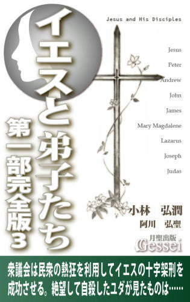
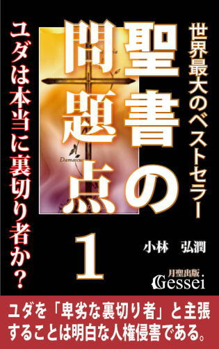
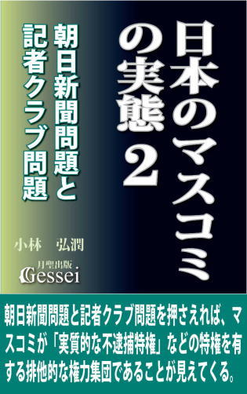

| 社会の学び方・世界史編３: キリスト教国家の発展と世界征服への道（月聖出版） | |
| 小林弘潤 | |
| Gessei Shuppan (2014) | |
社会の学び方・世界史編３
キリスト教国家の発展と世界征服への道
小林弘潤
※更新履歴
2015/11/5 1.1版 ・Kindle用目次追加
※著者ツイッターで、「本の価格を上げる場合の時期」等の情報を発信しています。ご興味ある方はどうぞ（携帯からも読めます）。
まえがき
この『社会の学び方・世界史編３』は、古代のギリシャ・ローマ時代から19世紀末までのヨーロッパ史（欧米史）を時代順に概説した内容で、古代からの大まかなヨーロッパ史を把握したい方にとっては気軽な入門書になっていると思います。
中学や高校で習うヨーロッパ史に出てくる用語や知識をベースにしていますので、「世界史の勉強とはひたすら用語を暗記し、無味乾燥な知識を頭に詰めこむしかない」という認識を持ってきた方にとっては「断片的だと思っていた知識が様々につながっていくことによる面白さ」を味わえると思います（世界史を専攻する受験生だけでなく、既に学校で世界史を学び終えた社会人の方にとっても「歴史ってこんなに面白いものだったのか」という思いを持ってもらえると思う）。
ヨーロッパ史は中国史やイスラム史と違って「小国の動きが様々に絡み合って全体の歴史を作っている」ところがあって非常に複雑で、時代ごとのつながりを理解することは容易ではありません。それに対し、この本ではヨーロッパ史の流れが理解しやすくなるために様々な工夫をしてみましたので、世界史を理解するための基礎知識を紹介した『社会の学び方・世界史編１』の内容も参考にすると、様々な場面で「そういうことだったのか」という手応えがつかめると思います。
「人類史上最大の文明国家」ローマ帝国の体制変革に成功したオクタヴィアヌスの手法、十字軍という侵略行為の背後にある「キリスト教の地獄観による人々の罪悪感」の影響、大航海時代の先駆けとなったポルトガルの未知の世界の開拓は「生き延びるための必死の努力」だったこと、宗教改革によるキリスト教思想の変化がその後のヨーロッパの発展の土台になったこと、世界の覇権国がポルトガル・スペイン・オランダ・イギリスと変遷する様子、ピューリタン革命・アメリカ独立革命・フランス革命が起こった経緯とその後の歴史への影響、フランス革命後に登場したナポレオンが民衆の支持を確固たるものにしたのは「所有権の不可侵」にあったこと、当初は綿織物工業という一分野から始まった技術の進歩が「産業革命」として社会全体を変えていった様子、南北戦争でリンカーンがこだわった連邦維持の方針がアメリカを世界の覇権国にする結果になったこと、そして国民国家体制によって「列強国」となった欧米諸国が植民地獲得競争をする帝国主義の時代が到来し、それが「かつて世界一の国力を誇った中国」を屈服させ、幕末の日本にもその波が押し寄せてそれ以降の日本史が変わっていく様子。そうした「19世紀末までのヨーロッパ史や世界史の流れ」が一望できる本になっていると思います。
1 ローマを「共和国における皇帝独裁体制」に変えたオクタヴィアヌスの権力掌握のやり方
今私がこれ（紙の本『社会の学び方・世界史編』）を書いているのは西暦２００５年という年ですが、この「西暦」というのは、キリスト教の始祖であるイエス・キリストが生まれた年を元年にして作られた暦と言えます（実際は計算を間違えていて、西暦元年はイエスが生まれた年より３年以上早かったようだが）。ではなぜ、キリスト教国家ではない日本がこの暦を使っているのかと言いますと、それはこの西暦が「世界で一番多くの国で使われている、国際標準の暦」だからです。
時代が下ると「技術の進歩」が次から次へと進んで交通や通信が格段に発達するようになりますが、それによって世界各地の交流が活発化していきます。そして交流がある程度まで進みますと、それまで各地でバラバラだったルールを「統一」しようとする動きが生じます。
電子書籍『社会の学び方・世界史編２』の２で紹介した「始皇帝の統一政策」もその一環と言えますが、それから２０００年後の19世紀から20世紀にかけてはこうした統一の動きが世界的規模で起こります。この時は始皇帝の統一政策とは違って「文字や通貨の統一」はそれほど進みませんでしたが、度量衡や暦、数字などの分野では「メートル法」「西暦」「インド・アラビア記数法」による統一の動きが進んでいきます。
ただ、この場合の統一の動きというのは必ずしも「上からの押しつけ」だけではなく、下（世界の強国よりも国力が低く、立場が弱い国々）から自発的に行われることもあります。それは、「世界各地と交流する以上、国際標準のルールを採用した方がどの国にとっても労力の軽減による価値が生まれる」ことがわかっているからです。
日本が西暦を採用したのは19世紀後半の明治時代以降ですが、このことからわかることが二つあります。一つは「19世紀後半という時代は、自国の暦だけでなく国際標準の暦が必要になるほど世界各地の交流が進んでいた」こと。そしてもう一つは「国際標準の暦はキリスト教国が使っていた西暦だった」ことです。つまり、この19世紀後半という時代は「キリスト教国が全世界の主導権を握っていた」ことを意味するのです。
それ以前の世界史の中でも、近代キリスト教国以外の国家が世界の主要国だったことはありました。古代のローマ帝国、８～９世紀の唐帝国やイスラム帝国、13世紀のモンゴル帝国などがそうですが、こうした時代においては世界各地の交流が進むという段階には行っていなかったため、「これらの国々がそれぞれの時代における全世界の主導権を握っていた」とは言えないと思います（あのモンゴル帝国であっても、アフリカや南北アメリカ大陸まで支配したわけではなかったと言える）。
ただ、もし大航海時代や産業革命などを起こしたのがイスラム教国家で、新大陸をイスラム教徒が〝発見〟してさらに技術の進歩を推進させていたら、江戸時代末期に日本に開国を迫ったのはイスラム教国となって国際標準の暦も「イスラム暦」になり、さらには現代の中学校の「主要５教科」が「国語、社会、数学、理科、アラビア語」になっていたかもしれません。このことは決して現実味のない想像ではなく、イスラム帝国が栄えた８～９世紀やモンゴル帝国が繁栄の絶頂にあった13世紀の時代のキリスト教国など、「世界の片隅で停滞している後進国の集まり」でしかなかったのです。
ではなぜ「長く停滞に沈んでいたキリスト教国」がその後大きく発展し、世界各地の交流を促進させて全世界の主導権を握るまでになったのか。この『社会の学び方・世界史編３』ではこうした観点について、古代の時代からさかのぼって述べていきたいと思います。
キリスト教国家の主要地域であるヨーロッパの文明は「地中海」という海を舞台に勃興したと言えます。
仏教の始祖である釈尊、儒教の始祖とも言える孔子が活躍した紀元前６世紀頃、アジアの入り口に近いバルカン半島南方に位置するギリシャ地方では、アテネやスパルタに代表される様々な都市国家が繁栄を競っていました。ただ、こうした古代のギリシャ諸国家という存在は「広い地域に領土を持っている国家」ではなく、「都市単位で独立している都市国家」であるため、現代人がイメージする「国家」とは違うところがあります。
古代ギリシャが中国のような「広大な統一国家への道」を歩まずに「都市国家の乱立」という展開になったのは、自然環境の影響が大きいと言えます。地図でギリシャ地方の様子を見るとわかるように、ギリシャには平野が少なくて小さな山が多く、自然の防壁があちこちにできていたようです。それによって都市と都市の間が「支配と被支配の関係」になりにくく、それぞれが独立して覇権争いをするという状況になったと言えます。
また、国土が狭くて農耕に適さないために産業は海上交易に頼るしかなく、多くの都市国家が競って地中海沿岸に植民都市を造るようになります。お互いに競い合って勢力を高め合う様子はちょうど、後の帝国主義時代のキリスト教国家が繰り広げた植民地争奪戦に似ている、という言い方ができると思います。
紀元前５００年、西アジアで強大な統一国家を作って勢力を増大させていたアケメネス朝ペルシアがギリシャ地方に征服の動きを見せ、ギリシャ諸都市との間でペルシア戦争が勃発します。数度にわたるペルシアの遠征軍の侵攻によってアテネは一時的に征服されることがありましたが、最後はサラミス海戦の勝利などでペルシア軍を撤退させることに成功します。その後、ペルシアの再侵略に備えてギリシャの２００ほどの諸都市が同盟を結び、アテネがその盟主となります。
都市国家としてのアテネは数百年の間に次々と政治体制を変えますが、最後に「民主制」を選びます。この時代のアテネの文明は美術、文芸、建築、そして哲学の分野で高みに達し、ペリクレスという指導者が登場した時代に黄金期を迎えます。
しかし、ペリクレス時代のアテネの繁栄は「一人の人間の力量に頼った繁栄」であり、彼が失脚した後は指導者不在で国論がまとまらなくなります。やがてアテネはペロポネソス戦争でスパルタに敗北してギリシャの覇権を失い、その後のアテネの民主制は衆愚政治と化してそのまま没落していきます。
やがてスパルタの勢力も衰えると、アテネより北方に位置していたマケドニア王国が台頭し、ギリシャ都市同盟の主導権を握ります。紀元前４世紀にマケドニアの王となったアレクサンドロスが「ペルシアの脅威に対抗するには守るだけではなくこちらから攻め入るべき」という方針を立てて遠征軍を編成し、自らも出陣してペルシアに決戦を挑みます。
遠征軍は兵力数では大幅に劣っていながらも、アレクサンドロスが考案した独創的な戦術によってペルシア軍をうち破ります。勢いにのってペルシア地方だけでなくシリアやエジプト、インド西部や中央アジアにも攻め入って各地の征服に成功し、アレクサンドロスはそれまでのギリシャの国家が持つ「こぢんまりしたイメージ」を覆すような空前の大帝国を建設します。しかし彼がわずか32歳で死去したことで征服地を統一国家として統治する体制までは作れず、帝国はすぐに分裂して弱体化していきます。
ギリシャの高度な文化は、アレクサンドロスの遠征によって西アジア方面に伝わっただけでなく、やがてギリシャを征服するローマにも伝えられることになります。
このローマという国家も、アテネと同じように政治体制を「王政」から「共和政」そして「帝政」へと変えています。政治体制を変革すると国家は混乱することも多いですが、ローマの場合は「逆に体制が安定して、変革後は繁栄や平和の時代が到来する」という流れになっていきます。
紀元前８世紀に勃興したと言われる初期のローマは王政でしたが、これは一般的な王政のあり方としての「血統重視の世襲による継承」ではなく「実力重視」的な継承のされ方をしたようです。次に共和政となりますが、これも現代のような「国民が選挙で為政者を選ぶ議会制民主主義」とは違います。ローマの政治執行機関の中心は元老院でしたが、これは国民から選挙で選ばれた人から構成されているわけではないので国会とか議会ではありません。こうした政体は選挙で選ばれない少数の集団が政治を動かしていたという意味で「寡頭制」とも言われています。
共和政ローマでは平民と貴族の抗争が続きますが、ケルト族から侵略を受けたことで国家意識が高まり、貴族が平民の権利の向上を認めて元老院も平民に開放するようになります（リキニウス・セクスティウス法）。これによってローマはより共和政に近くなり、国家体制を整備して力を蓄え、アレクサンドロスの帝国が分裂を始めた紀元前３世紀にはイタリア半島を統一するようになります。
これによって新興国として台頭したローマの前に、地中海の覇権を握っていた大国カルタゴが現れます。ローマとカルタゴの覇権戦争であるポエニ戦争はよく、「強大な国家ローマが軍事力が弱いカルタゴに仕掛けた一方的な侵略戦争」と言われますが、ローマが強大になるのは帝政開始以降か、少なくとも「このポエニ戦争の勝利によって地中海の覇権を獲得してから」のことなので、対等の国同士が地中海の覇権を争った戦いという認識の方がしっくり来ると思います。
第一次ポエニ戦争で優位に立ったのはローマでしたが、第二次ではカルタゴが逆襲に転じてローマは何度も敗北を重ねます。その時のカルタゴの将軍だったハンニバルは日本史の源義経のような軍事的天才で、十数年もの長期にわたってローマを苦しめたようです。しかし、やがてローマにもハンニバルのような軍事的能力を持った人物・スキピオが現れ、ザマの戦いでハンニバルを破ってローマの優位が確定します。最後の第三次ではローマがカルタゴ本国を征服し、カルタゴは壊滅して地上から消滅します。
大国カルタゴを征服したことでローマは「イタリア半島内の地方国家」ではなく、「地中海沿岸に領土を持つ広域国家」となったため、それまでの国家体制を改革しなければならない状況となります。しかし、勝利の奢りから執行機関の元老院が「カルタゴに勝ったのは俺たちの力だ」という意識を強めて批判を許さない独裁機関となり、さらには特権階級化して腐敗していきます。社会体制の変化によって平民が没落して貧富の差が拡大していっても元老院は有効な対策を行わず、それどころか「貧富の格差の是正」などを目指したグラックス兄弟の先進的な改革を徹底的に潰し、兄のティベリウスは惨殺され、弟のガイウスも追いつめられて自害することになります。
この時の元老院は「共和政を擁護し、独裁者を防ぐ」という建前で改革者を潰していたと言えますが、「共和政の砦である元老院に逆らう人間はすべて独裁者だから、そうした人間を失脚させるためには謀略でも虐殺でも何をしても構わない」という発想をしていたことが推測されます。ただ、実際には「自分たちに逆らう人間はすべて悪だから、何をしても構わない」という正当化の発想に凝り固まって暴走してしまった人間こそが「真の独裁者（悪い意味での）」であり、これでは「元老院独裁を打ち倒さなければローマは滅んでしまう」と考える人間が出てきてもおかしくないと言えます。
そうした傾向が、「元老院支配から脱却するために終身独裁官に就任し、共和政を停止させる」というユリウス・カエサルの選択を生み、さらには「実質的な独裁権を握って元老院の権力を削減させ、事実上の帝政を開始する」というオクタヴィアヌスの判断につながっていきます。
この時、元老院が「まずは自らの腐敗や堕落を認めて自己改革をし、そして新しい状況に合ったローマの改革を積極的に行っていた」という場合、カエサルもオクタヴィアヌスも独裁権を握るという選択をせず、元老院と協力して共和政発展のために尽くした可能性が高いと思います。つまり、ローマが共和政を捨てて帝政に移行した最大の功労者は元老院、と言うことができるのです。
この時のオクタヴィアヌスの権力掌握のやり方は、個人的には「源頼朝の権力奪取のやり方に近いのでは」という感じがしています。頼朝は「それまでの天皇制（律令体制）の枠組みを守り、形式的には朝廷の下に就いて実権だけ掌握する」というやり方で成功しますが、オクタヴィアヌスの場合は「それまでの共和政の枠組みを守り、形式的には元老院を立てて実権だけ掌握する」というやり方を取っています。
こう言うと、「オクタヴィアヌスはローマ帝国初代皇帝なんだから、皇帝に即位した時点で共和政は崩壊したんじゃないか」と思われるかもしれませんが、実際はオクタヴィアヌスが〝皇帝〟になった後も、共和政の枠組みは続いているのです。
「共和国における皇帝独裁」というのは矛盾した言い方に聞こえると思いますが、この場合の皇帝というのは「中国皇帝のように制度的に強大な権力が認められている君主」ではなく、「実質的な独裁権を持った人物（建前は共和国なので君主ですらない）」を指します。
この「共和政の枠組みを守りながら実権だけ掌握する」というやり方をオクタヴィアヌスが選んだ理由は、「共和政の枠組みを撤廃したら危険だ」という思惑があったからと推測できます。というのも、彼の養父だったカエサルが終身独裁官という地位に就いて共和政の枠組みを崩そうとした時、共和政擁護派のブルータスらによって暗殺されていたからです。
頼朝が「律令体制という枠組みを崩さずに実権だけ掌握する」というアイディアを思いつくまでにはかなりの苦労があったと思いますが、このオクタヴィアヌスも同じだったと思います（もっとも、時代としては頼朝の方が１２００年ほど後の人なので、オクタヴィアヌスの方が大変な先輩と言えるが）。ただ、頼朝の場合は「相当な権謀術数の持ち主だった後白河上皇との正面からの対決」だったのに対し、オクタヴィアヌスの場合はもっと巧みに「異性を口説くテクニック」のような手法を上手に使っている雰囲気があります。
私自身はそちらの方面では経験も少ないので専門的なことは知りませんが、「押しと引きを上手に切り替える」ことが異性を口説く有効なテクニックであることは昔も今も変わらないものです。異性の口説き方として、たまに「とにかく積極的に、強引に迫って押せば成功する」などという話も聞きますが、これは「上からスローガンの押しつけをするだけで人間関係はよくなる」というのと同じレベルの発想だと思います。
大事なことはいかに効果的な「引き」を入れるかで、このことは異性を口説くだけでなく様々な人間関係において有効なやり方と言えます（なぜこれが有効なのかは紙の本『人間関係のコツ』で紹介した「要求と提案の理論」で説明できる）。
オクタヴィアヌスがこのテクニックを使ったのは「女性」ではなく「元老院」に対してですが、この場合の「押し」とは「自分を独裁官として公式に認めろ、と元老院に迫る」ことになります。彼はライバルのアントニウスらに勝利してローマの内戦を終結させていたので、元老院としては当然「オクタヴィアヌスはカエサルと同じ終身独裁官の地位を望むだろう」と思い込んで戦々恐々としていたようです。そうした状況で彼は「自分が持っている権力をすべて元老院とローマ市民の手に戻す」という宣言をしたのです（塩野七生『ローマ人の物語14 パクス・ロマーナ上』新潮文庫）。
この宣言によって元老院は喜んだばかりでなく彼に対する緊張を一気に解き、見返りとして「アウグストゥス」（尊厳なる者）という称号を与えます。これは「独裁的な権力を伴う地位」とは何の関係もないのですが、やがてこの称号や、以前に与えられていた「インペラトール」（軍団指揮者に与えられる称号で、これが後の「エンペラー」につながる）、「プリンケプス」（市民の第一人者）という称号が「権威」として力を持つようになったのです。
オクタヴィアヌスはさらに同じような「引きの手法」を使って、「ローマ全体の軍事力」と「元老院の承認の元に毎年更新される拒否権」を手に入れることに成功します。拒否権というのは現代における「国連の安保理の常任理事国が保持している拒否権」の例があるように、決定したことを白紙に戻せる権限のことですが、日本史における政治制度にはほとんど出てこないので日本人にはなじみが薄い感じがします。実際はこの拒否権というのは、的確な状況で使えば大変な武器になるものなので、行使せずに保持しているだけでも非常に大きな権力を握っていることになるのです。
大事なことは、こうした称号や権力を「元老院が喜んで与えた」ことです。もしこうした権力を反対する元老院を抑えて奪っていった場合、彼は元老院から「カエサルと同じ共和政の破壊者」と見なされて政権基盤が弱くなっていた可能性があります。元老院側が後になって「もしかしたらオクタヴィアヌスに出し抜かれたのでは......」と気づいたとしても、自分たちが喜んで与えたという事実を前にしては抵抗も弱くならざるを得なかったと言えます。
こうした状況によって、彼はローマを地中海全体を統治する広域国家として変革し、ローマの平和（パクス・ロマーナ）の基礎を作ることに成功したのです。
「オクタヴィアヌスは絶世の美男子だった」と言われていますが、彼が権力掌握のために駆使した引きの手法は「若い頃、女性を口説いている時に身につけたのではないか」という気もしてしまいます。
2 古代国家と思えない文明度の高さを誇るローマは世界史的に見て特異な存在と言える
この「ローマ」という国を世界史上の様々な国家と比べてみると、何か「隔絶している」という感じがすることがあります。そこでここでは、ローマという国家が持つ「世界史的に見た特異性」ということについて触れてみたいと思います。
この特異性ということは「他と比べて異質である」ということですが、この場合は「国家として飛び抜けて優秀な存在」という意味が強くなります。
それに関する要素を列記してみますと、まずは「古代の国家とは思えない文明度の高さ（これはギリシャ諸国家にも共通している）」を持っていたこと。「共和政から帝政、という根本的な政治体制の変革をしても混乱しない柔軟さ」があったこと。「広大な領土を統治した巨大国家としては群を抜く安定度」があったこと。そして「世界史上類を見ない息の長さ（小さな都市国家としての時代から数えて１０００年、分裂後の東ローマ帝国時代も含めれば何と２０００年続いた）」もあげられます。
さらに「イタリア民族だけでなく他民族の人々も支配層に組み入れ、征服地出身の皇帝も数多く誕生した」ことも特筆すべき観点だと思います。帝政開始以後のローマでは「皇族による王朝を続ける」という風潮は浸透せず、「実力がなければ皇帝にはなれない」という実力重視的な意識が徹底していました。こうした国家のあり方は、近代の民主主義国家誕生以前の世界史では希有な例と言えます。現に、西ローマ帝国滅亡後のヨーロッパでは〝王政復古〟が起こり、やがて「国家の君主は血統で継承するのが当たり前」という意識になったと言えます。
もう一つ、これは「事実として」ではなく「一つの解釈として」の話になりますが、ローマが作った文明のレベルは、現代文明でさえ到達していないほど高度なものだったと言われることがあります。ローマ史を学んだ人の中には「ローマの歴史を知れば知るほど現代との格差を感じて落ち込む」という人もいるほどですが、個人的にはこの解釈はにわかには首肯しがたく、「現代社会への不満から昔の時代を理想化してノスタルジーに浸ろうとする心理」もあるのでは、という感じがします。
ただ、ローマという国家が様々な面において群を抜く国家だったことは間違いないと思います。西ローマ滅亡後のヨーロッパの文明は明らかに「退化」していますが、それは「その後のヨーロッパの支配者になったゲルマン人がだらしなかった」というよりローマが飛び抜けて優秀だったからで、「ローマと比較する方が可哀想」という感じがします。「人類はローマの文明に未だに追いつけない。ローマ人に比べて私たちはなんて愚かなんだ......」と落ち込むより、「ローマというのは奇跡のような存在で、その後の人類の目標になるために出現したんだ」というような解釈をして割り切った方がいいと思います。
そこで、なぜローマが「世界史上最高の文明国家」と言われるほどレベルの高い国家になったのか、ということにも触れてみたいのですが、私にはこの問題に誰もが納得できる解釈を提示できるほどの力はありませんので、あくまでも「現時点で感じる個人的解釈」として受け止めてもらえればと思います。
最初に言っておきたいのは、「ヨーロッパや地中海の地形や風土などの自然条件、という要素ではローマの強大化や文明度の高さは説明できない」ということです。これは中国の例と比べるとわかりやすいですが、古代中国で秦という巨大な中央集権的統一国家が誕生したのは、中国の自然条件の要素が大きいと言えます。それは『社会の学び方・世界史編２』の２でも触れたように、古代中国の場合は「大河である黄河が氾濫しやすい」という状況があり、「氾濫して大きな被害をもたらす黄河の治水ができれば安定した農耕ができるので、大きな政治の力が必要とされる環境ができていた」と言えるからです。
それに対してヨーロッパには、黄河のような「大規模な治水が必要な大河」はありませんし、中国のように平原が広がっているわけではなく山地が多いので独立した国家ができやすい、と言えます。
実際、西ローマ滅亡後に東ローマ帝国のユスティニアヌス帝やフランク王国のカール大帝などが「古代ローマの統一国家の再現」を目指しましたが、一度征服した土地もすぐに離反したり分裂するなどして一時的な征服しかできず、その後のヨーロッパの国家体制は「地方単位の国家が分立する」という形態が固定化していくことになるのです。
そう考えますと「人材」という要素が大きかったと思います。実際にローマでは有能な人材が次々に現れたところがありますが、有能な人材というものは偶然に出てくるわけではなく、「国政の方針や民族の伝統がよかったから」ということを考える必要があると思います（ただ、その一方で、いい人材が出てくるかどうかは「必ずしも環境や教育だけでは決まらない」という意識も必要だと思う）。ここでは、ローマの文明度を高めた国政の方針として「これが大きかったのではないか」と感じる観点を一つだけあげてみたいと思います。
それは「征服地に対する寛容さ」です。この寛容さというのはローマの場合は「敗者をも同化させる方針」と言われますが、この方針はローマ建国当初から存在し、ローマの伝統となって一貫して続いていきます。
ローマは基本的に、他国を征服しても「現地の君主に自治権を与える」とか「道路などを建設して経済を活性化させる」などの政策によって、「敗者」に対してなるべく不満を抱かせない統治を心がけていたようです。こうした姿勢は経済政策にも表れており、「すべての道はローマに」と言われるように各地の街道を建設し整備して物資の流通を促進させ、税関の数を減らして関税を安く抑え、さらには治安対策にも手を抜かなかったようです。
ローマ史について書かれた本の中には「ローマは征服地（属州）をひたすら搾取して、属州民は悲惨な生活を送っていた」という解釈をしているものもありますが、もちろんこうした解釈にも一理あると言えます。ローマが属州に過酷な仕打ちをした例はいくつもあり、中でも「征服したカルタゴを徹底的に破壊した」ことや、「ユダヤ戦争という反乱を起こしたユダヤ地方を壊滅させ、エルサレム神殿に籠城したユダヤ教徒を虐殺した」という史実が有名だと思います。
私も以前は「ローマは属州にひたすら過酷で残虐なことを行っていたんだろう」と思っていたものですが、その後自分で調べてみて「イメージと違うな」と感じるところがいくつも出てきました。
例えば、ローマ支配下でのユダヤ地方の場合「ユダヤを支配する王や総督が民衆に不当な仕打ちをした場合、民衆がローマの政府や皇帝に告発する」ことが認められており、ローマ側にも「民衆の訴えを聞き、公正な統治を行う」という姿勢はあったようです。ユダヤがローマに反乱を起こしたユダヤ戦争が起こった背景に「ローマ総督の過酷な搾取」があったことは確かですが、「それだけがこの戦争の原因じゃないな」という思いになったものです（ユダヤ戦争については電子書籍『開戦 イエスと弟子たち・第二部７』で詳しい状況を描いている）。
いくら「寛容さを心がけていた」と言っても、反乱という行為には厳罰で臨むという姿勢がないと秩序は保てず「統治」はできなくなります。その意味で、ローマ人が持っていたのは「何でも許そうとする思慮のない寛容さ」ではなく、「状況に応じて峻厳さを使い分ける柔軟性を踏まえた上での寛容さ」だったのではないか、という気がします。
統治というものは、生半可な寛容さだけでできるほど甘いものではないと言えます。ローマが行った「寛容さ」というのは、人間の姿を理想的にだけ見るのではなく「現実的で冷徹な目」によって把握した上で生まれたものであり、その意味で「峻厳さと寛容さを的確に使い分けられるだけの現実感覚を持っていた」ことが、長期にわたる広大な領域の統治に成功した大きな要因だと思います。
さて、初代皇帝アウグストゥスや次のティベリウス帝の時代に基礎を固めたローマ帝国は、紀元２世紀の五賢帝時代に最盛期を迎えます。しかし、その後は徐々に衰退の兆しを見せ、やがて「君主の実力重視」の弊害が出て軍事力によって権力を握るという動きが起こり、皇帝が次々と変わって権力が安定しない「軍人皇帝時代」が50年ほど続きます。３世紀後半、帝国の再建を図ったディオクレティアヌス帝は、それまでの「市民の第一人者としての皇帝」を「専制君主としての皇帝」という位置づけに変え、これによってローマは名実ともに「帝国」となります。
このディオクレティアヌス帝は「ローマ皇帝という地位を専制君主に変えた」ことと、「国力を失いつつあったローマを改革しようとした」ことで有名ですが、もう一つの特筆事項として「キリスト教に大迫害を加えた」ことがあげられます。そこで、第二代皇帝のティベリウス時代のユダヤの地で成立し、その後の精力的な布教によって「ローマ帝国内における一大勢力」となっていたキリスト教についても簡単に触れてみたいと思います。
キリスト教の歴史について理解するためには、「政治と宗教の距離の取り方」に関する知識が必要になります。それについてイスラム教と比較しながら述べてみたいと思いますが、現代までのイスラム教が「政治との距離が非常に近く、ほとんど一体化している」という状況であるのに対し、キリスト教は初期の時代から「政治との距離を取ろうとする傾向」があったと言えます（仏教にも似たようなところがあります）。
これは『社会の学び方・世界史編２』の７でも触れましたが、そうした「距離の取り方の違い」は初期の教団のスタンスが影響しています。キリスト教の場合、始祖のイエスが明確に政治指導者の道を選ばなかったことで、その後のキリスト教団は「既存の国家の支配から離れ、独立国家を作って政治と一体化する」というやり方は取りませんでした。そうではなく、「既存の国家の中で勢力を拡張させ、宗教団体として組織化する」という道を選んだと言えます。
こうした方向性はキリスト教の教典である聖書の記述から読み取ることができます。マルコ伝12・17には、「ローマの皇帝に税金を納めることはユダヤの律法にかなっているのか」という尋問に対して、「皇帝のものは皇帝に、神のものは神に返しなさい」というイエスの答えが書かれており、こうした「既存の国家の中での義務（税金だけの問題ではない、という解釈もできるため）はしっかり果たす」という考え方がキリスト教の方針として定まったところがあります。
ただ、キリスト教が次第にローマ帝国の中で勢力を拡張して組織化を進めていく中で、様々に難しい問題が生じるようになります。
組織化ということは『社会の学び方・世界史編２』の13でも触れたように「一人が出す指示や命令が組織や構成員に伝わって実行されること」を意味しますが、原始キリスト教団としては、信者を増やしても教えを守らない人が増えては意味がないので、勢力を拡げると共に「キリスト教の教えを元にした組織化」を進めることになります。ところが、キリスト教団における「既存の国家」ローマ帝国も一つの組織であり、「法律や為政者の命令を構成員が忠実に守ることを要求する傾向」を持っています。
「ローマ帝国という国家からの命令」と「キリスト教団からの命令」がすべて同じであれば問題はありませんが、食い違っているところ、合わないところがいくつかあったため、勢力が拡大して組織が大きくなればなるほどこうした「指示や命令の相違」による問題が様々に起こるようになります。その典型例としてあげられるのが、国家が民衆に要求する皇帝崇拝における問題です。
この皇帝崇拝の要求は、国力を失っていたローマが改革しようとする場合に起こりやすいと言えます。国力を失うことは国家の分裂が進むことを意味するため、改革ということには「中央集権化の推進」という要素が入ります。そして、そうした中央集権化の政策として「ローマの民衆に対し、それまで以上に皇帝崇拝を要求する」ことが行われるわけですが、それに対してキリスト教徒の中には「神として崇拝するのはイエス・キリストに対してのみ」という考え方があったために皇帝崇拝を拒否する傾向があったのです。
ただ、教団が皇帝崇拝拒否を明確な指示として出すことは「国家の中での義務はしっかり果たす」という方向性との兼ね合いもあって難しく、どちらかと言うと「教団が強制した」というより「信者の主体性に任されていた」ところがあると思います。当時の信者の中に「他の義務は果たしてもいいが、皇帝崇拝だけはどうしてもできない」という意識が強かった感じがします。
こうした国家の組織と教団の組織が違うことによる問題が、「ローマがキリスト教を迫害する」という形で何度も噴出します。初期で有名なのがネロ帝の迫害ですが、最も激しかったと言われるのがディオクレティアヌス帝の迫害だったと言えます。それは、この頃がまさにローマにとって「軍事力の暴走や経済危機などで国力が低下し、国家の求心力が失われようとしていた状態」であり、ローマ側としては「皇帝崇拝拒否を許すことは国家の弱体化につながり、とても容認できない」という意識があったからです。
迫害がたびたび起こったということは、「ローマ帝国とキリスト教団が敵対関係にあった」とも言えますが、それに対してキリスト教団側には「いたずらにローマに抵抗して多大な犠牲を出すよりは、協調姿勢を取った方がいい」という意識が以前からあったと言えます。
そうしたことを意識した勢力はローマの為政者にキリスト教を理解してもらおうと努め、「キリスト教を公認することはローマにとって有益になる」ことを彼らにアピールしていったため、やがてその努力が４世紀初めのコンスタンティヌス帝時代の「キリスト教公認」として実を結びます。
このキリスト教公認という出来事についてはよく、「皇帝の近くにいた司教（エウセビオス）が皇帝にひたすら追従して媚びへつらったからだ」とか「コンスタンティヌスが自分の統治を安定させるためにキリスト教徒を利用しただけだ」というような解釈がされることもありますが、それ以上にキリスト教徒の中に「為政者に理解してもらうための並々ならぬ努力があった」ことの方が重要だと思います。こうした必死の努力がなければ、キリスト教はローマ帝国かそれを継承した国家権力によって徹底的に迫害されて滅亡し、その後の世界史はまったく変わったものになっていたはずです。それによって、現在の世界はなかったかもしれないのです。
公認によって、ローマ帝国とキリスト教の距離は「敵対関係を克服してかなり近づいた」と言えますが、それが次に４世紀末のテオドシウス帝による国教化という段階になります。これは「ローマ帝国の民衆はキリスト教しか信仰してはならない」という意味であるため、イスラム教ほどではないが、政治と宗教がかなり近い状態となったのです。
これによってキリスト教は「政治から距離を取ること」も「政治との距離がかなり近くなること」も両方経験したため、それ以降の時代においては「状況に応じて政治との距離の取り方を変える」ことができるようになったと言えます。
イスラム教の場合は初期の時代において政治と宗教が一体化することで成功したために「宗教というのは常に政治と一体化しているものだ」という意識がイスラム社会に浸透して固定化してしまいますが、キリスト教はそれとは違ったスタンスになったのです。この「状況に応じて政治との距離の取り方を変えられる」というキリスト教の特徴は、その後の世界史に様々な影響を与えていくのです。
3 西ローマ滅亡で後ろ盾をなくしたローマ教会は「生き延びるため」政治的取引すら行った
ローマ帝国の衰退は、４世紀初めのキリスト教公認によっても歯止めがかかることはありませんでした。
ローマは４世紀末に東西に分裂し、大都市ローマを擁する西ローマ帝国が５世紀後半に滅亡したことによって「世界史上最高の文明国家」は歴史の表舞台から消え去ることになります。この西ローマ滅亡の大きな要因になったのが、ローマ北方に居を構えていたゲルマン人がローマ領内に大挙して侵入した「ゲルマン民族の大移動」という出来事です。
ただ、個人的にはこの出来事を「大移動」と呼ぶのが不思議で、「なぜゲルマン民族の大侵略と言わないのだろう？」という思いがあります。日本語で「移動」と言うと旅行や引っ越しでもするようなお気軽な雰囲気を感じてしまうので、何かしっくり来ないなという気持ちになってしまいます。
侵略や征服と言わない理由は、「最初のうちゲルマン人はローマ領内に侵入しながらも、ローマと同盟を結んで統制に服したところがあったから」ということのようです。また、「侵略」の場合は軍隊だけが遠征するのに対し、ゲルマン人の場合は家族や家ごと移ってきたからということも一つの要因のようです。
ただ「同盟を結んだ」と言っても、それは「手を焼いたローマがゲルマン人を懐柔するためにやむを得ず使った手段」のようで、ゲルマン側も自分たちの要求が聞き入れられなければ同盟を反古にしたところがあり、彼らとしてはローマの統制に服したわけではない感じがします。その意味で、実態としては大移動ではなく「家族や部族の移動も兼ねた侵略や征服運動」と言っていいと思います。
ローマの領土に次々に侵入したゲルマン人は、ローマ高官の地位に就いて征服地を支配しようとします。こうした異民族支配をローマ領内の民衆は受け入れたところがあり、それは中国における異民族・女真族が中国の統治に成功した過程に似ている感じがします（『社会の学び方・世界史編２』13の清帝国の話参照）。
それまでの西ローマは軍事力を傭兵に頼っていたために軍事費がかかり、それを調達するために民衆に増税をかけていたようです。それに対して新たな支配者であるゲルマン人は「軍役は最も名誉な仕事」という伝統もあって「定住や租税免除と引き替えに無償で軍役を引き受ける」という取引が成り立ってその分の軍事費が浮き、租税が軽減されるところがあったようです。
最初はローマの承認の下での合法的統治を行っていたゲルマン人でしたが、ローマの軍役を担うことで「軍事力」という権力の要素を確保してしまえば、その後どんな行動を起こすかは自明の理と言えます。やがて、親衛隊司令官だったオドアケルが宮廷クーデターを起こして西ローマ帝国が滅び、その後は様々なゲルマン人国家が西ローマの領域に建設されるようになります。
ただ、当時のゲルマン人は異民族統治の経験がなく統治のノウハウを持っていなかったと言えるので、「清帝国を安定した統一国家にした女真族」ではなく「五胡十六国時代の異民族政権」の方に近いと言えます。実際にゲルマン人の統治は不安定で、やがて小国同士の興亡が次々と繰り返されることになります。
ゲルマン人の侵入による混乱の様子は、「ローマ市の人口がローマ帝国時代に比べて極端に減った」ことに表れています。最盛期には１００万人を擁した人口が、「１、２万人程度になった」とも言われています。
これには主に二つの要因があり、一つはローマ帝国時代のローマ市の繁栄と活況が「広大な領域を持つローマ帝国の首都として、属州から常に物資が供給されることで成り立っていた」ところから来ることです。つまり、ローマ帝国が東西に分裂し、衰退していく中でのローマ市はそれまでのような物資の供給ができずに人口が養えなくなり、ローマ市の周辺だけで生産される物資の規模の人口にまで減少せざるを得なかったということです。
そしてもう一つは、ゲルマン人の文明度の低さや統治の未熟さが影響して「経済が停滞した」という側面です。西ローマ滅亡後のヨーロッパ社会は「ローマが造り上げた高度な文明社会に比べて退化した時代」であり、その後数百年ほどイスラムの支配下に入ったイベリア半島を除くと完全な停滞時代が続くことになります（ただ、２でも触れたように、これを完全にゲルマン人のせいにするのは可哀想、という見方もできる）。
中国でも「高度な文明度を誇った漢の時代」が崩壊した後は長い分裂と停滞時代が続きますが、こちらでは７世紀の唐の時代に停滞から脱し、再び高度な文明国家を造り上げています。それに対してヨーロッパは西ローマ滅亡から６００年ほど経った11世紀になってようやく、技術の進歩が進んで農業の収穫量が増大するという展開を見せるのです。
そこでここからの「退化と停滞の時代」のヨーロッパの歴史については、まず「ローマ教会を中心とするキリスト教教会と教皇」について触れることから始めてみたいと思います。
中世のローマ教会や教皇のイメージとして、「宗教だけではない政治的権力を強め、カノッサの屈辱によって皇帝を屈服させた」ことや「十字軍派遣を呼びかけて残虐非道の行いをさせた」ことなどから、宗教者にあるまじき権力の追求をしているというようなマイナス的な印象を抱く人も多いと思います。
私も高校で世界史を学んだ時にそうしたイメージを持ったため、「中世の教皇や教会はずっと堕落していたんだ」という認識を持っていましたが、自分で調べてみてそうしたイメージが少し変わりました。現在の認識は「十字軍以後はともかく、それまでの教会は堕落していたというより、生き延びるために懸命の努力をしてきた」というもので、少なくとも「ローマ帝国が分裂した後のローマ教会は何度も危機的状況を経験し、その都度生き延びるためのギリギリの選択をしてきた」ことは間違いがないと思います。
ローマ帝国の分裂によってキリスト教の「組織」も東西に分立する傾向が現れ、西側は「ローマ教会中心」、そして東側は東ローマ帝国の「コンスタンティノープル教会中心」という構成になったと言えます（ただ、最初の時点では完全な分裂はしていないよう）。そして西ローマ滅亡を境にして、西のローマ教会と東のコンスタンティノープル教会は組織としてのあり方がまったく違うものになっていきます。
東は「皇帝が教皇を兼ね、政治と宗教を一体化させる（皇帝教皇主義）」という方針になりますが、これによってコンスタンティノープル教会は「経済的な問題や軍事的保護など、政治的なことは皇帝側に依存して生きていく」ことができるようになったようです。それに対して西のローマ教会は、保護してくれた西ローマ帝国が早々に滅んで後ろ盾をなくしたために、政治的なことすら自分たちでやらなければならなくなったと言えます。
分裂以前のローマ帝国の頃は皇帝に教会の人事権があり、教皇（当時はローマ司教）の任命権も皇帝にあったと言えます。やがて西ローマが滅んでからも「教皇選挙の結果は東ローマ（ビザンツ）皇帝が認めることで有効とされた」ことから、皇帝が教皇の人事権を持っていたと言えます。イタリア半島の一部が一時期ビザンツの支配下に入ったことで、そこからビザンツ皇帝が教皇を監督したという側面もあり、ここまでは「東西両方の教会をビザンツ皇帝が支配していた」という状況だったようです。
ところが、そうした力関係が８世紀前半にビザンツ皇帝が出した「聖像崇拝禁止令」によって変化します。この聖像（聖画像）崇拝という概念は宗教上の問題として複雑な要素があるのでここでは詳しく触れませんが、「聖像重視」の方針で教義を作っていたローマ教会にとっては「聖像禁止」は死活問題であったため、この法令に反対する立場を取ります。しかしこの態度がビザンツ側の反発を買い、制裁を加えられたため教会は財政難に陥ってしまったようです。
そこでローマ教会は生き残りを賭け、当時ゲルマン人の中で勢力を拡大しつつあったフランク王国と接触して経済力や軍事的な保護を求める交渉を行います。
当時、フランク王国（メロヴィング朝）では、西方からのイスラムの侵攻をトゥール・ポアチエの戦いで撃退したカール・マルテルという宮宰（日本における「天皇に対する関白」のような地位で、世襲で継承した）が実権を握っていましたが、外交的な問題もあってこの時のローマ教会の交渉は失敗に終わります。
事態が展開したのは、宮宰だったカロリング家の当主がカール・マルテルからピピンに代わった時で、きっかけは「ピピンがフランク王国の王位を簒奪する大義名分を得ようとした」ことにあったと言えます。ローマ教会はこれを絶好の機会ととらえ、「君主としての実力があるなら簒奪も正当化される」ということを伝えたため（もちろん直接こう言ったわけではなく、遠回しの言い方をしたらしい）、大義名分を得たピピンはメロヴィング朝を滅ぼしてフランクの王位に就きます。
こうしたローマ教会の動きを見たビザンツは、イタリアのロンバルド王国を動かしてローマ教会にさらなる圧力をかけます。それを察知したピピンは南下してロンバルドと戦って逆に征服し、そこで得た領土を教皇に「教皇領」として寄進します（ピピンの寄進）。これによってローマ教会は当面の危機を脱しただけでなく、新しい領土による経済力を獲得するという展開になります。
８世紀末（８００年）、ローマ教会はピピンの次に君主の座についたカールに皇帝の称号を与えて戴冠式を行います。この場合の皇帝とは「西ローマ帝国皇帝」という意味ですが、普通に考えると「すでに３００年前に滅んでいる西ローマ帝国を持ち出してどうするんだ？」という印象になると思います。言えることは「時代が下っても、ローマ帝国と皇帝という存在は絶大な権威としてローマ教会とゲルマン人双方に認知され続けていた」ということです。
また、この「西ローマ皇帝」という称号は中国における「皇帝」のように「自分で皇帝を宣言して支持されれば認められる」わけではなく、ローマ教会から認めてもらって初めて成立するものになっていたようです（これも絶対ではなかったようだが）。
この「カールの戴冠」という出来事は、ローマ教会が権威と引き換えに経済力と軍事的保護を獲得したという意味で「権力をめぐる取引」と言えるので、人によっては「宗教者にあるまじき世俗的行為だ」というマイナス的な評価をする人もいると思います。ただ、いくら宗教関係者であっても生き延びるためには経済力や軍事的保護は必要と言えるので、個人的には「この程度の取引ならやむを得ないのでは」という感じがします。
ただ、ローマ教会の思惑とは裏腹にカール大帝死後のフランク王国（カール戴冠以後のフランクが（復活した）西ローマ帝国と呼ばれないのが不思議ですが）はすぐに分裂し、国力が衰えてしまいます。しかし、西ローマ滅亡後に様々な危機を乗り越えてきたローマ教会の方は、どんな状況になっても自立してやっていけるだけの政治力を蓄えており、その後も世俗権力と様々な交渉を行って生き延びていったと言えます。
ここで、ビザンツ（東ローマ）帝国の興亡についても触れてみたいと思います。ビザンツ帝国は西ローマと違ってゲルマン人の侵入を防ぎ、生産性の高いシリアやエジプトも保持していたことで経済的にも政治的にも安定していたようです。西ローマが滅んでから数十年後の６世紀半ばには、ユスティニアヌス帝が「ローマ帝国の再興」を目指してゲルマン人国家への遠征を行いますが、軍事費が膨らんでその後の国家財政を悪化させることになります。
やがて東方ではササン朝ペルシアとの抗争が激化して交易が停滞し、７世紀に入るとアラビア半島で勢力を拡大したイスラム教徒の征服を受けて、シリアとエジプトを失ってしまいます。勢いに乗ったアラブ人はビザンツの首都コンスタンティノープルまで押し寄せますが、ビザンツ帝国は何とか持ちこたえて独立を守ります。しかし、それまで確保していた生産性の高い領土を失って「バルカン半島とアナトリアだけの一地方国家」に転落することになってしまいます。
普通の国であればこの後「じりじりと衰退して滅亡する」ものですが、ビザンツはローマ帝国が持っていた「政治体制を変革しても混乱しない柔軟さ」を継承したところがあるのかその後の改革に成功し、新たな状況に応じた国家体制を作って安定を取り戻します。ゲルマン人国家を含めたキリスト教世界の中で、ビザンツ帝国は「ローマ帝国の正統な後継者」としての強い自負を持っていたようです。
ローマ時代と比べて退化したゲルマン人国家に代わり、ローマの高度な文明を保持して後世に伝える役割をビザンツは担います。ユスティニアヌス帝はローマ時代の法律を編纂する事業を行い、それによってローマの膨大な法体系が「ローマ法大全」として後世に伝えられます。ゲルマン人もビザンツから様々な影響を受け、「手づかみで食事をすることしか知らなかったゲルマン人は、フォークとナイフを使うことをビザンツから学んだ」とも言われています。
ビザンツ帝国は、周辺諸国家が様々な興亡を繰り返す中で生き延びていきます。まず５世紀の末に「兄弟国」西ローマ帝国がゲルマン人によって滅び、６世紀半ばにはそれまで抗争していたササン朝ペルシアがイスラムによって滅び、そのイスラムのウマイヤ朝も８世紀半ばに滅び、ゲルマン人によるフランク王国が９世紀半ばに解体しても、ビザンツはその命脈を保ちます。
その後も様々な諸国家の興亡があり、繁栄を誇ったアッバース朝も10世紀には衰退して一地方国家となります。11世紀にはイスラムのセルジューク朝によって圧迫を受け、ビザンツはさらに領土を奪われただけでなく滅亡の危機に瀕します。打開策としてローマ教皇に援軍を依頼しますが、13世紀の第四回十字軍によってコンスタンティノープルが攻略されてしまいます。
しかしそれでもビザンツ帝国（この時はニケーア帝国という名称）は別の都市に亡命政権を作って応戦し、やがて父祖伝来の首都を奪還することに成功します。さらに14世紀、勃興したばかりのオスマン帝国の圧迫を受けますが、そのオスマンが中央アジアのティムール帝国に敗れて勢力を後退させたことでさらに命脈を保つことに成功します。
そして15世紀、地中海の制海権をイタリア諸都市に奪われて経済力をなくしたビザンツはほとんどの支配領域を失い、コンスタンティノープルだけを支配する弱小国家となってしまいます。その最後の砦が、復興して勢力を拡大したオスマン帝国によって征服され、ついに１４５３年ビザンツ帝国は滅亡します。
結局、ローマ帝国が東西に分裂してから１０００年もの間生き残り、ローマの遺産を保ち続けます。「一つの王朝が６００年続いた」オスマン帝国と違って王朝は次々と代わっていますが、（コンスタンティヌス帝以後の）ローマ帝国時代からの首都だったコンスタンティノープルを中心にしたキリスト教国家というスタイルは最後まで変わることはなかったと言えます。
この本の２ではローマの強さの要因としての「征服地に対する寛容さ」をあげましたが、ローマとビザンツに共通する息の長さの要因として言えることは、「どんな時代の変化にも対応しようとする柔軟さ」にあると思います。
柔軟さというと抽象的な言い方になるので少し具体的に言いますと、「表面的なものと本質的なものを区別し、いざという時は表面的なこだわりを捨てること」という言い方ができます。それが政治体制であれば、「共和政か帝政か」というのは所詮表面的なものであり、本質的なものとは「国家が存続することによって生まれる民衆の幸福」にあります。
それを表面的な部分にこだわって「共和政のみ正義で帝政はすべて悪だ」という判断をしてしまったら、場合によっては「国家が崩壊して生活が破壊され、民衆がどん底の生活に落ち込む」という結果をもたらすこともあると思います。
柔軟さというのは「軟弱さ」とは違います。軟弱さというのは芯を失ってふわふわと漂う軟体動物のようなものですが、柔軟さには「芯の強さ」が含まれています。これを身につけるのはそう簡単ではなく、「何が本質的で重要なものかを見抜くことができる冷静さ」と「表面的なこだわりが捨てられるだけの強い覚悟」の両者がなければ持つことはできない、いう気がします。
4 「キリスト教の地獄観」による罪悪感と罪の許しが多くの人を十字軍へと駆り立てた
８世紀後半から９世紀にかけて、フランク王国のカールはヨーロッパにおける統一国家の建設を目指して征服運動を行います。これを行ったカール大帝の中には「フランクをローマ帝国に近づけたい」という思惑があったようで、ビザンツのユスティニアヌス帝と同じように現実的には無理をしたという感じがします。結局、ユスティニアヌス時代のビザンツと同じように一時的には領土を拡大したものの、フランク王国はすぐに衰退して東フランク、西フランク、イタリアの三つに分裂してしまいます。
ここで経済的な側面にも目を向けてみますと、ゲルマン人の中には「商業は異邦人がやること」という意識があったらしく、この時代のヨーロッパは農業中心の社会だったようです。10世紀までのヨーロッパの交易と商業は非常に小規模なもので、フランクにおいては初期の頃に貨幣経済や交易は行われていたようですが、「輸出品がなくローマ時代の遺産を食いつぶしているだけだった」と言われています。それによって分裂後の東西フランク王国では、商業での関税による収入はほとんど確保できない状態になります。
さらに、基幹産業である農業の生産性も低く、「播いた種子と比べて２倍の収穫量しかない」という状態だったようです。これでは「収穫量のうち半分を次の年の種子として残さないといけない」ことになるので、農民はパンのような固形物をなかなか口にできず、慢性栄養失調にあえいでいたようです（鯖田豊之『ヨーロッパ中世』河出書房新社、「ドライな封建制度」参照）。
こうした状況では「農業からの租税収入」も期待できるはずがなく、東西フランク王国には官僚制度がなく軍事力も弱く、貨幣経済が未発達の上に交通設備も進歩しておらず、中央集権体制は不可能という状態だったと言えます。
10世紀に入って北方のノルマン人による征服運動が起こりますが、国家のしくみが機能していなかった東西フランク王国には何もできなかったようです。国に代わってノルマン人の侵略から民衆を守ろうとしたのは地方領主たちで、彼らが封建領主として力をつけるようになっていきます。
こうした状況によって「領地の租税徴収は王ではなく領主が行い、領主は王に対して忠誠を尽くして軍備の負担をする」という封建制度がヨーロッパの支配体制になります。こうした「封建制度」は武士政権の時代の日本にもありますが、日本の封建制と違うのは「何人の君主に仕えてもいい」というスタンスだったため複雑な体制になっていたことです。そのために10～12世紀頃の西ヨーロッパというのは「国家としてのまとまりはほとんど存在しない状態だった」と言われています。
こうした「中央集権体制ができずに国家としてまとまらない状況」は、ドイツにおいて特に顕著だったようです。ローマ教会は「世俗的な保護を期待したフランク王国」が短期間で衰退し分裂した様子を見て、次はドイツのオットー一世と連携します（ただ、どちらかというとオットーの方が権力強化のために教会の権威を利用しようとした側面が強いよう）。
10世紀半ば、ローマ教会はオットーを皇帝として戴冠し、これによってドイツに神聖ローマ帝国が誕生します。オットーもローマ教会も共に「中央集権体制による国家の統一と安定」を願っていたと思いますが、その後のドイツはイギリスやフランス以上に分裂状態が延々と続き、本格的な統一までに９００年という歳月（19世紀後半のドイツ帝国の誕生）がかかることになります。
ここまで分裂状態が泥沼化した要因として、ここでもまた「血統重視か実力重視かという継承問題」が出てきます。まず指摘したいのは、中世ヨーロッパの場合「教会が世俗権力に対して、実力重視での王位継承を主張した」ことがこの問題の背景にある、ということです。
これは仏教でも同じですが、昔の聖職者というのは結婚をせずに独身でいることが義務づけられたので「血統による継承」という発想はありませんでした。教会はイギリス、フランス、ドイツなどの各国に「王位の継承は有力諸侯による選挙によって実力のある者に」という主張をしていましたが、イギリスやフランスでは教会の意に逆らって血統による継承の方向で動いていったようです。それに対し、国王が皇帝を兼ねたドイツの場合は教会の影響を強く受けて「選挙制による王位継承」が主流になったようですが、その結果「中央集権国家ができずに国内が混乱する」という状況になってしまうのです。
ただ、この混乱の要因としては教会側が主張した「王の選出を全員一致で決定する方針」が大きかったと言えます。多数決によって決着をつけることは許されなかったため、多数派が少数派を説得したり工作するための大変な時間とエネルギーが必要となり、その間権力の空白期間が生じてしまいます。少数派が退席することによって「全員一致の選出」が実現することもあったようですが、その場合は少数派が「勝手に独自の王を選出する」という行動に出ることもあり、それによって権力の分立状態が生まれて混乱に拍車がかかってしまったようです。
こうした問題を見ますと、「血統重視か実力重視か」だけでなく「全員一致か多数決か」という問題も難しい要素を含んでいる、という思いになります。
また、ドイツの分裂の泥沼化の要因として「国王と教会の権力闘争が激化した」ことがあげられます。同じキリスト教教会でもビザンツ帝国のコンスタンティノープル教会の場合は「世俗権力と権力闘争を起こした話」はまったく聞かないので（史料に残っていないだけかもしれないが）、「元は同じキリスト教教会なのに、よくもここまで違ったものだな」という思いになります。
ただ、こうした「教会が世俗権力と権力闘争を起こした」という話を聞くと「宗教者にあるまじき......」というマイナス的な印象が出てくると思いますが、個人的には「カノッサの屈辱」あたりまでは「世俗権力よりも優位に立たないと生き残れず、聖職者も堕落してしまうから何とかしなくては」というローマ教会の必死さを感じます。
そうした権力闘争の要因は、「聖職叙任権問題」という人事権をめぐる問題にあったと言えます。司教などの高級聖職者は「教会の組織の一部」であると同時に「皇帝や国王に忠誠を誓う封建領主」でもあったため、ローマ帝国に公認される前の初期の教会と同様の「組織の二重化」による弊害がここでも起こります。
ドイツに限らず、当時の教会は「国王や封建領主が私費で自分たちの土地に建設したものが大半」だったため、「世俗権力が教会人事に介入するのが当然」という状況だったようです。それによって質が悪く、堕落した聖職者が大量に生まれる事態が生まれ、「お金で聖職者の地位を買う聖職売買」も頻繁に行われていたと言われています。当然、心ある聖職者からは改革の動きが様々に起こり、下からの改革として「一般信者との関わりを断ち、世俗権力からの支配も受けない聖職者（修道士）の運動」としての修道院運動が盛んになっていきます。
そしてローマ教皇の側からも教会改革が行われますが、その中で「聖職売買禁止や聖職者の結婚禁止」などを推し進めた11世紀後半のグレゴリウス七世の改革は、ドイツ国王ハインリッヒ四世との「全面対決」になっていくのです。
ドイツでは、神聖ローマ帝国初代皇帝のオットー一世が自らの支持基盤を高めようとして聖職者の領主を保護したため、ドイツの聖職者諸侯は他のドイツ諸侯と比べて最も有力な皇帝の支持基盤となっていきます。支持基盤を守るために「聖職者の人事権」を保持したいハインリッヒに対し、グレゴリウスは「聖職売買禁止」を進めるためにも世俗権力による聖職者の人事権を排除する必要があったと言えます。
ハインリッヒがグレゴリウスの「教皇廃位」を宣言すると、グレゴリウスもハインリッヒを「破門」にしますが、これに対してドイツの聖職者が教皇の判断を支持したため、窮地に陥ったハインリッヒは敗北を認め、グレゴリウスに破門の取り消しを懇願するという行動を起こします（カノッサの屈辱）。
ただ、「この事件によって教会の力が世俗権力を上回った」と考えるのは早計で、破門を解かれたハインリッヒはすぐに勢力を回復してドイツ諸侯を味方につけ、別の教皇を選ばせてグレゴリウスを追い落とすことに成功します。結局、グレゴリウスは失意の中で死ぬことになります。
この時期までは「教会はどうしても世俗権力より優位に立てない」という状態が続いていたと言えますが、やがて一つの出来事がきっかけになって「世俗権力に対して教皇が一時的に優位に立つ」という状況が生まれます。それが「十字軍」と呼ばれるイスラム世界への侵略運動です。
十字軍という出来事は、「統治を目的とした征服運動」ではなく「略奪と殺戮に比重が置かれた悪質な侵略」と言えます。
ローマ教皇ウルバヌス二世が呼びかけた「聖地エルサレムの奪還」を受け、騎士や諸侯だけではなく戦いに慣れていない農民や商人も含めた多くの人々がはるばる海を越えてエルサレムを中心とするシリアの地に赴きます。そこで彼らは数多くのイスラム教徒を虐殺し（第一回十字軍だけで７万人が虐殺されたという説もあります）、現地の様々な物が略奪されてヨーロッパに持ち運ばれます。
そのきっかけは、セルジューク朝の征服を受けたビザンツ帝国がローマ教皇に対して援軍要請を行ったことにあったと言えます。ウルバヌスはこの要請を受け、「イスラムに支配され、蹂躙されている聖地エルサレムの奪還」をヨーロッパ中に呼びかけますが、ビザンツ側からの「ヨーロッパからの聖地巡礼者がイスラム教徒に迫害されている」というデマの影響もあり、イスラム教への敵意と偏見がヨーロッパ全域に広まっていきます。
十字軍という名の侵略を決めた教皇のねらいとしては、「聖地奪還を成功させて教会の優位性を確立したい」ということもあったと思いますが、「当時のヨーロッパを覆っていた貧困による争いや殺伐とした雰囲気を鎮めるため、外に目を向けさせて聖地奪還という目標の下に人々の心をまとめよう」という思惑の影響も大きかったと思います。
ただ、実際は「聖地をキリスト教徒の手に」というスローガンだけで多くの人が動くほど単純な問題ではなかったと言えます。というのも、ヨーロッパ各地からシリア地方まで遠征するためには、大変な時間と労力と費用がかかるからです。
また、現代と違って「長旅をする際の安全の保障」などどこにもなく、無事に現地に着いても戦死したり奴隷として売られるかもしれず、さらには武器の調達や現地までの交通費をすべて自分たちでまかなわねばならなかったようです。こうした状況で、民衆も含めた多くの人々（第一回十字軍だけで10万人が参加したと言われている）が十字軍に加わった理由はいくつも考えられますが、ここでは「キリスト教思想にある地獄観」という観点からの指摘をしてみたいと思います。
「人が死ぬと善き行いをした者は天国に行き、悪いことをしたり罪を犯したら地獄に行く」という思想は仏教、イスラム教、キリスト教にありますが、キリスト教の『聖書』では「こういう行いをしたらこれだけ地獄に行き、この程度の償いをすれば天国に戻れる」ということが明確な形で書かれているわけではないため、後世の人々の解釈に任されていると言えます。
ただ、このことが『社会の学び方・世界史編１』で触れました「権威を絶対化して解釈の範囲を狭める動き」の影響を受けて「キリスト教の地獄観」は一つのイメージに統一され、それが権威化して多くの人々に影響を与えていたと言えます。
その「一つのイメージに統一された地獄観」とは、「キリストの教えに反したり罪を犯した者は地獄に堕ちて未来永劫そこで苦しむ」というものです（この考え方は聖書の「ヨハネの黙示録」などにある「世界の終わりが来たら最後の審判によってすべての人が裁かれる、という終末観」を地獄観に当てはめたものと言える）。しかしこの考え方は「どんな罪を犯しても未来永劫の罰が待っている」という認識を生み、人々の心に多大な負担をかけることになってしまったと言えます。
明治時代のキリスト教徒として知られている内村鑑三は、「健全なる来世観ほど人を偉大になすものはない」と語っていますが（内村鑑三『キリスト教問答』講談社学術文庫、第一席参照）、これは裏を返せば「不健全な来世観、地獄観は人に悪影響を与える」ことを意味します。
当時のヨーロッパでは貧困や無秩序が横行していたために「心ならずも罪を犯したことでの罪悪感」や「自分のやったことが罪かもしれないという不安」によって、「このままでは地獄に堕ち、未来永劫苦しむのだろうか......」と深刻に悩み、恐れていた人は少なくなかったと言えます。
こうした状況の中、十字軍を提唱した教皇ウルバヌス二世は「十字軍に参加し、その途上や戦闘の最中で死亡したキリスト教徒の罪はすべて赦免する」という宣言をしたのです（山内進『十字軍の思想』ちくま選書、第二章参照）。罪悪感と恐怖心による人々の負担が大きければ大きいほど、「罪の赦免」による効果もまた大きいと言えます。特に「人を殺すことは大きな罪」と認識されていたキリスト教の中でも、「職業上、嫌でも人を殺さざるを得なかった騎士や傭兵」にとって、十字軍の参加による罪の赦免はこの上ない魅力だったと思います。
この「罪の赦免」の効果の大きさは、十字軍以前に始まっていた「国土回復運動」（レコンキスタ）で実証されていたと言えます（ただ、レコンキスタが終了するのは15世紀末）。レコンキスタとは、イスラム教徒の支配下にあったイベリア半島を奪還する戦争を指しますが、この戦争でキリスト教徒は当然多くのイスラム教の兵士を殺害していたと言えます。
そんな中、当時の教皇は「異教徒のイスラム教徒から国土を回復するレコンキスタは聖戦であり、その途中でイスラム教徒を殺しても罪にはならない。参加したキリスト教徒の罪は許される」と宣言し、それがキリスト教徒の士気を大いに高めていたのです。結局、この〝罪の赦免政策〟はその後も教皇の支持基盤の確保のために利用され、それが16世紀の「贖宥状による罪の赦免」にもつながって宗教改革を生むきっかけになるのです。
権威化されたキリスト教による「罪を犯せば未来永劫苦しむ」という思想が、それを受けた人々の「罪悪感と恐怖心による過大な負担」を生み、それが「罪の赦免が政治的に悪用される」という結果につながったのです。
さらにもう一つ、この「罪の赦免を主張すれば多くの人々の支持を得られる」と気づいた当時の思想家が「異教徒と戦うことは神のための聖戦であり、彼らを殺しても罪にはならない」という「殺人を正当化する思想」を流布する、という結果すら招いてしまったのです。
『社会の学び方・世界史編１』では「人間は何の拠り所もなく悪を行うことはできない」「残虐な事件というものは権威を悪用して自分の行為を正当化した時に行われる」ということを述べましたが、この時の教皇による「罪の赦免の宣言」や「殺人を正当化する思想」こそ、十字軍兵士が何のためらいもなくイスラム教徒を虐殺できた一番の理由ではないか、という気がします。
個人的に、十字軍以前までのローマ教会には「いろいろありながらも、生き延びるための必死の改革を行ってきた」という印象を持っていますが、十字軍以降の教会は「迷走と堕落の坂を転げ落ちていった」という感じがします。
ただそれは、それ以降のローマ教皇が世俗権力を求めすぎて暴走したというより、ある意味必然的に起こった結果なのではという思いになってしまいます。「思想の影響力」や「権威化された思想の恐ろしさ」を把握することなしに、歴史も人間の行動も理解することはできないとつくづく思います。
5 百年戦争で生まれた「国家意識」とルネサンスの一側面である価値観の混乱について
11～12世紀にかけて、長らく停滞していたヨーロッパの社会にようやく復興の兆しが見え始めます。この頃、農業の技術の進歩による「農業革命」が起こって農作物の収穫量が増大し、それに伴って農地の開拓が促進されるようになります。
封建領主による開拓の推奨と鉄製農具の普及などの技術の進歩によってヨーロッパを覆っていた森林が徐々に伐採され、それによって収穫量がさらに増え、余剰食物による富を使って交易も盛んになり始めたようです。こうした経済の活性化によって、ようやくヨーロッパの各地にも本格的な「都市」ができ始めるようになります。
都市の建設によって都市間を結ぶ道路の建設も進みますが、最初の頃の道路は舗装されておらず雨の後は泥沼のようになっていたようです。封建制による分裂した状況では流通の効率は悪く、領主は重い関税をかけていながら治安が悪かったので流通は進まず、政府の支援に頼れない商人たちは相互扶助のしくみや「ギルド」を作って対処するようになります。
そうしたギルドの集まりが力を合わせて流通の拠点としての都市を造り、領主から独立して「自治都市」となっていきます。こうしたギルドや自治都市は、国王や諸侯と対立しながら勢力を拡げていくことが多く、当時の商人の中には「国や領主は何もやってくれないから、自分たちで何とかするしかない」という独立不羈の精神を持っていたことが推測できます。
このような「商人の台頭と交易の進展」によって、交易の場は北欧やロシア地方にまで伸びるようになります。12世紀以降は、地中海だけでなくバルト海と北海沿岸も活発な商業地帯になり、バルト海周辺のドイツ商人の自治組織としてのハンザ同盟も生まれています。この組織は「商業都市が集まった連邦国家」のようなところがあり、議会と軍隊と法律、さらには共通の貨幣や度量衡も持っていたようです。
北イタリア諸都市も交易の進展によって、「独立した自治都市」として勢力を伸ばすようになります。それまでの地中海はイスラム商人とビザンツ商人の勢力が大きかったため、イタリア商人は十字軍を利用して地中海の制海権を握ろうとします。
第四回十字軍の兵士の輸送を担当したヴェネチィアは、兵士たちが輸送費と食糧費を払えなかったことを利用してビザンツの首都コンスタンティノープルを征服させ、ヴェネチィアが支配する国家（ラテン帝国）を造ってしまいます。それに対し、ヴェネチィアと対抗していたジェノヴァがビザンツの亡命政権を支援してラテン帝国と抗争し、やがてビザンツはコンスタンティノープル奪還に成功します。しかし支援の見返りとしてビザンツは「地中海貿易の特権」をジェノヴァに奪われ、その後のビザンツが国力を回復させることはなかったと言えます。
こうして地中海貿易を支配したイタリア諸都市は、13世紀に入るとモンゴル帝国とも積極的な交易を行って勢力を拡大し、それに伴って様々な技術の進歩も進んでいきます。
造船技術としては、大型で速い「コグ船」の登場で長距離での航海も可能になります（大型だったために積み荷も多く、その分商品を安く運搬できたよう）。造船技術の進歩によって「陸上輸送より海上輸送の方がはるかに安上がりで商品が運べる」ことになったため、それによって「陸の道の比重の低下」という現象さえ招きます。
長距離の航海が可能になったことで、それまで相互にバラバラだったルールが統一され、そうしたルールが浸透するとさらに交易の効率が上がっていきます。技術の進歩と共に取引技術、金融制度、地理的知識、（船の位置を知るための）天文学などが発達し、ヨーロッパでは次第に「大航海時代」への準備が整えられていきます。
数度にわたって行われた十字軍は結局「失敗」しますが、その過程で「イタリア諸都市の勃興」「教皇の権威の失墜」（十字軍が成功した初期は一時的に高まったものの、その後の失敗によって失墜）などの様々な影響をヨーロッパにもたらします。そして、交易の進展と技術の進歩によって「広い地域にわたる都市間のネットワークが構築される」という現象を生み、それが「封建領主より広域を支配する国王の権力の拡大」にもつながっていきます。もっとも、教皇権の衰退がそのまま王権の強化に直結したわけではなく、その後の社会の変動の中で少しずつ王権が強化され、中央集権国家が登場するようになったと言えます。
12、13世紀に経済成長によって人口が急増したヨーロッパでしたが、14世紀には成長が止まって再び停滞期に入ります。農業の生産能力が低下し、黒死病（ペスト）が猛威を振るって多くの人が亡くなり、人口が極端に減少してしまいます。社会不安が増大する中、王位継承問題に端を発して14世紀半ばに始まったイギリスとフランスの戦争が泥沼化し、「百年戦争」と呼ばれるまでになります。
この戦争のきっかけはイギリスのプランタジネット朝の王が「フランスの西半分を支配する最大の貴族（封建諸侯）」であり、フランス王朝の断絶があったことで「イギリスがフランスの支配権を主張した」ことにあったと言えます。封建制度によって国家意識が希薄だったフランスの貴族はイギリス国王派とフランス国王派に分かれて争い、初期の戦況は常にイギリス優位で進んだようです。
戦場になったフランスの国土は荒廃してフランス国王派も戦意を失い、フランスがイギリス領土として組み込まれる寸前になったようですが、こうした最後の局面になって「戦場に出たことはおろか、武器に触れたことすらなかった片田舎の18歳の少女」ジャンヌ・ダルクがフランス軍の前に現れます。
「フランスを救えという神のお告げを受けた」と語ったジャンヌはフランス軍の一部を指揮することになりますが、彼女が指揮した軍隊は略奪と殺戮することしか考えず、軍規も守らないという「野犬のような男たちの群れ」だったようです。彼女はただ一人の女性であり、それまでまったく教育を受けたことがなく、教育レベルに関する尋問の際は「私にはＡもＢも分かりません」という答えが返ってきたと言われています。彼女はこうした男たちに純粋な信仰心を教え、「フランス解放のために命も惜しまない兵士」に育ててしまったようです。
さらにジャンヌは、彼女を疑って尋問に及んだ「法律や神学の専門家との論争」にも堂々と反論し、あらゆる反論を撃破してしまいます。軍事に関しても、戦略や兵器に関する高度な知識を士官たちの前で披露しただけでなく、当時の軍事専門家でも気づかなかった「砲兵隊の活用という新戦略」すらも編み出したと言われています。
ジャンヌの登場によって戦局は大逆転し、15世紀半ばにイギリス軍がカレー市を除いて全面的に撤退したことでフランスの勝利に終わります。ところが、最大の功労者であったジャンヌはフランス軍に裏切られ、イギリス軍の捕虜となって「魔女」として処刑されることになります。
しかしジャンヌの登場と百年戦争の勝利によって、フランスには「国家のために戦う」という国家意識が生まれ、それが封建的な考え方を徐々に後退させて「近代国家建設」への道の序章となったと言えます。一方、戦争に負けたイギリスも「フランス領をなくしたこともあって有力諸侯が没落し、新たに誕生したテューダー朝によって王権が強化される」という展開になります。
14世紀には停滞したものの、11～13世紀にかけての農業革命を契機とした経済成長は、ヨーロッパ人の自然観の変容という結果をももたらします。
この時期の農業革命以前のヨーロッパは「人の住むところが森林に覆われていた」という状態で、暗くて陰気な森は「魔性の森」という雰囲気があったようです。こうした状況で森を開墾して農地を広げることは「自分たちの力で魔性の森を駆逐する」ことを意味するため、それまでは大自然に対して何もできなかったヨーロッパ人の中に「自然に対する自信」が生まれていきます。それによって12世紀以降は、中世的な「魔術や迷信に支配され、妖怪がうようよいる世界観」の克服が進むようになります。
８、９世紀の「ピピンの寄進」「カールの戴冠」などのフランク王国とローマ教会の関係を考えますと「ゲルマン人全体にキリスト教が浸透していたのだろう」というイメージを持ちやすいですが、当時のゲルマン社会は魔術や迷信や妖怪がはびこる世界だったため、民衆レベルではキリスト教は浸透していなかった、と言えます（または、当時のキリスト教にかなり魔術的要素が含まれていたという言い方もできる）。
カール大帝は民衆の原始的な魔術信仰を排除しようとして、「占い師に相談に行ったり、夢占いをしてはならない。また、惚れ薬を作ったり、嵐を呼んだり、他人の結婚を妨害するまじないをしてはならない」という内容の勅令を出していたようですが（鯖田豊之『ヨーロッパ中世』「キリスト教の定着」参照）、私はこれを読んで「この頃のヨーロッパでは、何かあったら嵐を呼ぶような人がたくさんいたんだな」という思いになったところがあります（そうした様子を想像すると面白いが、「勅令を出すくらいだから、成功した人も少なからずいたのでは」とさえ思ってしまう）。
「魔性の森の駆逐」によって、ヨーロッパ人は少しずつ迷信にとらわれた世界観から脱却していったようですが、それが本格化して合理的な世界観が重視されるようになるのが、15世紀頃にピークを迎えるルネサンス時代と言えます。
ルネサンスのイメージとして、「レオナルド・ダ・ヴィンチやミケランジェロの絵画に代表されるような、華やかな芸術が花開いた明るい時代」というものがあると思いますが、この時代に起こったのは芸術の進歩だけでなく「社会の人々の意識の変化」もあったという言い方ができます。
それは、「迷信にとらわれた世界観から合理的な世界観へ」という動きもそうですが、それ以外にも「中世キリスト教神学の閉鎖的な思想から、古代ギリシャとローマ時代の古典思想に影響を受けた自由な思想の輩出」という動き、さらには「それまでの時代の雰囲気として漂っていた生きることは苦しみという発想から、生きることは楽しみという現世肯定的な意識が強くなった」ということも言えます。
ルネサンスに対する評価として「中世の教会は人間が本来持っている人間性を抑圧したり束縛していたが、ルネサンスがそれを解放した」という言い方がされることがあります。ルネサンス関係の文献を読んでいた時、「文献を書いている人の中に、ルネサンスが人間性を解放したと無条件に賛美しようとする意識が強いな」という感じを個人的に持ったことがあります。
人間は基本的に「抑圧や束縛を嫌う」ところがあるため、「抑圧」や「抑圧からの解放」という出来事に敏感に反応する傾向があります。特に「それまで大変な抑圧を受けて自由を奪われていた」という体験を持っている人の場合、知らず知らずのうちに「抑圧からの解放を無条件に賛美する傾向」や「抑圧行為を感情的に敵視する傾向」に陥りやすいと言えると思います。
もちろん、「人間性の解放がされて人々の意識が明るく自由になった」こともルネサンスの側面だとは思いますが、もう一つの側面として「それまで社会を支配してきた権威が失墜し、秩序が失われていった」ことも忘れてはいけないと思います。この時期の人々は「価値観が混乱して何が正しいのかわからなくなり、人々は表面的には繁栄を謳歌しながらも心の奥では常に何かを求めていた」という状態だったと思います。
その典型例として、15世紀末にルネサンス発祥の地・フィレンツェで起こった「サヴォナローラの宗教支配」をあげてみたいと思います。
大富豪メディチ家の経済力によってボッティチェリ、レオナルド・ダ・ビンチなどの芸術家を輩出して繁栄の絶頂にあったフィレンツェが、フランス王の征服（ナポリ征服のための軍隊の一時的進駐）を受けたことがきっかけになって一転「サヴォナローラの禁欲的宗教支配を受ける」ことになります。「怪僧」と言われるサヴォナローラは「性の欲望や現世の贅沢や享楽にふける者にはただちに神の罰が下るだろう」と主張し、「享楽的とされる美術作品や書物、化粧品やアクセサリーや豪華な衣装など」を広場に集めて焼却する、という政策を行います。
この「焚書」ならぬ「焚芸術」という所行に対して、「ヴィーナスの誕生」や「春」などの作品で現代でも有名なボッティチェリが積極的に参加し、「それまで描いてきた自分の作品を次々と火の中に投げ込んだ」と言われています。こうした行為に及んだボッティチェリの心理として、「自分が描いている絵画は享楽的で、人々を堕落させるだけの悪魔的行いなのではないか」という不安と罪悪感が渦巻いていたことが推測できます（サヴォナローラに逆らえなかったため、自分の意思に反した行動だったという可能性もあるが）。
こうしたことから、ルネサンス期の人々というのは決して「皆が何の心配もなく現世的享楽を謳歌していた」わけではなく、多くの人が「価値観の混乱によって正しさの基準を失い、常に不安に襲われながら生きていた」ということが言えると思います。
そしてこうした傾向は、皆が享楽的な人生を謳歌しているように見える現代社会でも感じます。価値観が混乱して何が正しいのかわからなくなった時代というのはいつでも、「楽しければいいじゃん」式の享楽的な生き方が持てはやされるものですが、外見だけ華々しく飾ってみても心の奥の思いというのはなかなか否定できないものです。ボッティチェリのように「即座に自分の生涯を否定する決断ができるほどの罪悪感に苛まれている」ほどではないにせよ、心の奥で常に不安に襲われながら生きている人は決して少なくないと思います。
ルネサンスが起こった当時のイタリアのもう一つの側面として、都市間の抗争が絶え間なく続いていたことが言えます。そうした「弱肉強食の戦国時代」の向かう先として「日本の織田信長のような圧倒的な実力者を輩出して統一に向かう」こともありますが、イタリアはそれとは別の道を歩んでいきます。
フィレンツェでサヴォナローラの支配が起こるきっかけになった「強大なフランス軍の進駐」を見ていたマキァヴェリは、「イタリア統一のための指導者待望」という思いを込めて『君主論』を著しますが、イタリアはついに強力な実力者を輩出することなく没落していきます。
その後のヨーロッパで台頭したのは、王権を強化して中央集権体制を進展させていった国々だったと言えます。しかし、先に国力を増大させたのは伝統的キリスト教国だったフランスやイギリスではなく、国土回復運動が終了してイスラムの支配を脱したばかりの新興国・ポルトガルとスペインだったのです。
6 大航海時代は「開拓事業に労力以上の利益がある」と実証されたことで本格化した
よくある世界史の本に書かれている「大航海時代」の解説の中で、「ヨーロッパがそれまでに蓄積したエネルギーを外の世界へ膨張させようとした」という言い方がありますが、個人的にはこの論評に少し違和感を覚えます。
というのも、それはあくまでも「結果」であって、少なくとも最初の頃のヨーロッパ人に「ではこれからヨーロッパを膨張させるため、未知の世界へどんどん出ていこう！」という意識はなかったと言えるからです。大航海時代のきっかけを作ったのはポルトガルですが、最初の動機は「生き延びるための必死の努力」以外の何物でもなかったと言えます。
イベリア半島の小国だったポルトガルは、狭い領土の中で農地をわずかしか持たなかったため、自国だけでは食糧自給ができない状態だったようです。そのため、イスラム勃興時のアラビア半島と同じ「交易で生計を立てるしかない状態」だったと言えますが、地中海ルートの貿易をしようにもそこはイタリア商人に制海権を握られていて割り込むことはできなかったようです。そこでポルトガルが生き残りをかけて選んだのは、「アフリカ西岸地域への交易路を開拓する」ことだったのです。
15世紀初頭まで、アフリカ西岸の海域はヨーロッパ人にとってもイスラム商人にとっても開拓されていない未知の海域で、イスラム商人はこの海域を「航海不可能の暗黒の海」と考えていたようです。そうした認識はヨーロッパの船乗りたちにも伝わっており、「危険を冒して新しい航路を開拓しようとする」人間は誰もいなかったようです。
現代の地図を見ますと「アフリカ西岸の先にも海が広がっている様子」がわかりますが、当時のヨーロッパ人が持っていた地図には「ギニア湾から南のアフリカの海」は記載されておらず、船乗りたちは「誰も行ったことがない航海不可能の海に船を出しても、危険なだけで何のメリットもない」と思っていたようです。
そうした状況の中、国としての生き残りをかけたポルトガルが「アフリカ西岸地域との交易事業のために暗黒の海を開拓する」というプロジェクトを立ち上げます。これはほとんど賭けのようなもので、「船を出しても暗黒の海で難破するか航路を見失って一隻も帰ってこない」かもしれず、もし海が開拓できた場合でも「アフリカ西岸の地に交易が成立する産品が何もなく、交易が成り立たずに開拓費用が無駄になる」可能性も大いにあったと言えます。
このプロジェクトを推進したのが航海王子と言われるエンリケ王子で、それまでヨーロッパが獲得していた航海技術（遠洋航海ができる船、海図や羅針盤、航海術の手引き）や優秀な人材（未知の海の航海ができる提督、数学者や地理学者、天文学者、航海器具を作る職人など）を集めるだけ集めて開拓に乗り出します。
まず、１４３０年頃からカナリア諸島近くに位置するポハドル岬越えに挑んだところ、「この岬の先は暗黒の海」という伝説による恐怖心から引き返す船が続出する中、ついに王子の家臣の船が岬越えに成功します。その時の「岬の先の海はそれまでの海と変わらない」という報告から暗黒の海伝説は消え去り、さらに10年の歳月をかけてヴェルデ岬まで到達します（それでもまだ、アフリカ南端の喜望峰までは４分の１程度の距離にしか過ぎなかった）。
海と内地の開拓が進む中、交易として成り立つ品も発見され（砂金や胡椒、象牙、奴隷など）、エンリケは貿易船を就航させて交易による利益を得ることにも成功します。これによって「未知の世界の開拓」には相応の見返りがあることが明らかになり、ポルトガルはさらに開拓事業を進めるようになります。
もし、この時のアフリカ西岸地域が労力をかけて開拓を進めても「交易が成立する産品が何もない場所」だった場合、貧しかったポルトガルが開拓事業のためにそれ以上の費用を出していたとは思えず、そこで開拓事業もストップしていた可能性があります。
その場合、その後の「アフリカ周りのインド航路の開拓」も「コロンブスによる新大陸発見」も存在せず、世界史はまったく違った道を歩んでいった可能性が高いと思います。その意味で、この未知の世界の開拓に労力以上の利益があることが明確になった時が「大航海時代の本格的な始まり」と言えるのです。
新たな交易路の開拓に成功したポルトガルは、やがて大きな野心を抱くようになります。それは「アフリカ西岸からインドに到達する航路を開拓すれば、イスラムやイタリアを通さない香辛料貿易ができるのではないか」ということで、これに成功すればポルトガルはそれまでの「ヨーロッパ僻地にある貧乏国」から、「繁栄の絶頂にあるイタリア諸都市を凌ぐ経済大国」にまで登りつめる可能性があったと言えます。それは、「インド産の香辛料」というものが当時それだけ大きな利益をもたらす産物だったことから生じます。
この「香辛料」も（古代中国では高い値段で売れた）「絹」と同じように昔と比べて価値が低下した物質と言えるため、「なんでこんなものに価値があったんだ？」という認識になってしまうと思いますが、当時としては肉類の保存に欠かせないものだったようです。
ヨーロッパ人は今も昔も肉料理が好物のようですが、昔の時代は当然「冷蔵庫」のようなものがなかったので、保存を可能にする物や技術には大きな価値が生じたと言えます（もっとも、保存に直接使われたのは「塩」で、塩漬けだけでは匂いが出てしまうのでそれを消すために香辛料が必要だった、ということらしい）。
ともあれ、当時の香辛料には大変な需要があって高く売れたため、これをイスラムやイタリア商人の手を介さずにインドから直接運んで販売すれば莫大な利益を得ることができたのです。そのため、ポルトガルの開拓事業の目的は次第に「アフリカ沿岸の交易路の開拓」ではなく、「アフリカ南端からインドに抜ける交易路の開拓」という方向性を持つようになったと言えます。
教科書などでは、「ポルトガルは最初からアフリカ周りのインド航路を開拓しようとしていた」と書かれているものもありますが、「最初の交易路の商業的成功によって少しずつそうした野心を持つようになった」というのが実態ではないかと思います。
ただ、さらなる開拓を進めるためには「暗黒の海の伝説以上の伝説や学説」をも克服しなければならなかったと言えます。当時、「南へ行けば海が煮えたぎり、炎熱地獄になる」とか「赤道を航海したら船は燃える」という伝説があっただけでなく、当時の〝権威ある学説〟では「アフリカは南極まで果てしなく続き、迂回できない」とも言われていたのです。それでもポルトガルは開拓を推し進め、開拓事業の開始から50年後には赤道に到達して「赤道の炎熱地獄伝説」を克服し、コンゴ川近辺の探検も進めます。
この頃には航海技術もさらに進歩していたようです。初期の頃、船乗りは陸地が見えなければ自分の位置を知る方法がなかったのですが、「羅針盤や天体観測による位置を知る技術、それを元にした精密な海図の誕生」などがあり、航海者は陸地から離れても自分たちの正確な位置がわかるようになったようです。
こうした「伝説（主観的思い込み）の克服」や「技術の進歩」が積み重ねられたことで、ついに１４８８年、バルトロメウ・ディアスが激しい潮流や嵐の海を乗り越えてアフリカ南端の岬（後に「喜望峰」と名付けられる）に到達し、迂回してアフリカ東岸に出ることに成功します。この時は船員がそれ以上の航海を拒否したためにインドまで進むことができなかったようですが、アフリカの南端が発見されたことで「アフリカ周りのインド航路の開拓」が俄然現実味を帯びることになります。
この時期、「ポルトガルが未知の世界を次々と開拓している」ことはヨーロッパ中に知られており、それによって「インドやアジアへ行くためのもう一つの航路の可能性」が唱えられるようになります。イタリアのトスカネリが「地球球体説」に基づいた世界の想像図を作り、「大西洋を西に航海すればアジアに到達し、その距離はアフリカ南岸を迂回するルートより近い」と主張します。
この話に飛び乗ったのがジェノヴァ出身のクリストファー・コロンブスで、彼は自身で「西回りアジア航路案」を立案してポルトガル王室に出航支援を働きかけます。しかしその時のポルトガルはアフリカ南端の発見によって「アフリカ周り航路」の開拓に全精力を傾けており、さらにコロンブスの航路案が「あまりに短く航路を設定していて現実味がなかった（実際の距離の３分の１以下の場所にアジアがあると主張したものだった）」こともあって却下されます。
それによってコロンブスは自身の航海案をスペインに働きかけますが、当時のスペインはレコンキスタのための軍事費に多額の出費を強いられており、「現実味がなく不確かな事業への投資」に対して否定的な空気があったようです。しかし、１４９２年になって局面が変わり「イスラム教徒の降伏によるレコンキスタの完了」と「資金調達のめどが立った」ことによってイサベル女王がコロンブスの計画を受諾します。
コロンブス船団による「誰も行ったことのない未知の海域の航海」は簡単ではなかったと言えます。陸を離れ、島影が見えなくなってから数日ほど進んだだけで、陸地が見えない海の長時間の航海をしたことがない船員たちは怯えはじめたようですが、風がなくなれば船は止まるのでしばらく漂流するしかなくなり、「本国への帰還を求める声」が続出したようです。そうした状態が何度も続き、出発から２ヶ月が過ぎて船員が反乱寸前になった時、ついに陸地が発見されます。
それはアジアでもインドでもなく〝新大陸〟に連なる諸島の一つでしかなかったのですが、コロンブスはその地域を「インドの一部」と思い込んでしまいます（その地域を現代でも「西インド諸島」と呼び、アメリカ先住民を「インディアン」と呼ぶのはこの時のコロンブスの思い込みから来ていると言える）。この時、コロンブスらはキューバ島やイスパニョーラ島（と後に命名された島）に上陸して「香辛料や黄金など、交易として成り立ちそうな産品」を探しますが、見つからなかったため第二回以降の航海と探索を胸に誓って帰路に就きます。
コロンブスの航海の様子はすぐにヨーロッパ中に伝えられて大きな反響を呼びますが、この時はまだ「発見された島はインドの一部か、それとも未知の島々か」を確かめる術はなかったと言えます。このニュースを知ったポルトガルは「それはインドではなく、大西洋上に浮かぶ価値のない島でしかない」という反応を示しながらも、内心穏やかでいられなかったことが推測できます。ポルトガルは「アフリカ周りのインド交易路の開拓」に周到な準備を重ね、コロンブスが第二回航海から帰国した後の１４９７年になってようやく「喜望峰からインドまでの航路の開拓」を実行に移します。
この時提督に選ばれたヴァスコ・ダ・ガマの航海術は「人並み外れて優秀」と言われており、激しい海流を避けた航路を選び、喜望峰を迂回してアフリカ東岸の港に入った後は現地の熟練した水先案内人を雇って、「インド洋を突っ切る」という大胆なルートでインドのカルカッタに到着します。
途中で様々な妨害がありながらも、コロンブスよりはるかに長い期間の航海に耐え（陸地が見えない航海の日数はコロンブスの３倍だったらしい）、現地で胡椒とシナモンを購入した上でポルトガルに帰国します。ガマが持ち帰った香辛料は60倍の利益になったようですが、それでも「イタリア経由の香辛料の数分の一の値段」にしか過ぎなかったと言われています。
この「アフリカ周りのインド航路の開拓」の成功により、ポルトガルはインドから東南アジアまでの直行貿易に大々的に取り組み、ついにはイスラム商人を軍事力で駆逐することによる「香辛料貿易の独占」を企てるようになります。
艦隊を派遣してインドの拠点であるゴアと東南アジアの拠点であるマラッカを武力占領して勢力を拡げ、これによって「ヨーロッパ僻地の貧乏国」だったポルトガルが、それまでイスラム商人の独壇場だった「インド洋、東南アジアの海までの制海権」を握ることになります（ただ、完全に掌握したわけではなく部分的なものだったようだが）。
勢力を拡大させたポルトガルは交易地をさらに東に伸ばし、１５１０年代に明時代の中国に上陸し、さらに１５４３年には種子島に漂着して鉄砲を伝え、戦国時代の日本にも大きな影響を与えることになります。
一方、コロンブスは「彼自身がインドと信じた島々と大陸」に向けて計４回の航海を行いますが、ついに香辛料や黄金などの巨額の富をもたらす産物は発見できませんでした。失望したコロンブスは「原住民が豊かな金鉱を隠しているはずだ」と思い込むようになり、最初は友好関係を結んでいた原住民に対して残酷な仕打ちを行います。それによって彼は「船員への過重な労働と原住民との不当な戦争の罪」で告発されてスペインに送還され、やがて失意のうちに死去します。
発見した大陸との交易による利益を期待して開拓事業に投資したスペインにとっては「膨大な投資が無駄になった」かに見えましたが、それが１５１９年の「コルテスによるメキシコ探検と、莫大な富を持っていたアステカ帝国の征服」によって一変します。
そこで収奪された銀などの交易品がスペインに運び込まれ、さらに10年後、ピサロによる南アメリカのインカ征服によってさらなる銀を収奪してスペインは莫大な富を獲得します。しかしそのスペインの〝繁栄〟は、新大陸の原住民の犠牲の上に成り立つものだった、と言えます。
コロンブスが発見した島々と大陸が「アジアやインドではなく新大陸である」という認識は、次第にヨーロッパ人に定着するようになります。その「新大陸」の発見者がコロンブスであるにもかかわらず「アメリカ」と呼ばれる理由は、コロンブスの後に新大陸を探検したアメリゴ・ベスプッチが刊行した航海記録の方がコロンブスの書簡よりも広く読まれ、さらにはコロンブスの名が人々からしばらく忘れ去られたため、多くの人が「新大陸はアメリゴが発見したのだ」と誤解してしまったことにあったようです（ミルトン・メルツァー『コロンブスは何をもたらしたか』ほるぷ出版、第十六章参照）。
また、コロンブスの性格としての「自分の主観的思い込みを現実の世界と決めつける傾向」も大きかったと言えます。彼は、「アジアはそれほど遠い位置にはなく、少し航海すればすぐに着くはずだ」というような、自分に都合のいい解釈による主観的思い込みで世界を見ようとする傾向が強く、それが多くの人の不興を買っていたようです。彼は死ぬまで「自分が発見した大陸はインドである」と思い込み、最後まで新大陸とは認めなかったことが「新大陸にコロンブスの名が冠されなかった」ことに大きく影響しているような気がします（主観的思い込みによる弊害については電子書籍『事実と解釈を区別することの大切さ』『人間理解のため必要な主観的世界という視点』に詳しく記載。ただ、その一方で「コロンブスの卵」の話に代表される、この人の「他の人には真似のできない開拓者精神」に対する評価も忘れてはいけないと思う）。
7 宗教改革は権威化の弊害で恐怖政治に堕したローマ教会への反発から起こった
16世紀のヨーロッパで宗教改革という出来事が起こった背景として、よく「ローマ教会の堕落や腐敗」ということが言われます。実際その通りだと思いますが、この「堕落」や「腐敗」という言葉は無批判に使われやすく、「では堕落や腐敗はどうして起こるのか」と問われても明確に答えられる人はあまりいない気がするので、まずはそれについて述べてみたいと思います。
私なりの言い方をしてみますと、この「堕落や腐敗」という現象には『社会の学び方・世界史編１』で紹介しました「権威化による弊害」が必ずその背後にあります。『社会の学び方・世界史編１』の５では権威化による弊害の一つとして「形式さえ整えばいいという傾向に陥ること」という観点について簡単に触れましたが、この傾向は「堕落」と密接な関わりを持っています。
私は様々な本の中で「人間は中身より権威重視の発想に陥りやすい存在」という主張をしていますが、権威という言葉よりも「形式」という言葉の方が具体的な状況をイメージしやすいので、このことは「形式重視の発想」（形式主義）と言ってもいいと思います。
それは例えば、「一日10時間机に向かって勉強したことで合格した受験生の姿」を見て、「とにかく形を真似して、10時間机の前に座ってさえいれば合格するのだろう」と認識してしまうような様子です。これは極端な例ですが、「形式さえ整えればうまくいくはずだ」という傾向はいつの時代のどんな地域の人であっても陥りやすいものです。
そして、こうした傾向はキリスト教、イスラム教、儒教、仏教のような「相当な権威化がされた宗教、根本思想」の場合は程度の差はあれ、必然的に起こってしまうものと言えます。宗教というものは普通「人々に幸福や救いを与える場」として認識されるため、相当な権威化がされた宗教の場合は「形式そのものの権威が高くなる」という現象が生まれます。それによって、「形式さえ整えば、それを受けた人には救いが与えられる」という発想になりやすいのです。
例えば、キリスト教に入信する場合は「洗礼」という儀式が行われますが、キリスト教の権威が高くなると「洗礼という形式そのものの権威が高くなる」ため、「洗礼さえ受ければ救われる」という発想に陥りがちになります。こうなってしまうと「洗礼さえ受ければ、その後で強盗をしようが人を殺そうが救われる」という極端な解釈でも正当化される可能性が生じるため、「権威の悪用」という結果を招きやすいのです。
実際、宗教改革以前のローマ教会では「形式的な儀式さえ受ければ救われる」という雰囲気が蔓延していたようで、「洗礼、堅振、聖体、悔悛、終油、品級、婚姻という７つの秘蹟を受ければ救われる」という雰囲気があったようです。古代の教会では「長時間の教育を受けなければ信者に洗礼を受けさせない」という風潮があったと言われていますが、時代の流れと共に肝心の教育の方がおろそかになって「洗礼の低年齢化、幼児化」が進んでいったようです（ただ、これは「幼児洗礼がよくない」ということではなく、「洗礼という形式さえ整えれば救われる、という発想がよくない」と言い方ができる）。
結局、こうした形式さえ整えればいいという傾向が、「儀式さえ受ければ、その後で何をしても救われる」という発想を招き、「本来聖職者になる資格がない俗人でも平気で金によって聖職につけるという聖職売買」や、「教皇庁などの贅沢な生活を維持するために様々な税金をかけたり不当な金儲けをする」というような堕落や腐敗につながった、ということが言えるのです。
16世紀頃に行われた「教皇が贅沢な生活を維持するための不当な金儲け」の一つに、贖宥状販売があったと言えます。
贖宥状（免罪符）とは、「お金を払って贖宥状を買えばそれまでの罪が赦免される」というもので、販売促進のために「集金箱の中でお金がチャリンと鳴れば、煉獄にいた魂が天国にとび上がる」というキャッチコピーすらあったようです。このキャッチコピーはインパクトがあって印象的（悪い意味で）なので、これを読まれた方としては十字軍における「教皇の罪の赦免宣言」も含めて「罪の赦免というのはいかがわしいな」という印象になってしまうと思いますが、元々の「罪の赦免」の考え方は決していかがわしいものではなかったと言えます。
この考え方はこの本の４で指摘しました「キリスト教の地獄観」の影響で初めて生まれたものではなく、原始キリスト教におけるイエスの活動の中でも大きな比重を占めていたと言えます。イエス在世当時のユダヤ地方では「当時のユダヤ教の厳罰思想によって、自らの罪の重さに打ち震えている人が多かった」という状況があり、そうした人々に対してイエスは「罪を犯しても、心から悔い改めれば許される」という教えを説いていたのです（こうしたイエスの活動の様子は電子書籍『裁判 イエスと弟子たち・第一部４』で詳しく描いています）。
こうした「罪悪感を必要以上に感じて負担になっている人」に対しては、「悔い改めれば許される」という教えは有効になりますが、「後で罪の赦免さえもらえばいいんだから、強盗だろうが人殺しだろうが何をしてもいいんだ」という輩に対しては、罪の赦免は絶対に与えてはいけないと言えます。
結局、この「罪の赦免」という教えも「状況に応じた対処」という視点を入れて考える必要があると言えます。しかし、ローマ教会は次第に「教会は多くの功徳を蓄えているから、教会の儀式さえ行えば救われる」という自分たちに都合のいい解釈を行い、そうした解釈を「批判を許さない絶対的な権威」としてしまったのです。そして、「ローマ教会の解釈が絶対の正義だから、それとは違った解釈を行った者はキリストの教えに背く異端であり、悪魔である」と主張して、自分たちに都合の悪い人間を迫害、処刑するという恐怖政治を行っていた、という状況だったのです。
ドイツの小さな田舎町に生まれたマルティン・ルターは、幼い頃から自らの罪の重さに苦しみ、自分が将来「地獄の業火で永遠に焼かれる」ことを恐れていた憶病な人間だったと言われています。彼はやがて修道院に入り、心の平安を得ようと懸命に修行に励んだものの、与えられた規則や戒律を守るだけでは「罪悪感と恐怖心による苦しみ」から逃れることはできなかったようです。
そうしたルターの心に光を差し込み、平安をもたらしたのは新約聖書に書かれた「信仰によってのみ人は義とされる」（パウロ書簡の一つであるローマ書１・17）の言葉で（パウロがこの言葉を使った背景については電子書籍『会議 イエスと弟子たち・第二部４』で詳しく解説しています）、この言葉の意味を理解した時に彼がどれほどの安らぎと喜びを得たかは、「この言葉がその後の彼の一生を貫く行動指針になり、自分の命が危機にさらされても決して曲げようとしなかった」ことだけで十分察することができます。
信仰における確信を得たルターにとって、贖宥状による罪の赦免というローマ教会のやり方は本来の「罪の赦免は信仰と悔い改めでなされる」という教えから逸脱した「人々の心を堕落させるもの」にしか見えなかったと言えます。
大学教授になっていた彼は１５１７年『九十五ヶ条の論題』という教会批判の文章を発表しますが、これが大反響を呼び起こしてわずか２週間でドイツの津々浦々に伝わっていきます。これによって「ドイツの一地方の修道士であり大学教授」に過ぎなかったルターが「宗教改革」という大事件の中心人物になり、ドイツ中の注目を集める中で「自らが信じるキリスト教のあり方」をつづった書物（小冊子）を書きまくるようになります（１５２０年のドイツ全体で出版された書籍数の６割がルター一人の著作だったらしい）。
こうした「教会とは異なる解釈を公然と主張する人間」に対しては教会側も手をこまねいているはずはなく、まずは１５１９年のライプツィヒ討論において「ルターが教会に反逆する異端者であること」を本人に認めさせ、さらに「自説を撤回しなければ破門する」という脅しをかけますが、ルターはそれに対して「破門宣告の勅書を焼き捨てる」という行動に出ます。
そして１５２１年のウォルムスの帝国議会において、神聖ローマ皇帝カール五世は自説の撤回をルターに迫ります。彼はそれを拒否したため、皇帝はルターから法的保護を剥奪し、周囲の人間が彼に食事や宿泊を提供することさえ禁じます。
これは事実上の死刑宣告だったため、これによってドイツ宗教改革は『九十五ヶ条の論題』以来わずか４年で終焉してもおかしくなかったのですが、支持者の一人だったザクセン選定侯フリードリッヒに保護されたことでルターは生き延び、彼はその後も精力的な活動を続けることになります。
ルターの活動の様子は、短期間のうちにドイツ中に広がって多くの人々の支持を得ますが、その理由として「ドイツには以前から教会批判が盛んな土壌があった」ことがあげられます。国王による中央集権体制が強化されてローマ教皇の支配を脱しつつあったイギリスやフランスと違い、分裂状態の泥沼化が続いていたドイツは教皇からの介入も激しく、多くの富が収奪されているという状況だったようです。ドイツの連邦諸侯や都市の代表が集まる帝国議会では「常にローマの堕落と腐敗に対する批判が飛び交っていた」ようで、この時期はドイツ国中でローマ教会に対する不満がピークに達していたことが推測できます。
そしてもう一つ、本の印刷における活版印刷という技術が発明され、この時期に普及していたことも非常に大きかったと言えます。
活発印刷が発明される前までのヨーロッパは「手書きの写しでしか本を作れなかった」という状況で、このやり方では大変な労力がかかるために本の値段は非常に高く、「本」というものは専門家でもなければ滅多に見ることもできない貴重品だったようです。活発印刷術の普及前までの本の値段は「一世帯の年間生活費よりも高かった」という話もあるため、一冊買うのに１００万や２００万円かかったという可能性もあります。聖書さえも一般の人は直接読んだことがなく、ルター自身も大学時代は「少し見たことがあった」だけで、読んだのは彼が修道院に入ってからだったと言われています。
それが15、16世紀になって、活版印刷だけでなく安い紙の普及もあって本の値段の下落が進み、専門家だけでなく一般の民衆にも本が普及するようになったのです。
また、当時の聖書は「ラテン語というヨーロッパ全体の普遍言語」でしか存在を許されず、ラテン語が読める専門家や聖職者だけの専有物という位置づけだったようです。ルターは、ウォルムス議会の後でフリードリッヒに庇護されている間に「新約聖書のドイツ語訳」を完成させ、これによって民衆は自分たちの目で聖書を読めるようになります。
現代では聖書は様々な言語に翻訳されており、中には「日本語の一方言を使った聖書」も出されていますが、これは宗教改革の成功によって生まれた現象です。
ローマ・カトリック側が「翻訳禁止」だったのに対してルター派やカルヴァン派などの新教側（プロテスタント）が次々と聖書を各国語に翻訳していったため、次第にカトリック側も聖書の翻訳を認めざるを得なくなっていったのです。その意味で、この時期の宗教改革がもし「失敗」に終わっていたら、聖書はその後もずっと「難解なラテン語版のみで数も制限され、教会の聖職者にしか読めない本」で終わっていたかもしれません。
ルターに始まる宗教改革は、歴史的に見ると「成功」という結果になったと言えますが、その途上には様々な混乱があったと言えます。いつの時代でも「既存の権威が失墜し、昔ながらの秩序が崩壊していく時」というのは混乱や破壊、そして人々の抗争が起こりやすいものです。
秩序というものは「権威」がないと生まれませんが、「新しい権威」への支持はそう簡単に定着するわけではありません。ルターも一時期はドイツ民衆の支持を一手に集めましたが、やがて様々なところで「解釈を巡る混乱」が見え始めて意思の統一が難しい状況になっていったのです。
１５２４年に起こった「ドイツ農民戦争」において、ルターは当初「諸侯や領主への要求を掲げる農民たち」を支持し、諸侯らの責任を問う立場に立ちます。しかし、農民たちの動きがミュンツァーの指揮の下で破壊と略奪行為中心になったことでルターは彼らの暴力行為を非難し、諸侯らに暴動を弾圧するよう呼びかけます。
このミュンツァーという人物は以前はルターの支持者で、ルターが説いた「すべての人は神の前で平等」という教えを「身分や階級をなくすために階級闘争をするのは正義だ」という意味で解釈して破壊と略奪を正当化していたようです。ルターが暴動鎮圧の側に立ったことでドイツ民衆の心はルターから離れ、やがてルターの教えは民衆ではなく「諸侯や領主のもの」になっていったと言えます。
ルターの活動がヨーロッパ各地に知られていくと、やがてそれに呼応して各地で様々な「ローマ教会批判と独自の教会の立ち上げ」という動きが起こり始めます。そこで登場するのはヨーロッパ中央の山岳地帯にあるスイスで、この地域は地形的な要素などから中央集権体制が生まれにくかったため自治都市が多く、ローマ教会に批判的な都市の中から「ローマ教会の統制から離脱して独自の教会を立ち上げる動き」が生まれていきます。そうした動きはまずツウィングリが主導したチューリヒから起こり、やがてジャン・カルヴァンがジュネーヴという都市の教会指導者として独自の宗教改革を推し進めていきます。
カルヴァンはフランス人ですが、フランスで宗教改革への迫害が起こったことで故郷を離れ、教会改革者として請われてジュネーヴに赴くことになります。
当時の１５３０年頃の「新教派」というのは、新しいキリスト教を建設する動きよりも「ローマ教会への感情的な反対や過激な破壊」の方が目立っており、カルヴァンはジュネーヴにおいて「ローマ教会中心のキリスト教という既存の権威が失墜して混乱した状況の中、新たな秩序と権威を打ち立てて混乱を鎮める」という困難な仕事に立ち向かわねばならなかったと言えます。
ジュネーヴにおいて新たな秩序を作るためには「規律を厳しくして規制を強化する」必要があり、それが市民の反発を生んでカルヴァンは一時ジュネーヴを追放されたことさえあったようです。それは彼にとって「ジュネーヴに戻るくらいなら死んだ方がまし」と思わせるほどの体験だったようですが、市の催促を受けて復帰した後は順調に教会改革を成功させ、ジュネーヴに秩序をもたらすことに成功します。
よく、カルヴァンの改革は「極端に禁欲的で厳格」とか「独裁的」と言われることがありますが、「不必要に厳格だったかどうか」は受けた人の主観によって判断が分かれるところがあります。ルネサンスの影響を受け享楽的で無責任の自由を味わいたいと思っている人にとっては、「秩序を打ち立てるための必要な規律」であっても「厳格」と感じることがあるものです。
確かに、当時のジュネーヴでは「洗礼式で笑ったら３日間の拘留」とか「カルヴァンの教説に反対したら鞭打ちと追放」というような厳格すぎる処罰もあったようですが、こうした規定はカルヴァンが独裁者として強制的に押しつけていたのではなく、ジュネーヴ市当局が課していたようです（渡辺信夫『カルヴァン』清水書院、「参加する人生」参照）。
実際、カルヴァンは「政治権力も握った独裁者だった」わけではなく、晩年までジュネーヴの市民権すら持っていなかったと言われています。市の政治に関してはアドバイザーという位置づけで、「説教者や教育者として成功したことで信頼度が高まり、彼自身の権威が高くなった」ことから、やがて彼の政治的提案がどんどん採用される状況になったという感じがします。
市の方針と合わずにジュネーヴから追放され、「カルヴァンの敵対者」になった人間にとってはそうした様子が、カルヴァンが政治の実権をも握っているように見えたので、「あの男は独裁者だ」という噂を拡げ、それが後世への評価として定着してしまったという雰囲気を感じます。
彼自身はむしろ「それまでのローマ教会は政治に関わりすぎて問題を起こした」という考え方を持っており、ジュネーヴにおいては政教分離的な体制を作るように努力していたところがあります。
そして１５５５年以降、カルヴァンはジュネーヴだけでなく広い地域に目を向けるようになります。「ジュネーヴで教育によって輩出した人材」をヨーロッパ中に送って自身の新しい教えを組織化し、広めていきます。
カルヴァンの教えはスイスの他の都市や、スコットランド、イングランド、フランス、オランダ、ドイツにも広がり、ルター派が「ドイツやスウェーデンなどの北ヨーロッパ限定の動きに留まった」ことに比べると広範な地域に拡大することになります。様々な混乱もありながら、この頃のヨーロッパ各地の教会は次々とローマ・カトリックの組織から離脱していきます。
こうしたルターやカルヴァンを中心とする宗教改革という出来事は、「キリスト教に替わる新しい宗教を興そうとする運動」ではなく、「形骸化したキリスト教を初期の純粋な姿に戻そうとする原点回帰の運動」と言えます。
ルターとカルヴァンの教えには相違点もいくつかありますが、「聖書中心主義」を根本に置いたところは共通しています。二人のこの判断の背後には、「ローマ教会という権威が失墜して混乱した状況に秩序をもたらすには、聖書という権威を前面に打ち出す必要がある」という意識が働いていたという指摘ができますが、それとは違った角度から説明することもできます。
これはキリスト教ではなく仏教の教えになりますが、仏教には「帰依すべき対象としての三宝」という考え方があります。三宝（三つの宝）とは「仏、法、僧」の総称で、仏とは「教えを説く仏陀」であり、法とは「仏の説く教え」、僧とは「仏法を奉じる僧侶の集団（個人ではない）」を意味します。
この「三宝」や「仏法僧」という言葉は、聖徳太子の十七条憲法・第二条に書かれているため日本史の教科書にも掲載されることが多く、知っている人は多いと思います。ただ、十七条憲法には書かれていませんが、この「帰依すべき対象としての三宝・仏法僧」の教えの中にはもう一つの意味があり、それは「何を優先して帰依すべきかの優先順位も示されている」ということです。
つまり、「帰依において最も優先されるのは仏であり、次に法であり、最後が僧である」ということで、これは例えば「法に書かれていることと僧の主張が食い違っている時は、法に書かれていることの方を優先させなさい」ということを意味します。
これをキリスト教に当てはめますと、仏は「神としてのイエス・キリスト」、法は「聖書の教え」、僧は「ローマ教皇も含むキリスト教徒すべて」（ローマ教皇が神である、という解釈は普通しません）となるため、ルターとカルヴァンの聖書中心主義というのは「法に書かれていることの方が僧の主張より優先される」ことを主張しようとした動き、と言うことができるのです。
ただ、ルターもカルヴァンも聖書中心主義に立って「どんなことでも聖書の教えを元に判断すべきだ」と主張しているにもかかわらず、実際にはルターとカルヴァンが説いた教えの中に、「聖書の教えと食い違っているように解釈できる部分」があります。それは「世俗的な職業を重視せよ」という教えです。
この「職業重視」も「聖書中心主義」と同じく二人とも共通して説いており（日本では「この教えを説いたのはカルヴァン」という印象が強いが、ルターもこの教えは説いている）、ルターもカルヴァンも「修道院に入って世俗から離れるのではなく、世俗にあって禁欲的に職業に励むことの方が宗教的生活になる」という見方をしています。このことは「職業に励んだ結果生じた利益や財貨を肯定する」という立場に通じますが、これはそれまでのキリスト教にはなかった思想と言えます。
『社会の学び方・世界史編２』の９でも紹介しましたが、聖書には「金持ちが神の国に入るよりラクダが針の穴を通る方がたやすい」という教えがあり、これは普通「金持ちになったら天国に行けない」という解釈をされるため、中世までのキリスト教世界では「金儲けによって利益や財貨を追求するのは罪になる」という考え方をする人が多かったと言えます。
そのため、「職業に励むことで利益や財貨を肯定する」という立場に立つことは、「聖書の『金持ちが神の国に入ることは難しい』という教えと食い違うではないか」と言われてもおかしくないと思います。こうした食い違いを見つけて批判するような人は当時もいたと思うので（二人とも非常に敵が多かったため）、ルターもカルヴァンも自分たちの主張の〝矛盾〟に気づいていたと思いますが、「実際はどうだったんだろう」という気がしてしまいます。
このことは非常に難しい問題なのでここであまり深入りはできませんが、結果としては二人がこの職業重視の思想を説いたことによって「その後のキリスト教国家の運命が変わった」と言えます。普通に考えたら、「金持ちは天国に行けない」と解釈される教えが経典に書かれているキリスト教と、「商業や職業肯定の教え」が経典に書かれているイスラム教とを比べて、「どちらの思想の影響を受けた国家が、社会が豊かになって経済発展していくか」は明らかだと思います。
しかし、宗教改革後のヨーロッパ諸国は少しずつ経済発展を進め、やがて「キリスト教国家とイスラム教国家の立場が逆転する」という結果になります。そうした世界史の展開に対して、ルターとカルヴァンが説いた職業重視の思想が少なからぬ影響を与えていることは間違いがないと思います。
8 宗教改革後に吹き荒れた凄絶な宗教戦争による混乱が「新しい思想」の台頭を生んだ
大航海時代や宗教改革後のヨーロッパ史の流れをごく簡単になぞってみますと、「まずは絶対王政の時代があり、次に市民革命の時代に移行して、それから帝国主義時代に移ってヨーロッパ各国が世界の覇権を争う」という展開になります。大ざっぱな流れとしてはこれを覚えるだけでも問題はありませんが、これだけでは「時代ごとのつながり」は理解できないと思います。例えば、「ではなぜ絶対王政の時代が市民革命の時代になったのか」と問われても、これだけでは答えられないものです。
ヨーロッパ史は中国史やイスラム史と違って「小国の動きが様々に絡み合って全体の歴史を作っている」ところがあって非常に複雑で、時代ごとのつながりを理解することは容易ではありません。その意味で、私としてもあまり「ここからの説明でヨーロッパ史の流れは完璧に理解できる」と言えるほどの簡潔で明瞭な説明ができるほどの自信はありませんが、まず「ここからのヨーロッパ史の流れを理解するために押さえて欲しい要素」を５つほど提示してみたいと思います。
最初は「国家の中央集権化」という要素で、これがまずベースにあります。次に、大航海時代による「植民地政策による富の獲得」と「原住民や黒人に対する人種差別」という要素。そして、宗教改革によって生じた「凄絶な宗教戦争」という要素と、それによって起こった「新しい思想と社会の変革への動き」という要素です。
これらの要素を当てはめることで「絶対王政の時代から市民革命の時代へ」「市民革命の時代から帝国主義の時代へ」というつながりが理解できると思います（ただ、これらを受験勉強の知識のように労力をかけて覚える必要はなく、軽く意識する程度で十分）。ではここから、これらの要素を順番に見ていきたいと思います。
まず、「国家の中央集権化」という要素について触れておきます。少し抽象的な言い方になりますが、この出来事は「ルネサンス期などの交易の発達による社会の広域化」と「宗教改革による宗教意識の分立化」という、「広い地域がまとまろうとする動き」と「狭い地域に分割しようとする動き」の両者がマッチしたところで生まれた現象と言うことができます。
それまでのヨーロッパ社会は「政治経済的には小国家の分立状況でありながら、宗教的にはローマ教会の下に一つに統合している意識を持っていた」というちぐはぐな状況だったと言えますが、まずは交易の発達によって「地域間のネットワークが作られ、政治経済的な広域化が進む」という動きが起こります。
そして、宗教改革によって教会組織が国や地域ごとに分割されたことにより、「宗教意識の分立化だけでなく、国家への帰属意識を高めようとする動き」が起こるようになったのです。中世には「国史」や「国語」という概念がなく、そうしたものが意識されたのは宗教改革後だったと言えます。
例えばイギリスの場合、「ローマ教会から離脱したイギリス国教会の設立」があったことで「イギリス国史」が書かれるようになったと言われています。それまでのイギリスの歴史というのは「ヨーロッパ史の中のイギリスという地方の歴史」でしかなく、それが「国家としてのイギリス史」になったことでイギリス人の国家意識が高まり始めた、と言えるのです。
また、それまでは翻訳禁止だった聖書をルターがドイツ語に訳して以来、次々と各国語訳聖書が広まるようになったと言えますが、これによって「ドイツ語」「フランス語」「英語」という各国の言語がその国の人々に意識され、人々の中に共通言語による連帯意識が生まれ始めたということも言えます。こうして醸成されていった国家意識は、18世紀末からのフランス革命とナポレオン登場による「国民国家の誕生」によってヨーロッパ全域に浸透するようになっていきます。
次に大航海時代の影響として、「植民地政策による富の獲得」という要素があげられます。ポルトガルとスペインの「外の世界の開拓事業と交易の成功」という出来事は、その後のヨーロッパが向かうべき方向性を決めたと言えます。
ポルトガルの「アジアへの直行航路の開拓による富の獲得」だけでなく、スペインが新大陸から搾取した莫大な量の銀は、他のヨーロッパ各国にも大きなインパクトを与えます。これによってイギリスやフランスなども「外の世界の開拓と交易で富を獲得することは、自国の経済力を高めて国力を増大させるために有効だ」という意識を持つようになっていきます。
その後のヨーロッパでは「近隣国との狭い範囲での交易による国力増強」だけではなく、「世界規模の交易や植民地政策によって国力を増強し、それによって生じる植民地競争にも勝ち抜く」という方針の比重が増し、それが様々な技術の進歩や経済理論等の発達にもつながっていくのです。
大航海時代に関連する事柄としては、「原住民や黒人に対する人種差別」という要素もその後の世界史に大きな影響を与えています。ヨーロッパ諸国の中で真っ先に外の世界の開拓事業を行ったのはポルトガルとスペインでしたが、この２国は「それまでのイスラム教徒による支配をレコンキスタで打ち払った」という歴史を持っており、そうした中で「自分たちキリスト教徒は異教徒よりも優れている」という選民意識と、「自分たちとは違う宗教や人種の人間に対する苛烈さ」（異教徒は殺しても罪にならない、という殺人の正当化も影響している）を培うようになったと言えます。
しかし、そうした「選民意識」的発想はこの２国だけの問題ではなく、十字軍を呼びかけたローマ教皇や教会側も似たような見解を持っていたと言えます。ポルトガルとスペインは自分たちが開拓した土地を武力占領していきますが、16世紀初めにポルトガル国王が「異教徒や原住民と戦争するの正しいか」と質問したのに対して、教会の法学者が「アメリカの原住民は野蛮な悪習をやめようとしないので、こういう者の土地を占拠し武力で服従させる戦争は正当である」という答弁をしたようです（西尾幹二『国民の歴史』産経新聞社、「西欧の野望・地球分割計画」参照）。
ポルトガルやスペインはこうした「教会の権威」を盾にして、「異教徒や原住民に対する搾取や殺戮」を正当化していきます。もちろん、すべての聖職者が搾取や殺人を正当化する思想に賛成していたわけではなく、スペインのドミニコ会の修道士の一人は原住民の奴隷化と分配に反対して「あなた方は皆、罪なき人々に対するその狂暴さゆえに死の罪を負っています。あの人々は人間ではないのでしょうか」と演説しています（フランソワ・ド・フォンテット『人種差別』白水社、第二章参照）。
しかし、こうした声が多数派になることはなく、スペインは南アメリカ中央部（現在のボリビア）でポトシ銀山という巨大銀山を発見すると、多くの原住民を奴隷にして強制的に銀山で働かせ、莫大な銀を掘り出します。原住民は激しい鉱山労働で搾取されただけでなく、ヨーロッパから伝わった天然痘などの疫病が彼らの間で猛威を振るったために次々と生命を奪われ、原住民の人口が激減してしまいます（「ペルーでは住民の95％が疫病などで死滅した」という説もあるほど）。
そして次に、宗教改革後のヨーロッパに吹き荒れた「凄絶な宗教戦争」という要素について紹介したいと思います。宗教改革はカトリック教会にも「対抗宗教改革」（反宗教改革）という変革を促すことになり、トリエント宗教会議によって「聖職売買など、それまでの教会の悪弊を廃止する」などの方針が立てられます。
「プロテスタントに奪われた失地を回復する」ことを目的にした会派も出現し、スペイン人のイグナティウス・ロヨラが「教皇の命令に忠実で、広く宣教に努める」ことを方針にしたイエズス会を作り、ヨーロッパだけでなく新大陸、インド、日本、中国などの各地へ精力的な伝道活動を繰り広げていきます。
イエズス会士の一人であるフランシスコ・ザビエルが「ヨーロッパから見たら東の果ての国」である日本にまではるばるやってきて、「言葉も通じない未開の地」を宣教して回ったことだけでも彼らの情熱ぶりがうかがわれます。ただ、彼らが伝えたキリスト教は「選民思想的な解釈が入った偏狭なもの」であり、現地の伝統宗教の価値を認めずに「キリスト教以外では救われない」とする非寛容な解釈を押しつける活動だったことは否めないと思います
教皇側も初期の頃は「宗教改革が起こって教会が支配領域を失った理由に、自分たちの堕落と腐敗があった」ことを認め、それを改善しようとする様子もあったようです。しかし、トリエント会議以降のカトリック側はプロテスタントへの迫害や弾圧を強め、両者の対立が激化したことでその後のヨーロッパは「凄絶な宗教戦争の連続」になっていきます。
こうした両者の対立の激化には様々な要因が考えられますが、まず言えるのは職業重視の方針を打ち出したプロテスタント側が経済活動で力を発揮し、経済力を高めたということです。それがカトリック側の「裕福になったプロテスタント勢力に対する嫉妬」を生んだだけでなく、プロテスタント側にも「自分たちはカトリックの連中よりも優れているんだ」という選民意識を生んでカトリック側を見下す姿勢につながった、という感じがします。
さらに、プロテスタント側は「カトリックの教会制度のような大規模な組織化をしない」という特徴があったため、既存の組織の統制に服すことを敬遠する傾向（特にカルヴァン派）があったと言えます。このため、社会の秩序を保つことに敏感な政治権力（特にカトリック系の君主）としては扱いにくい存在で、君主が彼らに国家への協力要請をしても、プロテスタント側は高飛車な態度に出ることもあって期待した協力が得られない、ということがよくあったようです。
国家の統一を重視する為政者としては、「国家への協力要請を拒むような連中には信仰の自由すら許したくない」という心理になってしまうもので、さらにカトリック信徒からの「プロテスタントを何とかしてくれ」という突き上げもあって、君主による国論統一のためのプロテスタントへの弾圧という傾向が生まれた、と言えます。
こうした状況でカトリック側が異常なまでに「異端者である新教徒排撃への執念」を見せ、さらに「異端者に対しても異教徒と同じように、殺しても罪にならない」という殺人を正当化する思想が流布されるようになったため、「同じキリスト教徒同士の殺し合い」という凄惨な光景がヨーロッパ中で起こるようになります。
ユグノーと呼ばれるカルヴァン派の新教徒が増えつつあったフランスでは、ユグノーとカトリック勢力の抗争がユグノー戦争となって泥沼化し、１５７２年には新教派が大量虐殺される「聖バルテルミー虐殺事件」が起こります。やがてブルボン家のアンリ四世が即位した後の１５９８年、新教派に信仰の自由を認めたナントの勅令が発布されてユグノー戦争が終結しますが、１６１０年にはそのアンリ四世がカトリックの過激派に暗殺されたため「宗教的寛容政策が頓挫する」という事態になります。
こうした宗教戦争の猛威は、フランスの北に位置するオランダ（ネーデルランド）にも及びます。面積が狭くて低湿地が多い土地という厳しい自然条件を持ったオランダは、ヨーロッパの交易の発達によって徐々に商業的な繁栄を見せ、やがてハンザ同盟の勢力を破って東ヨーロッパ貿易の覇権を握ることに成功します。
ところが16世紀になるとハプスブルグ家の支配を受け、神聖ローマ帝国のカール五世の統治下に置かれることになります。そのカール五世がスペイン王も兼ねていたため、オランダはいつの間にかスペインの植民地になってしまいます。16世紀中頃からオランダにはカルヴァン派の勢力が浸透していきますが、それがカトリックの急先鋒国であるスペインの弾圧を招くという結果を生みます。
カール五世は最後までルター派の正式公認を渋っていたようですが、オランダには好意的だったためにオランダの新教勢力にはそれほどの弾圧政策を取らず、オランダはスペインの統治を受け入れていたところがあったようです。ところが、そうした友好的な雰囲気が１５５６年、引退したカール五世に代わるフェリペ二世の即位によって一変し、オランダの新教徒はスペインの恐怖政治に苦しむことになるのです。
フェリペ二世は、最初はオランダの各都市と対等に交渉しようとする意思を持っていたようですが、次第に新教徒の高飛車な態度に耐えられなくなり、「教会の敵である異端者を根絶する」という政策を行うようになります。殺人を正当化する思想によって「異教徒や異端者に対してなら殺したり略奪しても構わない」という意識を持っていたスペイン兵にとって、経済的に豊かなオランダという場所は格好の殺戮と略奪の場となったと言われています。
当時のヨーロッパ最強国・スペインの恐ろしさに対し、当初のオランダ人は「ただ耐える」か「外国に逃げる」しか道がなかったようですが、やがてオレンジ公ウィリアム一世（ウィレム）がスペインの暴政に対抗するために立ち上がります。このオランダ独立戦争は「八十年戦争」とも呼ばれるほどの長期にわたって続き、その間に当時の中心都市だったアントワープがスペイン軍の略奪にあって壊滅するなど、甚大な被害をオランダにもたらします。
ウィリアムの奮戦によって戦況がオランダ有利の状況になると、スペインはオランダの強さがウィリアムの人望に支えられたものと判断し、彼を暗殺するという挙に出ます。
その時に公然と「ウィリアムはキリスト教世界の公衆の害毒であり、未来永劫の謀反人であり悪人であり、彼の生命を奪う者がいればその者に現金か土地を与え、もしその者が罪を犯していればそれがいかに重大かつ怖るべき罪であっても赦免することを約束する」という内容の布告を発していますが（岡崎久彦『繁栄と衰退と』文藝春秋、第四章参照）、この中からレコンキスタや十字軍以来ずっと続いてきた「罪の赦免の悪用」と「殺人を正当化する思想」の影響を見ることができます。
ここでスペインはウィリアム一世を「公衆の害毒」とか「悪人」などと呼んでいますが、実際のウィリアムは「スペインの暴虐に耐えかねた民衆のため、私財を投げ打って独立戦争を起こした」という人物であり、さらには「宗教的寛容」を非常に重んじてオランダにおけるカトリックの布教の自由を認め、新教派が「スペインにやられた仕返し」とばかりにカトリックを迫害することを許さなかったようです。
それは独立したオランダがポルトガルに代わって植民地政策を行う際、「現地にキリスト教を強制することなく宗教的寛容を大事にした」ことからわかります。そして現代のオランダもまた、ウィリアムの精神を受け継いで「寛容の国」として知られています。
常識と良識がある人間なら、ウィリアム一世と当時のスペインとフェリペ二世のどちらが「公衆の害毒であり悪人」に近いかはすぐにわかると思います。よく、ヨーロッパ最強国だった当時のスペインが「太陽の没することのない帝国」と呼ばれることがありますが、個人的には「この言い方を平気でする人が信じられない」という思いになります。
この時のスペインの実態は「太陽の昇ることのない暗黒帝国」であり、その恐怖政治ぶりは新教国に対してだけでなく自国にも及んでいたと言えます。１５８８年にスペインの無敵艦隊がイギリス艦隊によって壊滅させられた時、当時スペインに併合されていたポルトガルの商人が快哉を叫んだため、フェリペ二世の命令で直ちに絞首刑に処せられたと言います。
「スペイン国内では泣くことも笑うことも許されない」という状況だったようで、こうした当時のスペインを「太陽の没することのない帝国」と呼ぶことは、現代の北朝鮮という国を「人民のために政治を行う民主主義国」と呼ぶのと大して変わらないと思います。
ウィリアムの暗殺によってオランダ軍の士気は衰えたかに見えましたが、イギリスのエリザベス一世がオランダに味方してスペインに参戦したことで、さらに一進一退の攻防が続きます。やがてオランダ軍も盛り返し、１５９７年には本土からスペイン軍を駆逐することに成功します。その後も間歇的な戦闘が続きますが次第に事実上の独立を獲得するようになり、やがて１６４８年のウェストファリア条約で正式に独立が認められることになります。
さて、ここからのヨーロッパ史を理解するための要素として最後に、凄惨な宗教戦争の過程で起こった「新しい思想と社会の変革への動き」について述べてみたいと思います。
ルネサンス期における中世的権威や秩序の崩壊によって始まっていた社会の混乱状況は、際限なく続く宗教戦争によってピークに達していたと言えます。
社会が、それまでの体制が腐敗したり時代適合性をなくして「秩序や権威が崩壊していく」という混乱状況になった場合、人々の中に新しい秩序を作るための原点回帰という現象が起こります。ただ、そのあり方は「昔あった権威を原点にする」ことと「昔の権威に頼らずに新たな原点を探る」という二通りに分かれると言えます。
最初の「昔あった権威を原点にする」という原点回帰の仕方は、ルネサンスと宗教改革に該当します。それはルネサンスが「ギリシャ・ローマ時代の古典という権威への回帰」であり、宗教改革は「キリスト教の原点である聖書という権威への回帰」と言えるからです。
そしてもう一つの「昔の権威に頼らずに新たな原点を探る」という動きは、「ギリシャ・ローマ時代の古典や聖書の権威を掲げても、社会の混乱が鎮まらない」という状況になって起こったと言えます。ではその場合の「原点」は何になるのかと言いますと、これは人によって様々な表現の違いはあるものの「人間や社会の根本」という言葉で表すことができます。
この宗教戦争による混乱時代に登場した思想家であるルネ・デカルトやトマス・ホッブズは、こうした「人間や社会の根本」という視点における原点回帰を行おうとしています。
デカルトはフランス旅行中に、宗教的寛容政策を掲げたアンリ四世の暗殺という事件を目の当たりにし、「何の確かなものもない混沌とした社会」の中で確かなものは何かと模索していきます。有名な「われ思う、ゆえに我あり」という言葉は、「すべては確かではなく疑わしいが、それを行っている自分の精神だけは疑い得ないものである」という意味が込められています。デカルトは「近代合理主義の生みの親」と言われますが、彼の立場は「昔からある権威ではなく、人間が持つ良識と理性を原点にしてそこからすべてを出発させる」ところにあったと言えます。
そして、同じように権威に頼らない立場に立ったホッブズが原点としたのは、人間として最も大事とも言える「生命の保持」という観点だったと言えます。ホッブズは哲学的な人間論だけでなく政治論、国家論にも踏み込み、「政治や国家は何のためにあるのか」という命題を生命の保持という観点から説き明かそうとしています。
それを簡単に紹介しますと、人間が生命を保持するためには自分一人の力だけでは足りず、「絶対権力を持つ主権者」（これは「絶対君主」と規定したわけではなく、「議会」なども含まれるよう）という存在を作ってそこに個人の力を譲り渡して契約を結び、政治を行う主権者に「秩序を維持し、外敵から守るための仕事をしてもらう」というものです。
ホッブズの言う国家とは「人々の生命の保持を保障するために、契約によって人為的に作られた社会」であり、政治とは「国家に所属する人々の生命の保持を行うために存在するもの」という言い方ができます。こうしたホッブズの思想は従来の「国王は神によって人民統治の権限を委ねられた」とする王権神授説を排した「近代国家の論理」として、後世に大きな影響を与えることになります。
ただ、こうしたホッブズの国家論は様々な問題点も内包していたと言えます。その一つに彼の市民観が「政治は専門家がやるものであり、一般市民は関わりを持たなくていい」という考え方だったことがあげられます。市民や国民がこうした意識のまま国家に所属した場合、「国家意識が薄れて政治への関心をなくし、私的利益や経済活動を享受するだけの存在になってしまう」と言えます。
実は17世紀前半のヨーロッパの中に、「私的利益や経済活動を享受するだけの国民が多数を占める」という国家が存在しました。それがまさにスペインから独立したばかりのオランダで、当時のオランダは世界の覇権をその手に握るほどの繁栄の中にあったようです。
ホッブスがその主著である『リヴァイアサン』をイギリスで刊行した１６５１年、イギリスは航海法を発布してオランダに対する貿易制限を行います。それは「オランダが私的利益や経済活動を享受するだけの国家になった」ことに対するイギリスの〝制裁〟でした。そしてその翌年に両国は交戦状態に入り、英蘭戦争が始まります。
9 世界の覇権を握ったオランダに戦争をもたらして没落させたのは平和主義だった
ここで、17世紀に入ってからのヨーロッパ全体の情勢を見てみたいと思います。16世紀後半からの「宗教戦争とそれによる混乱」は未だ収拾がつかず、フランスは１６１０年のアンリ四世の暗殺によって再び混沌とした状況に立ち戻り、イギリスはエリザベス一世の死後に国王と議会の間に亀裂が生じて宗教的な要素も絡んだ内乱に発展していき、さらにオランダもスペインとの戦いが延々と続いている状況でした。
そして１６１８年、ドイツの皇帝側が新教勢力を弾圧したことによる新教側の蜂起が大きな戦争に発展し、「三十年戦争」となってカトリックを擁護する神聖ローマ帝国とスペイン側と、それに対抗するドイツの新教勢力やスウェーデンやオランダ、フランス（フランスはカトリック国だが政治的利害から新教側を援助）などが絡んだ「ヨーロッパ諸国の全面戦争」の様相を見せ始めます。
同じ「戦争」でも、時間が短く戦闘地域が狭い「局地戦」で収まれば損害や疲弊も少ないものですが、長期にわたって戦火が広域に拡大する「消耗戦」「総力戦」の展開を見せた場合、たとえ勝ったとしても甚大な被害や損害に見舞われることになります。そして、そうした戦争が泥沼化して無意味な殺戮と略奪が延々と続いた場合は「人的、物的、経済的に大損してしまった」という思いだけでなく、人々は「自分たちはなんて残酷で、愚かなことをしてしまったのだろう......」という深い後悔や罪悪感に苛まれることになると言えます。
相次ぐ宗教戦争、そして「ヨーロッパの世界大戦」とも言える三十年戦争の災禍は、旧教と新教を問わず多くの人々に深い後悔や罪悪感をもたらし、それによって「今度、こうした愚かなことをしないためには何が必要か」という建設的な意識も呼び起こします。
この戦争の講和条約として１６４８年に締結されたウェストファリア条約では、「カトリックとルター派、カルヴァン派の平等の権利と信仰の自由」や「オランダやスイスの独立」などのことが定められましたが、特筆すべきは「どの宗教を選ぶかはその国家に決定権があり、他国やローマ教会が干渉してはならない」という原則が確立されたことです。
これによって国家が持つ「主権」の範囲が拡大され、国家というものが「自国のことに関しては絶対的な権限を持つ主権国家」として認識されるようになります。この考え方は現代では「国家を定義する際の基本原則」として浸透しており、例えば他国から何らかの介入を受けた場合に「それは内政干渉だ！」と抗議するのは「ウェストファリア条約の原則に反する」という意識があるからと言えます。また、この考え方から「主権国家同士の関係にもルールを作って規制する」という発想が生まれ、国際法という概念が登場していきます。
この時期の国際法の概念は現代のような「世界全体に適用されるルール」ではなく、ヨーロッパのキリスト教国家だけを想定したルールに過ぎませんでしたが、やがてその後の世界史の展開によって「さらに広域に適用される国際法への改変」や「そうした国際法等を執行する国際機関の創設」という動きが見られるようになります。
17世紀半ば以降のヨーロッパにおけるウェストファリア体制は、部分的には成功したと言えます。それまで圧倒的な国力を誇ったスペインが没落したこともあって「ヨーロッパ国内での宗教的な干渉戦争」はその後ほとんど見られなくなり、ローマ教皇が各国へ宗教介入することもなくなります。
しかし、「宗教的な干渉を禁止すれば戦争は起こらない」わけではないので、その後のヨーロッパで戦争が途切れることはなかったと言えます。英蘭戦争、フランスのルイ十四世による一連の侵略戦争、18世紀に台頭したプロイセン、オーストリアを巡ってフランスやイギリスが絡んだ「王位継承への干渉」による戦争、そして新大陸などにおける植民地争奪戦争などが次々と起こるようになります。
スペインの没落に伴い、17世紀に国力を増大させて世界の覇権を握ったのは、独立を手中にしたばかりのオランダだったと言えます。
普通、他国の侵略を受けている時は国土が荒廃して生産力が落ちるだけでなく、軍事費が膨らんでその国の経済を圧迫するものですが、オランダの場合は「未だスペイン軍に本土が蹂躙されていた１５９０年頃」から海運や貿易が急速に発展する、という不思議な現象が起こっています。以前からオランダという国は漁業と毛織物という産業を持ち、高度な造船技術も獲得して「ヨーロッパ一の船舶輸出国」となっていたので、経済的に飛躍する条件が整っていたのです。
オランダ人は、事実上の独立を手中にすると怒濤のような勢いでインドや東南アジアに進出し、ポルトガル勢力を追い払って香辛料貿易を掌握するようになります。東南アジアとの通商においては「現地住民に対する宗教や政治への不干渉」を約束し、それまでのカトリックの押しつけに反発、嫌悪していた人々はオランダを支持し、独占的な交易を行うことに成功します。
オランダはさらに勢力圏を拡大させ、江戸時代の日本にも進出して入港を許され、こちらでもポルトガルに代わって対日貿易を独占するようになります（江戸幕府がオランダとの貿易を承諾したのはこの国が「宗教的寛容」を掲げていたことが大きかったと言える。さらに江戸時代の「鎖国」というのは、「オランダによる貿易独占」と言った方が実態に近いと思う）。さらにヨーロッパの国としては初めてオーストラリア、ニュージーランドを発見しただけでなく、アメリカにも進出して西インド会社を作り、南北アメリカの貿易を掌握することに成功します。
オランダ本国の方も発展を続けていました。ウィリアム一世以来の宗教寛容政策によって、ヨーロッパ各地の迫害から逃れた新教徒だけでなく、キリスト教徒全般から差別されていたユダヤ人までがオランダに流入し、都市人口は数倍に膨れあがります。政府は新たに流入してきた人々が持っていた技術を積極的に活用し、漁業、造船業、倉庫業、製造業、金融業などを発展させてオランダを「高密度の経済大国」に改変していきます。
アントワープに代わって首都になったアムステルダムはヨーロッパ経済だけでなく世界貿易の中心都市となり、「住みにくい湿地帯だらけのごく小さな国」だったオランダが「世界の覇権国家」という地位にまで上り詰めたのです。
しかし、そうしたオランダの繁栄は長くは続きませんでした。正式な独立が認められた１６４８年に早くも衰退の兆しを見せ始め、隣国であるイギリスとフランスとの相次ぐ交戦で次第に優位性を失っていきます。オランダの急激な衰退の要因はいくつか考えられますが、オランダの人々が次第に国家意識を喪失させ「私的利益や経済活動を享受するだけの傾向になっていった」ことが大きかったのでは、という気がします。
独立戦争によって「戦争の悲惨さ」を体験した当時のオランダは「平和主義」を掲げ、「戦争は何にもまして有害、平和は極めて有益」という考え方を主柱にして経済活動に邁進するようになります。もちろん、平和を重視する考えはいつの時代でも大事なことですが、それが「戦争への感情的な反発から軍事力を忌避し、自国に侵略の危険が迫っていても目をつぶって何もしない」という逃避の発想になった時、必ず反動が来るものです。
オランダはフランスなどの国と軍事同盟を結ぶことで、「自国の防衛を他国に委ねる」という方針を掲げていました。さらにウェストファリア条約締結によって、国内に「戦争の時代は終わった」という気分が高まり、政府は軍備削減を行おうとします。当時の政府は「軍の力を増せば必然的に軍国主義になるものだ」という感情論でしか軍事を考えることができず、「周りの国々が軍備を削減していないのに自分たちだけ軍備を削減するのは危険だ」という常識論は無視されたようです。
しかし、こうした「防衛を他国に任せ、自分たちは経済活動だけに専念する」という姿勢が「他国の不満や嫌悪を高めている」ことにオランダの政府や民衆は気づかなかったと言えます。オランダがスペインとの戦争を続けている間も経済発展していた理由の一つに、「商業と貿易の自由」を掲げるオランダ商人が「敵であるスペインとも交易を行い、スペインに対して武器弾薬すらも売っていた」ということが言えます。
イギリスにとって「独立戦争においてオランダを支援する」ことは「軍事力では圧倒的に勝るスペインを敵に回す」ことを意味したので、「一歩間違えばイギリスがスペインに侵略され蹂躙されるかもしれない」という覚悟をしなければならなかったと言えます。そうした状況の中での「スペインに武器弾薬を売る」というオランダ人のやり方はイギリス人にとって「深刻な裏切り行為」にしか見えなかったところがあり、イギリス人の対オランダ感情は悪化していきます。
その後、独立戦争に勝利して経済発展を続けているオランダの姿を見て、「自分たちは勇敢であるのに経済的に困窮し、戦いをしないで他国に守ってもらっている卑怯な商人が世界の富を求めているのは正しいのか？」という思いをイギリス人は持ち続けていくのです。
イギリス（イングランド）が、１６４２年に始まったピューリタン革命という内乱を経て再び外の世界に目を向けた時、世界一の経済大国となっていたオランダに対する悪感情はピークに達します。１６５１年にイギリスが出した航海法（航海条例）は、「オランダいじめを目的とした極端な保護主義立法」という内容で、この法律は「イギリスにとっても不利益なものだったが、オランダにとっては破滅的だったからイギリス議会は可決した」とさえ言われています。
そして１６５２年に第一次英蘭戦争が勃発します。これによってオランダの経済は麻痺しますが、停戦後のオランダはすぐに経済を復興させたのでイギリス人の反オランダ感情はますます激しくなります。その後はイギリスで独裁権を握ったクロムウェルが、同じ新教国であるオランダに対して友好関係を保とうとしためしばらく小康状態が続きますが、彼の死後は歯止めがかからなくなって１６６５年には第二次英蘭戦争に突入します。
かつては世界最強のスペイン軍を破るほどの精強な軍隊を持っていたオランダは「軍の力を増せば必然的に軍国主義になる」という方針から地上軍を大幅に削減させていたため、英蘭戦争に乗じた別の小国の侵略にも対抗できず、国土の大半が略奪されてしまいます。また、この戦争によってオランダは北アメリカの植民地を手放し、その後は世界各地の植民地を徐々に失って海上覇権をなくしてしまいます。
二度の英蘭戦争によって壊滅寸前となったオランダに対し、今度は同盟国のはずのフランスが襲いかかります。オランダとしては自国の安全保障の基本方針をフランスとの同盟に置いていましたが、フランスはオランダとの同盟を守るつもりはなかったようです。
フランスもイギリスと同じように「戦いをしないで他国に守ってもらいながら世界の富を求めているオランダ」に対していい感情を持っているはずがなく、第二次英蘭戦争で「オランダ地上軍は貧弱である」という情報をつかむと、それまでの「忠実な同盟国」という仮面を脱ぎ捨てて露骨に侵略の意思を見せるようになります。
ルイ十四世は最初は「保護貿易による関税の引き上げ」によってオランダに圧力をかけるという手段を取りますが、オランダが対抗処置としてフランス商品の関税を上げると財務総監のコルベールは冷笑して、「我々は失うものがないから何もリスクはない。ただ儲けるだけだ」と語ったと言われています（岡崎久彦『繁栄と衰退と』第十章参照）。
やがて１６７２年フランスによるオランダ侵略戦争が始まり、さらにイギリスもオランダに参戦します。フランス軍の侵略の前に、防衛体制ができていなかったオランダの都市はなすすべもなく降伏します。やがて政府の無能ぶりに激怒した民衆が革命を起こし、ウィリアム一世の曾孫であるウィリアム三世を軍司令官にしたことで戦局は好転の兆しを見せ、何とかフランス軍を撤退させてイギリスとも講和を結んで「国家の滅亡」は免れます。
しかし、たび重なる戦争と侵略行為によって国土が荒廃して人口も激減したオランダに「世界の最先端を誇った経済大国、世界の覇権国」として立ち直るだけの力は残されていませんでした。その後のオランダは二度と世界史の表舞台に立つことはなく、やがて世界帝国となるイギリスとの友好関係を頼りに共生する道を選び、今日に至っています。
この時期のオランダの「経済成長ぶり」や「平和主義や軍事への考え方」「防衛の方針」に接して、「現代の日本に驚くほど似ている」と感じた方も多いと思います。現代の日本はまだ「同盟国に憎まれて戦争を仕掛けられる」ほどの末期症状にはなっていないと思いますが、これからの未来のためにも「歴史に学び、冷静で現実的な視点を持つ」という姿勢を忘れてはいけないと思います。
（14年７月時点での補足）これを書いたのは05年頃で、この頃の私は17世紀のオランダの話を「同じく平和主義を掲げて軍事を忌避した現代日本に対する警鐘」という意識からこの『世界史編』に入れることにした経緯がある。ただ、その後は考えが変わって「現代の日本は当時のオランダとは違うのでは」という意識になってきたところがある（例えば、当時のオランダは「世界の覇権国になったことで同盟国からも恨まれた」と言えるが、現代の日本は「覇権国になる前に経済成長が止まって長く停滞の時期が続いたことで、アメリカに恨まれるほどにはなっていない」と言える）。
さらに、「戦後日本の平和主義」に対する私の考え方も以前とは変わったところがあり、この記述を書く際に参考にした『繁栄と衰退と』の著者である岡崎久彦氏とは随分意見が違ってしまったな、という思いを持っている（岡崎氏は今も日本の平和主義に対して「浅く薄っぺらなもの」という印象を持っている感じがするが、今の私は「日本の平和主義はもっと芯がしっかりしている」という意見を持っている）。
それに関する詳しい話はここではできないが、「戦後日本の平和主義は当時のオランダのそれとは違う部分もある」という指摘だけはしておきたい。
10 国王と議会の決裂で起こったピューリタン革命の混乱収拾に苦悩したクロムウェル
大航海時代からのヨーロッパ史の流れとしての「絶対王政の時代から市民革命の時代、そして帝国主義の時代へ」という変化の中で、「絶対王政の時代から市民革命の時代へ」という変化は、国家の政治体制に関する問題なので比較的わかりやすいと言えます。
というのも、国王が専制政治を行う体制である絶対王政が、市民革命によって生まれた議会重視の政治体制に変化したのは、「絶対王政ではうまく行かずに国が疲弊して多くの人々が苦しみ、よりよい政治体制を作るために社会の変革が起こった」という言い方ができるからです。
普通、市民革命の時代というのは「アメリカ独立革命」と「フランス革命」が起こった18世紀後半からを指しますが、それらに１００年ほど先行する形で「革命」が起こったのがイギリスです。イギリスという国は現代でも王制が続いており、11世紀のノルマン朝からの王家の血統をずっと継承しているので、トータル的に見たら「王制の伝統を非常に大事にしてきた国」と言えます。そのイギリスが現代に至るまでにたった一度だけ王制を廃止して共和制になった時期があり、そのきっかけが17世紀半ばに起こったピューリタン革命という出来事です。
このピューリタン革命によって権力を掌握した人々は、王制を廃止して当時の国王チャールズ一世を処刑します。これが、「外部の強大な勢力がイギリスを侵略した後での強制的処刑」ならまだわかりますが、この場合の王制廃止と国王処刑は「民衆の支持の元で（もちろん処刑に反対した民衆もいたでしょうが、賛成していた民衆も少なくなかったことは確か）、合法的な手続きによって行われた処刑」だったのです。
その後の「すぐに王制が復活して現在まで連綿と続いている」というイギリスの歴史を知っている現代の我々としては、「なぜ王制の伝統を大事にしてきたイギリスがそんな選択をしたんだろう......」という思いになってしまいますが、言えることは「当時のイギリスは秩序や価値観がそれだけ混乱し、人々は何を拠り所としていいかわからない状態になっていた」ということです。
現代という時代も「価値観が混乱して、何が正しいかわからなくなっている」ところがありますが、少なくとも政治体制や制度のあり方としては「議会制民主主義を基軸とし、そこに各国の伝統的な体制（イギリスの王制や日本の天皇制など）を加味する政治体制が優れている」という考え方を拠り所にすることができます。
16世紀頃からの「カトリック教会の権威の失墜などの中世的秩序の崩壊現象」に見舞われたイギリス（イングランド）でも、ヘンリー八世やエリザベス一世などが国教会設立と中央集権体制造りに努力して「イギリスという国家による新しい秩序の確立」が試みられますが、秩序や価値観の混乱状況はなかなか克服できなかったことが推測されます。
現代のイギリス人に「今後はどんな政治体制がいいと思いますか？」と聞いた場合、「王制は残しながら統治権は議会にある現在の体制」と答える人が圧倒的多数になると思います。
しかし、17世紀のイギリス人に同じ質問をした場合は「王制は残しながら統治権は議会にある体制」という答えだけでなく、「議会より王権が優越する専制君主制」「王制を廃止して議会のみが統治する共和制」「王制を廃止した軍事独裁制」などの様々な答えが返ってくることが推測できるため、まとめるのが不可能なほどの混乱状況になっていたと言えます。こうした状況の中での政治指導者というのは本当に大変で、その大変さというものは秩序や価値観が安定している時代の人間にはなかなか理解ができないと思います。
そうした「混乱の時代における政治指導者」の典型的な人物として紹介したいのが、ピューリタン革命の指導者となったオリヴァー・クロムウェルという人です。
当時のイギリスはブリテン島の北部のスコットランドと、中央から南までのイングランドが別々の国家を形成していたため、17世紀のイギリス革命というのは厳密に言うと「イングランド革命」となります。そのイングランドの民衆から「よき女王ベス」と慕われて愛されたエリザベス一世が死去したのが１６０３年ですが、当時のイングランドの中で「それからわずか40年後に革命が起こって王制がなくなる」ことを予測できた人は皆無だったと思います。
革命が起こった直接の要因は「新たな国王と議会が対立して決裂した」ことにあります。エリザベス一世が生涯独身だったことでテューダー朝の王位継承者がいなくなったため、新たなイングランド国王はスコットランド国王のジェームス一世が兼務するという形となりますが、ここにすでに国王と議会の亀裂の芽が含まれていたと言えます。
16～18世紀頃のヨーロッパを絶対王政の時代と言いますが、この体制をわかりやすく言うと「国王と議会のどちらの権限が強いかとなると、国王の方が強い体制」となります。しかし、この時期のヨーロッパはどの国でも国王が議会に優越していたわけではなく、ヨーロッパ大陸の国家の中でそうした体制だったのはスペインとフランスぐらいだった、と言えます。
イングランドは13世紀のマグナ・カルタ（貴族等の権限を認めて王権を制限する条文）制定以降、「議会は国王と同等であり、国王と共同で統治を行う」という伝統がありました。よく、「エリザベス一世はイギリス絶対王政の象徴」と言われることがありますが、実際のこの人は議会を抑えつけた統治を行っていたわけではなく、イングランドの伝統に則って「議会の地位に敬意を払い、国王と議会が共同して政治を行う」という意識を持っていたようです。
ところが、それに対してスコットランドの方では「絶対王政的統治」が行われていたため、スコットランド王をも兼務したジェームス一世やその息子であるチャールズ一世にはイングランド的な統治を行う意思がなく、「国王が議会に優越する絶対王政的統治」を行おうとしたのです。ジェームス一世は「有事における国王大権」を悪用し、「戦争などの有事においてのみ、国王が議会の承認なしに沿岸都市に課税できる特権」などを拡大しようとしたため、事あるごとに議会と対立していきます（そう考えると、エリザベス一世が結婚してテューダー朝が存続していれば、こうした国王と議会の対立は起きず、それによってピューリタン革命も起こらなかった可能性がある）。
チャールズ一世の治世になってもこうした状況は変わらず、たまりかねた議会が１６２８年に「課税は必ず議会と相談し、法律に基づかない逮捕や拘禁はしないこと」を定めた「権利の請願」を国王に突きつけます。チャールズ一世は表面的にはそれを承認しますが、やがてその精神が踏みにじられて国王が勝手に全国に課税したため、１６４２年に議会と国王の交渉は決裂し、武力闘争に発展して「ピューリタン革命」が勃発するのです。
国王と議会の対立が武力闘争になった時、クロムウェルの立場は「地方選出の新任議員」にしか過ぎなかったと言えます。彼が「革命の指導者」の地位にまで出世したのは、日本の平安時代末期における平家の出世と同じように「有事における軍事力が権力の要素として非常に大きな比重を占める」ことによって起こった現象と言えます。クロムウェルという人はそれだけの軍事的天才だったのです。
彼は自ら軍隊を組織して議会軍の陣営に加わり、「鉄騎隊」（アイアンサイズ）と呼ばれた彼の軍隊は無敵の強さを発揮し国王軍を打ち破ります。全体的な戦況としては国王軍が有利だったために彼の勝利の価値は高まり、すぐに議会軍の副将軍となって軍を立て直します。その勢いで議会軍は１６４６年に国王軍を撃破することに成功し、議会派が国政の主導権を握ります。
しかし、その後の議会は「王と妥協して王権をある程度認めようとする体制」を主張する長老派と、「王制は残しながら王の権限をなくし、統治権は議会にある体制」を掲げた独立派に分裂し、対立するようになります。
長老派は多数派だったので普通なら、議会を自分たちの都合通りに動かすことができたのですが、独立派は議会軍で構成されていたために「国王軍を撃退させたという実績によって生じた発言権」があり、両者の勢力が拮抗して対立が激化するという状況になります。たまりかねた長老派は軍隊を解散させようとしますが独立派はそれを拒否し、さらに急進的な「王制を廃止して議会のみが統治する共和制」を唱える平等派（水平派）も現れて混乱状況に拍車がかかります。
独立派のクロムウェルにはこの時点で「王制廃止による共和国創設」の意思はなく、平等派が「国王と貴族院が戦いを挑んだ専制権力なのだから、これを作り直さねばならない」という主張をした際は、「それでは無政府状態になる」と反論して平等派の怒りを買ったほどだったようです。彼は「意見がまとまらない混乱状況」に苦悩しながら、日毎に過激化する軍を鎮めなければなりませんでした。兵士に「軍は議会に服属する存在で、軍が政治に干渉してはならない」と言い聞かせ、反乱を起こした過激派に厳罰を与えるという処置も行います。
しかし、一度は捕らえられたチャールズ一世が逃亡し、「スコットランドやフランスと結んで陰謀をめぐらせている」という知らせが議会に届くと、これが平等派を勢いづかせます。やがて独立派の中にも「国王の裁判もやむを得ない」という意識が生まれ、ついにクロムウェル不在の間に独立派と平等派が連携して「軍が議会から長老派議員を追放する」という事件を起こします。
すでに議会は「国王処刑」を強硬に主張する一派が優勢になっており、クロムウェルに残された道は「国王処刑という事態にさせないために、議会に譲歩するようチャールズ一世を説得する」ことしかありませんでした。彼は王に説得を試みますが、チャールズ一世は「殉教者としての死」を覚悟したかのように一切の妥協を拒否したため、「当時は議員の一人でしかなかったクロムウェル」にはどうすることもできなかったようです。裁判でチャールズ一世は「死刑」を宣告されます。
処刑は極秘裏ではなく多くの民衆の面前で行われたようですが、最後まで命乞いも取り乱しもせずに毅然として処刑台の下に進んだチャールズ一世の姿を見て、それまで「専制君主の暴虐を糾弾し、責任を追及する声をあげていた民衆」の中に、国王への同情が生まれていきます。クロムウェルらはそうした様子を見て、「民衆は武力クーデターによって生まれた新政府に恐れと反発を抱く可能性がある」ことを感じ取ります。
新政府は「共和国」（コモンウェルズ）を宣言しますが、「長い歴史と伝統を持つ王制の廃止と国王の処刑」という展開は近隣国を驚かせ、さらに敵意や反発も生んで内外に敵対勢力が続出することになります。
チャールズ一世の息子で、スコットランド王となったチャールズ二世が「父王処刑の報復」も兼ねてイングランドへの侵入を行い、さらにアイルランドも反乱を起こしただけでなく、他の国やイングランドの植民地さえも「新たな共和国」を承認しませんでした。さらには、議会の構成員だった平等派が「自分たちの政策が実現されないことの不満」によって新政府に反乱を起こします。
クロムウェルは１６４９年４月にまず平等派の反乱を鎮圧し、それが終わった直後の６月からアイルランドの反乱鎮圧のために遠征し、さらに１６５０年６月からは議会軍総司令官に任命されるとスコットランドの敵対に対抗するために遠征に赴き、１６５１年９月にようやく戦闘を終えてロンドンに帰国します。
いくつかの戦闘に勝利して対外的な安定を保つことには成功しますが、平等派の反乱を鎮定した議会にはまた新たな分裂と抗争の兆候が現れます。
たび重なる遠征によって軍事費が莫大なものになり、財政危機に陥った政府は軍備を削減しようとしますが、給与未払いへの不満もあって兵士たちは反発し、軍隊の中に「腐敗した議員を追放して議会を解散せよ」という声が高まります。クロムウェルはここでも兵士たちを鎮める懸命な努力を行い、「もしも議会を破壊してしまったら、いったい自分たちはなんと名のったらよいのか、それは国家ではありえない」と兵士たちに語ったと言われています（今井宏『クロムウェルとピューリタン革命』清水選書、Ⅳ参照）。彼は議会にも働きかけて必死で協調の道を模索しますが、ついに破局の時が来ます。
１６５３年４月、議会はクロムウェルとの約束を反故にして「議会有利の新選挙法」の強行採決を図ります。それを知ったクロムウェルは直ちに議場にかけつけ、しばらく議会の討論を聞いていました。そして採決の寸前に立ちあがって演説を始め、やがて強い口調で「君たちは議会ではない。私は君たちの議会を終わらせる」と言って、入り口に控えさせていた武装兵を議場に入れさせます。
そして「私にこんなことをさせたのは君たちだ。日夜私は神に向かって、このようなことをさせるぐらいなら私を殺して下さい、と祈っていたのだ！」と叫び、武力で議会を解散させてしまいます（長期議会の解散）。
これは個人的な印象ですが、熱心なピューリタン（イギリスでのカルヴァン派の呼び名）であるクロムウェルには「政治権力を持ちたいとか、利権を得たいという利己的な欲望や野心」などはほとんどなく、「国家や人々のために役に立つなら、自分の命も惜しくないとすら思っていた」という感じがします。
しかし、「最後まで国王処刑に反対し、議会を解散させようとする軍の動きを鎮めようと必死で努力した」ほどの現実感覚を持っていたクロムウェルにとって、「自分の死によって国家がどうなるか」という予測もできたのだと思います。議会や軍隊の中にめぼしい人材がいれば「後を任せる」こともできますが、そうした人物はいなかったと言えます。「自分が死ねば国家は無政府状態に陥り、やがて流血と混乱の中で多くの人々が困窮の中に置かれる」という恐れが彼の中にあったのだろうと思います。
武力クーデターによる議会解散という「殺されること以上の不名誉な所行」をしてしまったクロムウェルはこの時、「自分は名誉を守るために死ぬことすら許されない人間なのだ......」という絶望感に襲われたのではないか、という気がします。
続いて集められた「小議会」の議員たちは、ピューリタンとしての信仰はあったが現実感覚のない人々の集まりだったため、こちらも軍の不満を招いてすぐに解散させられます。ここに至って１６５３年12月、軍はクロムウェルをロード・プロテクター（護国卿）という地位に就け、彼は実質的には議会以上の権限を持った「独裁者」になります。これによってこの時期のイングランドは、オクタヴィアヌスが独裁権を握った帝政ローマの初期時代のような「共和国における独裁体制」となったのです。
武力クーデターという非民主的な手法を行った人間に対しては、いつの時代でも反感と敵意が集中するものです。内外に「反クロムウェル派」があふれ、クロムウェルの暗殺を狙う秘密結社が組織され、解散させられた議会の議員も軍事独裁政府に反対して批判を強めます。そうした状況もあって、クロムウェルは「政権批判を封じるための治安維持の強化」を図り、さらに「ピューリタン的禁欲生活の実践や社会の風紀の改善」を目指した立法によって、民衆は娯楽の制限や禁欲生活の強制を受けることになります。
ただ、クロムウェルの統治はそうした「厳罰的な暗いもの」だけではなく、内政的には「不当な死刑判決を受けた囚人の特赦などを定めた刑法の改正」「義務教育制度や大学の保護などによる教育の奨励」「宗教的寛容を旨とした宗教界の刷新と人材の育成」（ただ、彼はカトリックには厳しかったとも言われています）などの政策を行い、外政的には英蘭戦争で交戦状態にあったオランダとの和平と協調に努力し、さらには新大陸の植民地政策を奨励して後の「大英帝国」建設の第一歩を築きます。
しかし、クロムウェルは最後まで「議会との協同による政権の安定」を果たすことができず、１６５８年２月にまたも議会を解散するという道を選択します。その後の彼は次々と家族の不幸に見舞われ、精神的に大きな痛手を受けた上に彼自身が病気にかかり、そのまま回復することなくこの年の９月に死去します。
その後のイングランドはプロテクター制が崩壊し、新たな議会がチャールズ二世の申し出を受けて国王として迎えたため「王政復古」が起こります。新たな王は父王処刑への復讐に燃えて「チャールズ一世の処刑判決に署名した者」を探し出して捕らえると、彼らは一切の責任をクロムウェルに押しつけて「脅されて強制的に署名させられたのだ」と口走ります。王はクロムウェルが行った政策をすべて無効にし、さらには寺院内に埋葬されたクロムウェルの棺を掘り起こして死体と首をさらしものにする、という「私怨による復讐」を行います。
チャールズ二世はやがて議会を軽視して反動的な政策を行い、カトリックの復興を企ててフランスのルイ十四世との密約を結びます。次のジェームス二世はイングランドをカトリック国に変えようとする動きすら見せ、議会や民衆はそれに反発して行動を起こします。しかし、この時イングランドが選んだ道は共和制の復活ではなく、「王制は残しながら統治権は議会にある政治体制」だったと言えます。
１６８８年、議会はオランダのオレンジ公ウイリアム三世（イングランドの王位継承権を持っていた）に即位を要請し、それを受けたウィリアムは兵を率いてイギリスに上陸します。イングランドの民衆は大挙してこれを支持したため、味方する者がいなくなったジェームス二世はフランスに亡命し、あっさり政権交代が実現します。翌年議会で採択された「王の専制を排除して議会の権限を定めた」権利章典を新たな王（ウィリアム三世とメアリ二世）が承認し、ここにイギリスの近代政治体制が確立します。
イギリス人はこの政権交代の出来事を「戦いを交えず、一滴の血も流さず成功した革命」という気持ちを込めて「名誉革命」と名づけ、それを誇りとするようになります。一方、「無数の血が流れた革命」であるピューリタン革命は「失敗した革命」とみなされ、その指導者であるクロムウェルには容赦のない敵意と反感が浴びせられ、彼は後々まで「利己的欲望から反乱を起こして国王を殺し、軍隊による暴力で独裁政治を行った悪人であり偽善者」と酷評され続けます。彼の功績が認められ、客観的な評価がされるようになったのは、死後２００年が経過した19世紀末だったと言われています。
もっとも、クロムウェルへの偏見と悪評は現代まで変わっていないとも言えます。「クロムウェル」について辞書で調べてみると、「ピューリタン革命で議会軍を率いて王軍を破り、チャールズ一世を処刑して共和制を樹立。１６５１年航海法を発して英蘭戦争を起こす」というような記述が出てきます。しかし、「チャールズ一世を処刑した」のと「航海法を制定して英蘭戦争を起こした」のは、クロムウェルではなくイギリス議会なのです。彼が議会を軍事力で抑えつけたのは１６５３年からであり、もし彼がそれ以前から軍事力で議会を脅して独裁権力を握っていたら「チャールズ一世の処刑や英蘭戦争を阻止する方向で動いていた」という可能性が高いと言えます。
こうした事実誤認は「独裁者は必ずひどいことをするものだ」という偏見によって歴史を見ることから生まれた現象と言えますが、偏見によって歴史を見ることをいつまでも続けていると「どこかで反動が来る」ものなので、気をつけた方がいいと思います。
11 独立したアメリカは強力な中央政府反対に対し「連邦制」の発想で国造りを完成した
この本の８では、大航海時代以降のヨーロッパ史に大きな影響を与えたものとして、「植民地政策による富の獲得」という要素をあげてみました。ヨーロッパ諸国の中でまずはポルトガルとスペインが「外の世界の開拓事業と交易」に成功しますが、ここではその外の世界のうちの、ヨーロッパから見た「新大陸」である南北アメリカ大陸がどのような歴史を歩んだかについて述べてみたいと思います。
16世紀前半、スペインはメキシコや南アメリカ中央部などで大量の金や銀を発見し、これらを交易ではなく「原住民を搾取することによる略奪」よって獲得します。こうしたスペインの〝成功〟を見て他国も「南北アメリカ大陸を探検して開拓すれば大量の金や銀が手に入るかもしれない」という野心を抱き、オランダ、イギリス、フランスの３国がスペインとポルトガルの後に続こうとします。
さらなる探検が続けられた結果、「金や銀」「香辛料」などのめぼしい交易品はそれほど発見できなかったものの、代わって「新大陸で農産物を栽培して交易品にすると利益になる」ことがわかってきます。16世紀後半、ポルトガル支配下のブラジルがサトウキビ栽培を開始し、アフリカから連れてきた多数の黒人奴隷を使った大規模なプランテーション栽培を行って利益を上げることに成功します。
当時のヨーロッパでは「コーヒー」や「茶」の飲用が普及し始め、それによって砂糖への需要が高まっていたようです。最初は量の少なさから値段の高い貴重品だった砂糖の消費量が急激に伸び、それによって栽培も盛んになって砂糖の消費量は「２００年で10倍以上」になったため、値段も下がって「どこにでもある生活必需品」という位置づけになります。
ポトシ銀山などの銀が過剰採掘によって取り尽くされた後は、こうした大規模な農産物栽培が新大陸における主要産業になります。オランダ、イギリス、フランスもこのやり方を模倣して南アメリカの一部や大西洋沿岸の島々でサトウキビ栽培を行い、巨額の利益を獲得します。
ただ、この産業が成功して事業の規模が拡大することは「農産物栽培を拡大させるため、さらなる労働力としての奴隷が求められる」ことも意味し、それによって「アフリカから集められる黒人奴隷の数が増え、次々とアメリカ大陸に送られる」という現象にもつながっていきます。
南アメリカ大陸の支配権はポルトガル（ブラジルを支配）とスペイン（他の南アメリカからメキシコまでを支配）におおよそ握られていたため、オランダ、イギリス、フランスの３国はやがて北アメリカ大陸の植民地開発に意識を向けるようになります。16世紀には、当時のヨーロッパ最強国・スペインからの妨害もあって、新興勢力の３国は勢力拡大に苦戦することになりますが、スペインの没落に伴って徐々に北アメリカでの植民地獲得に成功するようになっていきます。
17世紀に入ると世界の覇権国家になったオランダの海外進出が勢いを増し、北アメリカでは東海岸のマンハッタン島の南端をインディアンから買い取って「ニューアムステルダム」を建設し、交易の拠点とします。しかし、東海岸の各地は次第にイギリスが進出して支配地を拡げ、ニューアムステルダムも第二次英蘭戦争に基づくイギリスの攻撃であっさり降伏し、１６６４年にイギリスの支配下に入ります。この時のイギリス艦隊が「ヨーク公」の命令で派遣されたことから、それ以降この都市はニューヨークと呼ばれるようになります。
17世紀後半のオランダの衰退によって、南北アメリカ大陸におけるヨーロッパ諸国の勢力図は「南アメリカがスペイン、ポルトガル」「北アメリカがイギリス、フランス、スペイン」という色分けになりましたが、これらの国々の中のある国は植民地政策が他国とは違うところがあったと言えます。その国とはイギリスであり、この国が掲げた独自の植民地政策（「掲げた」というより「自然発生的にそうなった」と言った方がいいかもしれないが）が、その後の世界史の流れを変えることになるのです。
それは、他国が植民地に人を派遣する際は「現地人の支配や交易のための一時的な赴任でしかなかった」のに対し、イギリスから植民地に向かった人々は「最初からその地に定住して新しい社会を作るのが目的だった」ということです。
その象徴が、１６２０年にメイフラワー号でイギリスから「新天地」に向かった１０２人のピューリタン（ピルグリム・ファーザーズ）で、イギリス本国で絶対王政による宗教的迫害を受けた彼らは「新天地において、専制政治ではない民主的な理想社会建設」を目指していたようです（クロムウェルも一時は新天地に移住しようとした、と言われている）。また、イギリスの経済政策（囲い込み政策）によって土地を失った人々が、借金の肩代わりとして強制的に移住させられることもあったようです。
他にも様々な事情によって植民地に渡った人々は、最初は自然の厳しさや開拓の困難さから大変な苦労に耐えなければなりませんでしたが、努力の甲斐あって次第に建設が軌道に乗っていきます。近隣に住むインディアンに教わって様々な農産物を栽培していった結果、タバコ栽培などに成功して経済力を高めていくようになります。
そうした様子を知ったイギリス人をはじめとするヨーロッパ人の中からは「本国よりも豊かな生活ができる」と感じて移民を志す者が増え、植民地は多くの移民者の受け入れを迫られるようになります。これによって植民地の拡大が進み、マサチューセッツ植民地やヴァージニア植民地などが建設され、１７３２年までには「十三植民地」が東部沿岸に姿を現します。
こうしたイギリス植民地における「ヨーロッパ人の移民が定住して社会を建設する」という植民地政策の結果、移住したヨーロッパ人が「住民の自治による、貧富の差の少ない平等な社会を作りたい」という意識を持っていたこともあって、「奴隷などの不自由民を除き、90パーセントが自作農的な土地所有者」という、貧困がほとんどない豊かな社会が出現したのです。
それに対して、スペインとポルトガルの支配下に置かれたメキシコから南アメリカ大陸（ラテンアメリカ）では、「厳しい本国からの統制」と「大土地所有に基づく、少数の富者だけが栄える奴隷制経済」によって貧富の差が拡大していきます（ただ、十三植民地にも奴隷は多数存在した）。
スペインとポルトガルが行った「産業の進展における長期的な展望を持たず、銀や土地の地力を根こそぎ取り尽くすだけの経済政策」や、「貧富の差が拡大して中産階級が育たない状況」では産業が継続的に進展することも、「産業革命」などの技術の進歩が起こって価値が飛躍的に増大することもなく、こうしたことがその後のラテンアメリカ諸国の停滞に大きく影響していったと言えます。
元々、北アメリカと南アメリカを比較した場合、天然資源で恵まれていたのは南アメリカの方だったと言えます。このことから「いくら豊かな資源があっても、一時的な欲得によって経済政策を間違えれば何の意味もなくなる」ことを痛感しますが、それ以上に思うのは「もしスペインが没落していなかったらどうなっていただろう」ということです。
スペインが没落した大きな要因は「莫大な銀によって獲得した富を、宗教戦争などの軍事費で使い切って国家財政が破綻した」ことにあったようです。もし宗教改革が「失敗」に終わってスペインが宗教戦争に軍事費を投入することがなかったら、スペイン人はメキシコ以北の北アメリカ大陸一帯も支配し、オランダやイギリスの植民活動はすべて駆逐されていたかもしれません。その場合は「南北アメリカ全体が徹底的に搾取され、金や銀は根こそぎ取り尽くされて土地も荒れ果てた不毛の大陸になっていた」という可能性もあります。
十三植民地の発展においてはピューリタンが掲げていた「勤労精神」が少なからぬ影響を与えていたことも考えますと、宗教改革の成功がもたらした功績は小さなものではない、ということをしみじみ感じます。
さて、十三植民地の本国であるイギリスは、１７０７年にスコットランドを併合して大ブリテン王国となり、現在の日本人が認識している「イギリス」に近い国家がこの頃にできていました。政治体制としても、名誉革命以降議会制度が発達し、ジョージ一世時代には国王の比重が低下して「国王は君臨すれども統治せず」という動きが見られ、国王に代わって行政の主導権を握る首相という地位が生まれて内閣制度もできるようになります。
17世紀後半から18世紀にかけてのヨーロッパは、ウェストファリア体制に逆らって征服政策を採ったルイ十四世による数々の侵略戦争に対してヨーロッパの他の諸国が干渉し牽制する、という展開となります。それによって、イギリスはこの時期から没落したオランダに代わってフランスを警戒して牽制する外交方針を採るようになり、それがファルツ継承戦争やスペイン継承戦争というヨーロッパ内の争いだけでなく、お互いの植民地における戦争にもつながります。
ルイ十五世治下で起こったオーストリア継承戦争、七年戦争（メインはオーストリアとプロイセンの争い）でもイギリスはフランスと敵対し、七年戦争と同時期に海外で起こったフレンチ・インディアン戦争ではフランスに対して決定的な勝利を収めます。
１７６３年のパリ条約で、イギリスはフランスから「カナダ、ミシシッピー川以東の領土の獲得」に成功したことで、植民地獲得競争におけるイギリス優位をヨーロッパ諸国に印象づけます。しかし、イギリスはたび重なる戦争によって戦費の負担に苦しむようになり、莫大な債務を返済するための方法を模索することになります。
新たに即位したジョージ三世は「君臨しながら統治する」ほどの意欲満々の君主だったようですが、彼が債務返済のために目をつけたのは豊かになった十三植民地に対する統制と課税の強化でした。
その頃十三植民地は順調な発展を続け、18世紀初頭に30万人でしかなかった人口がわずか70年ほどで２５０万人になる、という急成長ぶりを見せていたようです。当時の十三植民地では人口の増加がそのまま「国力の増大」を意味するため、自信を持った住民たちは「このまま人口が増加すれば本国イギリスを凌駕するのは時間の問題」という意識を持つようになり、そうした自信と自負心がイギリスの統制強化に対する反発につながった、と言えます。
イギリスが「印紙法」「タウンゼント法」「茶法」などを出して十三植民地への課税を強化しますと、植民地は「代表なくして課税なし」というスローガンを掲げて対立を深めていきます。やがて、ボストン茶会事件の後にイギリスが強硬処置に出たことによって軍事衝突が起こり、１７７５年には「独立戦争」が勃発します。
独立戦争初期、植民地内の「独立戦争支持派」はわずか三分の一程度だったようですが、国王ジョージ三世が独立運動を「反乱」と規定したことで、処刑の対象になることを恐れた植民地人が結束を固めるようになります。さらに76年１月にはトマス・ペインによる『コモン・センス』が出版され、「君たちは新しい世界を創りつつあるのだ」という言葉が「何のために戦うのだろう」という疑問を持っていた独立軍兵士たちの心をとらえ、独立への意識が植民地の中で徐々に浸透していきます。
76年７月４日にトマス・ジェファーソンが起草して採択された「独立宣言」には、イギリスの思想家ジョン・ロックの影響が見られます。ロックの思想も「デカルトやホッブズ以来の、権威に頼らない原点回帰を試みようとした新しい思想」の一つと言えますが、彼もホッブズと同じように「政治や国家は何のためにあるのか」という命題に対する答えとして「生命と財産の保護」を重視し、「貨幣経済が始まって財産の差が生じたことで、所有権を侵害する者が出てきた。そうした人を処罰するために権力の必要性が生まれ、法と裁判所を備えた市民社会に所属するようになった」という考え方をしています。
ホッブズの思想と違うのは「具体的にどのような政治機構がいいのか」という観点にまで踏み込んでいるところで、ロックは政治権力を「立法権、行政権、連合権（外交権）」に分立させ、行政権と連合権は君主にあるとしながらも、立法権を持つ議会を「最高権力」に位置づけています。さらにロックは、権力者が政治の本来の目的から逸脱し、専制支配に陥った場合の対処法としての「抵抗権」（交渉などによる合法的な抵抗）と「革命権」（専制があまりにひどい場合の、軍事力を伴った反乱）を肯定しているところがあります。
さて、独立宣言を出したことで植民地の民衆に独立への意識を喚起することには成功した独立軍勢力でしたが、軍事的な装備がなかなか整わなかったようです。司令官ジョージ・ワシントンは寄せ集めの軍隊を扱って懸命に奮戦しますが、本国イギリスに鉄の製造を禁止されていたために兵士に銃が行き渡らず、フランスなどの他国との同盟による装備の補充に活路を見い出すようになります。
そこでベンジャミン・フランクリンが大使としてフランスに赴き、フランスとしても独立軍が「サラトガの勝利」によって挽回の兆しを見せたことで78年に同盟を決意します。フランス軍の大砲や銃が独立軍にもたらされると戦局は逆転し、他のヨーロッパ諸国も動いてイギリスは孤立します。戦意を失ったイギリスは戦争継続を断念し、独立戦争は終結して１７８３年のパリ条約で十三植民地の「主権国家としての独立」が承認されることになります。
この時期のアメリカ合衆国の一連の独立への動きは普通「アメリカ独立革命」と呼ばれますが、個人的には「独立戦争」という言葉の方になじみがあったので「独立革命、というのはちょっとふさわしくないのでは」という印象を持っていたものです。ただ、よく考えてみたら「独立戦争だけでアメリカ合衆国という国家ができたわけではなく、戦争後の国家造りというものも独立の中での重要な過程だ」という思いになり、「ただ独立戦争、と言うよりもこの名称の方がいいかも」という思いになってきたものです。
こうした「独立への動き」も含めた「社会の変革」という出来事は大きく二つのプロセスに分かれ、それは「旧体制の破壊」と「新体制の創造」の二つ、と言えます。社会の変革が「成功した」と言えるのは、「旧体制の破壊と新体制の創造の両方に成功した場合」であり、「旧体制の破壊に失敗した」場合はもちろん、「旧体制の破壊には成功したが、新体制の創造には失敗した」という場合でも「社会の変革が成功した」とは普通言わないものです。
ただ、人間や人間集団が一定の期間の中で放出できるエネルギーの量は限られているため、「旧体制の破壊」の段階であまりに大きなエネルギーをかけ過ぎた場合は、「新体制の創造」の段階になっても既に疲労困憊しているために思い通りにできない、という事態が生じます。
その点、アメリカ独立革命の場合は「旧体制の破壊」（イギリスの支配体制を破壊しようとした独立戦争）というプロセスが「比較的労力をかけずに成功した」と言えるので、「新体制の創造」（アメリカ合衆国の国造り）にかなりのエネルギーを注ぐことができた、という感じがします。こう言うと「いや、独立戦争でも大変な犠牲があったのだから、かなりのエネルギーがかかっているはずだ」という反論も返ってきそうですが、ここで言いたいのは「比較的」ということです。
例えばピューリタン革命と比較した場合、こちらは「イングランドの伝統的な政治体制である王制を破壊した」ため、その後で「内部の平等派による内乱が起こり、共和国に対する他国からの承認が得られず、さらにはスコットランドからの侵攻やアイルランドの反乱が起こる」という事態になり、こうした混乱を収拾するための大変なエネルギーが必要になったと言えます。
それに対してアメリカ独立の場合、１７８３年のパリ条約で独立がヨーロッパ諸国に承認されており、ヨーロッパ諸国とは遠く離れているという地理的条件もあって干渉や侵攻を受けにくく、さらにはヨーロッパ諸国が１７８９年からのフランス革命に基づく混乱の中に置かれて「アメリカに干渉する余裕などとても持てない」という状況になったことで、アメリカ人たちは「安心して新体制の創造にエネルギーを注ぐことができた」ということが言えます。
とはいえ、アメリカ合衆国の国造りが何の問題もなく順調に行われた、というわけではなく、「国のかたち」ができあがって国民に承認されるまでには様々な試行錯誤や混乱があったようです。元々十三植民地は、一つ一つが「国家としての独立意識」を持っており、独立戦争で植民地が団結したのは「国家間の同盟を結んだ」という状況に近かったと言えます。
連合規約という取り決めもありましたが、これは「一つの国における憲法」ではなく「国家間の条約」という色彩が濃く、拘束力もなかったために「十三州」（実際は、まだ「州」ではなく独立意識のある小国家という状態だったが、まぎらわしいのでこう呼びます）がバラバラな行動を取ることでの弊害も生じていたようです。そこで、州の中で徐々に「一つの国としてまとまるために憲法を作ろう」という動きが起こり、１７８７年５月の「憲法制定会議」につながっていきます。
その意味で、国造りが完成してアメリカ独立革命が完了するのは「憲法が制定されて国家としての政治体制が整う」ことを意味しますが、それは大きく「十三州の代表者による憲法制定会議で憲法草案を作ること」と、「できあがった憲法草案が人々に支持されて各州に批准されること（憲法が発効するためには13州のうち９州の批准が必要だった）」の二つのプロセスに分かれていました。
最初の「憲法制定会議」では、「中央の政府に強い権限を与える中央集権国家にするか、州政府を強くする地方分権か」という問題や、「州ごとの中央議会への議員数をめぐる議員定数配分問題」「大統領の選出方法」などで様々に意見が分かれ、４ヶ月ほどの攻防や妥協の末に草案が完成します。
しかし、できあがった草案はアメリカ人たちの数々の反対に遭い、批准が危ぶまれるようになります。反対理由は様々あったようですが、中には根源的な反対論として「中央政府など必要ない」という意見もあったようです。
それは、「中央政府を作って中央の権力を強めてしまえば、やがて政府は圧迫を強めてせっかく作った絶対的君主のいない自由な共和政体の良さが失われてしまう。それでは自分たちが何のために新天地で苦労してきたのかわからない」という理由からだったと言えますが、こうした「強力な中央政府反対」という声が広まって憲法批准が失敗することを恐れた批准推進派は「連邦政府による統治の有効性」という考えを人々に呼びかけます。
「連邦制」というのはわかりにくい概念ですが、大ざっぱに言いますと「中央集権制」と「地方分権制」の中間に位置して「地方政府である州と中央政府が統治権を分有するしくみ」という言い方ができます。
ハミルトンやマディソンなどの批准推進派は、「憲法制定によって生まれる連邦政府では立法、行政、司法の権力を分散させて均衡を図り、さらには連邦政府と州政府の権限を均衡させることで人民の権利を保障する体制を作ることができ、この方が州が独立した地方分権制よりもよい統治ができる」と説きますが、『ザ・フェデラリスト』という本にまとめられたこの考え方はその後もアメリカの政治体制における基本思想となります。
こうした努力もあって憲法批准は順調に進み、「十三州すべてが合衆国に加わる」という結果になります。この中で政治家だけでなく一般の国民も「自分たちの国のかたち」をめぐって様々に議論し、アメリカにおける「積極的に政治活動に参加することに価値がある」という意識の土壌ができたと言えます。
12 貧困の克服ができず急進化が進み「理想の強制による恐怖政治」と化したフランス革命
アメリカが独立戦争でフランスと同盟したことで、多くのフランス人が独立戦争に参加したようですが、その戦争が勝利に終わった時、幾人かのアメリカ人はフランス人将校に対して冷静に「私たちの勝利に影響されないように」と語ったようです。
こういう場合、普通は「アメリカは圧政を克服して自由を手に入れた。たとえどんな困難があろうとも、フランスでもこの自由の勝利を達成してくれたまえ！」というような情熱的な励ましをしそうなものですが、アメリカ人はむしろ醒めたような言い方で「（自由が勝利したことによる）感情を何世紀ものあいだ堕落していた国に植えつけようとするなら、私たちの場合よりもっと侮りがたい障害にぶつかるでしょう。旧世界に自由が根をおろすには、あなたたちの血が奔流のように流されなければなりますまい」とフランス人に語った、と言われています（ハンナ・アレント『革命について』ちくま学芸文庫、第二章参照）。
実際に、１７８９年に始まったフランス革命では「多くの血が奔流のように流される」という凄惨な結果になったと言えます。その理由を簡単に言いますと、「旧体制があまりに頑迷だったためそれの破壊による混乱の収拾にエネルギーを取られ過ぎ、新体制の創造が腰を据えてできなかった」ということになりますが、別の側面からこういう指摘もできます。
それは、アメリカ独立革命では「圧政からの解放」だけをすればよかったものの、フランス革命では「圧政からの解放」だけでなく「貧困の克服」という問題にも対処しなければならなかった、ということです。
18世紀後半のフランスはブルボン王朝による絶対王政の下で、「免税や治外法権などの様々な特権を与えられているごく少数の特権階級」と「重い負担を一手に担う９割以上の平民」で構成されている、貧富の差が固定化されたいびつな身分制社会（アンシャンレジーム）になっていたようです。アメリカ独立宣言を起草したジェファーソンは「（フランスの）２０００万の人々のうち、合衆国で最も悲惨な人よりもさらに悲惨で呪われた１９００万の人々がいる」と語っており、そうした人々が蓄積してきた「圧政と貧困から解放されたい思い」が革命の原動力になったと言えます。
しかし、「人々を圧政から解放する」ことや「短期的な貧困に対処する」ことができた場合でも、「長期的な視野で経済を立て直して貧困を克服する」ことは非常に難しいものです。
「革命」の中でのフランスの民衆（貧困層）の行動に対しては「貧困が解消されたらその政府を支持するが、また悪化したら支持をやめて暴動を起こす」という傾向を感じますが、フランス革命ではついにこの「長期的な貧困の克服」ができず、混乱はまったく収まらずに「多くの血が奔流のように流される凄惨な状況」が終わりなく続くような展開となったのです。
ルイ十五世時代の「オーストリア継承戦争」「七年戦争」や、それにまつわる植民地間の争いと敗戦で財政が悪化していたフランスでは、ルイ十六世治世になってアメリカ独立戦争への支援を決めたため、その戦費によって財政が破綻状態になっていたようです。
国王としては、「特権身分への課税」が危機を克服するための最後の手段に見えたようですが、既得権益を侵されることに腹を立てた大貴族はそれに抵抗し、１７５年間閉鎖されてきた「三部会」を開催してそこでの議決を尊重することを国王に求めます。それは「特権身分」ではない「第三身分」である平民議員にとっては、自分たちの声を国政に反映させる絶好の機会になったと言えます。
１７８９年５月、第三身分は特権身分と同数の６００名の代表を三部会に出席させることに成功し、三部会において「多数決の採決」を主張します。当然、特権身分はこれに反対して「身分別の採択」を主張したため、第三身分のミラボーが呼びかけて独自の議会「国民議会」を結成し、その目標を憲法制定に置いて行動を起こします。身分が高くない貴族や僧侶の中からも参加する者があり、国王も一度はこの議会を承認します。
しかし、「国王が実は武力で国民議会を弾圧しようとしている」ということが知られると、パリの民衆が組織化して専制政治の象徴だったバスティーユ牢獄を襲撃し、占領するという出来事が起こります。これに呼応して、前年の凶作で食糧不足に陥って不満がピークに達していた各地の農民が暴動を起こし、貴族や領主の館が襲われて租税納付のもととなっていた証文などが焼き捨てられる、という事件すら起こります（大恐怖）。
そうした民衆の動きに王や貴族は戦慄しますが、国民議会は秩序の回復を進めながら「この状況を利用して変革を進めよう」と考え、８月に「封建的特権廃止の宣言」と「人権宣言」を採択します。
人権宣言の中には「人間は自由かつ権利において平等なものとして生まれ、かつ生存している」（第一条）との記述もあるように、「すべての人間は生まれながらの権利（人権）を持っており、それを尊重するべきだ」という主張をしていますが、この中では政治制度としての「民主主義による共和制」を規定しているわけではないようです。この時に国民議会での主導権は「立憲君主制」を主張するフィヤン派が握り、彼らは「貴族側の反革命の動きを封じて混乱を鎮め、新憲法による新たな体制の下で社会の秩序を回復しなければ」という意識を持っていたようです。
しかし、パリでの食糧事情は一向に改善されず、10月、宮廷や国王の反革命の動きに不満なパリの主婦たちが「急進派」であるマラーの呼びかけに行動を起こし、ヴェルサイユに押しかけて国王一家をパリへ強制移動させる事件が起こります（ヴェルサイユ行進）。フィヤン派は急進派の動きに困惑し、ラ・ファイエットやミラボーは「革命の急進化を防ぎ、国王を民衆の手から救い出す必要がある」と考えていたようです。国王側もミラボーを頼りにしたようですが、91年４月にそのミラボーが死去してしまいます。
６月、民衆の暴徒化に戦慄したルイ十六世一家は、王妃マリー・アントワネットの故郷であるオーストリアへの亡命を極秘に行おうとしますが、これが見破られて失敗し、王はパリへ送り返されます。王は「議会で憲法の遵守を誓ったばかり」だったので、この行動によって民衆の王への同情がなくなり、王制廃止を求める勢力を勢いづかせることになります。
９月、国民議会は「制限選挙制と立憲君主制を定めた新憲法」を制定し、当初の約束通り解散して新たな議会が招集されます。急進的な「山岳派」（ジャコバン派）の一人であるロベスピエールは、議会でのフィヤン派の影響力の低下をねらって現議員の再選禁止を求め、それが了承されたために新たに発足した「立法議会」の構成員は新人で占められます。議会での主導権は次第に「中間的、穏和的なジロンド派」に移って彼らは様々な政策を実行しますが、ここでも食糧危機は解消されずに暴動が起こります。
さらにこの頃から隣国との戦争への動きが活発化し、革命の進展によって国外に亡命した貴族がオーストリアにフランスへの出兵を働きかけ、オーストリアはプロイセンと結んで軍備を整え始めます。この動きにはルイ十六世側の「戦争による敗戦によって革命が終結して欲しい」という思惑や、立法議会の中の「民衆の政権への不満を対外戦争に向けさせたい」という思惑も絡んでついに92年２月、議会はオーストリアに宣戦を布告します。しかし、正規のフランス軍は戦意に欠けていたためにオートストリア・プロイセンの連合軍に敗退し、危機感を強めた議会は全国に義勇兵（志願兵）を募ります。
８月に入ると、敵軍の司令官が「もしも国王一家に少しでも暴行が加えられるなら、連合国の君主はパリを軍事制圧して見せしめの復讐を行うであろう」という脅迫的な宣言を行ったため、パリ市民は「国王がフランスを裏切って敵軍に通じているのだ」と憤激する、という結果を招きます。
そして議会のやり方に反対するロベスピエールら山岳派が「革命の敵は外国ではなく、無能な議会や国王である」と民衆に訴えたことで、パリ市民が動いて国王を捕らえてタンプル塔に幽閉する、という事件が起こります。これによって議会の中でもクーデターが起こり、フィヤン派は没落して主導権が共和派勢力に移ることになります。議会は敵軍による侵略の危機の中で反革命勢力に対する取り締まりを強化し、新たに「男子による普通選挙制」の選挙を行って共和派（ジロンド派、山岳派）が多数を占める「国民公会」が誕生します。
義勇兵による新たなフランス軍は、「ラ・マルセイエーズ」という歌を合唱することで士気を高め、数的な劣勢の中でオーストリア・プロイセン連合軍に勝利を収めます（ヴァルミーの戦い）。この勝利の報に勢いを得た国民公会は「共和制」を宣言し、王権が廃止されてルイ十六世を裁判にかけることが決定します。
ジロンド派からは「王を処刑したら諸外国の怒りを招いて全面的な戦争になる」という意見も出ますが、「賛成３８７対反対３６０」という僅差で処刑が決定します。それを知ったスペイン総領事や、国民公会の議員だったトマス・ペインがアメリカ有志の意見を紹介して再考を求めますが、決定は覆りませんでした。93年１月、「予を死に至らしめた者を許す」という言葉を残したルイ十六世はギロチンで首をはねられ、見ていた群衆の前でその首がさらされます。
ここで、「なぜ国民公会は王制廃止や国王処刑にこだわったのか」について考えてみたいと思います。要因として「一部の急進派議員や過激化した市民組織の影響」はあったと思いますが、急進派議員の中に「新しい国家は君主による統治ではなく、共和制による人民主権の国家でないと意味がない」という意識があったことが大きいと思います。急進派議員の多くは「人民主権が統治の理想」と説いたジャン・ジャック・ルソーの思想に影響を受けていますが、ルソーは「戦争をなくすためには君主国ではなく、人民主権国家を作る必要がある」と考えていたところがあるようです。
それは、ヨーロッパ諸国の王家の中には「国家は王の財産であり所有物」という考え方があり、しかもヨーロッパ各国の王家は国ごとにバラバラではなく、政略結婚によって様々な結びつきがあったため、王家の中では「ヨーロッパ全体がヨーロッパ王家の所有物なのだ」という意識すらあったようです。
17世紀半ばに結ばれたウェストファリア条約によって、「国家というものは他国の干渉を受けない主権国家」という概念が定められたものの、ヨーロッパの王家が「ヨーロッパ全体が自分たちの所有物なのだ」という意識を持っている限り、他国への干渉は頻繁に起こり、それによって三十年戦争のような悲惨な戦争が続発する可能性があります。
そうした他国の干渉による戦争の危機をなくすためには、「国家は王の所有物」という発想をやめ、「その国家の人民に主権があり、他国には干渉のしようのない国家形態にする必要がある」というのがルソーの考え方と言えます。この発想は「原則としてはその通り」という感じがします。
しかし、国家というものを「王の所有物ではなく、人民主権の体制にする」ためには、「王が主張する所有権を侵害する」ことになります。所有権の保障という概念は基本的人権として非常に大事な要素を占め、人権宣言第十七条にも書かれています。
当時のフランスは「ハプスブルグ家のマリー・アントワネットが嫁いでいる」という状況だったため、ハプスブルグ家から見れば王制廃止や国王処刑というフランス革命の展開は「自分たちの所有権の侵害行為」以外の何物でもなかったのです。だからこそ、国王処刑に対してヨーロッパ諸国は憤慨し、それまでは「内政干渉に当たる」と考えて革命の推移を静観していたイギリスも「介入の大義名分ができた」ことで動くことが可能になり、第一回対仏大同盟の結成に成功した、と言えます。
さらに独立戦争でフランスの支援を受けたアメリカが中立を決め込んだため、フランスは「孤立無援の状況に追い込まれる」という結果になります。この時の国民公会の国王処刑という判断は、戦争を起こさない国家を作るための原則に即した選択と言えますが、皮肉なことにそれが「大規模な戦争を起こすきっかけ」になってしまったのです。
国王処刑後のフランスでは、そうした対外的な危機だけでなく国内でも経済危機が深刻化し、さらには「防衛のための徴兵に反対する地方反乱」までもが起こります（ヴァンデの反乱）。内外の危機に直面した国民公会は「革命裁判所」「公安委員会」などを設置し、反革命勢力を一掃するために反対者を逮捕して弾圧する政策を推し進め、国内の統一を保とうとします。しかしジロンド派の経済政策の効果が上がらなかったため、６月にパリの市民組織を動かした山岳派がクーデターを起こし、ジロンド派を逮捕・追放して国民公会の主導権を掌握することになります。
フランス革命におけるルソー思想の影響は人権宣言の中にも見られますが、革命勢力の中でもっともルソーの影響を受けたのがこの山岳派だったと言えます。
ルソーの思想は17世紀以降の「権威に頼らない新しい思想」の流れの中では、ヴォルテール、モンテスキューなどと並ぶ「フランス啓蒙思想」の中に位置づけられますが、彼の政治思想は非常にわかりにくいところがあります。著書を読んでみても「こういう国家を実現すべきだ」と主張したいのか、それとも「現実には無理だが、国家の理想像を提示したかった」だけなのかがはっきりしないため、どういう解釈をするかは読み手に委ねられているという感じがします。そこで、私なりに解釈する「ルソーの国家論」についての概要を、ホッブズのそれと比較しながら紹介してみたいと思います。
こうした国家論というのは「組織論」に重なるところがあるため、わかりやすくするために「学校におけるクラス」という組織をもとにして考えてみたいと思います。クラスという組織の中では普通「担任の先生」が「クラスの構成員である生徒」に指示を与えるという立場にありますが、ここに「主権者」（統治の権限を握った人や組織）と「それに従属する者たち」という視点を入れてみますと、ホッブズの思想では「先生が主権者」であり、「生徒たちはそれに従属する者たち」となります。この場合、「先生は生徒から統治の権限を委ねられている」ことになるため、「生徒がその分の自由を失って先生に従属している」ことになります。
それに対してルソーは「生徒であっても自由を失うことなく、主権者になれる」と説きます。それは「生徒全員が主権者になることができる」という発想ですが、これは決して「授業中は先生の言うことを聞かずに、自由に遊んでもいい」ということではなく、クラスというものが存在する目的である「生徒が学力を高め、集団の中で秩序や安全を保ち、自分やクラスメートも大事にし合う」等の条件を満たすことが前提となります（これがルソーの言う「一般意志」です）。
そうした前提を生徒たちが納得して理解した時、クラス全体の意思が生徒一人一人の意思と合致します。こうなれば、クラス全体のためになることを自分の意思で積極的にできるようになるため、それによって「自由を失って誰かに従属する」という感覚にはならなくなる、という考え方です。これはちょうど「クラスが非常によくまとまっている状態」と言えるので、体験したことがある人はよくわかると思います。
こうしたルソーとホッブズの国家論の違いは「防衛概念」において明確に表れてきます。例えば、クラスに不審者が侵入して生徒たちの生命の保持が損なわれそうになった場合、ホッブズの思想では主権者である担任の先生が命を賭けて不審者を一人で撃退しなければならず、生徒たちは「何もしなくていい」ことになります。それに対してルソーの思想では、「主権者になった生徒は、担任の先生だけで不審者が撃退できない場合、命を賭けて不審者を撃退しなければならない」ことになるのです。
ルソーは『社会契約論』の中で、「社会契約は契約当事者の保存を目的とする。目的を欲するものはまた手段をも欲する。そしてこれらの手段はいくつかの危険、さらには若干の損害と切り離しえない。他人の犠牲において自分の生命を保存しようとする者は、必要な場合には、また他人のためにその生命を投げ出さねばならない」（『社会契約論』岩波文庫、第二編第五章参照）と説いています。
こうしたルソーの思想には「理想的な要素」が様々に含まれていると言えます。ただ、人はどうしても理想に対して盲目になりがちで、理想に酔って冷静さを失ってしまうと「権威化の弊害」と同じように「状況に応じた対処」や「多様な価値観の認識」ができなくなるところがあります。特に、権力を握った人や集団が盲目的に理想を追求するようになった場合、「民衆に一つの理想を強制し、従わなければ排除する」という傾向に陥りがちになります。
「クラスのまとまり」というのは、「先生が生徒に対して、まとまりなさいと強制する」ものではないと言えます。権力を握った為政者が民衆に対して「強制力を使う」ことは必要ですが、「強制力を使うべきかそうでないかの状況」や「程度」ということを考える必要があるのもまた事実と言えます。「クラスをまとめようとして、必要でないところまで強制力を使う」ことは、「皆さん、楽しくやって下さい。楽しまなかったら死刑にします」と言うのと同じような滑稽さを伴うものです。
山岳派のダントン、エベール、ロベスピエールという指導者は皆、「ルソーの思想を理想にし、それを実現しようという強い思いを持っていた」と言えます。理想を持つことは大事ですが、「自分の理想を他人に押しつけ、強制する」のはまた別と言えます。
ひとたび民主政治に理想を見出した人間であるのなら、「民主的な手続きを行ったところ、自分の理想が拒否された」という場合には潔く自分の理想を修整するか捨てるのが筋だと思います。それができずに「自分の理想を強制し、反対する人を排斥して粛清する」という行動を取った場合、その人は民主政治の指導者とは正反対に位置づけられる「独裁者や専制君主」になっているのです。
１７９３年６月、〝独裁者〟となった山岳派は「反革命勢力の摘発」を進め、地方に逃れて反乱を起こそうとしたジロンド派に容赦のない追及の手を伸ばし、逮捕・処刑していきます。
同時に貧困層の窮乏を憂いていた彼らは、「社会は貧しい市民に仕事を与え、失業状態にある人々に生活の手段を確保して、不幸な市民の生活を保障しなければならない」と主張してそれらの政策を実行に移します。土地を持たなかった小作農の声に応えて「封建的特権の無償廃止」を行い、以前は王や教会、亡命貴族が保持していた土地を小作農に分配したため、多くの農民が土地を手に入れることになります。さらに物資の価格急騰によって貧困層が物資を手に入れられなくなることを防ぐため、価格統制などの共産主義的政策も行います。
その一方、「反革命派に対する粛清の嵐」が止むことはなかったと言えます。マリー・アントワネットはわずか二日の審理で死刑を言い渡されると諦観したように死を受け入れ、ジロンド派のロラン夫人は「自由よ、汝の名においていかに多くの罪が犯されていることか」との叫びを残して処刑されます。やがて、「理想に従わない者は抹殺する」という山岳派の恐怖政治は「山岳派内部の粛清」という凄惨な結果をもたらし、山岳派の指導者であるエベールやダントンすらギロチンにかけられることになります。
独裁権を握ったのは「ルソーの熱心な信奉者」で「物質的欲望や贅沢、腐敗とは無縁な清廉の士」とも言われたロベスピエールでしたが、94年になっても食糧や物資の欠乏状態は改善されずに統制経済による圧迫感だけが蔓延するようになり、それまで彼を支持していたパリの市民組織の中でも不満が高まり、土地を得た自作農も保守化して山岳派から離れていくようになります。
さらには対外戦争の戦況が好転して当面の危機が去り、議会の中での結束の必要性が低下した状況もあって、「ロベスピエール排除」の動きが議員の中で推進されていきます。７月、市民組織から見放されて後ろ盾をなくしたロベスピエールはあっけなく逮捕され、それまで多くの反革命派を葬ってきたギロチンの恐ろしさを自ら体験することになります（テルミドールの反動）。ロベスピエールの処刑により、山岳派独裁による恐怖政治は終わりを告げます。
95年、保守的なブルジョアジーが勢力を握って政権交代と新憲法の制定が行われ、国民公会は解散して普通選挙が廃止され、「総裁政府」が誕生します。この政府では「立法と行政の権力の分立」を徹底して独裁政治の出現を防ごうとしますが、各機関の連携が悪くて強力な指導力は発揮できず、フランスはさらに荒廃と混乱を深めるようになります。
13 軍事の才能で独裁権を握ったナポレオンは「所有権の不可侵」を掲げて圧倒的支持を得た
このフランス革命という出来事は、本国のフランスだけでなく日本の歴史教育の中でも、必要以上に美化されて伝えられてきたところがあります。この出来事が国王や貴族や金持ちなどが上から推進した変革ではなく、「抑圧されていた民衆による下からの変革」というところが無造作に賛美されている傾向があり、文献によく書かれている「ついに民衆が立ち上がりました！」という表現がその代表例と言えます。
さらに、文献などを読んでいると「基本的人権の尊重を高らかに謳った人権宣言の精神は崇高であり、人類の永遠の理想として未来永劫語り継がれるだろう」というような表現もよく出てくるので、私などは「もちろん人権宣言の内容は素晴らしいとは思うが、そこまで理想化されるとかえって反発したくなる」という気持ちになります。
ただ、こうした「フランス革命の美化」が、本国フランスだけなく戦後日本の教育でも推進されてきたことは非常に面白いな、という思いにもなります。というのも、フランス革命の要素の中には「独裁者による恐怖政治と数多くの流血」や「他国からの侵略に対抗しようとしたフランス国民の愛国心」などもあり、これらは「民主主義と平和主義を重視し、愛国心という概念を嫌ってきた戦後日本の教育方針」とは正反対のところがあるからです。
日本でフランス革命の美化を推進した教育関係者の方々はおそらく、「民衆が蜂起して自ら権利を手に入れた、という民主主義の理想像」という要素を教育の中で強調したい意識が強く、「フランス革命の中にある恐怖政治や愛国心の要素には目をつぶろう」という思惑があったのだろうと思います。
ただ、現実的に考えたら「自発的な民衆の蜂起によって起こった事件」と言われているバスティーユ襲撃やヴェルサイユ行進などは、「民衆が自らの意志で蜂起した」というよりも、「一部の煽動者が民衆を動かし、民衆は彼らの思惑に踊らされた」という側面があると思います。もちろん、民衆の中で圧政への不満が沸騰点に達していたことが大きかったとも思いますが、「民衆を扇動して都合のいい方向に持っていく謀略の力」という要素を無視して「ついに民衆が立ち上がりました！」という声を強調するだけでは、歴史の本質には迫れないと思います。
また、フランス革命の美化に一躍買っているのが、「自由、平等、博愛」というキャッチコピーだと思います。このキャッチコピーは「革命指導者の中に広報宣伝担当がいて、革命を宣伝するために意図的に広めた」というよりは、いつの間にか広まったという可能性の方が高いと思いますが、「もし誰かが意図的に広めたのだとしたら、その人は大変優秀な宣伝マンだな」と思ってしまいます。
宣伝コピーとしては「簡潔で、覚えやすくて口ずさみやすい」という性質を持っているため（日本語に訳してもそうした効果が残っているのがすごいと思う）、またたく間に世界中に広まったところがあります。おそらく、近代以降の歴史の中では「世界一広まった宣伝コピー」ではないかと思います。
さて、１７９５年の総裁政府の誕生の際、歴史の「分岐点」がありました。この時、政府に対する反乱鎮圧のために一人の軍事指導者が抜擢されて活躍します。
彼は、テルミドールの反動が起こった時にロベスピエール派に属していたため一時投獄されますが、釈放されてからも窮乏していたため、オスマン帝国からのスカウトを受けてトルコ行きの準備をしていました。フランス生まれでなかった彼にとって「フランスへのこだわり」はそれほどなかったと考えられますが、運命は彼をフランスから引き離さなかったと言えます。
有能な軍事指導者を探していた政府は彼の才能に目をつけ、彼も期待に応えて反乱（ヴァンデミエールの反乱）討伐に多大な功績を残します。それによって彼は国内軍総司令官に任命されたため、その後の彼の人生やフランスの命運、そして世界史の流れすらもここで定まったと言えます。
その男の名をナポレオン・ボナパルトと言います。
「対仏大同盟によるヨーロッパ諸国からの包囲」という危機的な状況が続いていたフランスは、有能な軍事指導者を必要としていました。当面の敵であるオーストリアに対抗するため、オーストリアと同盟するイタリアを征服して支配下に置くという戦略を立てた総裁政府は、96年にナポレオンを遠征軍司令官としてイタリアに向かわせます。
ナポレオン軍は「15日間に６回の勝利」と言われる快進撃を見せてイタリアを征服し、政府の命令を無視してオーストリアと対峙し、数の上ではるかに上回るオーストリア軍を相次いで撃破します。その後、独断で「カンポ・ファルミオ条約」を結んでオーストリアとの和平が成立したため、第一回対仏大同盟を崩壊させることに成功します。
普通、こうした「命令無視と勝手な条約締結」を行った司令官は厳罰に処されるか解任されるものですが、民衆は「侵略の危機から母国を救った英雄」に拍手喝采したため、安易に厳罰を科すことが難しい状況になってしまったと言えます。
98年、ナポレオンはエジプト遠征の計画を立てて政府の承認を得ます（目的はイギリスのインド通路を閉鎖するためとも言われるが、よくわかっていないらしい）。ナポレオン軍はエジプトに上陸しますが、ネルソン指揮のイギリス海軍によってフランス艦隊が全滅し、軍はエジプトに封じ込められてしまいます。
その間隙を縫って99年、第二回対仏大同盟が結成されてオーストリアや支配されたイタリアが条約を破棄してフランスに宣戦し、またもやフランスは危機に陥ってしまいます。その知らせを受けたナポレオンは軍をエジプトに残したまま単独で帰国し、11月にクーデターを起こして総裁政府を崩壊させます（ブリュメール18日のクーデター）。新たに「統領政府」を成立させ、その後の駆け引きにも成功して自らが第一統領となって政治権力を掌握します。
99年当時のフランスは財政破綻、社会秩序の崩壊という末期的状況を見せていましたが、ナポレオンは軍事だけでなく政治においても抜群の才能を発揮します。強力な指導力で中央集権体制による効率的な行政改革や経済政策を次々と断行し、それが功を奏して停滞し続けていた経済も徐々に復興の兆しが見え始めます。
政治権力を掌握したことで、内政と外政（戦争）の双方をこなさなくてはならなくなったナポレオンでしたが、それでも他国への遠征の際は常に陣頭に立ち続けたようです。第二回対仏大同盟によるオーストリアの攻勢を打ち破って和平を結び、１８０２年にはイギリスも戦争継続に対する国内の反発が強まった影響で「アミアンの条約」を結びます。
フランス国民は、侵略の危機をことごとく覆してフランスに全面的平和をもたらしたナポレオンを歓呼の声で迎え、次には彼に内政の充実を期待します。その結果の一つが04年に交付された民法典（ナポレオン法典）でしたが、この法典によって明確に定められた規定が、フランス国民のナポレオンへの支持を不動のものにします。その規定とは「所有権（財産権）の不可侵」という概念です。
人権という概念の中で、この「所有権」という項目は非常に重要な位置づけを占めるのですが、なぜか日本の人権教育の中では忘れ去られているところがあります。
日本の学校教育で教えられる基本的人権の具体的項目としては「自由権、平等権、社会権、参政権、請求権、新しい人権」があげられますが、所有権は「経済活動の自由の一環」としてほんの少し出てくる程度です。所有権が軽視される理由として「昔は重要な人権だったろうが、現代では当たり前になっているからあえて重視する必要はない」という思惑がある気がしますが、実際は「所有権をどう解釈するか」という問題は、歴史の流れや現代社会のしくみを理解するためには非常に重要な要素と言えます。
ではその所有権について説明してみたいと思います。例えば、Ａさんが店でお金を出してある商品を買ったとします。その後、Ａさんの前にいじめっ子のＢさんが現れてＡさんから暴力でその商品を奪った場合、Ｂさんの行為は「悪いこと」と認定され、場合によっては警察に逮捕されるかもしれません。なぜそうなるかと言うと、「その商品の所有権はＡさんにあり、Ｂさんはその所有権を侵害した」からです。
人は誰でも「よりよく生きたい思い」を持っています。この中には「価値あるものを自分のものにしたい」という思い（所有欲、という言い方ができる）も含まれますが、この所有欲を誰に対しても無制限に認めていたら秩序が乱れて安定した社会ができないため、「正当なやり方での所有は肯定し、不当なやり方での所有は否定する」というルールができるようになったのです。
こうした考え方に基づいた「正当なやり方で物を所有した場合はそれに対する権利を認め、不当なやり方で所有した場合は権利を認めず、正当な所有者に対する権利の侵害とみなす」という発想が、所有権という概念の始まりと言えます。
ただ、この所有権をどう解釈するかは非常に難しい要素があります。「何が所有のための正当なやり方で、何が不当なやり方なのか」ということは人によって解釈が違うため、誰もが納得できる共通認識を定めるのが大変難しいからです。先ほどの「お金を出して商品を買う」ことと「暴力で奪う」ことという二つの「所有のためのやり方」を考えた場合、「お金で買うのは正当」で「暴力で盗むのは不当」というのは共通認識がしやすい例と言えますが、実際には「正当か不当か簡単には判断できず、共通認識をするのが非常に難しい状況」もあります。
例えば、広い土地を所有して多くの小作人を雇っているため、自分では働かなくても自動的に集まってくる小作料で贅沢な生活をしている国王や大貴族や高級聖職者などの特権階級の人間が、「革命」の名の下に強制的に土地や財産を没収された場合、特権階級側から見れば当然「所有権の侵害をされた」ことになります。しかし、革命を行った政府としては「この場合の所有権の侵害はやむを得ない」と考えます。
なぜなら、彼らは「特権階級の人間たちは、封建的特権によって働きもしないのに財産を手に入れ、それによって本来手に入るべき富が手に入らなくて多くの民衆が苦しんでいる。封建的特権の元での所有権の主張は間違いだ」という発想をしているからです。
この「特権階級が持つ所有権の侵害」を徹底した行ったのがロベスピエールらの山岳派で、この政策によって多くの貧しい小作農が土地を手に入れ、豊かな自作農になることができたと言えます。これはある意味「平等権を所有権より優先させた政策」と言えますが、この政策によって当然、フランスで大多数を占めていた新たに自作農になった民衆は喜びました。
しかし、彼らが「自作農になった」ということは「新たな土地の所有権を得た」ことになるため、今度は彼らに「この所有権を守りたい」という意識が生まれます。
ところが、山岳派の政策では「平等権が所有権より優先される」ため、今後フランスで「自分たちより貧しい人々が多数生じる」という事態になった場合、自分たちの所有権が侵害される可能性があります。だからこそ、新たに自作農になった民衆は山岳派への支持をやめ、テルミドールの反動が起こって保守的な総裁政府ができたのです。しかしその政府も不安定でいつ転覆されておかしくない脆弱なものだったため、大多数の民衆は「自分たちの所有権を守ってくれて、しかも強力で安定した政府」を待望するようになったのです。
こうした状況でナポレオンが登場し、「所有権が自由権や平等権よりも優先する」という方針を打ち出したのです。そして対仏大同盟による包囲という危機的な状況を覆してくれただけでなく、強力で安定した政府を作り始め、ついにはナポレオン法典という明確な形で「所有権の不可侵」を保障してくれたのです。これによって、新たに自作農になったフランスの大多数の民衆の中での「ナポレオン支持」は不動のものになった、と言うことができるのです（ちなみに、こうした「所有権の保障によって民衆の支持を獲得し、自身の政権基盤を盤石にする」というやり方は日本で武家政治を創始した源頼朝も行っているところがあり、電子書籍『たった2ヶ月で勢力を1000倍に拡張させた男・源頼朝』で詳しく紹介している）。
ナポレオンがフランス国民の圧倒的な支持を得たのは、彼の軍事と政治の才能と的確な政策の賜物と言えますが、その前に山岳派が「特権階級が持つ所有権を侵害する、という政策を行って自作農が大量に生まれていた」ことも大きかったと思います。
もし、山岳派が政権を握ることに失敗して「平等権を所有権より優先させる政策」が行われなかったら、「フランスでは大多数の貧しい小作農がいるだけ」になりますが、「もしそうだったらナポレオンはどうしたかな」と思ってしまいます。本当に有能で力のある政治家であれば「まずは平等権を優先させて小作農を自作農にし、その後で政策を転換して所有権の不可侵を宣言する」というやり方を取ると思いますが、「所有こそすべての政治的結合の根本的基礎である」（河野健二、樋口欣一『フランス革命』河出書房新社、「革命の輸出」参照）と言っていたナポレオンにそれができただろうか、という気がしてしまいます。
ここで、革命以後のフランス国民の中にあった「国土防衛意識の高まり」についても触れておきたいと思います。ナポレオンは国民皆兵による徴兵制で兵士を集めますが、この時のフランス軍は非常に強かったと言えます。
もちろん、フランス軍の強さは「ナポレオンの軍事的才能」に大きな要因がありますが、「将の采配」だけではなく「兵の士気」がなければ戦いには勝てないものです。ただ、徴兵で集めた軍隊というのは強制して無理やり集めた軍隊なので訓練が不十分で士気も低く、数が多くても戦力にならない場合が多いと言えます。
それに対してこの時期に徴兵された兵士たちの士気は高く、これがナポレオン軍の強さに大きく影響しているのです。ではなぜこの時の徴兵兵士の士気が高かったかと言いますと、彼らにとっては「自分たちが勝つ」ことが「自分たちの財産を守る」ことに直結していたからです。
フランス国内ではナポレオンという強力な指導者が現れて国家が安定し、「所有権の不可侵」を掲げてくれたため、彼らにとって「手に入れた土地や財産が奪われる心配」はなくなったと言えます。しかしそれは「フランスが他国の侵略を退けて独立を保てていればこそ」の話で、もし負けて他国に支配されれば政府が転覆してしまい、「革命以前の状態に戻って国王や大貴族が元々持っていた所有権を主張し、その結果自分たちの土地や財産が奪われる」ことになってしまいます。だから、「苦労して手に入れた土地や財産を守るためには戦って勝つしかない」という意識が生まれ、それが国土防衛意識に直結した、と言えるのです。
こうした国土防衛意識（愛国心、という言い方もできるが）は、太平洋戦争時の日本の兵士たちにもあったと言えますが、厳密に言うと「戦時中の日本兵」と「ナポレオン時代のフランス兵」の感覚は違うところがあります。
戦時中の日本人は「負けることは自分たちが愛する家族や伝統ある郷土が破壊される」ことを意味するので、「家族と伝統を守るために命を賭ける」という意識を持っていた、という感じがします。それに対してナポレオン時代のフランス人は「負けたら以前の伝統が復活して苦労して得た土地や財産が失われてしまうので、伝統を復活させないために命を賭ける」という意識だった、と言えると思います。
こうした状況で、ナポレオンはフランス国民の圧倒的な支持を背景に「第一統領」という地位を終身化して独裁権を獲得します。さらに彼は政権の安定を血統による世襲王朝に求めて国民投票を行い、04年に圧倒的多数の賛成によって「皇帝」に就任します。ナポレオン皇帝即位の知らせはヨーロッパ諸国の驚きと憤りを導き、その激動で和平が敗れて新たな戦いが始まります。
１８０５年、またもイギリスが働きかけて「第三回対仏大同盟」が結成されたため、アミアン条約による平和はわずか２年で終わります。ナポレオンは宿敵イギリスの本土を占領しようとして艦隊を派遣しますが、イギリス海軍にトラファルガー海戦で敗退します。
しかし陸上戦闘でフランス軍はオーストリア・ロシア連合軍を撃破して同盟を崩壊させ、06年にナポレオンは名前だけの存在だった神聖ローマ帝国を消滅させ、ドイツの小国家群がライン同盟を結んでフランスの保護下に入ります。そうした様子に危機感を持ったプロイセンが宣戦しますが、ナポレオンはこちらも撃破して領土の大半を奪い、フランスの同盟国に加えます。
06年、ナポレオンは「大陸封鎖令」を出し、ヨーロッパ諸国がイギリスと貿易をするのを禁止させます。この政策には、戦闘では敗退続きのイギリスに対して「経済的に追いつめて降伏させる」ことと「代わってフランスの産業を成長させる」というねらいがあったようですが、産業革命を進めて経済を復興させていたイギリスよりも、イギリスと交易をしていた他国の方の損失が大きく、「どちらが先に屈服するかの我慢比べ」の様相を見せるようになります。
09年４月、またもやフランスはオーストリアを破り、オーストリアはフランスと同盟関係を結ぶことになります。10年、ナポレオンは皇帝としての血統確保のためにハプスブルグ家のマリー・ルイズと結婚します（以前の妻ジョゼフィーヌとは離婚していた）。その頃までにはオランダ、スペイン、イタリアも支配下に置いており、ヨーロッパの主要国でナポレオンの支配が及んでいないのはイギリスとロシアだけになっていました（ロシアとは形だけの同盟は結んでいた）。
この時期のナポレオンが行った戦争は「防衛」ではなく「侵略」的な要素が強いですが、彼は支配下に置いた各国の古い封建制度の廃棄を実施して「フランス革命の輸出」を行おうとします。オーストリアとは妥協して貴族の特権をそのままにしたようですが、他の地域では「宗教裁判の破棄、十分の一税の廃止、教会財産の没収、寛容主義」などの宗教政策や、「封建的特権の廃止、民法典の普及、租税制度や国家財政の近代化による効率的な租税体制の確立」などの政策を行います。
こうした政策は最初は、古い封建的体制に苦しんでいた人々に歓迎されたものの、次第にナポレオンによる専制支配への不満が高まって各国の愛国心に火をつけ、スペインやドイツで反抗が起こり始めます。
また、大陸封鎖令でイギリスとの貿易ができずに困った各地がナポレオンに反感を持ち始め、ついに困窮したロシアが大陸封鎖令を破ることになります。ロシアの封鎖令違反はナポレオン支配体制の崩壊を意味するため、12年ナポレオンは軍を率いてロシアに遠征することを決意します。
ロシア軍はヨーロッパ内での会戦を避けて自国へ退却していったため、ナポレオン軍は敵地の奥深くまで入り込まなければなりませんでした。ナポレオン軍は長駆モスクワまで兵を進めてそこを占領しますが、ロシアは「モスクワを自ら焼き払う」という捨て身の焦土戦術で対抗したため、冬の寒さに耐えきれずナポレオン軍は退却を始めます。
しかし「零下20℃から30℃」という厳しい寒さによって車両は動かず人も馬も次々に凍死し、さらに途中でロシアのゲリラ部隊による反撃を受け、ナポレオン軍は戦力の六分の五を失うという完膚無きまでの敗北を喫してしまいます。
ロシアの勝利に勢いづいたヨーロッパ諸国は「第六回対仏大同盟」を結びます。13年には「諸国民の戦い」でナポレオン軍は破れ、14年にはパリが陥落してフランスは対仏同盟軍の占領下に置かれます。ナポレオンは皇帝の地位から引きずり下ろされ、イタリアのエルバ島への流刑を受けます。
その後のフランスではブルボン王朝が復活しますが、15年にナポレオンがエルバ島を脱出して帰国し、フランス国民の歓呼の声を受けて再び帝位に就きます。悠々と後始末を行っていたヨーロッパ諸国の面々はナポレオン復活に驚きますが、すぐに連合軍を組織してワーテルローの戦いでフランス軍を破ります。ナポレオンは今度は大西洋の孤島セント・ヘレナ島に流され、６年後の１８２１年にその地で生涯を終えることになります。
14 産業革命は「産業の変革によって始まった社会全体の急激な変革」と認識する必要がある
ここでまた交易と経済に関する話をしてみたいと思います。商人によって世界各地に流通される交易品の種類は今も昔も数限りなくありますが、中には「歴史の流れに大きな影響を与えた交易品」もあります。
代表的なものとして、「金や銀」「絹織物」「香辛料」「砂糖」「綿織物」「茶」「石油」「ゴム」などがあげられますが、この中で金や銀を別格とすれば、香辛料に匹敵するほど世界史の流れを大きく変えた交易品が綿織物です。それは18世紀後半のイギリスで興った産業革命が、この綿織物によって始まったと言えるからです。
そのきっかけは１６６０年以降、輸入されたインド産の綿織物（キャラコ）がイギリスで大ブームになったことにあったと言えます。
この「織物」というものをイメージする時は「衣服」を思い浮かべればいいと思いますが、現代で衣服がブームになるのは「ファッション性に優れている」という場合がほとんどで、優れた新素材が開発されたためブームになることはあまりないと言えます。それに対して昔の場合、衣服になる素材の種類も限られており（絹、毛、綿、麻など）、大量生産ができなかったので価格も高く、富裕層ではない一般の民衆であれば「持っている１、２着の衣服をぼろぼろになるまで着ていた」という状況だったようです。
こうした中、イギリスに輸入されたインド産の綿織物はイギリス国産毛織物の十分の一という安さだっただけでなく、「洗濯が容易で軽くて耐久性も高く、色彩が豊富でデザインも鮮やかだった」という革命的な織物でした。インド産綿織物は18世紀までにはイギリスの各家庭に普及し、小説『ロビンソン・クルーソー』で有名なデフォーは「婦人の衣服や家具に関するもので、かつては羊毛や絹でつくられていたものは、どれもこれもインド貿易によって供給されるものにとってかわられた」と記しているほどです。
こうした「空前のキャラコブーム」に対して、イギリス議会は１７００年にキャラコ輸入禁止を打ち出します。その主な理由は「キャラコによってイギリスの伝統産業である毛織物工業が脅かされたから」ということにあります。それまでのイギリスは食糧生産よりも羊毛による毛織物工業を重視してきたところがあり、その象徴的な例がヘンリー八世やエリザベス一世の頃に行われた「第一次囲い込み政策」（効率的な羊の放牧を行うため、それまで共有地だった農地を大地主の私有にした政策）と言えます。
ただ、イギリス議会がキャラコ輸入禁止に踏み切った理由については、もっと根本的な「国家として行うべき経済政策の方針」から見ておく必要があります。当時のヨーロッパ諸国の経済政策は重商主義政策が主流になっており、それは「政府が貿易を規制して、輸入額より輸出額を増やそうとする政策」と言うことができます（「農業より商業を重視する」という意味とはちょっと違う）。
この「輸出と輸入のバランスと経済の関連」については、『社会の学び方・世界史編２』の４でも少し触れましたが、もう一度簡単に紹介しておきたいと思います。輸入額が大きくなると貨幣（金銀）が国外へ流出することなり、国内の貨幣の量が減少してしまいます。すると、稀少価値が生じて貨幣の価値が上がるという現象が起こり、それによって人々の中で「貨幣を使うよりも貯蓄した方がいい」という消極的な意識が蔓延し、結果として国内経済が停滞してしまうのです。こうした現象をなくすには輸出額が輸入額を上回る貿易をする必要があり、この方向で政府が貿易を積極的に規制して調整するのが「重商主義」という経済政策です。
17、18世紀のヨーロッパ諸国の多くはこの政策を推進して、貿易における様々な調整や規制を行っていたようです。やり方は大きく分けて「輸出の推進」と「輸入の制限」の二つとなりますが、輸出の推進としては「イギリスにおける毛織物のような輸出品を生産する業者を育成し、補助すること」などがあげられます。
そして輸入の制限としてはまず、「輸入品に高い関税をかけること」があげられます。関税というのは「他国からの輸入品に対してかける租税」のことで、これを高くすれば販売した他国はその国に高いお金を払わなくてはならないため、「輸入量を減少させる」という結果が見込めます。
そして、それでも輸入額が減少しない場合は「輸入の禁止」に踏み切るわけですが、当時のイギリスでは「輸入を禁止せざるを得ないほど人々がキャラコを欲しがっていた」ことがよくわかると思います。１７２０年になると、議会は何と「キャラコ使用禁止法」まで出してイギリスにとって貴重な輸出品である毛織物を守ろうとしますが、「禁止されるとかえって欲しくなる」のが人情というものです。
これによってイギリス各地で綿織物需要が高まることになるのですが、このことが「輸入超過を輸出超過に変える究極のやり方を成功させる」ことにつながっていきます。そのやり方とは「輸入している綿織物を自国で作って、国内で消費しきれなければ輸出品にしてしまう」ということです。これはそう簡単にできることではありませんが、イギリスは見事にこれに成功して綿織物輸入国が一転して「綿織物輸出国」となってしまったのです。
ここで、「綿織物がどうやって作られるのか」という製造過程について紹介してみたいと思います。原料は農産物としての綿花で、そこから綿繊維を取り出し、それを紡いで綿糸にして、それを織ることで綿織物が出来上がります。製造過程は大きく「綿花から繊維へ」「繊維から糸へ」「糸から布へ」という三つに分かれると言えます。
イギリスで綿織物を生産するためにはまず、「原料である綿花の確保」が必要でしたが、綿花をイギリスで栽培することは難しい状況だったようです。そこで原料（綿花から取り出した綿繊維）だけは輸入し、あとの「繊維から糸へ」「糸から布へ」という加工の作業を行うという形になります。ただ、それまでの技術による生産効率では質の高いインド産キャラコとの競争に負けてしまうため、いかに効率的な生産ができるかが勝負になります。こうした「効率的な生産に成功すれば、商品の需要が高い分爆発的に売れる」という状況が、綿織物作りにおける技術の進歩の加速につながったのです。
その技術の進歩の先駆けは１７３３年、ジョン・ケイによる「飛び梭」という「糸から布を織る効率を従来の２倍にする機械」の発明にありました。これは最初は毛織物工業で実用化されたものでしたが、60年代に入って綿織物でも使われたことで綿布生産の倍加という可能性が出てきます。ただ、この時点では「糸から布へ」の前の「繊維から糸へ」という過程の効率が悪かったので綿糸が不足して全体的な効率は上がらなかったため、次は「いかに効率的に糸を紡ぐか」が課題となったと言えます。
そこで１７６０年からの20年の間に「紡績機（繊維から糸を紡ぐ機械）」の技術が次々と進歩し、ハーグリーブズの「ジェニー紡績機」、アークライトの「水力紡績機」が発明されます。さらにクロンプトンによってこの二者の長所を合わせた「ミュール紡績機」が開発されて紡績の効率は従来の数百倍となり、今度は綿布作りが追いつかないようになります。そこで１７８５年に綿布作りが飛び梭の３倍半でできるという「力織機」がカートライトによって発明され、この時期には「国産キャラコ」がインド産キャラコの生産を追い抜くまでになります。
相次ぐ技術の進歩による国産キャラコ増産という事態にイギリス議会も、「これからは綿織物が毛織物以上の有力な輸出品になる」ことに気づき、１７７４年にキャラコ使用禁止法の廃止が決まります。
ただ、これだけなら「綿織物工業という一つの業種だけの技術の進歩」にしか過ぎなかったと言えますが、問題はこの後でした。綿織物作りにおける機械化は、機械を動かす「動力」の変革をも必要とするようになります。例えば、暑い時に風を送る技術が「うちわ」から「扇風機」に進歩したとしても、扇風機を動かす動力（現代では電力）がなければどうしようもありません。「綿織物を大量に生産して利益を上げるには、効率的な動力機関が必要だ」という人々の意識が、動力機関の技術の進歩という現象にもつながったのです。
この「動力機関」という概念も、「部屋にあるコンセントにプラグを差し込めば機械が動く」というイメージが強い現代人にとっては認識しにくいと思いますが、大ざっぱに言いますと「回転運動を作り出すエネルギー」ということになります。
例えば、水車や風車というものがありますが、これらは「水や風の力を使って回転運動のエネルギーを作り出す装置」と言えます。また「人力」でも回転運動はできますが、これらの水力や風力、人力では労力がかかる割には大きなエネルギーが作れないために、「労力をかけないで大きなエネルギーを作り出す動力機関」の開発が進んでいったということです（ただ、現代では風力が意外に大きなエネルギーが作れることが実証され、巨大風車による風力発電が見直されるという面白い現象も起きていると言える）。
この時期までの主な動力機関は「水力」でしたが、技術の進歩が進む中で「熱による蒸気の力」がクローズアップされるようになります。蒸気の力による動力機関のことを蒸気機関と言いますが、これは「燃料を燃やして得た熱によって蒸気を出し、それを回転運動にさせる装置」と言えます。
ここで言葉の問題を指摘しておきますと、「水力」や「風力」と比べて「蒸気の力」は少しイメージしにくいところがあります。というのも、水力や風力の場合は水や風の力が直接回転運動を作り出すのに対し、蒸気の場合は「まずは燃料を燃やして熱を発生させる」という過程があり、次に「熱によって生まれた蒸気が回転運動を作り出す」という二段階の過程があるからです。このことから、水による発電を「水力発電」、風による発電を「風力発電」と言うのに対して、蒸気による発電のことを「火力発電」と呼ぶので混乱しやすいですが、「火力発電というのは蒸気発電と同じ」と認識してもいいと思います。
さて、この蒸気機関の技術を最初に発明したのが18世紀初めのニューコメンという人で、これを改良して「より小さな労力で大きな回転運動のエネルギーを作り出す蒸気機関」の開発に成功したのがジェームス・ワットです。このワットの蒸気機関が、綿織物の工場だけでなく様々な工場の動力源として普及していき、このことが単に「より小さな労力で大きなエネルギーを得られることの恩恵」だけではない効果をもたらします。
というのも、当時は現代のような「どこに工場を建てても、電力会社と契約すれば近くの電線から電力を引っぱってこれる」ような便利な状況ではなかったので、機械を使う工場は「動力機関の特性によって様々な制限を受けてしまう」という状況だったからです。
例えば水力で動力を得る場合、工場は「高低差がある山間の渓流」に建てるしかなかったのですが、それでは移動の便が悪く、消費地である街までの距離が遠くなって非常に不便だったようです。それに対して蒸気機関を動力にすれば、燃料さえ手に入れば場所の制約を受けないため、工場を「移動の便がいい平地」に建てることができるようになったのです。
そこで次に求められるのは蒸気機関の「燃料」ですが、現代では「石油」が大きな比重を占めるのに対し、当時は「石炭」でした。この石炭というものも現代ではイメージがしにくいと思いますが、簡単に言いますと「大昔のシダ科植物の遺物が地下などに堆積した化石燃料」です。石炭はこの時代からの動力機関の進歩によって急速に普及し、各地で石炭を掘り出す炭鉱が作られます。そして産業革命が他国に波及したことで、19世紀から20世紀前半までの世界の主要燃料という位置づけを占めるようになります。
さらに、最初は木製だった機械が「鉄製」のものに進歩するようになったことで、鉄の需要も増大していきます。鉄を作るためには「鉄山から採掘された鉄鉱石を製鉄する技術」が必要ですが、当時は木材から作る木炭が製鉄を行う際の燃料になっていた（石炭を燃料にするとできあがった鉄がもろくなってしまうためできなかったらしい）ために、製鉄ができるのは「木炭になる森林資源」が豊富なスカンジナビア諸国に限られていたようです。
ところが１７８４年、ダービー父子によって石炭を燃料にする製鉄を可能にした「コークス高炉法」という技術が開発されたことで、イギリスでも製鉄が可能になり、鉄鉱石が豊富なイギリスはやがて鉄の生産でも群を抜くようになるのです。
力織機の発明の２年前、コークス高炉法開発の１年前の１７８３年に、イギリスはパリ条約によってアメリカ独立戦争に敗戦して有望な植民地アメリカを失いましたが、やがて様々な技術の進歩が功を奏して破綻寸前だったイギリス経済が徐々に復興の兆しを見せるようになるのです。
17世紀末にイギリスやフランスとの戦争によって世界の覇権国の地位を失っていたオランダは、大半の海外植民地を失ったもののインドネシアは何とか死守してそことの交易を続けていました。ただ、18世紀を過ぎた頃には香辛料は広く流通するようになったことで次第に低価格化が進み、利益の上がる交易品ではなくなっていました。そうした状況でもオランダは香辛料にこだわったところがあるようですが、それに対してイギリスは「綿織物という新たな交易品で市場を開拓する」という道を選び、それが成功してオランダに代わって世界の覇権を握ることになります。
イギリスは次第に「安くて質のいい綿織物」や「商品として販売できるようになった機械類」などを世界各地に輸出できるようになり、アメリカを失った損失をものともせずにその後の「世界の覇権国家・大英帝国」への道を歩み始めていきます。
さらに、こうした産業の変革は「社会構造の変化」という現象も引き起こしていきます。機械による大量生産で効率化とコストダウンを計るという傾向は「生産工場の大規模化と大量の労働力の必要性」を生み、「多くの農民が労働者として雇われ、それまで農村に住んでいた人々が都市に大量移住する」という現象をもたらします。
ここでイギリスの社会構造に影響を与えたのがナポレオンによる１８０６年の大陸封鎖令で、食糧を他国からの輸入に頼っていたイギリスは「東ヨーロッパからの食料輸入が途絶える」という危機的状況に置かれたため、国内での食糧自給体制を作る必要性に迫られます。
そこで議会は「第二次囲い込み政策」を推進させてそれまでの家単位の小規模農業に代わって「大規模農業による生産の効率化」を計り、それによって多くの独立自営農民（ヨーマン）が生産手段を失うことになります。第一次囲い込みが全イングランドの２％程度だったのに対し、この時の第二次囲い込みは約20％という規模で行われたらしく、これがイギリスの社会構造を大きく変化させたと言えます。
同じ「資本家に雇われる労働者」であっても、「他に利益の上がる生産手段を持っている労働者」と「他に生産手段がない労働者」では立場が大きく異なってきます。資本家の方も労働力を必要としていたことで、「他に生産手段を持っている労働者」であれば自分に有利な交渉ができるため、資本家としては労働者の要求を聞かなければならない状況になるものです。
しかし、「囲い込み」によって生産手段を失った労働者というのは「生きるために他に選択肢がない」以上、資本家の過酷な要求にも従わねばならないという状況が生まれ、それが「低賃金労働者を多数作り出す」という結果につながったのです。労働者への賃金が安くて済むことは、その分製品の値段が安くなって売れやすくなることを意味しますが、それは一方で「労働者を過酷な環境に置く」ことでもあったのです。
大量の労働者が都市に移住するようになったため、都市人口は大幅に増加していきます。イギリスにおける「人口10万人以上の都市」は１７５０年頃はロンドンのみでしたが、１８３０年になるとロンドン以外にもマンチェスター（綿織物が主要産業）、バーミンガム（金属）、リーズ（毛織物）、グラスゴー（綿織物）などが10万人以上の人口を抱えるようになります。
しかし、急激な人口増加に対して都市の設備が追いつかず、下水施設が整わずに飲料水も劣悪だったため、都市の衛生環境が急激に悪化していきます。川には汚水が蓄積されてヘドロ化し、１８５７年の「テームズ川の大臭気」では「悪臭が国会議事堂に入り込んで議会が開催できなかった」と言われています。
こうした「公衆衛生の改善」は以前から主張されていたにもかかわらず、多くの人が命を奪われるなどの大きな事態が起こるまでは政府は対策に乗り出そうとしませんでした。「50年代前半のコレラ大流行で４万人が死去」というような事態になってはじめて、「下水道設備の推進」などの都市の公衆衛生の改善が進められるようになります。
こうした事態によって「政治における公衆衛生の重要性の認識」が進み、都市の衛生環境も次第に改善されていったようですが、もっと根本的な「労働者が過酷な環境に置かれるという問題」を解決することは簡単ではなかったため、それがまた世界史の流れを左右する大きな要因になっていくのです。
産業革命にはこうした「負の側面」もありますが、全体的な視点で見ると「富裕層だけでなく一般の庶民にとっても様々な便宜がもたらされた」と言えます。大量生産によって安価で質のいい製品が手に入るようになったたけでなく、食糧事情の改善も進んで「味の悪いライ麦のパン」に代わって「小麦によるパン」が一般的になったようです。貴重品で滅多に食べられなかった肉類も頻繁に食卓に上るようになり、「寒い冬でも石炭を燃料にした快適な暖房の元で、温かい食事を取ることができるようになった」と言えます。
こうして、最初は「綿織物工業という一分野」における技術の進歩の推進という現象が次々と他の分野に波及していき、やがて「産業」という領域だけでなく「社会構造」「政治制度」「人々の生活スタイル」「人々の意識」をも変化させるという結果をもたらします。この産業革命という出来事については、「産業だけの変革」ではなく、「産業の変革によって始まった社会全体の急激な変革」という認識をする必要があると思います。
この「技術の進歩が様々な分野に波及して社会構造までもが変化する」ことの象徴的な例が、19世紀の１００年ほどで進行して世界の交通事情を一変させた「交通革命」と言えます。
この出来事は「蒸気機関によるエネルギーを車輪の回転につなげて機関車を走らせる」という蒸気機関車の開発によって始まります。この技術の開発は陸地における石炭輸送の必要性によって起こり、１８２５年にスティーブンソンが機関車の走行実験に成功すると、その機関車は水運の便のない内陸部の炭田から石炭を運ぶために使用されたようです。この蒸気機関車は「レールを引いてそこで定期的に機関車を走らせ、物だけでなく人も運搬する鉄道」という発想につながり、１８３０年には世界初の鉄道がリバプールとマンチェスター間で開通します。
鉄道の開通によって物の移動が短時間で効率的にできるようになっただけでなく、人の移動がそれまでとは比較にならないほどスムーズに行われるようになります。鉄道がもたらした「労力の軽減による価値の増大」は非常に大きく、その後の鉄道建設は加速度的に進んで早くも１８５０年にはロンドン中心の全国的な鉄道網ができあがります。さらにはイギリスと同時期に機関車の実用化に成功したアメリカや、フランス、ドイツ、イギリスの植民地のインドなどでも鉄道が建設されていきます。
各地の鉄道建設ラッシュによって、都市と地方が高速で結びつくことによる「政治制度の変化」や「都市と地方の平準化（それまでは物価などが地域によってまちまちだった）」「情報伝達の高速化」という政治的、社会的な変化だけでなく、「それまでは富裕層に限られていたレジャー旅行が大衆に広まる」「遠距離通勤が可能になって職住分離が一般的になり、専業主婦という存在が生まれる（それまでは職住一致で夫婦共同の家内制工業が一般的だった）」というような、人々の生活スタイルの変化にもつながります。
さらに蒸気機関は、海上輸送の手段としての「船」にも応用されるようになります。帆船と違って風向きに関係なく航行できる蒸気船のニーズが高まり、開発が進んでいきます。開発は19世紀初頭からアメリカのフルトンなどによって行われていましたが、安全上の問題やコストがかかったことなどで実用化までにかなりの時間がかかったようです。
１８６０年に入ってからは急速に「帆船から蒸気船への転換」が進み、風の影響を受けない高速で安定した航行ができる蒸気船の普及は、「ヨーロッパから世界各地への移民の増加」「欧米諸国と植民地の結びつきの強化」だけでなく、欧米諸国のさらなる海外進出を推進させるという結果にもつながっていきます。
15 米国史上最大の戦争・南北戦争は連邦維持を優先させたリンカーンの決断で始まった
この節では「独立して国造りを完成させた後のアメリカ合衆国の歴史」について触れてみたいと思います。独立後のアメリカを見ていくためには、「国土の拡張」「インディアン問題」「連邦の維持（分裂の阻止）」「奴隷制度」という４つの要素を意識する必要がありますが、これらの要素がそれぞれどう影響し合っていくかが把握できれば、その後のアメリカの歴史は非常に理解しやすくなると思います。
まず、東部の十三州から始まったアメリカ合衆国が西方へ拡張・膨張していく展開になりますが、その中では当然、「以前からアメリカ大陸に住んでいた原住民であるインディアン」との摩擦が起きることになります。
個人的には以前、「アメリカへの移住者は最初から原住民を見下していて、武力で原住民を追い払って恥じるところがなかったのだろう」という印象を持っていましたが、自分で調べてみて「少なくとも初期の時点では、原住民とは平和的な交渉によって共存しようとしていたんだな」という思いになったものです。
というのも、アメリカ人は「十三植民地」の時代から「各地のインディアン部族は主権を有する国家とみなし、彼らの土地は彼らに所有権があるという立場に立つ」という方針を持っており、新たに独立した合衆国もこの方針を継承していたからです。つまり、インディアンが所有している土地に対して「武力で奪う」ことは彼らが持つ所有権の侵害であると考え、「連邦政府がインディアン部族と条約を結んで割譲する」ことでインディアンの土地を所有することが許されることになっていたのです（その一方、個人や州政府がインディアンと契約を結んで土地を買うことは禁止されていたらしい）。
ところが、こうした方針にインディアン部族の土地と境を接する州が反発するようになります。アメリカにはヨーロッパ各地から多数の移民が押し寄せており、新天地で成功することを夢見てやってきた移民たちにとって「自分たちの土地を手に入れる」ことは夢をかなえるための必須条件だったと言えます。
しかし、それまで保持していた領土の中で人口が飽和状態になれば新たな移民に提供する土地が足りなくなるため、「インディアンが持っている土地を獲得したい」と願う人々が出てきます。そこで、新たな土地が欲しいという民意を受けた州は連邦政府に対し、「インディアンを西方に移住させる政策」を要請するようになったのです。
連邦政府はこうした要請を実行に移し、多くのインディアンと交渉して対価を払うことで西方への移住が推進されていきます。しかし、インディアンの中には先祖伝来の土地を離れることを拒否する部族も存在し、それによって軋轢と争いが生まれるようになります。
有名なのが「チェロキー族とジョージア州の争い」で、チェロキー族が合衆国での法廷闘争に持ちこむと一時は最高裁が「チェロキー族の主権を認める判決」を下しますが、ジョージア州が反発して最高裁の決定に従わず「連邦の分裂」という危機が生じたため、最終的にチェロキー族は強制的に移住させられることになります。
１８３０年にジャクソン大統領は「ミシシッピー川の西（オクラホマ地方）にインディアンのための土地を用意し、従来の土地と交換の上で移住させる」というインディアン移住法を制定したため、「彼らの移住先を確保する」という配慮は見せていたと言えます。
ただ、当然インディアンの中にはそうした処置に対して、「後からやってきたアメリカ人の都合で一方的に追い立てられるのはおかしい」と不満を抱いた人々もいたため、武力で抵抗する動きも見られるようになります。しかし、一時期インディアンが勝っても「国家レベルでの軍事力を集中的に投入できるアメリカ人」にかなうはずはなく、戦いに負ければ条約が結ばれて「土地の合法的譲渡」が行われ、ますますインディアンの土地が奪われるという状況になっていったのです。
「合衆国としての領土の拡大」を見てみますと、まずは１８０３年にナポレオンからルイジアナを購入したことで、アメリカはそれまでの二倍の領土を所有することになります。さらに領土の拡大は続き、１８４０年代にはメキシコ領だったテキサスを併合し、オレゴンと合併し、メキシコとの戦争によってカリフォルニア地方を割譲させて太平洋岸に至ります。
獲得したばかりでアメリカ人がいない領土はまだ「州」にはなっておらず、人口が増えるなどの要件を満たすと「最初は准州、続いて州に昇格して連邦への加盟を認められる」という規定がされていました。こうして、開拓民が入って人口が増えた領土が次々と新たな「州」として連邦の一員になっていきますが、連邦議会の中では「新たな領土に連邦への加盟を認めるかどうか」をめぐって対立が見られるようになり、次第に「連邦の分裂」すらも導きかねない深刻な事態に陥るようになります。
議会が何かを決める場合のやり方は基本的に多数決でしたが、「各州の代表で構成されている連邦議会」としては、勢力のある少数意見を切り捨てるとそうした州の連邦離脱を引き起こす恐れがあるため、「一方を突出させない勢力均衡を保持する」ことによって連邦としてのまとまりを保とうとします。元々、産業のあり方が違う北部と南部では主張や政策に様々な隔たりがあり、「北部と南部の勢力を均衡させる」ことが連邦維持のために必要な政治的配慮だったようです。
しかし、新たな領土が「州」になって連邦へ加盟する時はその均衡が崩れる恐れがあり、やがて北部も南部も「新しい州を自分たちの陣営に取り込んで多数派になり、自分たちの政策を合衆国全体の政策にする」という動きを見せたため、これが北部と南部の深刻な対立を生むようになっていきます。そして、その象徴とも言えるのが奴隷制度という問題だったのです。
十三植民地の時代から、気候が温暖な南部ではたばこや綿花などの栽培に適していたため、黒人奴隷を売買してプランテーションで働かせる大規模農業が産業の中心でした。また、北部でも独立当初までは奴隷の保有者が多かったようですが（初代大統領ワシントン、三代大統領ジェファーソンも奴隷を所有していた）、寒冷な気候もあって大規模農業よりも商業や漁業、軽工業が発達し、奴隷の労働力がそれほど必要ない産業形態になっていきます。
合衆国憲法制定時、「自分たちの代で奴隷制度を終わらせたい」と考えたジェファーソンは憲法草案の中に「奴隷制度廃止」の文言を入れようとしますが、南部が反対してそのままでは連邦が分裂したまま出発する事態になってしまうため、合衆国を誕生させるためには妥協して文言を削らざるを得なかった、と言われています。
連邦の維持のために南部への配慮は行ったものの、「やがては奴隷制度を廃止の方向へ持っていきたい」と思っていた人々にとっての誤算は、その後の技術の進歩だったと言えます。
イギリスで進展していた産業革命の余波がアメリカにも及び、１７９３年にホイットニーによる「綿花から効率的に繊維を取り出すコットンジン」という機械が発明されます。これによって「綿花から繊維へ」における作業の労力が激減され、綿花生産量が爆発的に増大します。やがて機械化に成功して綿織物の輸出国になったイギリスがアメリカ南部の綿花（綿繊維）を大量に必要としたため、それに伴って奴隷労働力の必要性が高まり、南部はますます奴隷制度にこだわるようになっていきます。
北部諸州は自分たちの州では奴隷制度を廃止していきますが、南部の奴隷制度には干渉せず「州が持つ主権を尊重する」という立場を取っていました。しかし次第に北部の中でも「奴隷制即時廃止論」が生まれ、これが南部に対する批判や非難の形を取るようになっていったのです。
北部の奴隷制反対論者が「奴隷制は自由と平等を原則にした合衆国憲法の精神に反するし、南部は奴隷の人権を無視してこき使い、彼らを悲惨な境遇に置いている。さらに、奴隷にだけ働かせて自分たちは働こうとしない白人は労働蔑視の傾向に陥るようになってしまう。白人の精神をも堕落させる奴隷制度こそが諸悪の根源だ」と主張すると、南部の奴隷制肯定論者も「自分たちは奴隷を大切に扱っている。大事な労働力だから食事を与えて勉強も教えており、彼らは満足した生活を送っている。北部は奴隷制を廃止したと言うが、自由労働者でありながら白人に搾取されて悲惨な境遇に置かれた黒人がたくさんいるではないか。北部の主張は現実を冷静に見ようとしない偽善であり、むしろ南部の方が黒人を大事にしている」と応戦し、様々な事件が起こる中で北部と南部の対立は深刻なものになっていきます。
そしてその対立が「新たな州の連邦加盟問題」においてさらに緊張感を増すようになります。新たな州が「奴隷制を認める」か「廃止する」かによって、連邦議会における北部と南部の勢力が変動してしまうため、連邦分裂を避けようとする陣営は南北間における懸命の調整を行います。
まずは１８２０年に「ミズーリ州以北の領土に奴隷州を認めない」とするミズーリ協定が結ばれて両者の勢力均衡は守られ、対立は一時期沈静化しましたが、40年代のテキサス併合やメキシコ戦争による領土拡張によって緊張感が高まります。
48年に新たに獲得したカリフォルニア地方で金鉱が発見されると、これによって「ゴールド・ラッシュ」が起こってカリフォルニアに大挙して人が押し寄せ、サンフランシスコはまたたくまに大都市に成長します。住み着いた人々はあっという間に政治体制を整えて州としての要件を満たし、「連邦加盟承認」を連邦政府に要請したため、ここでも連邦議会は北部と南部の妥協点を必死に探さなければなりませんでした。
合衆国の行く末を案じていた人々にとって、調整が失敗に終わって南北が決裂することへの恐れは大変なものだったようです。ジェファーソンは「われわれのすぐ近くまで狼が迫っている。しかし捕まえることも、追い払うこともできない。（この論争は）夜中に火事を報せる早鐘のように、私を眠りからさまし、恐怖におびえさせる」（阿川尚之『憲法で読むアメリカ史・上』ＰＨＰ新書、第十一章参照）と記しているほどです。
必死の調整の末、「カリフォルニア州を奴隷廃止の州として認める代わりに、より厳しい逃亡奴隷取締法を制定する」という合意が成立しましたが、54年になって南部が主導して「カンサス・ネブラスカ法」が制定されて「カンサスとネブラスカの両准州では住民に奴隷制の選択が委ねられる」ことになります。これはミズーリ協定を反古にする内容だったため、既成政党に失望した北部の奴隷反対勢力は新たに「共和党」を作って奴隷制度反対を先鋭化し、南部を主な勢力にする「民主党」との政党間の対決の様相を見せ始めます。
１８５８年、イリノイ州の選挙（連邦議会の上院議員選出につながる選挙）では民主党の有力者ダグラスに対抗するため、共和党は弁護士のエイブラハム・リンカーンを候補に選びます。この選挙ではダグラスが勝利したものの、民主党のホープだったダグラスに堂々と論戦を挑んだリンカーンは全国的な知名度を獲得し、反対にダグラスは南部の奴隷制肯定論者の支持を失います。二人は２年後の60年に今度は大統領選で争いますが、ダグラスが南部の支持を得られなかったために民主党が分裂し、リンカーンが大統領に当選します。
既に北部との妥協点を見出し得ないと感じていた南部は、「共和党の大統領誕生」という事態に至って次々と連邦を離脱していきます。そして南部連合憲法を制定して独自の大統領を選出し、「アメリカ連合国」を作ります。
さらに、連邦政府との武力衝突に備えて連邦政府が管轄していた南部の要塞や武器庫を次々と接収していったため、新たに大統領となったリンカーンは重大な決断を迫られます。ここで南部の行動を黙認すれば南部の連邦離脱を承認することになりますが、要塞に救援部隊を出して武力衝突が起これば全面戦争になってしまいます。
まだ接収されていなかったフォート・サムター要塞から政府に対して救援要請が届き、「この要塞に救援を出すか放棄するか」の選択をリンカーンは下さなければなりませんでした。周囲の閣僚から「戦争を回避するには放棄もやむなし」という声が大勢を占める中、リンカーンは救援部隊を出すことを決断します。61年４月、南部はフォート・サムターに軍を派遣して要塞の明け渡しを迫りますが、拒否されたため攻撃が開始され、やがて要塞は陥落します。これが「アメリカ史上最大の戦争」となる南北戦争の始まりでした。
この要塞救援が南北戦争のきっかけになったことを考えますと、「リンカーンは戦争を回避する意識が薄く、好戦的な人だったんだ」という印象を持つ人もいるかもしれませんが、実際にはこの人は反戦論者のように見られてもおかしくない側面を持っていました。
メキシコにカリフォルニアなどの広大な領土を割譲させたメキシコ戦争（米墨戦争）の発端について当時のアメリカでは、「メキシコによる侵略から起こった防衛のための戦争だった」と公式に伝えられていたのですが、当時下院議員だったリンカーンは連邦議会で「防衛戦争ではなく、実はアメリカが仕掛けた侵略戦争の疑惑がある」と告発したのです。しかし戦争の勝利に酔っていた民衆はこの告発に反感を持ち、新聞から「敵を利する反逆者」とまで書かれたため一度は政界から退かねばならなかったようです。
このことから、リンカーンという人は一面的な「戦争愛好家」でも「反戦論者」でもなく、「大義のない戦争はなるべく避けるべきだが、どうしても必要な時は戦争もやむなし」という現実的な発想ができる人間だったことが推測できます。
また、リンカーンに対しては「奴隷解放に尽くした人物」というイメージが強いと思いますが、これは子供向けに書かれた伝記の影響から来るもので実際の姿とは少し違います。ただ、だからと言って「この人にとって奴隷制廃止などどうでもよく、政治判断から奴隷解放宣言を出しただけ」というわけではなく、「奴隷制廃止を志しながらも、それ以上に大事なものがある」という立場を取っていたと言えます。
その大事なものとは「連邦の維持」ということで、リンカーンは奴隷制廃止より連邦の維持の方を優先させていたことが彼の演説から読み取れます。リンカーンは何度も「奴隷制度が布かれている州におけるこの制度に、直接にも間接にも干渉する意図はない。私にそうする法律上の権限がないと思うし、またそうしたいという意思はない」（高木八尺・斎藤光訳『リンカーン演説集』岩波文庫、「第一次大統領就任演説」参照）と語っています。
さらに「平和」（戦争回避）という要素と「連邦の維持」の優先順位について考えた場合、要塞救援の決断において相当悩んだ末に「平和」よりも「連邦の維持」を優先させる決断をした、という感じがします。つまり、リンカーンという人にとって連邦の維持ということは、「奴隷解放や平和よりも優先させるべき、最も重要な項目だった」ということです。
彼がなぜそこまで連邦の維持にこだわったのかは私にはわかりませんが、推測するなら「南部が分離してアメリカが二つになることを許してしまったら、その後も連邦離脱の動きが相次いで政治は乱れて無政府状態になり、多くの民衆が悲惨な目に遭ってしまう」という恐れがあったのだろうと思います。
その後のリンカーンの行動には、「ほとんど迷いがない様子」がうかがえます。「連邦維持のためには戦争も避けられない」という判断ができた後で次に考えるべきことは、「戦火を拡げず、最小限の犠牲で勝利を収める」ことと言えます。そのためには、戦力的にも経済的にも敵軍を圧倒し、敵から戦意をなくして早めに降伏させる処置が必要になりますが、それを実行するためにかなり強権的手法も行っています。
戦争開始の時点で議会が休会していたため、本来は議会の承認が必要な「軍隊の召集」「南部の港湾の封鎖」「人身保護令の一時停止」などの処置を独断で実施していきます。こうした「緊急事態に際し、トップが独断で政策を実行すること」はその後の影響についても考えなければならないため非常に難しい問題を含んでいますが、「独断でやったら民主主義を否定するから、議会が開かれるまで待とう」と言ってのんびり構えた場合は、戦線が拡大して多数の犠牲者が出てしまう可能性があるのは確かだと思います。
ただ、リンカーンの思惑とは裏腹に、戦争は簡単には終わりませんでした。リンカーンが行った「南部の港湾の封鎖」によって、必要品の多くをヨーロッパからの輸入に頼っていた南部は戦意を喪失するかに思われましたが、彼らはむしろそうした処置に対する反発をエネルギーにしたかのような徹底的な抗戦を続けます。
南部は国力（と言うのは正確ではないが）としては北部よりも劣り、軍事的設備も不足していたようですが、「連邦離脱は合衆国憲法の精神に則ったものだから不当ではない」という解釈による防衛戦争を主張し、軍事目的が北部を占領することではなく「頑強に抵抗して北部に南部を征服するのは不可能だと悟らせること」にあったので、「防御に徹する」ことができました。
さらには「大量の綿花がなければ産業が成り立たないイギリスは、いずれ自分たちを支援してくれるはずだ」という自信もあったようです。実際、イギリスなどのヨーロッパ諸国としては「アメリカは将来ヨーロッパにとって重大な脅威になるから、連邦を分裂させた方がいい」と判断して南部を積極的に支援していたら、南北戦争の勝敗はどうなっていたかわからなかったと思います。
しかしヨーロッパ諸国は動きませんでした。リンカーンは戦争中も「南部が連邦に復帰すれば、南部の奴隷制度に干渉するつもりはない」という立場を崩さなかったようですが、戦線の膠着と犠牲の拡大によって「南部の奴隷制度廃止」を意味する奴隷解放宣言を出す決断をし、それによって戦争目的が明確化して戦局は北軍有利に進むようになります。
南部の誤算は、イギリスなどの国がすでに奴隷制を廃止していたことにあったと言えます。イギリスは１８３３年、フランスは48年に奴隷制度を廃止しており、遅れていたロシアでも61年には「農奴解放」を行っていました。63年に奴隷解放宣言が出されるとイギリスの民衆の中で北部への支持者が増え、南部が期待したイギリスの支援は完全に断たれます。
１８６５年３月、南軍総司令官のリー将軍が北軍に降伏し、４年という長期にわたった南北戦争は終結します。北軍36万と南軍26万を合わせた62万人という戦死者の数は、戦死者１万という独立戦争の規模をはるかに超え、その後の第二次大戦の戦死者数よりも多いほどでした。
さらに、北軍の焦土戦術によって南部の都市や農業地帯のあちこちが蹂躙されて国土の荒廃や経済的損失が著しく、南部の復興は大変な課題となります。リンカーンは南部の復興に取り組もうとしますが、その矢先の65年４月に暗殺者の凶弾に倒れます。その影響もあってその後の復興政策は迷走を続けて南北の対立は続き、奴隷解放も実際にはなかなか行われませんでした。
しかし、これだけの犠牲を出した南北戦争の後も、アメリカの発展は止まらなかったと言えます。産業革命が進んで政府は鉄道建設に力を注ぎ、１８６９年には大陸横断鉄道が完成して大西洋と太平洋が高速でつながり、物資輸送の労力が激減するようになります（大陸横断鉄道完成の20年後、合衆国の小麦の輸出量は従来の７倍になったと言われている）。
広大なアメリカにおける鉄道事業は「膨大な利益を獲得した鉄道王たち」の輩出を生みます。それが「貧しくても勤勉に努力すれば鉄道王のような大金持ちになれる」というアメリカン・ドリームとして世界中に伝わり、各地の貧しい人々がアメリカにあこがれて移民として殺到するようになります。
南北戦争によって統一国家として基盤が固まったアメリカは、20世紀に入るとイギリスを抜いて「世界一の大国」の地位を占めるようになるのです。
16 強力な国民国家体制の波及と植民地獲得競争の激化が「欧米による世界征服」につながる
ヨーロッパではナポレオン没落後の１８１４年、ヨーロッパ秩序の構築のため、諸国の代表が集まって「ウィーン会議」が開かれます。
この会議によって「ヨーロッパをフランス革命以前の状態に戻し、突出した国を作らない勢力均衡の体制を維持すること」が決定され、フランスではルイ十八世が即位してブルボン王朝が復活します。しかしその後はヨーロッパの「封建的特権を手放さない一部の特権身分が支配する地域」や、ラテンアメリカの「専制支配に苦しんでいた植民地」が、フランス革命の影響を受けて各地で抵抗運動や独立運動を活発化させたため、ウィーン体制の中心人物だったオーストリアのメッテルニヒはそうした動きを「新たな秩序を乱す反動」とみなして鎮圧しようとします。
しかし、ラテンアメリカ諸国ではスペインとポルトガルからの独立の動きが広がり、イギリスとアメリカが中立の立場を取ったためヨーロッパ諸国の足並みが揃わず、ラテンアメリカ諸国は１８２０年代に次々と独立していきます。
さらに29年にはギリシャがオスマン帝国から独立し、30年のフランス七月革命によるブルボン王朝打倒で体制は揺らぎ、１８４８年に「諸国民の春」と呼ばれる全ヨーロッパ規模の反乱（フランス二月革命、ウィーン三月革命、ベルリン三月革命など）が起こってメッテルニヒは失脚し、ウィーン体制は崩壊します。
政情不安定になっていたフランスでは革命の動きや政治体制の変革が次々と起こり、フランス革命からわずか80年の間で「ブルボン絶対王政、第一共和政、第一帝政、ブルボン王政、七月王政、第二共和政、第二帝政、第三共和政」というめまぐるしい変化に見舞われることになります。１８５２年にはナポレオンの甥であるナポレオン三世が帝位に就いて第二帝政が成立しますが、やがて１８７０年の普仏戦争でビスマルクに敗れて崩壊し、その後誕生した第三共和政によってようやく「共和政による統治」が定着するようになります。
アメリカ独立革命、フランス革命によって生まれた国家の形態を「国民国家」（ネーションステイト）と言います。この国民国家の定義は様々になされていますが、私なりの言い方をしますと「国家の所有権が君主や特権身分ではなく国民全員にあり、そうした国民が運営する国家」ということになります。
ただ、国民が国家を運営することは現実問題として非常に難しく、それができるためには二つの条件が必要になります。一つは「国家に所属するバラバラの人々をまとめる概念が存在すること」で、もう一つは「一部の特権身分や独裁者ではない、国民の代表者が運営できる政治体制になっていること」です。
国民国家の条件のための最初の「まとめる概念」としては様々なものがあげられます。まず出てくるのが「民族」という要素で、これは「一つの民族で一つの国家を構成すればまとまりやすい」という意味です。辞書などでは「国民国家は民族国家と同義」という説明がされることがあるので、国民国家の中では民族という要素の比重が高いと言えますが、「まとめる概念」は決してこれだけではありません。
他には「国旗と国歌」「憲法」がそうですし、「国語」や「国史」もこれに含まれます。アメリカ合衆国の場合、国民が様々な人種（民族）で構成されているため、民族という要素は最初から「まとめる概念」にはなりません。そのために「国旗と国歌」「憲法」の比重を高めており、「合衆国憲法と星条旗に忠誠を誓えばアメリカ人になれる」という伝統はここから来ています。
もう一つの条件の「国民の代表者による政治体制」というのは普通「議会制民主主義」と同義になるため、ここではそうした前提で話を進めてみたいと思います。議会制民主主義というのは、「憲法の下で、国民が選んだ議員によって運営される議会に統治の比重が置かれた体制」ということですが、形態としては大きく「立憲君主制」と「共和制」に分かれます。
立憲君主制というのは「国王や皇帝などの君主が存在するが、憲法の下で統治権は議会にある体制」であり（イギリス、日本、第一次大戦までのドイツが代表例）、共和制というのは「君主が存在せず、憲法の下で統治権が議会にある体制」と言えます（アメリカ、フランスが代表例）。また、立憲君主制の場合は君主という地位が「国民をまとめるための象徴」という位置づけになることが多いと言えます（戦後日本の「天皇」が代表例）。
ナポレオンによる第一帝政時代のフランスが、「中央政府に権限を集中し、徴税、徴兵、法の強制によって強大な支配を可能にした」ため、初期の頃の国民国家では「中央集権が強化され、政府や首都が大きな権限を持つ」という傾向を強めます（ただ、当時のフランスの政治体制は議会制民主主義ではなかったが）。そうした体制によって生まれた「国家としての強さ」がナポレオンによって実証されたため、やがてヨーロッパの他の国々もこの「国民国家体制」を導入するようになるのです。
こうした動きは「それまで分裂していた国家の統一運動」と連動して本格化し、まずは１８６１年にイタリアが統一して新たな国家体制を発足させます。そして、９００年にわたって分裂状況が続いていたドイツ地方でも、実権を握ったビスマルクの力で急速に国力を増大させたプロイセンが統一の動きを始めていきます。
ビスマルクはヨーロッパの強国イギリスとロシアを巧みに牽制しながらオーストリアとフランスに戦争を仕掛けて立て続けに破り、70年の普仏戦争の勝利の勢いで71年にドイツ統一に成功します（ドイツ帝国の成立）。ただ、フランス革命以降「国家意識」が国民の中に浸透していたフランスでは、普仏戦争でドイツに敗れてアルザス・ロレーヌ地方を奪われたことがドイツへの憤りとして強く記憶されることになり、こうした強烈な国家意識（ナショナリズム）が後の世界大戦につながっていくのです。
同じヨーロッパの強国の中でも、ロシアは近代国家への脱皮が最後まで進みませんでしたが、フランスやドイツは国民国家体制による政治体制を固めていき、イギリスから波及した産業革命も進行させて資本主義的経済が進展し、「ヨーロッパの他国との競争をしながらの世界征服」に向けた基盤を整えていきます。
イギリスはナポレオン戦争において「対仏大同盟の結成などの功績があった」にもかかわらず、ウィーン会議では主導権を握ろうとしなかったようですが、それはイギリスに「（フランス革命以降のフランスのように）他国が突出するのは防ぐが、その代わり自国も突出させない」という勢力均衡の外交方針があったから、と言えます。その後のイギリスはヨーロッパ大陸の覇権ではなく、「カナダ、南アフリカ、インド、オーストラリアなどの植民地を通した世界の覇権」を獲得する方向に向かっていきます。
ヨーロッパ大陸では、フランス革命の影響によって各地で革命運動が起こっており、イギリスも当然そうした影響を受けていました。国内で「革命の兆候」が見られた場合、政府は「選挙法の改正による政治参加人口の拡大」という損失の少ないやり方で対処し、それによってフランスのようなめまぐるしく政治体制が変化する事態を防ぐことができました。政府もフランスの影響による「国内の革命への恐れ」は感じていて、「傷口が広がる前に先手を打った方がいい」という意識があったのではという感じがします。
１８３２年の第一次選挙法改正では、「産業革命の進展によって力をつけた新興資本家」が選挙権を獲得し、彼らが支持する議員が選出されて様々な改革が進んでいくようになります。それまでの重商主義政策の一環として出されていた輸入を制限する法律である穀物法や航海法が廃止されて（それぞれ46年と49年）自由貿易主義の傾向が強まり、70年代には労働者の待遇改善のための「労働組合の公認」などの法改正が進み、さらには初等教育普及という動きも広がっていきます。
穀物法や航海法の廃止は、スコットランド出身のアダム・スミスが18世紀末に主張した「自由貿易重視」的政策を実践する動きでしたが、これが19世紀半ばからのヴィクトリア女王時代では実に有効に機能します。
輸入自由化によって他国の安価な食料が大量に輸入されたことで、それまで高かった食費を安く抑えることができるようになり、イギリスの民衆はその分自国の製品である工業製品を買う余裕が生まれます。それによって国内市場が広がっただけでなく、食糧などを輸出している植民地や貿易相手国の経済力も上がってイギリス製品の購買力増大を導き、イギリスにとっての海外市場拡大にすらつながったのです。
この時期のイギリスは保守党のディズレーリ、自由党のグラッドストンという二大政治家による議会政治も機能して経済成長もピークに達しますが、やがてドイツやアメリカが産業革命を進展させて猛追してきたために経済は停滞し、やがてイギリスは劣勢を挽回するために「帝国主義の推進」という道を選ぶようになります。
イギリスで始まり、その後アメリカ、フランス、ドイツなどにも波及した産業革命は、「政治、社会、学問の変革の加速」という現象だけでなく「資本家と労働者」という新たな階級の出現を生み、さらには「植民地獲得競争の激化による帝国主義」という流れにもつながっていきます。
１８５０年頃からの第二次産業革命では織物工業以外でも機械化が進められ、蒸気機関をさらに進歩させた「内燃機関」も発明されたため、その後の変化は第一次産業革命以上のものがあったと言えます。70年からは電気エネルギーが実用化され、80年からは発電所の建設や変圧器の発明があって「電線を通して遠距離にまで電気エネルギーを送れる」という状況が現出し、蒸気機関車に代わる「電車」の登場によってより効率的な輸送が行われるようになります。
他にも「夜でも昼間のような生活が送れる」白熱電球、「個人が高速で好きな場所へ移動できる」自動車、「世界各地における効率的な情報伝達」のための郵便組織、電信技術、そして電話も発明され、徐々に普及が進んでいきます。また、化学工業が発達して木材パルプを原料とした人工繊維の開発が進み、織物工業にまたしても大きな変革が起こるようになります。
こうした技術の進歩の結果、それ以前には目もくれなかった天然資源に価値が生じる、という現象が生まれます。代表的なのが「石油」や「ゴム」で、石油は新しい動力機関の開発によって必要性が高まり、やがて20世紀には石炭に代わる主要エネルギーの位置づけを占めるまで成長していきます。
ゴムは鉄道普及に伴って「機関車の緩衝器、振動吸収材」の需要が高まり、ゴムの製造法の進歩もあって急速に普及していきます。ただ、こうした資源はヨーロッパではほとんど産出しないため（現代では合成ゴムも多いが、当時は「ゴム樹の分泌液から製造する天然ゴム」が主流だった）、これらの資源を求めてヨーロッパ人がアジアやアフリカに殺到するようになるのです。
また１８７０年以降は、それまでとは違った植民地獲得競争が始まるようになります。それまでの植民地獲得と経営は「本国では産出しない資源を現地で生産させ、本国と交易させる」という目的に沿って行われていたようですが、これ以降は「現地の内政に積極的に干渉する」という動きが見られるようになっていきます。
というのも、第二次産業革命以降は工業の比重が「織物などの軽工業」から「鉄鉱、造船、車両や機械の製造などの重工業」に移り、「本国ではなく、鉱物資源のある現地に企業を建てる」という動きが盛んに行われるようになるからです。そこで「鉱物資源の採掘のために現地に企業を作り、そこで鉄道を敷いて電信をひきたい」というような場合、「現地の政治事情と治安が安定していて、企業家の所有権が保護されている」ことが重要となります。そのため、企業家たちは本国に「権益保護のための現地への内政干渉」を求めるようになったのです。
それによってイギリス、ドイツ、フランス、アメリカなどの欧米「列強国」は、そうした国々を軍事力で脅して「植民地化」「保護国化」して自国の支配下に置くようになります。この場合、ウェストファリア条約による「主権国家における内政不干渉の原則」は適用されません。なぜなら、そうした現地は「白人よりも劣った人種が住んでいる野蛮な未開国」であって、ヨーロッパ白人の国家と同じではないからです。
もちろん、欧米の中にもそうした「露骨な差別行為」に良心を痛ませ、「自分たちがやっていることは間違っているのではないか」という罪悪感を抱いた人々も多数存在したと言えます（19世紀の奴隷解放の動きがその例）。しかし、かつてのローマ教会の権威は既に失墜し、「罪悪感や恐怖心を和らげる罪の赦免」は効力を失っていました。そしてこの時期はローマ教会だけでなく「宗教全体の権威」が失墜していたため、人々は自分たちの罪悪感を軽減するために「宗教に代わって権威ある地位を占めるようになっていた科学」に目をつけたのです。
この「科学の権威化」という傾向は宗教の失墜によって始まったと言えますが、技術の進歩によって科学が持つ権威は著しく高まり、それは現代に至るまで根強く続いています。現代ではこの科学の権威化が、「科学というものはすべての世界を解明する力を持ち、科学の力で人間はどんなこともできるのだ」という「科学万能信仰」として世界を席巻しているところがあります。
ともあれ、この時代の人々は「露骨な差別行為を正当化して自分たちの罪悪感を軽減する」ために、科学が持つ権威を悪用するという道を選びます。
まず、「生物界では環境に適したもののみが他の生物より有利になり、敗者は滅びる」というダーウィンの「自然淘汰、適者生存理論」が利用され、「この理論は人種間でも当てはまり、競争によって敗れた人種が出てきてもそれは仕方のないことなんだ」という考え方として流布されるようになったのです。いつの時代も「罪悪感を軽減する思想」はニーズがあるため、これによって白人は黄色人種や黒人よりも優越している、とする人種差別思想が勢いづき、「科学による理論付けで白人が他の人種より勝っていることを立証する」という科学的差別思想が「正しい思想」として欧米社会に浸透するようになっていきます。
こうした「第二次産業革命による新たな資源の需要増大」や「植民地獲得競争の変化」「人種差別思想による帝国主義の正当化」によって、欧米諸国による世界各地の征服と植民地化による収奪はますます露骨になっていきます。
それまでは、ヨーロッパ人の探検が相次ぎながらも、内部はほとんど植民地化されていなかったアフリカ大陸が、「効率的な殺傷兵器である機関銃の発明」や「熱帯地方特有の風土病を克服した特効薬の開発」などもあって１８７５年からわずか20年の間にヨーロッパ諸国に分割され「９割以上が植民地化される」という未曾有の事態となります。
東南アジアのインドシナ半島も、１８５０年頃からフランスの侵略を受けて植民地化されていきます。インドでは、イギリスの過酷な支配を打破しようとして起こった１８５７年からのインド大反乱が鎮圧されてイギリス支配がますます強化され、さらにオスマン帝国などのイスラム諸国もヨーロッパ諸国の従属下に置かれるようになっていきます。
そして、かつては世界一の国力を誇っていた中国も、欧米列強国の侵略に屈することになります。そのきっかけは１８４０年に勃発したアヘン戦争です。
17 なぜ「世界一の国力を誇った中国」がアヘン戦争に屈し、その後の改革にも失敗したのか
「西洋の衝撃」が始まるまで、中国の文明度はヨーロッパ諸国のそれを凌いでいたと言えます。そのことがよくわかる事例が、15世紀初頭の明帝国の時代、第三代永楽帝が鄭和に命じて行わせた「大艦隊による南海遠征」です。
この鄭和艦隊は60隻の大型船と１００隻の小型船で編成されており、合計２万７０００名の乗組員が所属していた文字通りの「大艦隊」で、最も大きな「宝船」は長さ１５２ｍだったと言われています。それに対し、それから90年ほど後のコロンブスのアメリカ大陸発見の航海で使われた船の長さは「20ｍから30ｍ程度」だったようです（艦隊構成は３隻で乗組員90名ほどの規模）。このことから、当時の中国が持っていた造船技術や航海術は、１００年後のヨーロッパでも追いつけないほど高度なものだったことがわかります。
鄭和艦隊は７回ほどの南海遠征の中で、アフリカ東岸（ケニア近辺）にまで達したこともあったようですが、そこからさらに南下して「アフリカ周りのヨーロッパ航路を開拓する」という選択はしませんでした。それから数十年後の１４９８年に、ヴァスコ・ダ・ガマがアフリカ周りの航路を開拓してインドに到達することになりますが、当時の中国の航海技術でも「暗黒の海の開拓」や「アフリカ南端の発見」は本気で取り組めば十分できたのではないか、という気がします。
では、なぜ中国は（イスラムもそうですが）新航路の開拓に取り組まなかったのか、ということですが、それは「必要がなかったから」ということに尽きます。それまでに遠征した各地と交易するだけで十分航海の成果が出ている以上、「誰も行ったことがない暗黒の海の開拓」という大変な労力がかかることなどする必要はなかったのです（ただ、鄭和の遠征の目的は交易というより「永楽帝のきまぐれによる単なる遊び」という感じがしなくもないが）。
それに対して、新航路開拓事業を行ったポルトガルの場合「暗黒の海を開拓することで得られる交易の利益がどうしても必要」という切実な思いがあったのです。当時のポルトガルは食糧自給ができず、利益が得られる資源や産業が存在しませんでした。そのため、国家が生き残るためには交易に活路を見出すしかなく、大変な労力がかかっても開拓事業を推進するしか道がなかったと言えるのです。
そしてこれはポルトガルだけではなく、ヨーロッパ諸国のほとんどが同じような条件を抱えていたのです。各地の国内には利益が得られる資源や産業が少なく、彼らは「ヨーロッパの他国との覇権争いに勝つには、交易重視の経済体制を作るしかない」という必死の思いから、競って交易のネットワークやシステムを作り上げていったのです。それは、彼らが「自分たちとは違う異文明の中に積極的に入り込んでいく」（そうせざるを得ない）ことを意味するため、結果としてヨーロッパ諸国の中に「他地域と接触したり交流するためのノウハウ」が蓄積され、それに応じた技術の進歩やシステム作りの構築につながったのです。
めぼしい資源や産業がないので交易しか国力を高められないヨーロッパに対し、中国やイスラム諸国は「国内に資源が豊富にあり、産業をそれなりに発達させれば十分やっていける状況」だったため、他地域との交易を必死で行う必要がありませんでした。
明帝国は「鄭和の遠征」という政府主催の交易事業を大々的に行いながら、民間商人が海外貿易をすることは禁じるという政策（海禁）を打ち出します。その要因として「儒教による農業重視の思想」も大きいですが、その奥には「他地域との交易を推進しなくても国家として十分やっていける状況」があったと言えます。
しかし、同時にこのことは他地域と接触したり交流する機会をなくすことを意味するため、それに応じた技術の進歩やシステム作りが進まずに停滞するという結果になります。そのことが結局「ヨーロッパ諸国との力関係の逆転」を生むことになったと言えるのです。
自国で十分まかなえる中国はヨーロッパを必要としませんでしたが、資源がないヨーロッパは中国の資源や産物を必要としていました。その典型的な例が17世紀にヨーロッパに紹介された中国産の「茶」です。
茶はヨーロッパで徐々に飲料として普及し（初期の頃は紅茶だけでなく、緑茶もかなり飲まれていたらしい）、イギリスでは喫茶の風習が庶民にも浸透して、18世紀以降のイギリスにとって茶はなくてはならない輸入品となったようです。しかしインド産キャラコと違って茶を「イギリスで生産する」ことはできず、イギリスは茶を「当時唯一栽培できた中国（清帝国）から輸入する」しかなかったのです。
イギリスは、輸出品である毛織物を茶を購入する際の対価にしようとしますが、当時の清では貿易を中国南部の広州１港でしか許可しておらず、気候が温暖な華南では毛織物は商品として成り立たないため中国人から拒否されます。そこでイギリスとしては銀を対価にするしかなく、茶を購入するためにはイギリスの銀を大量に流出させなければならなかったようです。
しかし、無造作に銀の流出を許せば「輸入超過による国内経済の停滞と混乱」を招くのは明らかなので、イギリスの東インド会社は銀に代わる輸出品を探した結果、インド産の麻薬「アヘン」に目をつけます。こうしてイギリス人は、「インドのアヘンを清に密輸して銀と交換し、その銀で清の茶を購入し、インドにはイギリスの綿織物を買わせてアヘンの対価にする」という三角貿易による交易システムを18世紀末に作り上げるのです。
これによって清におけるアヘンの輸入は激増し、１８３８年には40年前の９倍のアヘンが国内に持ち込まれて中国全土を蝕むようになります。一般的に交易が盛んになることは「経済の活性化につながるのでいいこと」と言えますが、麻薬を交易品にした場合は「まったく逆になる」という認識を持つ必要があります。麻薬を吸飲し続けた人間にはいつしか禁断症状が現れ、「理性が麻痺した中でさらに大量の麻薬を欲しがり、やがて廃人になる」と言えるので、麻薬の交易が盛んになることは経済の活性化どころか「社会の破滅」という結果につながるのです。
こうして中国人の多くがアヘンの吸飲によって蝕まれていっただけでなく、アヘン輸入の激増によってそれまで茶や絹などの輸出が盛んで輸出超過だった中国が一転して輸入超過となり、中国の銀が次々と海外に流出するようになったのです。
それによって、それまで好景気が続いていた中国の経済が停滞しただけでなく、「地丁銀」という税制度によって租税を銀で納めていた民衆にとって銀価の高騰は事実上の増税となり、民衆はその負担に苦しむようになったようです。租税が払えない者が続出したため政府の収入も減少し、清政府は「アヘン密輸の厳禁」を何としても行わなければならなくなります。
政府は林則徐に全権を与えてアヘン密輸の取り締まりを命じます。イギリスの軍備の強大さなどを冷静に把握した上で広州に赴いた林は、戦闘準備を固めた上でイギリス商館を包囲してアヘンを没収し、商人に「アヘンを持ち込まない誓約をすること」を要求します。しかし「アヘンの密貿易による収入は命綱」という認識を持っていたイギリス側は誓約を拒否し、本国に対して「凶暴な中国人によってイギリスの財産が奪われて我らも侮辱を受け、命すら危機に瀕している」という誇張した報告書を送り、イギリス艦隊の派遣を要請します。
イギリス議会では「このような不義の戦争には、たとえ勝ってもいかなる栄光もえられない」という反対意見も出たようですが、採決の結果「２７１票対２６２票」で戦費の支出が承認され、清に対する艦隊派遣が決定されます。こうしてアヘン戦争が始まり、中国に到着したイギリス艦隊は林則徐が防備を固めていた広州を避け、艦隊を北上させて防備が薄い港を占拠していきます。戦力的には軍艦などの兵器や装備が充実して兵士もよく訓練されていたイギリス軍に比べると、清国軍は軍備に劣って近代兵器に太刀打ちできず、しかも腐敗していて士気も低かったため最初から勝負にならなかったようです。
イギリス艦隊が皇帝が居城する北京近くの天津まで侵入すると、「戦争になっても広州だけの話」と余裕で構えていた皇帝やその側近は恐慌状態になり、林則徐に責任を押しつけて彼を解任します。後任の大臣はイギリスの近代的軍備に狼狽するばかりでひたすら講和を望み、その結果「香港の割譲、多額の賠償金の支払い、５港の開港、領事裁判権の承認」などを定めた、清にとって屈辱的な南京条約が結ばれます。
アヘン戦争後はさらに中国へのアヘン密輸が増大し、それに伴う銀の流出と銀価の高騰によって中国の民衆はさらに窮乏していきます。そうした中で洪秀全が率いる「太平天国の乱」が起こりますが弱体化していた清軍には対抗する力がなく、漢人による義勇軍によって14年後にようやく鎮圧されます。この時の混乱の中で、イギリスとフランスの連合軍は清に「アロー戦争」を仕掛け、その後の条約で清から「さらなる港の開港、外国大使の北京駐在、港湾への軍艦乗り入れ」などの有利な条件を獲得します。
二度の屈辱的な敗戦と不利な条約、そして大規模な内乱によって茫然自失状態に置かれた清帝国の内部に、ようやく改革という意識が生まれ始めます。そうした改革の動きは、１８６１年の「総理衙門（現代の外務省に当たる役所）の設置」によって始まったと言えます。なぜこれが「改革」になるのかと言いますと、それまでの中国には「対等の国家と交渉したり条約を結ぶ」という外交という概念がなく、「外務省を政府の中に置く」ということなど考えられなかったからです。
それまでも「礼部」という他国と交渉する役所はありましたが、これは中国の臣下である属国を取り扱う役所でしかなく、清だけでなく歴代中国王朝は「自分たちと対等の国家が世界に存在する」という発想を一切認めていなかったのです（市古宙三『中国の近代』河出書房新書、「阿片戦争」参照）。「中国こそが世界の中心であり、他の国家は中国に臣従する属国か格下の野蛮な国家（夷）である」という中華思想が千年、二千年という長期にわたって国内や政府の中に浸透していたからです。
こうした「自分中心に凝り固まって世界を見ようとする傾向」は中国だけでなく、ヨーロッパなどにも少なからずあると言えますが、ヨーロッパ諸国は「自分たちと違う異文明の中に積極的に入り込む行動」を続けてきたことによって、「他の人が持っているいいところも学ぶ」という柔軟な発想も身につけてきたと言えます。しかし、自国で十分まかなえるため交易の必要がなかった中国にはそうした機会がなかったため、「自分中心に凝り固まって硬直した思考」を脱する必要すら感じて来なかったのです。
そうした硬直した思考も、現実に「中国が世界一国力がある」という状態ならそれほど問題はなかったと言えます。しかし、ヨーロッパ諸国との力関係が逆転した状況となっては「世界一だった」のは過去の話でしかないのです。
その場合、「もう自分たちの国力はヨーロッパ諸国より下になってしまったのだ」という現実すら認めることができず、「プライドを肥大化させ、過去の栄光にすがって現実逃避する」という傾向が生まれ、人々はそうした風潮に染まっていくようになります。
しかし、中国人の中では決してそうした現実逃避ではなく、「現実を見据えてヨーロッパ諸国の実力を認め、彼らに学んで中国を新たな国家に作り替える動き」を志す人々も少なからず存在したと言えます。そうした動きが「軍事、運輸通信、産業、学校などのヨーロッパの技術を学んで中国に取り入れる改革の動き」という洋務運動として起こりますが、この改革運動は「技術だけをヨーロッパに学んで、政治や社会体制は中国式で通す（中体西用）」という中途半端なものにしか過ぎなかったと言えます。
この洋務運動も、その後の変法自強運動という改革運動もことごとく失敗し、やがて中国はヨーロッパ列強国を中心とした植民地体制の中に組み込まれてしまうのです。
ただ、こうした「改革の失敗」を当時の中国人だけの責任に帰するのは酷かもしれません。千年、二千年という長きにわたって社会に浸透してきた思想を、わずか数十年で克服して改革を成功させることなど「最初から無理な注文なのかもしれない」という思いになってしまいます。
......アヘン戦争勃発から13年後の１８５３年、江戸湾（東京湾）の浦賀沖合に、４隻の黒塗りの軍艦が臨戦態勢のまま侵入します。指揮するのはアメリカの海軍提督ペリーで、彼は自らが持参した国書を受け取るよう江戸幕府に強要します。
この黒船来航を契機として、国家としての規模において中国よりはるかに下回るアジアの小国・日本が「欧米列強国による侵略と植民地化の動き」という流れの中に飲み込まれることになります。しかしその後の日本は、イスラム諸国や中国が挑戦しながら失敗に終わった改革を見事に成功させ、欧米列強国による植民地化を阻止して近代国家として自立し、独自の道を歩んでいくことになります。
なぜアジアの小国にしか過ぎなかった日本が、イスラム諸国や中国にできなかった改革を成功させて植民地化を免れることができたのか。そしてこの時代以降の日本や世界がどのような道を歩んで現代に至るのか。そうした近現代の歴史については、いずれ刊行する予定の『社会の学び方・近現代史編』の中で述べていきたいと思っています。
※関連する電子書籍（Kindleストアで購入できます）
社会の学び方・世界史編１、２
社会の学び方・日本史編１、２
事実と解釈を区別することの大切さ
人間理解のため必要な主観的世界という視点
裁判 イエスと弟子たち・第一部４
会議 イエスと弟子たち・第二部４
開戦 イエスと弟子たち・第二部７
たった2ヶ月で勢力を1000倍に拡張させた男・源頼朝
※関連する紙の本（月聖出版ＨＰから購入できます）
社会の学び方・日本史編 1200円＋税
社会の学び方・世界史編 1600円＋税
参考文献
宮崎正勝『文明ネットワークの世界史』原書房
宮崎正勝編『世界史を動かしたモノ事典』日本実業出版社
川北稔・桃木至朗監修『最新世界図説 タペストリー』帝国書院
水村光男『５時間で頭に入る世界の歴史』三笠書房
羽仁進『５日でわかる世界歴史』小学館文庫
井沢元彦『英雄の世界史』廣済堂
西尾幹二『国民の歴史』産経新聞社
ジョン・ブロックマン編／高橋健次訳『２０００年間で最大の発明は何か』草思社
塩野七生『ローマ人への20の質問』文藝春秋
塩野七生『ローマ人の物語14 パクス・ロマーナ上』新潮文庫
高坂正堯『文明が衰亡するとき』新潮選書
増田四郎『ヨーロッパとは何か』岩波新書
土井健司『キリスト教を問いなおす』ちくま新書
井上浩一『生き残った帝国ビザンティン』講談社現代新書
菊池良生『神聖ローマ帝国』講談社現代新書
兼岩正夫『新書西洋史３ 封建制社会』講談社現代新書
鯖田豊之『世界の歴史９ ヨーロッパ中世』河出書房新社
山内進『十字軍の思想』ちくま選書
池上俊一『動物裁判』講談社現代新書
内村鑑三『キリスト教問答』講談社学術文庫
白取春彦『この一冊でキリスト教がわかる！』知的生き方文庫
竹下節子『ジャンヌ・ダルク 超異端の魔女』講談社現代新書
レオン・ドゥニ著／浅岡夢二訳『ジャンヌ・ダルク 失われた真実』ハート出版
会田雄次他『世界の歴史12 ルネサンス』河出書房新社
会田雄次『新書西洋史１ ルネサンス』講談社現代新書
ミルトン・メルツァー著／渡会和子訳『コロンブスは何をもたらしたか』ほるぷ出版
永田諒一『宗教改革の真実』講談社現代新書
渡部信夫『人と思想 カルヴァン』清水書院
松田智雄編集『世界の名著23 ルター』中央公論社
山之内靖『マックス・ヴェーバー入門』岩波新書
大塚久雄『宗教改革と近代社会』みすず書房
斎藤美洲『人と思想 エラスムス』清水書院
フランソワ・ド・フォンテット著／高演義訳『人種差別』白水社
今津晃『世界の歴史17 アメリカ大陸の明暗』河出書房新社
田中浩他『人と思想 ロック』清水書院
佐伯啓思『人間は進歩してきたのか』ＰＨＰ新書
柳原正治『人と思想 グロティウス』清水書院
青木道彦『エリザベスⅠ世』講談社現代新書
矢内原忠雄『続・余の尊敬する人物』岩波新書
今井宏『クロムウェルとピューリタン革命』清水新書
岡崎久彦『繁栄と衰退と オランダ史に日本が見える』文藝春秋
猿谷要『物語アメリカの歴史』中公新書
今井宏『世界の歴史13 絶対君主の時代』河出書房新社
前川貞次郎『新書西洋史５ 絶対王政の時代』講談社現代新書
ロック著／鵜飼信成訳『市民政府論』岩波文庫
ハンナ・アレント著／志水速雄訳『革命について』ちくま学芸文庫
マチエ著／ねづまさし他訳『フランス大革命・上』岩波文庫
Ｊ・Ｍ・トムソン著／樋口謹一訳『ロベスピエールとフランス革命』岩波新書
ポール・ニコル著／金沢誠他訳『改訳フランス革命』白水社
河野健二・樋口謹一『世界の歴史15 フランス革命』河出書房新社
ルソー著／桑原武夫他訳『社会契約論』岩波文庫
桑原武夫『ルソー』岩波新書
岡田英弘『歴史とはなにか』文春新書
井上幸治『ナポレオン』岩波新書
豊田堯『新書西洋史６ 市民革命の時代』講談社現代新書
岩間徹『世界の歴史16 ヨーロッパの栄光』河出書房新社
ジョルジュ・ルフラン著／町田実・小野崎晶裕訳『商業の歴史』白水社
浜林正夫・鈴木亮『人と思想 アダム・スミス』清水書院
中西輝政『大英帝国衰亡史』ＰＨＰ研究所
長島伸一『大英帝国』講談社現代新書
Ｔ・Ｓ・アシュトン著／中川敬一郎訳『産業革命』岩波文庫
阿川尚之『憲法で読むアメリカ史（上下）』ＰＨＰ新書
青木冨貴子『「風と共に去りぬ」のアメリカ』岩波新書
高木八尺・斎藤光訳『リンカーン演説集』岩波文庫
中山治一『新書西洋史７ 帝国主義の展開』講談社現代新書
中山治一『世界の歴史21 帝国主義の開幕』河出書房新社
市古宙三『世界の歴史20 中国の近代』河出書房新書
小野信爾『新書東洋史５ 人民中国への道』講談社現代新書
角山栄『茶の世界史』中公新書
陳舜臣『実録アヘン戦争』中公文庫
陳舜臣『儒教三千年』朝日文芸文庫
著者紹介と出版社紹介（17/2/8更新）
小林弘潤
横浜国立大学教育学部卒。小学校教諭、専任家庭教師を経て2004年４月に月聖出版を設立。
同年９月から紙の本『勉強のコツ』『人間関係のコツ』『情報処理のコツ』『社会の学び方・日本史編』『世界史編』『政治経済編』『精神的価値とは何か』『イエスと弟子たち』『小沢一郎と平清盛』『日本を千年王国にした女性・持統天皇』等の本を刊行。
2014年からは電子書籍の刊行も始め、アマゾンKindleストアで『日本のマスコミの実態』『日本の官僚支配の実態』『橋下市長・大阪都構想敗北の分析』『善光寺』『勉強のコツ３ 秘伝編』『西郷隆盛とは何者か』『日本国憲法の実態』『月聖出版とは何か』等、70タイトル程の電子本を刊行。
「イエスと弟子たちシリーズ」では阿川弘聖氏の構想を受けて執筆を担当（非キリスト教徒）。
月聖出版
2004年4月設立の出版社で、学習参考書、人間心理系、自己啓発系、ビジネス関係、日本史、世界史、政治経済、宗教、歴史小説等の多彩なジャンルの本を紙の本16タイトル、電子書籍で約70タイトル刊行しています（2016年までの売上は紙の本約3000部、電子書籍約3000部。販売事例『社会の学び方・日本史編１』約250部、『日本を千年王国にした女性・持統天皇１』約220部）。一時的な流行にとらわれず、多くの人の協力を得ることで後世に残る本の刊行を目指しています。
※月聖出版刊の電子書籍では「広がってメジャーになってはいけないと思われる内容を持った本（「不健全な内容」という意味ではなく「物事の核心部分に踏み込んでいるため秘密にする必要がある内容」という意味）」を「非メジャー系の本」と位置づけ、安易な購入を防ぐために1250円～5000円という高額の値段をつけています。そうした非メジャー系の本は他の一般向けの本と区別するため、表紙に大きなロゴマーク（色が濃いほど秘密度が増していく）を入れています（詳細は電子書籍『月聖出版とは何か』本論５節）。
・ホームページアドレス→http://www7.plala.or.jp/koujun
付録：13年前に既存の出版社に認められなかった悔しさが今の「人材発掘に力を入れる行動」につながっている (17/1/17)
～月聖出版ホームページ「舞台裏288」より
年が変わって2017年になっても「昨年６月から始まった副業先の問題にかかりきりの状態が続き、本業の執筆活動にかけられる時間がまったくと言っていいほど取れない」という感じで、現時点では「もう数ヶ月は新刊の刊行ができないだろうなあ」という思いです（おそらく次の新刊は「仕事術に関する本」になると思うが、４月か５月あたりに刊行できればと思っている）。
実は、昨年11月の段階で「こうなったら今の副業先の店を辞めるしかない」という気持ちになり、店のオーナーにも話して12月15日付か１月15日付のどちらかで辞めるつもりでいたのですが、様々な人から引き留め工作などがあって次第に「これはもう少し続ける必要がある」という気持ちになっていっただけでなく、最後に「どんでん返し」のようなことが起こって「もう少し続けることが決まる」という結果になったものです（それが決まったのが１月４日で、月聖出版を作る決断をした時と同じように「決めた」ではなく「自然に決まった」という感じだった）。
ただ、前回の舞台裏でも少し触れましたが、私としては副業先の問題を「本業の執筆活動や出版活動とは違う別の世界の出来事として認識している」わけではなく、「副業先で様々にやっていることが将来的に見て本業に役に立つ結果になることは間違いない」と思っています（本の執筆は滞っているものの、その代わりに「今後の執筆や出版の力になる環境作りや基礎研究」に力を入れているというイメージ）。
副業先で主にやっている活動というのが「人材発掘」と「ある特殊能力の研究」ですが、前回の舞台裏でも触れましたようにそれに関する具体的な話を「非メジャー系の本を熱心に読んでくれているコアな読者の方を対象にしたメール」という形でまとめて送信していまして、「関心のある方は連絡していただければ」と思っています（ただ、「人材発掘」はともかく「ある特殊能力の研究」というのは相当ヤバイ話なので、そのメールの中でも核心部分の話は書いていない）。
そのメールは「副業先の問題の報告」というタイトルで昨年の12月２日までに３回ほど送信したのですが（続きもきっかけがあれば書くつもりだが、優先度はそれほど高くないので３回で終わってしまう可能性もある）、その中の「第２回」で「副業先の店で私がやっている人材発掘とスカウト活動の話」に関して触れたものです。
これはその第２回の分を読まれた方に対する補足説明になりますが、私自身が「人材として高く評価している」のは自分の職場で見つけた３人（その後さらに増えているが）だけでなく、そのメールを送信している方々に対しても「相当な素質と能力を持った有望な人材として高く評価している」ことを言っておきたいと思います（そうでなければそうしたメールを送る判断はしていないので）。
現時点でそのメールを送信しているのは３人ですが、この３人の方はいずれも「電子書籍『善光寺２』『月聖出版とは何か』などの非メジャー系の本を熱心に読んでいる」ことと「こちらに連絡をしてくれている」という条件を満たしており、私としては「この条件を満たしているだけで十分評価できる」と思っています。
非メジャー系の本の中でも私が「必読書」という位置づけをしているのが3000円の値段をつけた『善光寺２』と『月聖出版とは何か』ですが（ただ、「この２冊は必ず読んでくれないと条件は満たされない」と思っているわけでもなく、臨機応変に判断しているつもり）、現時点での販売状況は『善光寺２』が９部、『月聖出版とは何か』が７部なので、私としては「もう数人は候補がいると思うけど、こちらに連絡をしてくれれば相応の評価ができる可能性もあるんだけどな......」という思いです。
特に『月聖出版とは何か』の場合、タイトルから「私や月聖出版という出版社に関心がある人でないとまず購入しようとは思わない」と言えるので（何せ値段が3000円で、現時点でこの本は「無料読み放題のKindle Unlimited」には登録していないので、それまで月聖出版の本を知らなかった方が「ちょっと読んでみるか」程度の軽い気持ちで購入することはまずないと思う）、「この本を購入して読んでくれただけで相応の評価はできる」という気持ちになれるのですが、「連絡をしてくれない以上はどうしようもない」という気持ちです（さらにこの本は「６月の段階でアメリカとカナダでも売れていた」のでそれも驚きで、著者としては「どういう方がどういう経緯で購入されたのか、是非事情が知りたいなあ」と思ってしまう）。
『月聖出版とは何か』本論14節では「この〝私塾〟（チーム孫悟空）に入門するためのハードルはかなり高く、相当な人を門前払いしている「狭き門」という雰囲気がある」という言い方をしていますが、私としては以前から「本を熱心に読んでくれる方であっても、こちらに連絡することに対して抵抗を感じてしまう傾向があるのではないだろうか？」という疑問（ある意味不安）を感じてきたところがあります。
それに関して、「以前から交流を持っていただけでなく、こちらの本を熱心に読んでくれた読者の方」から聞いた話を紹介したいと思います。その人は月聖出版の本を「自分で読む」だけでなく、「知り合いの人に本を勧めてくれて大量の注文を取ってくれる」という行動をしてくれたところがあり、紙の本の刊行に力を入れていた2010年頃までに合計110部ほどの注文を取ってくれたものです（この人の行動力と実績はダントツで、今思い出しても「本当にすごいな」という気持ちになる）。
これは酒席の場でその人から聞いた話ですが（たぶん2007年か08年頃だったと思う）、その人が「自分のところに、小林さんの本を読んでくれた人から本に対する感想が届くことがある。最近はこういう好意的な感想があった」という話があったのですが、そうした感想はこちらには一切届いていなかったので「そうなの？」という思いになり、その人に「そういう感想が聞かれることは嬉しいけど、なんで自分に直接来ないんだろう？ 直接そうした話を聞けた方が嬉しいし、返事も書けるのに」という話をしたものです。するとその人から「どうも小林さんに直接感想を伝えることには抵抗を感じるようです」という話があったので「ええ？ どうして？」という気持ちになったものです。
その後はその人に何度も「本を読んでくれた方々に「小林さんが直接感想を聞きたがっているので、もしよかったらどうですか？」という話をしてもらえないか」と頼んだのですが、結局「その人の知り合いの読者の方」からはほとんど感想が来なかったので、「なんでそうなるんだろう？」という思いになったものです。
ちなみに、その話をしてくれた読者の方とは、08年４月刊行の紙の本『社会の学び方・政治経済編』の「あとがき」に名前を紹介することになった人で（この本を持っている人なら名前を確認できると思う）、私は以前から「この人は将来の日本を抜本的に変えるほどの大政治家になる」と思っていたものです（今は「雌伏の時」という感じで苦労しているが、どこかで必ず道が拓けて「日本を変える有能な政治家として全国各地にその名が知れ渡る」ことになると思う。個人的には「安倍首相とか橋下前大阪市長以上の大変な力を持っている」と高く評価している）。
ただ、最近はその人からも連絡が来なくなったところがあり、「こちらから連絡をしてもなしのつぶて」という状態なので、「なんでだろう？」という気持ちです（以前は頻繁に連絡を取ったりサシで酒を飲んだりもしていたのに、「突然連絡が来なくなった」という感じ。「こちらで何か彼を怒らせるようなことでもしたのかな」とも思っているが）。
こうした現象についてはこちらから検証することは難しいので「そう簡単に結論は出ないだろう」とも思っていますが、仮に「熱心な読者の方でもこちらに連絡することに抵抗を感じてしまう傾向がある」（何者かが意図的にそうした処置を施しており、相当高いハードルができている）ことが事実だった場合、「連絡しようという思いになってくれただけでなく、それがこちらに届いて返事なども受け取っている方はそうしたハードルを乗り越えた方だ」と思えるので、その結果「十分評価できる」という気持ちになれるということです。
これから本が売れて収入が増えれば「従業員を雇う」ことも真剣に考えたいと思っていまして、現時点では「せめて１人や２人は雇ってちゃんとした給料を払うところまで持って行きたい」「とにかく出版社に関連した雑務とか情報集めなどをやってくれる秘書が欲しい」という気持ちを持っています（そうした従業員になるためには「相応の素質がある」「本を読んで月聖出版の思想をある程度理解している」等の条件を満たす必要があり、一般的な「情報誌などで募集をかけて人を集める」というようなやり方はまったく考えていないことを言っておきたい）。
「副業先の問題の報告」のメールの第２回では「副業先の職場で「この人は相当な素質がある」と思えた人をスカウト活動している」という話をしましたが、現時点では「副業先にいる方々は月聖出版の本をほとんど読めていない」（中には「本そのものが読めない」という変な人もいる）ので、「月聖出版の思想をどれだけ理解しているか」に関しては基本的に「副業先で見つけた人材よりも、そのメールを送信している３人の方が上だろうな」と思っています。
ただ、それでいて私としては「今メールを送信している３人」に対しては「出版社に入ってもらいたい」という気持ちではなく、「各人の持ち場で頑張ってもらいたい」と思っていることを言っておきたいと思います。
この辺は電子書籍『人間関係のコツ１』第四章４で少し触れました「適度な距離を取ることの重要性」という発想に関連するのですが、人間関係においては「深く理解し合えた者同士が距離を近くするといい結果が出る（例えば、「深く愛し合った男女が結婚すれば必ず幸せになれる）」とは限らず、「相当な信頼関係ができた人とは少し距離を離した方がいい」こともあるものです。
最近はこの「人間同士の距離の取り方」についてよく考えるのですが、痛感するのは「家族として生活を共にしている人や、職場で日常的に会うような人とはあえて距離を離した方がよく、できるだけ本音を言わない方が良好な関係が保てる」ということです。
この「適度な距離を取ることの重要性」という発想は世間ではまったくと言っていいほど言われないため、私が見る限り99％以上の人が「人間というのは距離を近くすればするほどいい関係になれる」とか「深く愛し合った男女が結婚すれば必ず幸せになれる」というような認識を持っていると思います。その意味で、「良好な関係を保つためには距離を離した方がいい」と言われても「何を言っているんだ？」という感じでピンと来ない人が多いと思いますが（『人間関係のコツ１』第四章にも書いたが、この発想を聞いた大半の人が反射的に「冷たい」という印象を持つと思う）、この辺の理論はいずれ本としてまとめたいと思っています。
この「人材発掘」の話に関連して紹介したいのが、最近世間で話題になった「講談社編集次長が妻を殺害した容疑で逮捕された事件」に関するニュースです。
この事件を最初に報道したのは週刊文春のようですが、文春が報道した「「進撃の巨人」産みの親 別冊少年マガジン元編集長の妻が怪死」というタイトルの記事の一部を引用してみたいと思います。
「大ベストセラー漫画「進撃の巨人」(講談社)を立ち上げたカリスマ編集長A氏(41)の妻が、変死を遂げていたことが「週刊文春」の取材により明らかになった。A氏は警察の事情聴取を受けているという。
「進撃の巨人」は2009年、A氏が編集長として立ち上げた「別冊少年マガジン」で、創刊と同時にスタートした作品。昨年12月に刊行された同作の最新単行本は初版202万部で、累計発行部数は6千万部を突破した。講談社関係者は「いまや社の業績を支える屋台骨。無名の若手で実績の無かった諫山創さんの起用を決断し、『進撃の巨人』を世に送り出したAさんのセンスは並外れていると言わざるを得ません。社内では畏敬の念を込めて"鬼才"と呼ぶ人もいるくらいです」と話す」（週刊文春2017年1月19日号『スクープ速報』より。その後、警察はこの「A氏」である朴鐘顕容疑者が妻の死亡に関与した疑いが強いと判断して１月10日に逮捕に踏み切り、講談社の朴容疑者の机などを家宅捜索したらしい）
文春がこの記事に「「進撃の巨人」産みの親 別冊少年マガジン元編集長の妻が怪死」というタイトルをつけ、人気漫画「進撃の巨人」と関連づけた報道をしていたことに対し、「進撃」のファンの方からは「進撃の巨人は関係ないから結びつけるな」とか「編集者は産みの親ではない」という批判も出ていたものです。ただ、個人的にはそうした批判に対して「進撃の巨人の産みの親は作者であり、編集者は関係ないという論法は極端ではないか」という思いになったものです（ちなみに私は「進撃」の大ファンです）。
というのも、先に引用した記事の中にある「無名の若手で実績の無かった諫山創さんの起用を決断」という話が事実なら、「この作品が世に出たのは元編集長の功績が大きい」ことは間違いなく、おそらく作者の諫山氏もこの元編集長には多大な恩を感じているという感じがするからです（そうである以上、「妻殺害を擁護する気はさらさらないが、それとこれとは話が別という発想が必要で、作品にこの人が果たした功績は認めるべき」というのが私の立場）。
この事件に対して私がこう感じてしまうことには理由がありまして、というのも私自身が月聖出版という出版社を作った理由が「既存の出版社や編集者から、自分の本（さらに言うと自分の能力）を認められなかった」ことにあるからです。
出版社を作る決断をした2004年３月当時の私も「無名の若手で実績の無かった作家」ですが（というか今でもそうだが）、もし私がこの時期に「諫山氏の起用を決断した元編集長」のような編集者と出逢って自分の作品を世に送り出させてもらっていた場合（そしてそのおかげで社会に認められていた場合）、その編集者の人に対して「一生かけても返したくなるような多大な恩を感じていた」ことは間違いないと思っています。
私の場合「既存の出版社や編集者からは認められなかった」と言えますが、それでいて「早くから自分の素質や能力を認めてくれた人」は存在するため、「そういう人がいてくれただけでも本当にありがたい」と思っています（その人に対してはそれこそ「一生かけても返したくなるような多大な恩」を毎日のように感じているところがある）。
その意味で、今の私が「人材発掘」に力を入れている理由は「13年前に既存の出版社や編集者から認められなかった悔しさ」（とはいえ、今では「既存の出版社が自分の素質を見抜くなど、最初から無理な話だから仕方がない」と開き直っているが）と「自分がある人から素質を認められたことの恩返しとして、何とかして自分の周囲にいる素質のある人材を見つけ出したい」という気持ちの表れなのかもしれないな、という思いになります。
今の私としては「副業先の店に勤務している従業員」だけでなく、本を読んでくれる読者の方の中からも「一人でも多く素質や能力のある人を見つけたい」と思っていますので、是非そうした機会を生かしてもらいたいという気持ちです。
※「舞台裏」の他の文章は、月聖出版ＨＰから閲覧できます。
月聖出版刊の電子本の紹介（17/2/8更新）
※イエス本シリーズは「小林弘潤・阿川弘聖」著で、他は小林弘潤著です
※アマゾンのトップ画面やKindleストア画面から「小林弘潤」で検索すればタイトル一覧が表示されます。
※本の価格は変更する場合があります。予めご了承下さい。
・イエスと弟子たち第二部上廉価版 250円
・イエスと弟子たち第一部廉価版 250円
・月聖出版とは何か・序論 250円
・日本国憲法の実態１～３ 100円～2500円
・西郷隆盛とは何者か１～２ 250～350円
・社会の学び方・日本史編１～３ 250円
・社会の学び方・世界史編１～３ 250円
・日本を千年王国にした女性・持統天皇１～３ 250円
・たった2ヶ月で勢力を1000倍に拡張させた男・源頼朝 350円
・善光寺１～３ 250円～3000円
・社会の学び方・政治経済編１～４ 250円
・イエスと弟子たち第一部完全版１～３ 1250円
・イエスと弟子たち第二部上完全版１～３ 中完全版１～３ 下完全版１～４ 1250円
・なぜ戦争は起こるのか 100円
・世界最大のベストセラー・聖書の問題点１ 250円
・中高生のための勉強のコツ１～３ 100～350円
・精神的価値とは何か１～３ 100～2500円
・人間関係のコツ１～５ 250円
・情報処理のコツ１～７ 250円～350円
・日本のマスコミの実態１～２ 100～250円
・橋下徹論序論２ 橋下市長・大阪都構想敗北の分析 350円
・橋下徹論序論１ 上西議員除名問題の考察 250円
・八紘一宇発言問題の考察 250円
・運転免許取得に30万円かかる日本のシステムはおかしい 1250円
・小沢一郎と平清盛 350円
・小沢一郎の政治とカネの疑惑と裁判を解明する 250円
・日本の官僚支配の実態１ 250円
・サッカー日本代表を惨敗させた「信じれば奇跡が起こる」の弊害 250円
・Jesus and his Disciples: beta version100円
※月聖出版刊の電子書籍では「広がってメジャーになってはいけないと思われる内容を持った本（「不健全な内容」という意味ではなく「物事の核心部分に踏み込んでいるため秘密にする必要がある内容」という意味）」を「非メジャー系の本」と位置づけ、安易な購入を防ぐために1250円～5000円という高額の値段をつけています。そうした非メジャー系の本は他の一般向けの本と区別するため、表紙に大きなロゴマーク（色が濃いほど秘密度が増していく）を入れています（詳細は電子書籍『月聖出版とは何か』本論５節）。
イエスと弟子たち第二部上廉価版
 現代の人口の３分の１に相当する20億人以上の信者を擁する世界一の巨大組織・キリスト教は「絶対的リーダーだったイエスが十字架で処刑される」という衝撃的な出来事をきっかけに始まった。しかもそれを始めたイエスの弟子たちは、当時の社会において何の力も持っていない人々だった......。
現代の人口の３分の１に相当する20億人以上の信者を擁する世界一の巨大組織・キリスト教は「絶対的リーダーだったイエスが十字架で処刑される」という衝撃的な出来事をきっかけに始まった。しかもそれを始めたイエスの弟子たちは、当時の社会において何の力も持っていない人々だった......。
なぜ何の力もなかったイエスの弟子たちが、過酷な迫害に耐え抜いて教えを広めることができたのか？
一時は消滅寸前だったイエスの教団が、なぜ次々と外の世界に拡張していくようになったのか？
現代のキリスト教が「世界一の宗教」であることは世界中の誰もが認める事実だと思いますが、不思議なことに一般の人だけでなく教会関係者の方でさえ「イエスの死後に弟子たちが教えを広め、キリスト教が世界宗教になる基盤を作ったこと」がごく当たり前の話として認識されている感じがします。
ただ、聖書に書かれた記述を元に当時の状況を冷静に考えた場合、絶対的リーダーだったイエスに頼り切っていた弟子たちにとってイエスの処刑による衝撃と失望は計り知れないものがあったと思うので、そのショックで彼らは散り散りになり、教団は消滅して終わるのが普通の流れだと思います。
ところが、弟子たちはその後結束してイエスの教えを各地に広める行動を起こし、やがて教団はローマ帝国の隅々にまで広がって国教となり、徐々に世界各地に浸透していって最終的に「全世界に数十億の信者を持つ世界一の宗教」になってしまいます。このことは私たちが認識している世界史の中では「史上最大の大逆転劇」ではないかと思います。
なぜイエスと比べて何の力もなかった弟子たちが結束し、過酷な迫害に耐え抜いて教えを広めることができたのか。そして、なぜ一時は消滅寸前だったイエスの教団が勢力を蓄えて外の世界に拡張していくようになったのか。この『イエスと弟子たち第二部』ではそうした過程を描いていきたいと思っています。
今までの電子書籍版では「注と解説をつけたものを分割して刊行する」という方針でやっていましたが、その後「注と解説を切り離したものを廉価版として刊行した方がいい」という思いになりまして（詳細は電子書籍『月聖出版とは何か』本論16節に記載）、第二部一～六章（紙の本の『第二部上』と同じ）を一冊にまとめた形で刊行することにした次第です。
「注と解説」（執筆する際に聖書や資料のどこを引用したのかを明記した注と、小説で描いたエピソードが実際にあった可能性の検討などの解説）は「完全版」の方に収録していますが、これを読めば「小説で描いた話が現実にあったかもしれないリアリティー」が感じられると思うので、この『イエスと弟子たち』を一層楽しんでもらえると思っています。
ローマ帝国の支配下にあったイスラエルの地で独自の教えを説き始めたイエスは、伝統あるユダヤ教を冒涜し民衆を扇動する危険人物としてユダヤを統治するエルサレム衆議会に敵視され、様々な妨害を受ける。そして「奇跡を起こしてイスラエルを解放する王」であることをイエスに期待した民衆たちも、期待に応えないイエスの姿を見て失望する。
過越の祭りにおいて民衆は再びイエスを熱狂的に支持するが、策謀によってヘロデ・アンティパスを操り、洗礼者ヨハネを葬ったアンナスがユダを利用してイエスを逮捕する。そしてピラトの公開裁判で民衆を扇動して十字架刑の判決を出させ、最大の敵を処刑することに成功する。
ペテロは追いつめられた恐怖のあまりイエスを知らないと言ってしまったことを後悔し、自信喪失状態に陥ってしまう。そして、イエスの弟子たちは誰もが精神的支柱を失って虚脱状態となり、教団はいつ分裂してもおかしくない瀬戸際に立たされていた。
『イエスと弟子たち第二部上』目次
第一章 復活
第二章 始動
第三章 殉教
第四章 回心
第五章 離脱
第六章 懇願
イエスと弟子たち第一部廉価版
 ユダはなぜイエスを裏切ったのか？
ユダはなぜイエスを裏切ったのか？
民衆の支持を集めたイエスがなぜ十字架にかけられたのか？
『イエスと弟子たち』は2006年12月に刊行した小説で（聖書の研究書とか、学術的な論考ではありません）、キリスト教の始祖イエス・キリストの生涯のドラマ性と「裏切り」を行うユダの心中を詳細に描いた物語です。聖書研究の成果を踏まえて聖書に描かれたイエスの生涯の枠内はしっかり守りながら、物語としての面白さを十分に取り入れたつもりなので、普通の物語として読んでも面白いという印象を持ってもらえると思います。
刊行部数が少なくまだ世間的には認知されていませんが、この本を最後まで読まれた方からはかなりの高評価をいただいており、「とにかく面白い」「最初から止まらなかった」「２日で読み終えた」「今４回目に入っている」「非常に惚れ込んだ」「名著と言っても過言ではない」「続編が読みたい」などの声が届いたり、「面白くてどこにでも持っていって暇さえあれば読んでいるので、本が傷んでしまった」という理由で２冊目の注文（2940円の本）をしてくれた方すらいたものです。
今までの電子書籍版では「注と解説をつけたものを分割して刊行する」という方針でやっていましたが、その後「注と解説を切り離したものを廉価版として刊行した方がいい」という思いになりまして（詳細は電子書籍『月聖出版とは何か』本論16節に記載）、第一部全十二章を一冊にまとめた形で刊行することにした次第です。
「注と解説」（執筆する際に聖書や資料のどこを引用したのかを明記した注と、小説で描いたエピソードが実際にあった可能性の検討などの解説）は「完全版」の方に収録していますが、これを読めば「小説で描いた話が現実にあったかもしれないリアリティー」が感じられると思うので、この『イエスと弟子たち』を一層楽しんでもらえると思っています。
洗礼者ヨハネの後継者として独自の活動を開始したイエスの周囲にユダ、ペテロ、ヨハネらの弟子たちが集うが、「救世主宣言」によってエルサレム衆議会に敵視され、パリサイ派や祭司から執拗な妨害を受けるようになる。愛の教えが民衆に受け入れられず失意のイエスの前に現れるマグダラのマリア、保身からイエスを逮捕しようとする大祭司カヤパ、必死の思いで論戦を挑む祭司ボアズ、そして敵たちを背後から操る黒幕の存在......。
「ラザロの復活」によって民衆は再びイエスを熱狂的に支持するが、衆議会はユダを利用してイエスの逮捕に成功し、ピラトの公開裁判で民衆を扇動して十字架刑の判決を出させる。「裏切り」を行ったユダの心中には「過去の体験で刻まれた強い決意」があった。
二千年来の「謎」である、「ユダはなぜイエスを裏切ったのか」「民衆の支持を集めたイエスがなぜ十字架にかけられたのか」という問いに対する一つの答えがここにある。
序 章
第一章 洗礼
第二章 説法
第三章 宣言
第四章 捕縛
第五章 論戦
第六章 失墜
第七章 涙
第八章 過去
第九章 エルサレム
第十章 裁判
第十一章 十字架
第十二章 イエスとユダ
月聖出版とは何か・序論
 私（小林弘潤）は自分の著作を世に出そうと志して2004年４月に独自の出版社である「月聖出版」という出版社を作り、2014年からは電子書籍に軸足を移して現在までに「16タイトルの紙の本と70タイトル程の電子書籍」を刊行してきましたが、12年が経過した2016年４月になっても「本が売れない状態」が続いているため（販売実績は紙の本3000部と電子書籍2500部程度で、年平均になると500部弱しか売れていないことになる）、今の私の立場（社会的地位）は「社会に何の力も持たない無名の一作家」になると思います。
私（小林弘潤）は自分の著作を世に出そうと志して2004年４月に独自の出版社である「月聖出版」という出版社を作り、2014年からは電子書籍に軸足を移して現在までに「16タイトルの紙の本と70タイトル程の電子書籍」を刊行してきましたが、12年が経過した2016年４月になっても「本が売れない状態」が続いているため（販売実績は紙の本3000部と電子書籍2500部程度で、年平均になると500部弱しか売れていないことになる）、今の私の立場（社会的地位）は「社会に何の力も持たない無名の一作家」になると思います。
おそらく、私が刊行してきた「月聖出版の本」を読まれた方の多くは本に対して「世間に無数に存在する作家の一人が書いた本で、読んでみて何か参考になったり面白いと感じられるところがあれば十分」という認識を持ってこられたと思います。私としては「本をどう読むかは著者ではなく読者が決めることなのだから、そうした見方で一向に構わない」という気持ちをずっと持ってきたのですが、最近になって見方が変わってきまして、もっと「月聖出版の本を読むことがどういう意味を持つのか」とか「本を読むことで何が得られるのか」を読者の方に積極的にアピールした方がいいのかもしれない、という思いになってきたものです。
私がそれを感じるようになったのは、2016年２月に電子書籍『日本国憲法の実態２』を書いていく中で「本質と表面の違いを見分けることの大切さ」に気づいたことにあります（20節に記載）。この本では「憲法改正問題を考える際は「日本の憲法の特殊性」とか「（様々な団体の新憲法草案の中によく出てくる）元首規定の危険性」について真剣に検討した方がいい」という主張をしているのですが、私はずっと以前から「この「日本の憲法の特殊性」とか「元首規定の危険性」なんて話は、自分の中ではとっくの昔に〝当たり前〟になっている話なのに、なぜ世間の人はこれらの話の重要性に気づかないのだろう？」という疑問を持っていたものです。
それに関して思ったのは「これは認識の仕方に大きな要因があり、世間の人の多くは本質からさかのぼった認識ができておらず、表面的な事象をバラバラの状態で認識しているからだ」ということです。例えば「元首規定の危険性」の場合、私の場合は「元首規定と統帥権規定は本質が同じもの」として認識しているものの（統帥権規定とは「戦前の日本を悲惨な戦争に導いた軍部の暴走の元凶」とさえ言える明治憲法第11条のこと）、世間の多くの人は「元首規定と統帥権規定は何の関連もないバラバラのもの」として認識していることで、「元首規定の危険性に気づかない」という現象が起こっているのだと思います。
さらに考えていく中で思ったのは「あるいは〝国民的作家〟と呼ばれて今でも絶大な社会的影響力を持っている司馬遼太郎であっても、軍部の暴走の本質や統帥権規定がなぜ問題なのかということに気づいていなかったのではないか」ということです（これに関しては司馬が昭和前期の日本を論評する際に「魔法の森」とか「魔の季節」というようなオカルト的な表現を使っていることに出ていると思う。詳細は『日本国憲法の実態２』21節）。これは決して「自分は司馬より偉い特別な人間だからこの人が気づかなかったことに気づいた」という意味ではなく、「自分の場合、常に物事の本質と表面の違いについて徹底的に考え、本質からさかのぼって人間や世界を認識しようとする考え方をしているから気づいただけ」ということです。
私自身は自分のことを「普通の人とは違う特別な人間」とは思っていませんし（というか「思いたくない」というのが本音）、「エリート主義」とか「選民思想」というような「自分たちを特殊な人間とみなして他の人と差別化する発想」が大嫌いなところがあります。大事なことは、こうした「本質からさかのぼった認識を心がけ、常に訓練を積み重ねた人であれば、こうした発見をすることは誰でもできる」ということですが、私としては「月聖出版の本には様々なところで、こうした本質からさかのぼった発想の重要性を盛り込んでいるから、本を読むことでそうした発見ができる人が増えていくのではないか」（そうである以上、もっと月聖出版の本の〝効用〟のような話を積極的にアピールした方がいい）という思いになった、ということです。
電子書籍『勉強のコツ３ 秘伝編』14節では、受験勉強を経て晴れて大学に入学した方を対象に「大学の勉強など最低限の時間と労力で済ませ、浮いた時間をアルバイトや「月聖出版の本の内容の分析や解読」に使ってもらえれば」という言い方をしましたが、私は月聖出版から出ている様々なジャンルの本を読みこなせば「大学の勉強以上に様々な知識が身につく可能性も大いにある」と思っているところがあり（それでいて「授業料」などほとんどかからないと言える）、ある意味月聖出版の本を「一種の天才教育の場」とさえ思っているところがあります（例えば月聖出版から出している歴史系や政治系の本を読み込んで相当な理解をした人であれば「司馬遼太郎の〝司馬史観〟に匹敵するような歴史観を打ち出す」ことも十分可能だと思う）。
こうした話から「月聖出版とは単なる出版社ではなく、様々な可能性が秘められている」ことを感じてもらえればと思いますが、私としては「月聖出版の本を読んだ人の中から今後の日本や世界を変える人が出てくる」と本気で思っているところがあります。参考になれば幸いです。
日本国憲法の実態１ なぜ憲法は改正できないのか
 自民党の安倍晋三政権が安定した政権運営を続けている中（2016年１月現在）、「憲法改正の気運が高まっている」と言えます。
自民党の安倍晋三政権が安定した政権運営を続けている中（2016年１月現在）、「憲法改正の気運が高まっている」と言えます。
戦後日本の最高法規である「日本国憲法」を改正するためには「国会発議のための衆参両院それぞれで総議員の３分の２以上の賛成」と「その後国民投票で過半数の賛成」が必要という厳しい条件が課せられており、今まではどの政権であっても「国会発議のための改憲勢力による３分の２以上の議席」がクリアーできずに「憲法改正の必要性を痛感する政治家や政党であってもことごとく断念してきた」と言えますが、2012年12月に発足した第二次安倍政権ではまず衆院の３分の２の（自民と公明の連立与党による）議席確保をクリアーし、2016年７月に行われる参院選によって自公合わせて３分の２の議席が確保できれば（さらに改憲派であるおおさか維新の会などと連携すれば）「安倍首相の悲願だった憲法改正のための国会発議の条件が満たされる」ことになると言えます。
安倍氏も2016年初頭のテレビ討論の場で「与党だけで３分の２の確保は大変難しい。改憲に前向きな人たちと３分の２を構成していきたい」と語ったようですが、メディアからは「改憲勢力による３分の２の確保は十分可能」という事前予測も出ているため、長年憲法改正の必要性を訴えてきた改憲派の中には「ついに我々の悲願だった憲法改正が実現する時が来た。この機会を生かして何としても改憲を実現させなければ！」という気持ちになっている方々も少なくないのではないかと思います。
そうした改憲派の方々にとっては水を差すような言い方になると思いますが、私としては改憲の必要性を感じている人間でありながら、「現実的に考えるとこの時期の憲法改正は不可能に近く、安倍政権のみならず今後10年や20年の間の改憲は無理だ」と思っています。
念のために言っておきますが、私は「９条改正絶対反対！」を叫ぶ護憲派ではなく、改憲派が言われる「９条をはじめとする現憲法の内容には時代に合わない部分が数多く出てきている」という主張はその通りだと思っており、「憲法改正の必要性」を訴える改憲派の方々の気持ちもよくわかるという気持ちを持っている人間です（私も2010年３月までは「バリバリの改憲派」だったので）。
ただ、それでも私は「今の時期の憲法改正は不可能」と思っており、改憲派の方々に言いたいことは「まずはそうした現実を逃げずに受け止めるべきだ」ということです。なぜ私が「今の時期の改憲は不可能」と思っているのかと言いますと、まずは「改正条項という条件さえ満たせば改憲はできる」という認識を持っている改憲派のほとんどの方が「日本の憲法の特殊性に気づいていない」という気がしてならないことにあります。
改憲派がよく使う論法に「日本以外の他国では何度も改憲を行っている。だから日本も改憲するのは当然だ」というものがありますが、この論法は「日本の憲法と他国の憲法は同じようなものだ」という発想から生まれていると言えます。私はこういう意見を聞く度に「日本の憲法の特殊性について本当に知らないんだな」という思いになりますが、まずは「日本の憲法は他国の憲法（特にアメリカやフランスやドイツなどの憲法）とは根本から違う」ということをしっかり押さえる必要があると思います。
改憲論者からはよく「憲法は〝不磨の大典〟ではない。改正をタブー視してはいけない」という意見が出ます。例えば、民主党の前原誠司議員は2013年に「96条先行改正の動き」が話題になった際の新聞インタビューで「同じ第二次大戦敗戦国のドイツは何十回も憲法を改正しているのに、日本は60年あまり何も変わっていない。憲法96条が規定する改正手続きが憲法を「不磨の大典」にしている要因となっています」と言っていたのですが、こんな意見などピント外れもいいところだと思います。なぜなら、「不磨の大典」と呼ばれたのは現憲法だけでなく明治憲法も同じであり、「両方の憲法が同じように「不磨の大典」と呼ばれて手をつけられなかったのは、(96条の問題ではなく）日本の憲法にはそうなってしまう特性があると考えるのが自然」だからです。
もう一つ、改憲派が改憲の必要性を訴える際の論法としてよく「現憲法は占領下でGHQが作ったものだ。だから日本人の手で作り直すべきだ」というものがあります。私としてはこうした主張をする人たちに「もし現憲法が本当にGHQが作った〝占領憲法〟なら、そうした憲法が70年近くも存続しているのはおかしいと思いませんか？」と言いたくなります。
〝バリバリの改憲派〟と言える石原慎太郎元東京都知事は「思い返してみるがいい。敗戦の後占領された国家で、占領支配による有効な国家解体の手立てとして一方的に押しつけられた憲法なるものが独立を取り戻した後にも正統性を持つ訳がどこにあるのだろうか。前文からして醜く誤った日本語でつづられた法律が、自主性を取り戻した国家において通用するといった事例は人間の歴史の中でどこにも見当たらない」と言っていたことがありましたが（産経新聞2012年３月５日付）、私はこれを読んだ時に石原氏に対して「占領下にアメリカ人の手によって作られた占領憲法が、70年近くもまったく改正されないなんて、おかしいとは思いませんか？」と言いたくなったものです。
これが「憲法ができて10年や20年の話」ならわかります。しかし現実は、「憲法ができてから70年近くが経っている」のです。現憲法が本当に「アメリカ人が軽い気持ちで作った占領憲法」なら96条に書かれた条件など関係なく、有事など何らかの危機をきっかけにして「何としても日本人の手による自主憲法を！」という声が出てとっくの昔に改正されるのが自然だと思います（仮に日本人が「外国人が軽い気持ちで作った憲法を後生大事にし続けるほど、愛国心のない薄情な民族」であればそうなるのもわかるが、私には日本人がそこまで薄情な民族だとは思えない）。
石原氏はよく「歴史を勉強しておらず、歴史認識ができていない政治家が多いのには困ったものだ」という愚痴を言っていましたが、「憲法に関してはあなたも同じだ！」と言わせていただきます。
私がこの『日本国憲法の実態１ なぜ憲法は改正できないのか』を通じて改憲派の方々に言いたいことは「なぜ憲法は改正できないのか」ということに対する問題意識がなさすぎる、ということです。本当に憲法を改正したいのなら、まずはこのことに対する問題意識を持つべきで、「この問題を徹底的に考えない限り憲法改正など未来永劫できない」と断言させていただきます。
日本国憲法の実態２ 憲法と天皇はどちらが上か？
 現代においては世界中のどの国でも「憲法」というものを持っていると言えるため、「国家であれば憲法を持つのは当たり前だ」という認識が世界中で浸透していると言えますが、実際にはそうした政治体制は「世界における文明国家が誕生した当初から存在した絶対普遍の真理」でもなんでもなく「18世紀末のフランス革命以降に生まれた、ここ200年あまりの現象にしか過ぎない」と言えます（一時的な流行、という言い方もできる）。
現代においては世界中のどの国でも「憲法」というものを持っていると言えるため、「国家であれば憲法を持つのは当たり前だ」という認識が世界中で浸透していると言えますが、実際にはそうした政治体制は「世界における文明国家が誕生した当初から存在した絶対普遍の真理」でもなんでもなく「18世紀末のフランス革命以降に生まれた、ここ200年あまりの現象にしか過ぎない」と言えます（一時的な流行、という言い方もできる）。
憲法（近代憲法）に対しては「フランスで生まれ、アメリカで花開いた」という言い方がされることもありますが、この「憲法に基づいた政治体制」が近現代の世界を席巻した理由は単純で、それは「憲法を整備した国が（大まかには）国力を増大させ、その国の国民が幸福を享受するようになったから」と言えます。幕末期の日本が「黒船来航」を象徴とする欧米列強の脅威を痛感して明治維新という社会変革を起こし、その後「明治憲法（大日本帝国憲法）に基づく国家作り」という道を選んだのも「当時の列強国であるアメリカ、フランス、イギリス、ドイツなどの国が憲法に基づいた政治体制の国であり（イギリスは多少違うが、「立憲主義に基づいた国」であることは間違いない）、彼らに倣って憲法に基づいた政治体制を作れば独立が確保できるだけでなく、国力が増大する可能性が高い」という算段をしたから、という言い方ができると思います。
憲法という概念を一言で定義しますと「国家の枠組みを定めた法律」という言い方ができますが、運用が軌道に乗ってその国に定着した場合は「全国民だけでなく為政者や君主の行動や判断すらも縛る圧倒的な権力を持った存在」と化すため、憲法とはある意味「専制君主や独裁者よりも強大な力を持つ、権力の塊」という言い方すらできます。
フランスと並んで「近代憲法発祥の国」と言えるアメリカの場合、20世紀前半から世界のトップとして君臨し続けたと言えますが、そのアメリカの発展と繁栄の背後に「合衆国憲法」の存在が大きく影響している（それをアメリカ人の圧倒的多数が認めている）ことは「1787年に制定された合衆国憲法が230年近くが経過した現在でも生き残っている」（もちろん、日本の憲法と違って何度も部分改正はしているが）ことが如実に示していると思います。世界における憲法の平均寿命は約20年と言われているため、この「合衆国憲法が230年もの長寿を保っている」ことは「合衆国憲法が（他国の憲法の中でも突出して）権力の塊となり、絶対的な存在として世界で君臨している」という意味になるのではないかと思います。
ただ、この「合衆国憲法が230年もの長寿を保っている」ことは憲法の歴史から考えると「異例であり特殊」という言い方ができ、というのも他国の憲法は一般的にもっと寿命が短いと言えるからです（ジェファーソンは大体の憲法の寿命を19年と見積もっていたようだが、大まかにはその程度と言える）。
基本的に、憲法が廃止されたり全面改正（部分改正ではなく根本的に入れ替わる事態）される時というのは「国内におけるクーデターとか対外戦争の敗戦や侵略によって、政治体制がひっくり返された時」という言い方ができます。日本の場合も、1945年の太平洋戦争の敗戦で「それまでの体制がひっくり返された」ことによって「明治憲法が廃止されて現憲法が制定された」と言えますが、それでも56年という年月の間継続したので「明治憲法は世界的に見ると〝長寿〟の部類に入る」と言えると思います。
そして現憲法も「占領期にアメリカ人の手で作られた〝占領憲法〟」などと散々に言われながら、悠々と70年近い長寿を保っていると言えますが、それでいて日本の憲法（現憲法だけでなく明治憲法も含む）は「230年の長寿を保っている合衆国憲法以上に異例であり特殊な憲法」という言い方ができると思います。
それが言わずと知れた「制定以来一度も改正（部分改正）がされていない」という要素で、前作『日本国憲法の実態１ なぜ憲法は改正できないのか』でも触れましたが、合衆国憲法は1992年５月までに18回改正してこの間27ヶ条を追補、ドイツは09年７月までに57回、フランスも08年７月までに24回改正しているのに対し、現憲法は施行から69年の年月が経っていながら「ただの一度も改正されていない」と言えます。
第１巻では「現憲法が70年近く一度も改正されない理由についてもっと問題意識を持つ必要がある」という主張をしましたが、そこで続編である『日本国憲法の実態２ 憲法と天皇はどちらが上か？』では、その「理由」の一つとして私が考えている「日本の憲法が持つ、他国の憲法にはない特殊性」という視点について詳しく述べてみたいと思います。
第１巻の最後では「それに関する踏み込んだ話は改憲派の方々に衝撃を与えてしまうため、自分としても公開するかどうかを慎重に考えてきた」という言い方をしましたが、この部分を読まれて「何を偉そうに......」とか「衝撃を与える？ できるものならやってみな」というような気持ちになられた改憲派の方々も少なくないと思います。
私としては、「こういう挑発的な言い方をした方が改憲派の方々の注意を喚起するのではないか」と思ってあえてこうした言い方をしてみたのですが、取りあえず本書を読まれる前にこの本の副題にしました「憲法と天皇はどちらが上か？」という問題を考えていただければ、と思っています。
言っておきますが、この質問に対する答えは一つしかなく、「もう一つの答えが成り立つ余地はない」と言えます（個人的にこの６年ほど「もう一つの答えが成り立つ余地があるか」を徹底的に考えてきたつもりだが、「どう考えても成り立つ余地はない」という結論に達したところがある）。この時点でも「この質問が意味する恐ろしさ」を多少なりとも感じられた方がいらっしゃるのではないかと思いますが、この質問に対する答え（それに付随する恐ろしい現実）を突きつけられても動揺せずに耐えられるという覚悟を決められた方のみ、本書を読む資格があると思います。改憲派の方々は、どうか安易な気持ちで本書を読むことのないよう、お願いいたします。
日本国憲法の実態３ 現憲法を作ったのはマッカーサーではない
 1947年５月に施行された日本国憲法に対しては「敗戦後の占領下でアメリカ人に押しつけられた憲法で、日本人が自主的に作ったものではない」という意見が根強く、例えば安倍首相は2013年４月の新聞インタビューで「憲法を戦後、新しい時代を切り開くために自分たちでつくったというのは幻想だ。昭和21年に連合国軍総司令部（GHQ）の憲法も国際法も全く素人の人たちが、たった８日間でつくり上げた代物だ」という言い方をしています。
1947年５月に施行された日本国憲法に対しては「敗戦後の占領下でアメリカ人に押しつけられた憲法で、日本人が自主的に作ったものではない」という意見が根強く、例えば安倍首相は2013年４月の新聞インタビューで「憲法を戦後、新しい時代を切り開くために自分たちでつくったというのは幻想だ。昭和21年に連合国軍総司令部（GHQ）の憲法も国際法も全く素人の人たちが、たった８日間でつくり上げた代物だ」という言い方をしています。
安倍氏が総裁を務め自民党は1955年の結党以来、60年にわたって憲法改正を党是に掲げ続けていますが、自民党が結党以来「憲法改正、自主憲法制定を悲願にしてきた」一因に「現憲法は日本人が作ったわけではなくアメリカ人によって押しつけられたものだから、日本人が独立の精神を取り戻すためにも日本人の手による改憲は必要であり当然」という意識があることが推測できます。
安倍首相だけでなく自民党の政治家の中にも「現憲法が実質的にはGHQ（その総司令官であるマッカーサー）が作ったものであることは事実」という認識を持っている方々が少なくない雰囲気があり、例えば自民党の礒崎陽輔議員は「GHQが作った憲法で日本は良いのか。だから自主憲法を制定するというのが党是だ。多くの国民は憲法制定の経緯を知らない。善しあしではなく、英文で米軍が書いた憲法を訳せと言われたことを歴史の事実として知って欲しい」という言い方をしています。
ただ、私としてはこの「現憲法はGHQやマッカーサーが作った」という説が事実とは限らないという認識を持っており、関係者の方々に対して「現憲法はマッカーサーが作ったという前提に立つといろいろ違和感や不審な点が出てくるところがあるから、そうした前提をもう一度考えてみる必要があるのではないでしょうか？」と言いたくなることがあります。
その「違和感や不審な点」の象徴が、このシリーズの第１巻でも指摘しました「そうした〝外国人が作った占領憲法〟が70年近く一度も改正されない（他国の憲法は頻繁に改正しているのに、現憲法は70年近く一度も改正したことがない）」「しかも憲法草案を作った当時のGHQのスタッフであっても、そうした事態を夢にも思っていなかった」ことだと思います。この『日本国憲法の実態』シリーズの第１巻では「改憲派の方々は、〝占領憲法〟が70年近く一度も改正されないことにもっと問題意識を持つべきだ」という主張をしましたが、私はこの「なぜ外国人が作った憲法なのに一度も改正されないのか？」という〝謎〟に対する納得の行く答えを出すことはそれほど難しくないと思っており、それは「外国人ではなく、日本人が作った（そしてその日本人が「この憲法はそう簡単には改正させないぞ」という強烈な意志を込めた）」と考えれば辻褄は合う、と言えるからです。
実は私は「現憲法を作ったのはマッカーサーではなく、正真正銘の日本人だ」という認識を持っています（2010年３月に気づいて以来様々な検討を重ねた結果「どう考えても間違いない」という結論に達したところがある）。私としては「仮にこの説が世間で認められて定説になったらどうなるかな」と想像してしまうこともあるのですが、「現憲法や憲法改正に対する多くの人の認識が根本からひっくり返ってしまう」ことになるだけでなく、自民党の結党以来の党是と言える「自主憲法制定」という概念の前提がなくなってしまうことになるため（自主憲法制定という概念は「現憲法は外国人が作った」という前提で成り立っているため、「日本人が作った」となると必要性が一気に低下してしまうと言える）、「安倍首相をはじめとする改憲派がショックを受けてやる気をなくすだけでなく、自民党の存立基盤にまで影響するだろうな」という思いになってしまうところがあります。
この「現憲法は押しつけ憲法ではなく日本人が作った」という説は世間でも出ることがあり、それは「現憲法のベースとなっているマッカーサー草案は鈴木安蔵などが作った「憲法草案要綱」をモデルにしている以上、鈴木をはじめとする憲法研究会が作ったと言っても過言ではない」という意見です。私もこの説は検討してみたのですが、「もちろんマッカーサー草案が憲法草案要綱に影響を受けている可能性はあるだろうけど、この説に立った場合は「現憲法が70年近く一度も改正されずに続いている」ことの説明がまったくできないだろうな」という思いになったものです（この草案には「遅くても10年以内に国民投票による新憲法を制定すべき」という条項があり、この草案を作った人々の中に「暫定憲法という意識しかなかった」ことが明らかだから）。
その意味で、この本で私が紹介したい「現憲法を作った日本人」というのは鈴木安蔵や憲法研究会ではなく、別の人物だと言っておきたいと思います。もちろんそれは「当時の日本人の総意」というような抽象的な概念ではなく「ある特定の人物」で、少なくとも個人的には「この人が作ったと考えれば、現憲法が70年近く一度も改正されない理由が全部納得できる」という思いを持っています（ちなみに、この人は鈴木安蔵よりもずっと名前が知られている）。
ただ、私が提示する「現憲法を作ったのはマッカーサーではなくこの人だ」という説については、「確実な証拠」まで出せるわけではなく、「傍証（間接証拠）の積み重ねしかできない」ことを言っておきたいと思います。それは「この説については自分でも半信半疑」という意味ではなく、個人レベルでは「100％の確信」は得ているのですが、「その確信（証明）というのは自分自身の中でしかできず、客観的な証明ができる段階には行っていない」ということです。
ですから、この第３巻を最後まで読み終えた方でも「現憲法を作ったのがこの人であることに対する確信が持てる」という段階に行かないと思います（というより、「そう簡単に納得してもらっては困る」という気持ちがある）。さらに言いますと、私は宗教的な発想はしない人間なので、自分が確信できたこと（自分にとっての事実）に対して「これは事実なのだから皆さんも信じるべきだ」という言い方を一切しません。それは「自分にとっては事実でも、他の人にとっては事実にならない」ことが最初からわかっており、「そうした場合は世間で様々な議論をする中で各人の判断を大事にしてくれればいい」と思っているからです。
ただ、「現憲法を作ったのはマッカーサーではなくこの人だ」という説が「解釈として成り立つ」という段階に行くことは間違いなく、あとは「この本で書いた話を参考意見として、各人が判断するなり世間の中で議論して決めてくれれば」という気持ちです。
おそらく、今まで「現憲法を作ったのはマッカーサー」という認識を長年抱いてきた方々にとっては第２巻だけでなくこの第３巻も相当な衝撃をもたらすと思いますが、私としては「一時的な産みの苦しみは仕方がない」という覚悟を決めているところがあります。そうした衝撃を耐え抜いた人にはおそらく「未来への希望」が見えてくると思いますので、この本が「未来の日本の針路を指し示すための一里塚の役割」を果たせればという気持ちです。
西郷隆盛とは何者か１ 西郷は実像以上に美化されている
 幕末維新史上最大の英雄とも言われる西郷隆盛という人物に対しては、当時の時代から現代にかけて（戦場指揮官としても政治家としても、そして人間としても）一貫して高い評価が続いている」という言い方ができます。
幕末維新史上最大の英雄とも言われる西郷隆盛という人物に対しては、当時の時代から現代にかけて（戦場指揮官としても政治家としても、そして人間としても）一貫して高い評価が続いている」という言い方ができます。
西郷という人に対しては「江戸城無血開城の交渉では敵となった勝海舟が「100万の市民が殺されもせずにすんだのは実に西郷の力だ」と西郷を絶賛し、その後は西南戦争で朝敵となった西郷の名誉回復のために奔走した」とか「西郷が戊辰戦争で賊軍として敗れた庄内藩に寛大な処分を下したことで、その後の庄内藩は大の西郷びいきになった」というような「西郷と敵対した陣営すらも感服してファンになってしまうほどの寛容さや徳の高さ」がよく語られるため、「凡人には想像もつかないほどの巨大な器と人間的魅力を持った人格者」として認識されることが多いと言えます（西郷に会った人が次々とこの人に魅了されてしまう様子について、司馬遼太郎は「大磁石」、高橋英樹氏は「人間ブラックホール」と言っていたもの）。
ただ、その一方でこの人のことを詳しく調べてみると、この人が「自分に敵対する勢力に対して情け容赦なく叩きつぶそうとする非情さ」や「そうした相手に対しては陰険姑息な策謀すらも躊躇しない策略家」という側面も持っていることがわかります。
こう言いますと熱心な西郷ファンの方から「西郷さんはそんな人じゃない！ 敵だった勝海舟や庄内藩が西郷を絶賛したのはこの人の器の大きさや徳の高さに感服したからだ」という反論の声が聞こえてきそうですが、実際には現代で西郷を研究する人の多くは「西郷には人格者の側面だけでなく策略家という側面もある」ことを認めている雰囲気があり、例えばNHKBSで放送された「ＢＳ歴史館」で西郷を扱った回（2012年4月22日）に出演した３人の西郷研究者の全員（高橋英樹氏、加来耕三氏、青山忠正氏）が「西郷は相当な策略家だ」というトーンの話をしていたものです（一番印象的だったのが、ドラマで西郷を演じた経験がある俳優の高橋英樹氏が「江戸開城すらも西郷の策略ではないか」という趣旨の話をしていたこと）。
このことは「一般の人と（西郷を詳しく調べた）研究者の間には、西郷という人物に対する認識にギャップがある」ことを意味すると思いますが、そうしたギャップの象徴として紹介したいのが、「ＢＳ歴史館」において司会の渡辺真理氏と加来耕三氏の間であったこのやり取りです。
渡辺「西郷さんと駆け引きというのが（結びつかないのですけど）」
加来「すでに西郷マジックにかかっているわけです」
私自身は従来からの西郷研究者でも何でもなく、西郷という人物に関して本格的に調べてみようという思いになったのはごく最近なのですが（その意味で「素人が偉そうなことを言うな！」という批判を浴びるのは承知の上です）、調べていく中で「当時の関係者（例えば勝海舟や庄内藩）だけでなく現代の研究者であっても〝西郷マジック〟にかかっている人は想像以上に多いのではないか」という思いになったところがあります。
私がそう思ったきっかけは、番組で渡辺氏に対して「すでに西郷マジックにかかっているわけです」と指摘した加来氏本人が「西郷マジックにかかっていながらそれに気づいていないのではないか」と感じたことにありまして、というのも加来氏は「策略家としての西郷」を冷静に論評していながら、一方で「人格者としての西郷」を無条件に絶賛している雰囲気があり、「西郷さんを捨てたとき、日本人は最も大切なものをなくしてしまったのではないか」という主張を全面に出した著書まで書いているからです（そしてそうした雰囲気は、高橋氏、青山氏の論評を聞いていても感じたもの）。
加来氏らが「日本人は人格者のお手本として西郷を見習うべきだ」という心理になってしまった一因に、西郷が後世に残した有名な「命もいらず、名もいらず、官位も金もいらぬ人は、仕末に困るもの也」という言葉があると思います。この言葉に対して加来氏は「欲も何もかも捨てて国のために、人のために生きていく、そういう人間が政治をしなければならないとはっきり言っている。そういうリーダーが日本の歴史にいたのかなと思いますね」という論評をしていたのですが（高橋氏がこれに応えて「いないでしょうね。ほとんどが欲の中での戦いでしょうからね」と言っていたもの）、私はこの「人格者としての西郷を絶賛するやり取り」を聞いていて「この言葉には「策略家としての西郷を冷静に論評できる研究者」さえも魅了してしまう魔力のようなものが込められているな」という思いにさせられたところがあります。
個人的には西郷という人を徹底的に考えていく中で「以前かけられていた西郷マジックはかなり解けたのではないか」という感触が持てるようになったのですが（まだ完全ではないとも思うが）、そうした「マジックが解けた状態」で改めて世間に出ている西郷に対する論評に接してみると「西郷に対する美化や誤解に基づくものが多いんだな......」と痛感したものです。
例えば「西郷隆盛は、薩長同盟、あるいは江戸城の無血開城など、戦わずして勝つことを目指していた」という論評などは「すごい誤解だな」という気持ちになりますし、江戸開城を受け入れた西郷の判断に対して「慶喜を切腹させるなんてのは目的じゃないわけです。内戦を早く終わらせるんだと。そこからお互いの誠実さを付き合わせて、なるべく平和的に早く戦争を終わらせる道はないかと」という研究者の論評に対しては、「美化や誤解という問題に留まらず、本末転倒とさえ言えるな......」という思いになったところがあります。
私が西郷という人を考える中で思ったのは「今の時代に必要なのは、かつてのように「人格者としての西郷を絶対化して聖人のように崇拝・信奉すること」ではなく、タブーを排して冷静で建設的な分析と批判をすることではないか」ということです。個人的に検討する中で「これはどうしても批判的な指摘をする必要がある」という思いになったことの一つに「西郷に敵対することになった人や組織がことごとく（というのは大げさかもしれないが）悪人のレッテルを貼られていること」があり、例えば西郷が執念深く討伐にこだわった徳川慶喜、薩摩藩の実質的な君主でありながら西郷がとことん嫌った島津久光、西南戦争までは西郷の盟友だった大久保利通、そして新政府に逆らった「朝敵」「賊軍」として悲惨な運命を辿ることになった会津藩はいずれも「西郷に敵対することになったことで悪のレッテルを貼られた」という言い方ができると思います。
そうした「彼らに対する悪のレッテル」が、その後の多くの日本人の認識に影響したことで彼らは不当な評価をされ続け、「現代に至るまで彼らの名誉回復はなされていない」と言えますが（一度は会津藩と同様に「朝敵」とされた西郷が、勝海舟などの力によってすぐに名誉回復がなされたことと比べると、不公平としか言いようがない）、私は「この問題はいずれ日本人は直視しなければならない。こうした現実から目を背け続けた場合、どこかで必ずしっぺ返しが来る」と思っています。
私としては西郷という人をことさら貶めるつもりはなく、「評価できるところももちろんある」と思っています。それでいて「これはどうしても指摘しておかないと、今後の日本の命運にも影響してしまうのではないか」という危機感を覚えたため、あえてこの本では「西郷という人（さらに、西郷を信奉する方々）に対するかなり辛辣な批判」もしているところがあります。
そうしたこともあり、この本は熱心な西郷ファンの方にとっては「ショッキングな内容」になっているかもしれず、正直「そうした方にはお勧めできない」という気持ちがあります。ただ、西郷という人に対してそれほど思い入れのない方であればこの本は「ハラハラドキドキのサスペンス」という感じで面白く読めると思います。多くの方にとって「それまで各人が抱いていた西郷像がひっくり返るような内容」になっていると思いますので、そうした「自分の認識が転換する様子」も味わってもらえればと思っています。
西郷隆盛とは何者か２ 西郷が敢行した「東征」に込められた意味
 1868年（慶応４年）１月、西郷隆盛が主導する薩長軍は旧幕府軍との間で行われた鳥羽伏見の戦いで奇跡的勝利を収めると、勢いに乗った薩長は「官軍」を名乗って天皇の権威を背景にした全国支配を画策し、「新政府」に降伏しない佐幕派勢力が多数存在する東日本の諸藩を武力で降伏させるための「東征」を敢行します。
1868年（慶応４年）１月、西郷隆盛が主導する薩長軍は旧幕府軍との間で行われた鳥羽伏見の戦いで奇跡的勝利を収めると、勢いに乗った薩長は「官軍」を名乗って天皇の権威を背景にした全国支配を画策し、「新政府」に降伏しない佐幕派勢力が多数存在する東日本の諸藩を武力で降伏させるための「東征」を敢行します。
（薩長同盟以降の）幕末維新史の流れが大まかに紹介される際は「薩長同盟、第二次長州征討、大政奉還、龍馬暗殺、王政復古クーデター、鳥羽伏見の戦い、江戸城無血開城」という展開になることが多く、これらの出来事は「それぞれが本になるほど様々な議論が繰り広げられている」と言えますが、それに対して「鳥羽伏見の戦い」の後で新政府が決めた「東征」という判断についてはほとんど議論になることがなく、「この出来事は幕末維新における重要なポイントだ」と指摘する研究者や識者など皆無という言い方ができます。
私は「この東征の判断というのは幕末維新における重要なポイントで、ある意味で王政復古クーデターや鳥羽伏見、さらには江戸開城よりも重要な、幕末維新史の中でも一番のターニングポイントなのではないか」と思っているのですが、こう言われても「はあ？」という感じでピンと来ない人が多いと思います。
なぜ私が「東征は幕末維新における重要なポイントだ」と考えているのかと言いますと、「いくら鳥羽伏見の勝利があったと言っても、この状況でこんな判断をするのは正気の沙汰ではなく、常識的に考えてあり得ない」と思っているからです。
というのも、いくら鳥羽伏見で勝ったと言っても当時の新政府というのは「大規模な軍を長距離遠征させられるような予算」など一切なく、しかも「敵である慶喜が恭順なり講和なりの姿勢を見せている」という状況であるからです（これが「慶喜が徹底抗戦の構えを表明して江戸城にでも籠城した状況」であれば無理をしてでも遠征軍を派遣する必要も生じるが、私などは「なぜ慶喜が降伏した状況で大規模な遠征軍など派遣するんだ？」という気持ちになってしまう）。
さらに言いますと、新政府がこの「東征」という判断をする際に「遠征のために必要な財源を確保する」とか「勝算がどれだけあるかを徹底検討する」という作業をまったくと言っていいほどしていない「見切り発車であり一か八かのギャンブル」という性質のものであることは明らかで（この時の新政府が見切り発車で東征を決めていたことは「赤報隊の悲劇」を見るだけで明らか）、私などは「冷静で常識的な発想をする人間であれば、こんないい加減で無謀な判断はまずしないだろうな」という思いになってしまうところがあります。
こう言われてもピンと来ない人が多いと思うので「最近あった政治の話」に絡めて言いますと、「この時の新政府の発想というのは、「政権を取れば財源が出てくるはずだ」という見切り発車で「子ども手当」などの大甘の公約を掲げ、それによって2009年から３年３ヶ月の間政権を担った民主党政権の発想と同じ」（あるいはそれ以下かもしれない）ということです。
ある意味「同じ発想をしていながら、民主党政権は酷評され、明治政府は称賛されている」と言えますが、これは「民主党政権は失敗し、明治政府は（奇跡的に）成功したから」というだけの話だと思います。
私が言いたいのは、「この時の新政府（私はこれを決めたのは西郷だと思っているが）が決めた東征という判断は常識的に考えるとあり得ないぶっ飛んだ発想であり、そこにもっと問題意識を持つべきだ。それができなければ幕末維新の本質は決してわからない」ということです。
ところが、この「東征は幕末維新における重要なポイントだ」という主張が世間で聞かれることなど皆無で、幕末維新の研究者や識者の中で指摘する人が誰もいないだけでなく（その影響で、幕末の大まかな流れが紹介される際は「鳥羽伏見の戦い」の後で即「江戸城無血開城」という展開になるものが多く、「新政府、東征決定」という出来事はたいていすっ飛ばされてしまうと思う）、テレビの歴史番組とか小説やドラマなどでもテーマとして取り上げられることなどまずないと言えるので、私としては「なんで皆さんこの出来事の重要性に気づかないんだろう？」と不思議で仕方がない思いになります。
「幕末維新史上最大の事件は江戸開城」という声はよく聞かれますが、「東征という判断がなければ江戸開城もなかった」という言い方ができます。江戸開城が幕末最大の事件と言うなら、その前提である東征という出来事に対して「この判断は常識的に考えると理解できるものではないので、その裏には相当な秘密が隠されているのではないか」という問題意識を持つべきではないか、というのが私の意見です。
電子書籍『西郷隆盛とは何者か１ 西郷は実像以上に美化されている』では、「西郷を人格者や聖人としか認識できず、この人が〝世界史上屈指の策士〟であることがわからなければ、幕末維新の流れや本質は決してわからない」という主張をしてみましたが、私は明治維新が成功した秘訣はこの「東征」と、その後に行われる「東京遷都」の成功にあると思っています。
私がそういう判断をしている理由は「この東征と東京遷都が、日本のはるか昔にあった出来事と重なって見える」ようになったことにあります。そこでこの『西郷隆盛とは何者か２ 西郷が敢行した「東征」に込められた意味』では、その「日本のはるか昔にあった出来事」と、そこで浮かび上がってくる「西郷とある人物との類似」という視点について論じてみたいと思っています。この本は前作以上に「西郷という人物の秘密に深く切り込んだ内容」になっていると思いますので、楽しんでいただければと思っています。
社会の学び方・日本史編１ 古代、飛鳥、奈良、平安、鎌倉時代
 歴史好きの人はともかく、学校で教えられる「社会」や「歴史」という科目に対して「意味がわからない人名や用語を暗記するだけのつまらない勉強」という印象を持っている人は少なくないと思います。
歴史好きの人はともかく、学校で教えられる「社会」や「歴史」という科目に対して「意味がわからない人名や用語を暗記するだけのつまらない勉強」という印象を持っている人は少なくないと思います。
私がこの『社会の学び方・日本史編』で主張しているのは「本来の歴史とは面白い勉強であり、ちょっとした基礎知識を入れるだけで印象はまったく変わる」ということですが、同時にこの本では「人間社会の成り立ちや政治という概念を根本的なところから説き明かし、それを古代からの日本史の話につなげている」という要素もあるため、元々歴史が好きで様々な歴史物語や解説書を読まれてきた方であっても「こんな見方は今まで聞いたことがなかった」という思いになることもあると思います。
日本の政治体制の歴史には「古代から現代にかけて一貫して続いている一本の流れ」があります。この視点を考慮することなく各時代ごとの人物や出来事に関心を持つだけでは「日本の歴史が理解できた」とは言えないと思いますし、「日本を知った」ことにもならないと思います（この「一本の流れ」とは、世界の様々な国の中で日本という国だけが持つ特殊性と言えるから）。
この本で紹介している様々な視点が「日本という国を理解する」ための参考になれば幸いです。
日本という国には革命思想が成り立ちにくいという事情があるために、日本において社会の変革が行われる際には、「天皇が頂点に存在する」という政治体制はそのままに、その下の機関が実権を握るという「権力と権威の分離」というやり方が発明されたのです。それはまず摂関政治や院政という形で行われ、それを発展させて「日本の政治を、皇族や中央貴族ではない人間が行う」という形を明確にうち立てたのが源頼朝ですが、その後の日本における統治のやり方はすべてこの流れの中にあります。
「天皇が担う権力と権威の比重」は時代によって様々に変わりますが、鎌倉時代、室町時代、戦国時代、江戸時代の「武士政権の時代」を経て、さらにそれが終わった後にできた明治新政府においても、さらに太平洋戦争の敗戦によるアメリカ軍占領によってできた「日本国憲法を中心とする統治システム」すらも、「権力と権威を分離し、天皇は権威を体現する存在」という流れの中にあるのです。
つまり、この「天皇が頂点に存在する」という日本の政治体制は、太古の昔から現代にかけて気が遠くなるような長い時間の中、一貫して続いてきたと言うことができるのです。
～「第二章12 日本史で王朝交代が起こらないのは「革命思想が成り立ちにくい」という事情があるから」より
社会の学び方・日本史編２ 室町、戦国、安土桃山、江戸時代
 この『社会の学び方・日本史編』シリーズ（全３巻）は、古代から江戸時代までの日本史の大まかな出来事を概観する中で「日本史の背後に流れる一本の筋と様々な出来事のつながりを解き明かす」という内容で、第１巻では鎌倉時代までの主要な出来事を取り扱っているのに対し、この第２巻では室町時代から江戸時代後期までの大きな流れを論じた内容になっています。
この『社会の学び方・日本史編』シリーズ（全３巻）は、古代から江戸時代までの日本史の大まかな出来事を概観する中で「日本史の背後に流れる一本の筋と様々な出来事のつながりを解き明かす」という内容で、第１巻では鎌倉時代までの主要な出来事を取り扱っているのに対し、この第２巻では室町時代から江戸時代後期までの大きな流れを論じた内容になっています。
現代の日本では、根本法である憲法を基軸にした法治主義と、「自分たちは日本という国家に所属する日本人」という国家意識が社会の隅々にまで浸透していますが、昔の日本はそうではなかったと言えます。
古代の飛鳥時代に聖徳太子、天武天皇、持統天皇らによって天皇を頂点にした国家のしくみ（この中には律令を基軸にした法治主義の要素も含まれていた）ができたと言えますが、その後の日本は次第に国家としてのまとまりを欠き、各地の様々な勢力が独立意識を持つ分裂国家のようになってしまったと言えます（鎌倉幕府の支配力と統制力が増した時期であっても、全国には幕府の統制下に服さない独立勢力が多数存在した）。
そうした分裂状況は室町時代になるとさらに加速し、「日本史上最弱の幕府」と言える室町幕府の権威と統制力が地に墜ちた後は、戦国時代と呼ばれる「地域の実力者が大名となってそれぞれの領土を支配し、そうした戦国大名たちが覇を競う群雄割拠の時代」に突入していくことになります。
長く続いた分裂状況を解消して「統一による平和」を実現するためには「絶対権力の確立」が必要だったと言えますが、それを最初に推し進めてあと一歩という段階まで達したのが織田信長と言えます。信長の死後、彼の後継者である豊臣秀吉が天下統一を実現し、さらに徳川家康が徳川家を中心にした絶対権力の確立に成功したため、その後の日本は２６０年ほど大きな戦乱がない平和な時代（江戸時代は古代ローマ帝国の「パクス・ロマーナ」になぞらえて「パクス・トクガワーナ」と呼ばれることもある）となります。
ただ、この「平和を実現するためには絶対権力の確立が必要だった」という言い方には違和感を覚えた方も多いと思います。それは「絶対権力」という言葉には悪いイメージがあり、それが「平和」という言葉から生じるイメージと合わないからだと思いますが、そうした違和感は「現代では憲法を基軸にした法治主義と、民主主義的政治体制が絶対権力となっており、それが現代の社会秩序を根本から支えている」という現実に気づいていないことで出てくる感覚だと思います。
その意味で、室町から江戸時代にかけての日本史は「最初は混乱していたものの、絶対権力が確立されたことで混乱が収まって平和になっていった時代」という言い方ができますが、この『社会の学び方・日本史編２』ではそうした「混乱期から絶対権力の確立へと向かう歴史の流れ」を概観してみたいと思います。
社会の学び方・日本史編３ 聖徳太子虚構説と古事記偽書説から浮かび上がる日本の黒幕
 「聖徳太子はいなかった」
「聖徳太子はいなかった」
十七条憲法や冠位十二階を制定し、「和を以て貴しと為す」の精神はその後の日本の〝国是〟となるなど、日本史に大変な影響を与えた聖徳太子という人物に対する「虚構説」が、21世紀に入って専門研究の世界だけでなく世間でも話題になり、 新聞の社説に「近代の実証的歴史学の結論は『聖徳太子はいなかった』で、どうやら決定的らしい」という論評が載ったり、歴史教科書にもこの説が記載されるなど、大変な反響を巻き起こしたと言えます。
個人的には「聖徳太子虚構説」に対しては「どこかピントがずれている」という印象を感じているのですが、それに関連した「十七条憲法は太子作ではなく、『日本書紀』の編纂者による創作である」という説には相当な説得力を感じています。もちろん、この説に対しても世間では賛否両論あると言えますが、この問題を考える際のポイントは「もしこの説が事実だった場合、なぜ日本書紀の編纂者はそうした創作をしたのか」という部分だと思います。
もう一つ、これは世間ではまったく話題になっていませんが、「日本最古の歴史書」として日本書紀よりも人気がある『古事記』という書物に対して「序は８世紀に書かれたわけではなく、後世の人間が書いたニセモノである」という「偽書説」があり、私はこの説にも説得力を感じています。ただ、この「古事記偽書説」は「聖徳太子虚構説」に比べると不思議なほど世間で認知されていないため、私としてはずっと「なぜだろう？」という違和感を抱いていたものです。
私は最近まで「十七条憲法が日本書紀の編纂者の創作である可能性」と「古事記偽書説が世間で認知されない理由」を別々の問題として考えていたのですが、やがてこの二つの問題が「一人の人物を介して一つにリンクする」ことに気づいたものです。その人物とは「1300年の間埋もれていたものの、近年になって徐々に研究者の間で注目を浴びるようになった古代の大物政治家」で、私は「この人が日本史に与えた影響は凄まじいものがあり、聖徳太子よりもはるかに重要な人物と言えるのでは」という思いになったところがあります（ちなみに、その人物とは私が『日本を千年王国にした女性・持統天皇』の中で「日本史における最重要人物」と指摘した持統天皇ではありません）。
古代から鎌倉時代までの日本史の流れを概括した『社会の学び方・日本史編１』では、「日本の政治体制の歴史には、古代から現代にかけて一貫して続いている一本の流れがあり、それは日本という国の頂点に天皇がいる天皇制である」という指摘をしていますが、私は「天皇制が現代でも続いているのは持統天皇の意志とこの人物の実行力にある」と思っています。
『日本史編１』では「天皇制を理解しなければ日本という国を理解したとは言えない」という指摘もしていますが、この『日本史編３』で紹介しています「古代の大物政治家」がどんな人物かを知ることは「日本という国を理解する」ためにも重要になると思います。参考になれば幸いです。
社会の学び方・世界史編１ 世界史の基礎知識「根本思想とその権威化」について
 2001年にアメリカで「9・11テロ事件」が起こった際、イスラム教の過激派が何千人もの民間人を残酷に殺すという事件を起こしたことに対して「イスラム教そのものにテロの温床がある」という意見が聞かれたものです（特に欧米で多いと思う）。こうした意見に対しては「イスラム教の経典であるコーランに戦争を奨励するような記述がある」という事情を考えれば当たっていると言えますが、それによって「イスラム教だけに問題があり、キリスト教など他の宗教には何の問題もない」という考え方になってしまった場合、的外れもいいところになると思います。
2001年にアメリカで「9・11テロ事件」が起こった際、イスラム教の過激派が何千人もの民間人を残酷に殺すという事件を起こしたことに対して「イスラム教そのものにテロの温床がある」という意見が聞かれたものです（特に欧米で多いと思う）。こうした意見に対しては「イスラム教の経典であるコーランに戦争を奨励するような記述がある」という事情を考えれば当たっていると言えますが、それによって「イスラム教だけに問題があり、キリスト教など他の宗教には何の問題もない」という考え方になってしまった場合、的外れもいいところになると思います。
キリスト教を擁護する人からは「聖書には平和や隣人愛を奨励する素晴らしい話が数多く書かれている以上、キリスト教は（イスラム教と違って）世界平和に貢献する正しい宗教なのだ」という論法が出ることがありますが、そうした論法に反論するために聖書に書かれた一つの文章を引用してみたいと思います。
それは新約聖書のヨハネ福音書8・44にイエスが語った言葉として書かれている「あなたたちは悪魔である父から出た者であって、その父の欲望を満たしたいと思っている」という文章です。
この「あなたたち」というのはユダヤ人を指します（この箇所はイエスがユダヤ人を相手に語っている状況であるため）。これは「ユダヤ人は悪魔から出た者だ」という、ある意味最低のユダヤ人批判と言えますが、このヨハネ伝の文章が「ナチスドイツが行ったホロコーストという残虐行為を正当化する理論になった」という指摘があります。
これは大澤武男『ユダヤ人とローマ帝国』に書かれていた話ですが、ドイツでユダヤ人の強制輸送が始まった頃の1941年12月の反ユダヤ宣伝紙に「この神に呪われたユダヤ人の血統繁殖の危機に本当の終止符が打たれるべきであるなら、その道はただ一つ、つまりこの民族を絶滅する他はない。なぜなら彼らの父は悪魔だからである」という記述があるようです。
この中にある「彼らの父は悪魔だからである」という表現がヨハネ8・44のそれを指していることは明らかである以上、「聖書の文章がホロコーストという残虐行為を正当化する結果になった」という可能性は高いと思います。
ただ、私がここで言いたいのは「実際の聖書には平和に反した悪辣で差別的な記述が様々にあり、キリスト教そのものに問題がある」とか「聖書にこうした記述を入れた作者の責任は重い」ということではありません。
なぜかと言いますと、新約聖書というのは二千年も前に書かれた書物であり、「後世のキリスト教徒が聖書に書かれた辛辣なユダヤ人批判の記述を削除していれば問題はなかった」と言えるからです。
しかし、現実問題として歴史と伝統がある宗教が「経典の編集や削除をする」のは非常に難しいと言えます。というのも、そうした宗教の関係者は経典の内容を「神の言葉」と認識しており、そうした「神の権威の力」に逆らうことは容易ではないからです。
この『社会の学び方・世界史編１』では、世界史の流れを知るために必要な基礎知識を紹介していますが、その中でも「根本思想（宗教思想）とその権威化」という視点は、世界史を本質的なところから理解するためには避けて通れない知識だと思います。世界史に関心のある方だけでなく、「歴史上、なぜ宗教が様々な問題を起こしてきただろう？」という疑問を持たれている方にも参考になるところがあると思います。
旅客機ごと高層ビルに突っ込み、何千人もの民間人を残酷に殺すという９・11テロ事件を実行した犯人たちは、「自分たちは悪いことをやっている」とはまったく思っていなかったと思います。なぜなら「すべては神の言葉であり絶対的な権威」である『コーラン』に、このような「戦争を肯定して敵を殺すことを奨励するように解釈できる記述」が存在するからです。
こうした残虐な事件を起こした人たちが「自分たちは悪ではなく正義だ」と思ってしまう原因は、ひとえに「権威の悪用」にあります。歴史上だけでなく現代の世界でも頻繁に起こる「宗教に関係した犯罪や戦争や残虐行為」を行う人はほとんどすべてが、この「権威の悪用」をしています。ここで紹介した内容を元に様々な事件が起こった過程を見ていけば、すべてがこのパターンに当てはまっていることがよくわかると思います。
人は何の拠り所もなく「悪」を行うことはできないものです。自分一人の判断で「大変な悪」「残虐な行為」というものをすれば、どんな人間であっても「自分は大変なことをしてしまった」という罪悪感で苦しむことになるからです。しかし、「権威の悪用」をして「残虐な行為であっても、権威によって正しいと認められているのだから、自分に罪はない。自分がやっていることは正しい」という発想をしてしまった場合、「罪悪感を抱くことなく平気で」残虐な行為ができてしまうのです。これが権威の悪用の恐ろしいところだと思います。
～「5 権威化の弊害における最大の問題点は「権威の悪用をして悪を正当化すること」にある」より
社会の学び方・世界史編２ 儒教国家中国とイスラム教国家の興亡
 学校の授業に「道徳」という科目があるように、日本では昔から「徳」という概念が重要視され、理想的人間や目標とすべき人間像に対して「徳ある人」という言い方がされてきたと言えます。
学校の授業に「道徳」という科目があるように、日本では昔から「徳」という概念が重要視され、理想的人間や目標とすべき人間像に対して「徳ある人」という言い方がされてきたと言えます。
この「徳」という概念の出所は古代中国の思想（キリスト教、仏教、イスラム教と並ぶ根本思想の一つ）である儒教にあると言えますが、中国の歴史を作ってきた漢、魏、隋、唐、宋、元、明、清などの歴代王朝はこの「徳ある人（その一族）が天命を受けて中国を統治できる」という儒教的な有徳者王思想をベースに政権を握ってきたという言い方ができます。
有徳者王思想というのは「中国という広大な領土を統治する一番の条件は徳があることで、徳のない人（一族）は皇帝になれず中国を統治できない」という考え方と言えますが、私は学校の授業や中国史について書かれた文献などでこうした知識を学んだ際「何か違うのではないか......」という違和感を覚えていたものです。
というのも、中国の王朝や皇帝の中には「徳ある人」には見えない人が多いからです。歴代皇帝の中には人民に過酷な徴税義務を負わせたり部下の大量粛清をするなど、相当ひどいことをやっている人物も少なくないため、中国史を知れば知るほど「中国の統治原理は『徳ある人が皇帝になれる』という有徳者王思想にあるというが、なぜ中国では、こんな理想と現実が乖離した状況が延々と続いてきたのだろう？」という疑問を持っていたものです。
そうした疑問が解決したのは『社会の学び方・世界史編１』で紹介した「思想の権威化」という視点に気づき、「儒教が権威化したことでその中にある有徳者王思想が悪用され、新興勢力に前王朝を倒すための大義名分として使われたのだ」という思いになったことにあります。
あと、現代の「ヨーロッパやアメリカという欧米諸国が世界のトップに立つ国際秩序」の中に生きている私たちはつい「世界の中心はいつも欧米だったのだろう」と思いがちになりますが、現実には欧米諸国が世界をリードしたのはここ2～300年の間だけで、それ以前の1000年ほどの時代で世界のトップの地位を争っていたのは「中国とイスラム教諸国だった」と言えます（当時のヨーロッパなど、中国やイスラム諸国と比べると文明が発達していない辺境の田舎でしかなかった）。
こう言いますと「なぜ中国とイスラム諸国が世界のトップでいられたのか？」という疑問が出てくると言えますが、同時に「なぜ以前は世界のトップだった中国とイスラム諸国が、勢力を衰退させて欧米に支配されるようになってしまったのか？」ということも興味深いテーマになると思います。
この『社会の学び方・世界史編２』では、そうした「かつての世界のトップ」であり、欧米などよりもはるかに「先進国」として高度な文明を誇っていた中国とイスラム教国家の興亡を概括してみたいと思います。高校の世界史で習う知識や用語をベースにしながら、様々な出来事のつながりがわかる記述を心がけてみましたので、読んでいく中で「歴史の流れが生き物のように見えてくる」という感覚が味わえると思います。
社会の学び方・世界史編３ キリスト教国家の発展と世界征服への道
 この『社会の学び方・世界史編３』は、古代のギリシャ・ローマ時代から19世紀末までのヨーロッパ史（欧米史）を時代順に概説した内容で、古代からの大まかなヨーロッパ史を把握したい方にとっては気軽な入門書になっていると思います。
この『社会の学び方・世界史編３』は、古代のギリシャ・ローマ時代から19世紀末までのヨーロッパ史（欧米史）を時代順に概説した内容で、古代からの大まかなヨーロッパ史を把握したい方にとっては気軽な入門書になっていると思います。
中学や高校で習うヨーロッパ史に出てくる用語や知識をベースにしていますので、「世界史の勉強とはひたすら用語を暗記し、無味乾燥な知識を頭に詰めこむしかない」という認識を持ってきた方にとっては「断片的だと思っていた知識が様々につながっていくことによる面白さ」を味わえると思います（世界史を専攻する受験生だけでなく、既に学校で世界史を学び終えた社会人の方にとっても「歴史ってこんなに面白いものだったのか」という思いを持ってもらえると思う）。
ヨーロッパ史は中国史やイスラム史と違って「小国の動きが様々に絡み合って全体の歴史を作っている」ところがあって非常に複雑で、時代ごとのつながりを理解することは容易ではありません。それに対し、この本ではヨーロッパ史の流れが理解しやすくなるために様々な工夫をしてみましたので、世界史を理解するための基礎知識を紹介した『社会の学び方・世界史編１』の内容も参考にすると、様々な場面で「そういうことだったのか」という手応えがつかめると思います。
「人類史上最大の文明国家」ローマ帝国の体制変革に成功したオクタヴィアヌスの手法、十字軍という侵略行為の背後にある「キリスト教の地獄観による人々の罪悪感」の影響、大航海時代の先駆けとなったポルトガルの未知の世界の開拓は「生き延びるための必死の努力」だったこと、宗教改革によるキリスト教思想の変化がその後のヨーロッパの発展の土台になったこと、世界の覇権国がポルトガル・スペイン・オランダ・イギリスと変遷する様子、ピューリタン革命・アメリカ独立革命・フランス革命が起こった経緯とその後の歴史への影響、フランス革命後に登場したナポレオンが民衆の支持を確固たるものにしたのは「所有権の不可侵」にあったこと、当初は綿織物工業という一分野から始まった技術の進歩が「産業革命」として社会全体を変えていった様子、南北戦争でリンカーンがこだわった「連邦維持」の方針がアメリカを世界の覇権国にする結果になったこと、そして国民国家体制によって「列強国」となった欧米諸国が植民地獲得競争をする帝国主義の時代が到来し、それが「かつて世界一の国力を誇った中国」を屈服させ、幕末の日本にもその波が押し寄せてそれ以降の日本史が変わっていく様子。そうした「19世紀末までのヨーロッパ史や世界史の流れ」が一望できる本になっていると思います。
日本を千年王国にした女性・持統天皇１ 天皇家存続の背後にある持統の強烈な意志
 「千年王国」という言葉があります。
「千年王国」という言葉があります。
これはキリスト教の新約聖書に出てくることで欧米のキリスト教国で有名になった概念で、ここから「千年という時間を一区切りとして考え、千年続いたものには特別の価値が付与されている」という考え方が生まれていると言えます。
日本で「千年以上続いたもの」として「天皇」という存在があることは、大半の日本人が知っていると思います。多くの日本人から「天皇家が千年以上存続してきたのは大変なことだ」とか「なぜ天皇家や天皇制はここまで末永く続いてきたのだろう？」という問題提起がなされていると言えますが、個人的にも2005年に刊行した紙の本『社会の学び方・日本史編』の中で、古代から鎌倉時代までの歴史の描き方として「天皇制をベースとした描き方」を心がけてみたところがあります。
これは05年当時の私も意識していなかったことですが、日本には他にも「国家規模で千年続いたもの」がいくつか存在します。それは「律令」という名の根本法、「日本書紀」に基づく歴史観、そして「平安京」という都です。
日本には「天皇」「律令」「日本書紀」「平安京」という４つの〝千年物〟が存在すると言えますが、注目していただきたいのが「この４つが始まった時期」です。
「天皇」の場合、この名称が成立したのは天武・持統期という説が有力と言えますが、律令も日本書紀も同じ時期に編纂が始まっているため、「天皇」「律令」「日本書紀」「平安京」という４つの〝千年物〟のうち３つまでが「天武・持統期という時代（飛鳥時代後半）に起源がある」という言い方ができます。
「日本史の中で最も重要な時代は何時代だと思いますか？」という質問をした場合、「戦国から安土桃山時代（織豊政権から江戸幕府成立まで）」とか「幕末から明治維新の時代」という答えはよく出ると思いますが、「飛鳥時代」と答える人はほとんどいないと思います。ただ、私としては「天皇、律令、日本書紀という３つの〝千年物〟がこの時代に集中して生まれている」ことを考えた場合、「飛鳥時代が最も重要な時代としか思えない」という気持ちになります。
ただ、一方でこの「飛鳥時代」に対しても偏った見方が蔓延している雰囲気があり、それは「飛鳥時代と聞いて真っ先に思い浮かべる人物は誰ですか？」という問いかけをすれば見えてくると思います。大半の人はこの問いに対して「聖徳太子」という人物を意識すると思いますが、私はこれは「日本書紀史観から生まれた偏った見方」だと思っています。
個人的に、日本書紀史観から多少なりとも自由になれた現在では「飛鳥時代で最も重要な人物は誰か」と問われた場合、迷わず（聖徳太子以外の）一人の人物の名前を出せるようになれたものです。
その人物とは、天武天皇の皇后として日本の大改革に邁進した後、自ら皇位に就いた持統天皇という「女帝」です。
私が「日本史で最も重要な時代は飛鳥時代」「飛鳥時代で最も重要な人物は持統天皇」と思っているということは、「日本史における最重要人物は持統天皇」という認識を持っていることを意味しますが、実を言いますと私がこうした認識が持てるようになったのはごく最近で、2013年に入って飛鳥時代のことに関心を持ち、様々に調べていく中で「飛鳥時代こそが日本史における最も重要な時代で、さらにこの時代を引っ張っていたのは持統天皇じゃないか」ということに気づいたものです。
現代人に人気のある日本史上の人物と言えば、聖徳太子、源義経、織田信長、豊臣秀吉、徳川家康、坂本龍馬、西郷隆盛などがあげられますが、私は彼らよりも持統天皇の方が日本史に与えた影響ははるかに大きいという認識を持っています。現代の「戦国時代と幕末に関心が集中した偏った歴史観」（例えば「ＮＨＫの大河ドラマでは、戦国と幕末以外の時代の話はなかなか視聴率が取れない」というような状況）ではこうした話はなかなかピンと来ないと思いますが、本書の内容がそうした認識を激変させるきっかけになればと思っています。
日本を千年王国にした女性・持統天皇２ 古代最大の内乱・壬申の乱勃発の真相
 「日本史における天下分け目の決戦」と言いますと、現代日本人の大半の人は「豊臣秀吉亡き後に徳川家康と石田三成が戦った関ヶ原の戦い」を思い浮かべると思いますが、個人的には「関ヶ原の戦いより、古代日本で起こった壬申の乱の方がはるかに重要な事件だ」という認識を持っています。
「日本史における天下分け目の決戦」と言いますと、現代日本人の大半の人は「豊臣秀吉亡き後に徳川家康と石田三成が戦った関ヶ原の戦い」を思い浮かべると思いますが、個人的には「関ヶ原の戦いより、古代日本で起こった壬申の乱の方がはるかに重要な事件だ」という認識を持っています。
というのも、壬申の乱の前と後では「歴史が完全に分断している」という可能性があるからです。その雰囲気が多少はわかるのが「日本号と天皇号が成立したのが壬申の乱後の天武・持統期である（その可能性が高い）」ことで、例えば「日本」という国号は紀元689年の飛鳥浄御原令から701年の大宝律令の制定へと至る過程で生まれたという説が有力なようですが、これは「天武・持統期にそれまでの『倭』という国号を『日本』に変更した」ことを意味します。
この「国号を変更する」ことは余程のことがないと起こらないと言うことができ、それは「天武・持統期から現代にかけての1300年の間、一度も『日本』という国号が変更されていない」ことから判断できます。関ヶ原の戦いに勝った家康だけでなく、様々な抜本的改革を成功させた織田信長でさえ「日本」という国号には手をつけていないと言えますが、さらに言いますと「日本史上最大の構造改革」と言われる明治維新の諸改革を成功させた明治政府であっても「日本」という国号を変えることはできなかったと言えます。
仮に現代の日本に「カリスマ的能力のある政治家」が現れて様々な抜本的改革を成功させたとして、その後で「日本という国号は古いしいろいろ問題もあるから、抜本的改革の象徴として国号を変更しよう」という動きを起こしたとしても、成功するのはまず無理だと思います。
さらに「天皇号」が成立したのも天武・持統期という説が有力なようですが、このことから「天武・持統期にそれまで『大王』だったこの国の君主の称号が『天皇』に変更された」「この時期に国号変更と君主の称号の変更が同時に行われた」ことがわかると思います。
この「国号と君主の称号の変更を同時に行う」というとてつもない大改革が成功した背景に、「壬申の乱で〝反乱者〟だった大海人皇子が勝って近江朝廷を滅ぼしたことで、それまでの秩序が根本からひっくり返って大改革がやりやすくなった」という事情が考えられると思います。
こうしたことが私の「壬申の乱の前と後では歴史が完全に分断している」という印象につながっているのですが、そこでこの『日本を千年王国にした女性・持統天皇２』では、「古代最大の内乱」であり「歴史を完全に分断した（その可能性がある）戦い」でもある壬申の乱勃発の真相に迫ってみたいと思います。
日本を千年王国にした女性・持統天皇３ なぜ式年遷宮は1300年続いているのか
 2013年、三重県伊勢市にある伊勢神宮はこの年に行われた「式年遷宮」と昨今のパワースポットブームの影響もあり、参拝者数が激増したそうです。
2013年、三重県伊勢市にある伊勢神宮はこの年に行われた「式年遷宮」と昨今のパワースポットブームの影響もあり、参拝者数が激増したそうです。
記録が残る1895（明治28）年以降、参拝者数が最も多かったのは2010年の約883万人だったようですが、13年の参拝者数はこの数を500万人以上も上回る1420万にのぼったようです。式年遷宮が行われる年は参拝者数が増えると言えますが、それでも戦後に３回あった遷宮の年の参拝者数は、1953年が約482万人、73年が約859万人、93年が約839万人だったようなので、いかに13年の参拝者数が突出しているかがわかると思います。
この年に伊勢神宮への参拝者が激増した一因に、伊勢神宮という存在が「行けば元気をもらえるパワースポットとして注目され、リピーターが増えた」という事情があるようです。
式年遷宮の報道の中では「週末のバスツアーを使って関東から何度も伊勢神宮を参拝している熱心な神宮ファン」の人の話があったのですが、その人は「いつもと違う空間にいた感じで、癒されたり不思議な力が得られる」「日常生活に戻った後も、ここでの雰囲気がしばらく持続する。前向きな気分で働けたり生活が送れる」と語っていたものです。
この「平成のお伊勢ブーム」の影響もあり、13年10月に行われた「第62回式年遷宮」は新聞やテレビをはじめとするメディアの関心もかなり高く、「内宮の遷御の儀が行われる10月２日」を中心に様々な報道で取り上げられていたものです。
ただ、私は式年遷宮に関する一連の報道に接していて「肝心なことが語られていないのでは」という違和感が拭えなかったものです。式年遷宮に関しては「伊勢神宮の内宮と外宮で20年に一度行われる御神体を新しい神殿に遷すための一連の儀式で、それに伴ってすべての社殿を新しく造り替えるだけでなく、社殿の中の宝物などもすべて新しいものと入れ替える」とか「飛鳥時代の690年に第１回が挙行されて以来、途中で中断期間はあったものの1300年以上続けられて現在に至っている」という話は頻繁に報道されたのでご存じの方も多いと思いますが、「神宮や式年遷宮に詳しい人であってもこの問いかけには即答できないんじゃないかなあ」と思ってしまう話があります。
それは「式年遷宮という発想を考えて実行した人物は誰か？」という問いかけです。この「誰が式年遷宮を考え、実行したのか」という視点はメディアの報道ではほとんど取り上げられていなかったので、遠距離から神宮に何度も参拝するような熱心な神宮ファンの人でも知らない人が多いと思いますし、神宮や式年遷宮に詳しい人であっても「天武天皇か持統天皇のどちらか」という歯切れの悪い答えしか出せないのではないかと思います（当時の史料を分析するとどちらの解釈も成り立つため）。
ただ、私はこの問いかけに対して躊躇なく「それは持統天皇だ」という答えを出すことができます。それは、式年遷宮というものが「20年に一度、莫大な費用がかかることを承知の上ですべての社殿を新しく造り替える」という常識外れのぶっ飛んだ発想から始まっていることを考えた場合、「こういうとんでもない発想を思いついて実行に移せるのは持統以外に考えられない（常識的で慎重な性格の天武では無理）」と言えるからです。
そこでこの『日本を千年王国にした女性・持統天皇３』では、「持統天皇が式年遷宮という発想を思いついて制度化した理由」や「常識的に考えたらぶっ飛んだ発想である式年遷宮が1300年以上も続いている理由」に関する話を述べてみたいと思っています。
伊勢神宮ブームは式年遷宮があった年だけでなく翌年（「おかげ年」と言うらしい）にも続くという話があり、「おかげ年にお伊勢さんに参拝するのが一番御利益がある」という伝承もあるようです。私は「この本は神宮に参拝したことのある人や、これからしようと思っている人にとってのガイドブックとして役に立つのでは」と思っているところがあります。参考になれば幸いです。
たった2ヶ月で勢力を1000倍に拡張させた男・源頼朝
 源頼朝という人物に対しては「鎌倉幕府の創始者」「その後700年に及ぶ武家政治を始めた人物」として知らない人はいないと言えますが、それでいて多くの人が持っているこの人のイメージはいいとは言えず、たいていは「弟であり、しかも平家滅亡に多大な功績があった源義経を追放した」という出来事に象徴される「部下を冷酷に粛清する非情な人物」というものだと思います。
源頼朝という人物に対しては「鎌倉幕府の創始者」「その後700年に及ぶ武家政治を始めた人物」として知らない人はいないと言えますが、それでいて多くの人が持っているこの人のイメージはいいとは言えず、たいていは「弟であり、しかも平家滅亡に多大な功績があった源義経を追放した」という出来事に象徴される「部下を冷酷に粛清する非情な人物」というものだと思います。
これはあまり知られていないと思いますが、2000年にアメリカの雑誌「ＴＩＭＥ」が「この1000年間の世界史で、世紀ごとに偉大な業績を残した人物を選ぶ」という特集を行ったところ、日本人でただ一人選ばれたのが頼朝だったようです。私はこれを知った時に「我が意を得たり」という思いになったのと同時に、「案外日本人より外国の人の方が、頼朝の実態をよくわかっているのかもしれないな」という思いになったものです。
というのも、日本人に同じ質問をした際に「頼朝」を選ぶ人はほとんどいないことが推測できるからです。この話に対しては「え？ なんで頼朝が選ばれるんだ。ここ1000年の日本史なら信長とか家康が選ばれる方が自然じゃないのか？」という思いになられた方も多いと思いますが、そこでこの本ではそうした「頼朝に対するイメージ」が多少なりとも変わるような話をしてみたいと思います。
この本では頼朝という人物が持っている「普通の人には考えつかないような常識外れのぶっ飛んだ発想をする人物」という側面と、「世界史的にも類例のない、たった２ヶ月で1000倍という空前絶後の勢力拡張を成功させた人物」という側面を紹介していますが、特に後者の話に関しては「そんな話、一度も聞いたことがない」とか「ホントかよ？」と思われる方も多いと思います。
重要なのは「こういう常識外れの現象が起こった原因や理由を突き止めること」ですが、私としては考えていく中で「冷静に考えてみるとそれなりに合理的な説明はできる」という思いになっていったところがあります。合理的な説明ができるということは「条件さえ整えば他の人であっても再現ができる」ことを意味するので、私としては次第に「こうした現象が現代でも起こる可能性は大いにある」という気持ちになっていったところがあります（もちろん「条件さえ整えば」の話ですが）。
「なぜ２ヶ月で1000倍の勢力拡張が可能になったのか？」の話は、組織拡張を志している経営者や組織の長の方にとっても参考になると思いますが、個人的には「未だ世に出ず埋もれている有望な政治家や、組織拡張ができずに悩んでいる政党の方々に飛躍のヒントを与えられれば」という気持ちを持っています。
善光寺１ 頼朝、信玄、信長、秀吉を翻弄した独立不羈の地方寺院
 2015年の４月から５月にかけて「数え年で７年に一度の御開帳」が実施された善光寺では全国から多くの参拝者が訪れ、たった２ヶ月で約700万人の参拝者が長野の地を訪れたようです。
2015年の４月から５月にかけて「数え年で７年に一度の御開帳」が実施された善光寺では全国から多くの参拝者が訪れ、たった２ヶ月で約700万人の参拝者が長野の地を訪れたようです。
善光寺という寺院は現代において「全国有数の集客力のある観光スポット」であるだけでなく、昔の時代から「牛に引かれて善光寺参り」「一生に一度は善光寺参り」等の宣伝文句が有名になるほどの「全国から数多くの参拝者を集める寺院」と言えますが、それでいて「中央（関東だけでなく、古代の中央である近畿という意味でも）から遠く離れた長野（信濃）の地にある一地方寺院」という地味な印象もあるため、善光寺については「よく知らない」「なぜそんなに人気があるのかピンと来ない」という印象を持たれている方も多いと思います。
かく言う私も善光寺に対してそうした思いを持ってきたところがあり、善光寺がある長野市で生まれ育った人間（善光寺には車で20分で行ける距離に在住）でありながら、「善光寺についてはよくわからないし、ピンと来ない」という印象を持ち続けてきたものです。
そうした（ある意味罰当たりな）人間でありながら、御開帳が終わる寸前の５月下旬になって「これは善光寺について本格的に調べないといけない」という気持ちになったので調べてみたのですが、とにかく「40年ほど善光寺の近くで生活していながら、初めて知ることばかり」という感じで驚かされたものです。
特に驚いたのが「様々な時代の数多くの〝ビッグネーム〟が善光寺を熱心に信仰し、時には争奪戦さえあった」という話で、例えば「源頼朝と北条政子が善光寺如来を熱心に信仰し、善光寺では頼朝の彫像まで造られた」こともまったく知りませんでしたし、「戦国時代には上杉謙信、武田信玄、織田信長、徳川家康、豊臣秀吉というビッグネームの戦国武将が善光寺如来の争奪戦を繰り返し、信濃の地から離れて各地を転々としていた」という話にも「まさか、そんなことがあったとは......」という思いだったものです。
そうした話の中でも私が一番驚いたのが「秀吉が地震で倒壊した方広寺の大仏に代わる本尊として善光寺如来を京都に迎えたものの、夢のお告げがあったことで信濃の地に戻した」という話です。
前後の事情から推測するに、善光寺如来は秀吉が「混乱した仏教界統合の象徴」として京都に迎えたシンボルだったと言えます。しかも秀吉は一度「方広寺大仏の倒壊」という大失敗による屈辱を味わっており、善光寺如来を京都に迎えた際は「大仏倒壊で失われた豊臣家の威信を上げるためにも今度こそ成功させてやる！」という並々ならぬ思いがあったと思います。それなのに秀吉はそのシンボルを「すぐに信濃に戻す」という判断をしたわけですが、当時の秀吉は〝絶対権力者〟だったことで、部下とか近親者が「善光寺如来は信濃に戻した方がいいのではないですか」という進言をしたことでそうなった可能性はまずないと言えますし、秀吉が自発的にそうしようという気持ちになったことも考えられません。
当時の史料には「秀吉が善光寺如来から、信濃に帰るという夢のお告げを受け、秀吉がそれに従った」という話があるようですが、それ以外に考えられないと思います。つまり、信濃に戻ることは善光寺如来の意思で、絶対権力者の秀吉であってもその意向には従わざるを得なかった、ということだと思います（さらに言うと、善光寺如来を送り返した翌日に秀吉は亡くなっている）。
このことは「当時の日本の中では誰一人逆らえなかった絶対権力者の秀吉」を善光寺如来が手玉に取ったことを意味すると思います。個人的に、善光寺如来が戦国武将の元を転々としながら最後に秀吉の手によって信濃に戻ったことに対して「最初から、信玄、信長、家康、秀吉という権力者の所有欲を利用して計画した軽い旅行のつもりだったんじゃないか」という気持ちになったところがあります（本尊が「絶対秘仏」であるだけに「たまには浮き世を見に外に出てみるか」と思っても不思議はないと思う）。
世間に出ている善光寺関連の文献の多くは「善光寺のありがたさ」を論じていると思いますが、それに対してこの本では「善光寺のすごさ」に焦点をしぼった内容になっていると思います。私がこの本を書く際に一番悩んだことは「どうすれば自分が体験した驚きを読者の方にわかってもらえるだろう......」ということにありまして、おそらく、読まれた方の大半は「善光寺とはこんなすごい寺院だったのか」と驚かれると思います。参考になれば幸いです。
善光寺２ 絶対権力者さえ思い通りに操れる善光寺の特殊能力
 『善光寺１』では「上杉謙信と武田信玄による川中島の戦いの本質は善光寺如来争奪戦である」「豊臣秀吉が死の前日に善光寺如来を信濃に送り返したことを考えると、善光寺如来は絶対権力者の秀吉を手玉に取ったと言っても過言ではない」等の「善光寺が日本史に与えた影響力の大きさ」に関する話を紹介しましたが、続編であるこの『善光寺２』では「頼朝、信玄、信長、秀吉、家康という歴史上の多くの権力者を思い通りに操れるほどの善光寺如来の能力とは何なのか？」という問題に切り込んでみたいと思います。
『善光寺１』では「上杉謙信と武田信玄による川中島の戦いの本質は善光寺如来争奪戦である」「豊臣秀吉が死の前日に善光寺如来を信濃に送り返したことを考えると、善光寺如来は絶対権力者の秀吉を手玉に取ったと言っても過言ではない」等の「善光寺が日本史に与えた影響力の大きさ」に関する話を紹介しましたが、続編であるこの『善光寺２』では「頼朝、信玄、信長、秀吉、家康という歴史上の多くの権力者を思い通りに操れるほどの善光寺如来の能力とは何なのか？」という問題に切り込んでみたいと思います。
この「絶対権力者さえ思い通りに操れる善光寺如来の能力の解明」に関しては、善光寺研究者の間でもまともな研究が行われていない雰囲気があり、例えば「神秘的霊力があるから」（内田恒夫氏）というような抽象的な分析で終わってしまっている感じがします。それに対して私は「こうした抽象論ではなくもっと現実的な視点から分析することはできないか」という思いになりまして、検討した結果「善光寺の歴史だけでなく、様々な分野の知識を使えばこうした善光寺如来の能力にかなり肉薄できるのではないか」という思いになったところがあります。
私は「善光寺如来の能力を解明するために必要な知識は二つある」と思っていまして、まず必要なのは「宗教的知識」だと思います。これに関しては『逆説の日本史』で有名な井沢元彦氏が「今の歴史学者は歴史研究において宗教的知識をあまりにも軽視している」とよく嘆いていますが、歴史学者に限らず今の日本人は全体的に宗教に関する知識があまりにもなさすぎると言えるため、「怪しげな新興宗教に簡単に引っかかってしまう」などの宗教に関するトラブルが続発しているのが現状だと思います。
「宗教的知識」と言いますとオカルト的な印象を感じてしまう人もいるかもしれませんが、私の立場は「常識では理解できないオカルト的な現象であっても、タブー視せずに科学的な手法を取り入れて徹底的に分析してみる」というもので、それはちょうど深層心理学において「オカルト的な現象に真っ正面から向き合って自らの学問体系に入れようとした」ユングの立場に近いと言えると思います（それに対してフロイトは、オカルトをすべて拒絶して排斥したと言える）。
そしてもう一つ、私が「善光寺如来の能力を解明するためにどうしても必要」と感じた知識に「日本の漫画の知識」があります。というのも、私は善光寺如来の力を考える中で「どうやら善光寺如来は何らかの〝特殊能力〟を持っている雰囲気がある」と感じたところがあり、そうした能力を分析し解明するには「そうした〝特殊能力〟を様々に描いた日本の漫画を比較検討するのが手っ取り早い」という思いになったからです。
この本で中心的に分析しているのが「思い通りに夢を見させる力」ですが、こうした「夢を自在に操る能力」としては例えば『ジョジョの奇妙な冒険』第三部に出てくる「デス13」というスタンドの能力、『カードキャプターさくら』に出てくる「ドリーム」というカードの力など、日本の漫画やアニメで様々に描かれているところがあり、日本の漫画の知識が大変参考になることがわかると思います（まあ、善光寺を研究する人の中で「日本の漫画の発想を取り入れる」なんてことを考えた人など一人もいないと思うので、個人的には「史上初であり前代未聞の試みだろうな」と思っているが......）。
「漫画」と聞きますとそれだけで「子供っぽくてレベルが低い」という印象を抱く人も多いと思いますが、私としては「そうした日本の漫画をバカにしている人は、この本の内容はさっぱり理解できないだろうな」と思っています。
ただ、同時にこの本は「漫画に親しんでいて漫画の知識を数多く持っている人」であっても理解できないような「ヤバイ内容」にまで踏み込んでいるところがあり、「読む前にそうした〝ディープな世界〟に入る心の準備をしてもらった方がいいかもしれないな」と思っています。本文でも触れましたが、この本を読んだ途端に「偶然とは思えない非常識な現象」が続出する可能性もありますので、事前に覚悟を決めていただければと思っています（ただ、それは「不幸や試練の連続」という意味とは限らず、「幸運の連続」になる可能性もあると思うが）。
この本の分析でどこまで「善光寺の特殊能力」に肉薄できたかどうかはわかりませんが、「日本の神々における善光寺如来の位置づけ」だけでなく、「日本という国を動かしているメカニズム」に深く切り込んだ内容になっていることは間違いないと思います。参考になれば幸いです。
善光寺３ 「善光寺を参詣した者は誰でも極楽往生できる」は本当か？
 善光寺は平安時代後期から中央にもその存在が知られるようになり、源信、重源、親鸞、一遍など全国各地の高僧が「京都から遠く離れた辺境の一地方寺院」でしかない善光寺を参詣するようになったと言えますが、個人的にそうした参詣客の記録として印象に残った話に「江戸時代に善光寺に参詣した中村吉蔵夫婦の話」があります。
善光寺は平安時代後期から中央にもその存在が知られるようになり、源信、重源、親鸞、一遍など全国各地の高僧が「京都から遠く離れた辺境の一地方寺院」でしかない善光寺を参詣するようになったと言えますが、個人的にそうした参詣客の記録として印象に残った話に「江戸時代に善光寺に参詣した中村吉蔵夫婦の話」があります。
それは「善光寺への参詣の道中で死んだはずの妻が善光寺如来の前で姿を現した」という話で、肥前国長崎から善光寺に参詣しようとした中村吉蔵の妻が道中で病気になり、やがて２歳の息子を残して死んでしまったため、吉蔵は息子を抱えながらよろよろと善光寺に着いたところ、善光寺如来の前で死んだはずの妻が姿を現して息子をあやし、如来を拝んだ後で息子を夫に返し、そのまま消えてしまったとのことです。
この話は「善光寺如来にまつわる霊験談」として有名になり、境内でそのいわれを木版刷りの土産物として売っていたということですが、私がこの話に対して一番考えさせられたのは「長崎にいた彼らが大変な遠距離を歩いて善光寺を参詣した」ことです（しかも源頼朝のような権力者とか、親鸞や一遍のような高僧でもない一般庶民が）。
交通網が整備された現代であっても「西日本に住んでいる方々が善光寺がある信州（長野市）に行く」のは大変で、例えば大阪に居住していた司馬遼太郎は佐久市で療養している知人を見舞おうと思い立った際に「信州へは大阪からどう行けばよいのかについても、知るところがなかった」とか「大阪からはるかに信州を望むとなると、橋もなにも架かっていないような印象を受けるのである」という言い方をしていたものです。
こうした話から、今以上に交通網が整備されていなかった江戸時代の人々が「大阪からさらに遠く離れた長崎から善光寺を参詣する」のがいかに大変なことだったかがわかると思いますが（飛行機も電車も車もない当時の人々が旅行をするには徒歩しか手段がなく、あるいは「現代人がネパールやチベットやインドの奥地にある由緒ある寺院に参詣する」よりも大変だった可能性もある）、逆に言いますと「それでも彼らが自発的に善光寺を参詣する気持ちになったということは、善光寺にはそれだけの労力を覚悟する価値があったことを示している」と言えると思います。
では、なぜ彼らがそれだけの労力を覚悟して善光寺に参詣する気持ちになったのかと言いますと、それは彼らが「善光寺に参詣すれば極楽往生が約束される」と考えていたからだと思います。昔の時代から現代に至るまで、宗教者ではない一般の人々が仏教的な寺院をはじめとする宗教施設に参詣する主な理由は「商売繁盛や家内安全などの現世利益を期待する心理」からと言えますが、善光寺の場合は少し違って「自分が死んだ後に地獄という苦しみの世界に行くことなく、極楽浄土（キリスト教的に言うと天国）という安心と喜びの世界に行けることを期待する心理」にあると言うことができます。
善光寺をはじめとする宗教施設が末永く存続していくためには「参詣客が訪れることによって生じる収入や経済効果」が不可欠と言えるため、「善光寺が現代に至るまで存続してきたのは、多くの人の極楽往生を期待する心理にあった」という言い方ができると思います。そして、この「極楽往生を期待する心理」というのは「死への恐怖」から生じているとも言えるため、ある意味善光寺という存在は「人間が抱く死への恐怖によるエネルギーによって成り立ってきた」（人間が死に対して恐怖を感じなかったら、善光寺は存続できなかった）と言っても過言ではないと思います。
物心ついた人間なら誰でも「人はいつか必ず死ぬ」という厳粛なる事実に直面することになるため、どんな人でも「死ぬのは嫌だ」という思いに苛まれたり、「人は死んだらどうなるのだろう」とか「人はなぜ死を恐れるのだろう」という疑問を抱いたことがあると思います。
そこでこの『善光寺３』という本では、人間にとって最大の恐怖心の一つである「死」というテーマに取り組み、現時点での私ができる範囲での「死への恐怖を克服するための考え方」を提示してみたいと思っています。
私は2004年に月聖出版という出版社を作り、紙の本で16冊、電子書籍で50冊以上の本を刊行してきましたが、この「死」というテーマを本格的に論じる本はこれが初めてとなります。
私自身はそれまでの人生の中で「死という概念」については徹底的に考え続けてきた人間なのですが、今まで刊行してきた本の中ではあえてそれには触れなかったところがあります。一応、「将来の予告」として05年に刊行した紙の本『人間関係のコツ・パート２』（電子書籍『人間関係のコツ３』）の最後に「これだけの基礎ができれば大丈夫という判断ができたところで、この「もう一つの根源的な恐怖心」を克服するための知識を紹介したいと思っています」という言い方を入れたのですが、結局この「もう一つの根源的な恐怖心」である「死」について本格的に論じる段階になるまでに10年かかってしまったことになるので、「やっとここまで来たか。長かったなあ......」としみじみ思います。
前作『善光寺２』では「絶対神が存在する可能性」という話もしてみましたが、私はこの「死」という概念をとことん分析する中で「絶対神（仮にそうしたものが存在すれば、ですが）が死という概念に込めた思惑」が少し見えてきた、という思いになったところがあります。その意味で、この「死」という概念を分析することを通して「宗教の本質に迫る」だけでなく、「人間という存在の本質に肉薄する」ことも可能ではないかと思っています。参考になれば幸いです。
社会の学び方・政治経済編１ 政治の根本とその仕事の概略
 私は政治や経済に関しては専門知識を持っていない素人で、20年ほど前までは「政治の知識などゼロに等しく、新聞の政治面や経済面を読んでもまったく理解できず、一般の人が当然持っているような常識すら持っていなかった」ような人間です。
私は政治や経済に関しては専門知識を持っていない素人で、20年ほど前までは「政治の知識などゼロに等しく、新聞の政治面や経済面を読んでもまったく理解できず、一般の人が当然持っているような常識すら持っていなかった」ような人間です。
そうした素人がなぜ政治や経済の本を書くという「無謀で不埒なこと」を企んだのかと言いますと、世間にある政治や経済の情報や知識に納得できなかったからです。新聞やテレビなどの報道で紹介される情報は断片的なものばかりで「全体のつながり」がまったくわからなかったため、「つながりが把握できるような政治や経済の本がないだろうか」と書店や図書館などで探してみたのですが、「専門的すぎて素人には理解できない本」や「多少はわかるが肝心なことが書かれていない本」ばかりという印象になってきまして、「こうなったら自分で書くしかない」という結論に達したということです。
この『社会の学び方・政治経済編』シリーズ（全５巻予定）の特徴としてあげておきたいのは、「政治というものの全体像が一望できる」「政治や経済に関する全体的なつながりがわかり、一本の筋が通る」という内容になっていることです。そうした内容にするために、最初の説明として「政治の根本理念はどこにあるか」というところから始め、そこであげた本質的な視点を様々な項目に具体化し、展開させていくという書き方をしています。
学校で使われる政治（中学では公民）の教科書の場合、たいていは「民主主義」「人権」「憲法」のどれかから始まりますが、私はこうした項目が「本質的な視点」とは思えなかったので、別の項目を政治の根本理念として設定しています。この本では「民主主義」「人権」「憲法」等の項目は、（私が設定した）根本理念が具体的に展開する一過程として位置づけられていますが、こうしたアプローチは今の世間の常識とは違うので不思議な感じがするかもしれません。こうした政治の描き方をどう判断するかは人それぞれだと思いますが、何らかの参考にはなるのではと思っています。
また、世間によくある「政治の入門書」の場合、「戦後日本の日本国憲法で規定された政治体制の話から始まる」ことが多いですが、この本では「現代の政治体制に至るまでの歴史的経緯」という視点もところどころに入れています。それによって、「昔の時代から現代までの政治体制のつながりや流れ」もかなり感じられると思うので、政治が本来持っているダイナミックな動きが実感できるようになると思います。
この本を読まれた方は、それまで各人が断片的に持っていた様々な知識がつながって一つの流れの中に融合していく感触が得られると思います。それによって、従来持っていた「政治」に対するイメージが変わり、「政治ってこんなに面白いものだったんだ！」という感じが持てるようになると思います。
私は政治に対して「下手な物語や娯楽などよりよっぽど面白くて奥が深い」というイメージを持っています。世間によくある「底が浅くてすぐに飽きる娯楽」に対し、政治というのは「様々な面白さを内包した、奥が深い総合的娯楽」という印象を感じていますが、おそらくこの本を読まれた多くの方が同じような印象を持てるようになると思います。参考になれば幸いです。
社会の学び方・政治経済編２ 政治における「権力の固定化と暴走」という問題
 最近の日本では「今年の流行語大賞」というものが年末に選出されるイベントが続いており、毎年毎年「その年に流行した言葉」が生まれては消えていっていると言えますが、これを「１年」ではなく「20世紀全体」にまで広げ、さらに「日本ではなく世界中で流行した言葉」となりますと、私は「民主主義」という言葉がグランプリを獲得するのではないかと思っています。
最近の日本では「今年の流行語大賞」というものが年末に選出されるイベントが続いており、毎年毎年「その年に流行した言葉」が生まれては消えていっていると言えますが、これを「１年」ではなく「20世紀全体」にまで広げ、さらに「日本ではなく世界中で流行した言葉」となりますと、私は「民主主義」という言葉がグランプリを獲得するのではないかと思っています。
日本だけでなく現代の世界における「民主主義」という概念は、知名度が高いだけでなく絶対的な権威として社会の中で揺るぎのない地位を得ていると言えますが、このことは「今の日本政府が民主主義の尊重や擁護を教育方針として掲げている」ことからも裏づけられると思います。
国の教育方針である学習指導要領に「尊重し擁護」という言葉が入っているということは「学校で民主主義を否定したり批判的に教えることは許さない」という意味になるため、現代の社会で「民主主義」という概念が絶対的な権威として君臨していることがよくわかると思います。
ただ、それでいてこの「民主主義」という概念は「世界中の人々が昔の時代からずっと尊重し擁護してきた普遍的な価値がある概念」というわけでもなく、そのことは「民主主義という概念が流行し始めたのは20世紀初頭からで、それ以前の世界の人々は民主主義に大した価値を見出していなかった」ことから判断できると思います。
これはあまり知られていないと思いますが、20世紀までの世界における民主主義には「危険思想」のイメージすらあったそうで、19世紀のヨーロッパにおける民主主義（共和制のニュアンスが強い民主主義）には、フランス革命後期におけるロベスピエールの独裁政治や恐怖政治のイメージがあり、「この言葉を聞くとテロによる支配を意味して恐怖心を呼び起こす」とすら思われていたようです。
こうしたことから、私は「日本などの国家が『普遍的な価値でも何でもない民主主義』を絶対的な価値として国民に押しつけようとする傾向」はあまり好きではないのですが、それでいて「確かに現代の状況では民主主義以外の政治制度を選ぶのは非現実的と言えるから、少なくとも民主主義という政治制度を理解する必要は大いにある」という思いを持っています。
学習指導要領にも「民主主義に対する理解を深める」という文言があり、私はこれには賛成なのですが、それでいてこうした指導要領を元に作られた教科書の内容を見てみても「本質的な理解ができるような話になっているとは言えないな」という不満を感じてしまいます。
というのも、教科書に書かれた「民主主義」の説明の中に「権力とのつながりを論じたもの」はほとんどない感じがするからです。私は「民主主義（少なくとも近代民主主義）とは、権力の固定化と暴走を防ぐために生まれた制度」だと思っており、権力に関する知識がなければ民主主義を理解することは絶対にできないと思います。
流行に流されただけの薄っぺらな知識ではなく、本質からさかのぼった知識を学べば「民主主義を尊重し擁護する思い」も自然に芽生えてくるものだと思います。参考になれば幸いです。
社会の学び方・政治経済編３ 経済の基礎知識と社会における官民の役割分担
 2009年９月から３年３ヶ月続いた民主党政権が12年12月の総選挙の大敗によって下野し、政権を奪還した安倍総裁率いる自民党は13年７月の参院選で「衆参ねじれ」を解消する議席数を確保したことで盤石の政権基盤を確保することに成功したと言えます。その後の政界は「（自民党だけ強くて対抗する野党がすべて弱い）一強多弱」という勢力図になったと言えますが、これでは与党が調子に乗って暴走しても力のない野党には何もできない事態になってしまうため、世論調査でも「８割近い人が一強多弱は良いと思わないと答えた」という結果も出ているようです。
2009年９月から３年３ヶ月続いた民主党政権が12年12月の総選挙の大敗によって下野し、政権を奪還した安倍総裁率いる自民党は13年７月の参院選で「衆参ねじれ」を解消する議席数を確保したことで盤石の政権基盤を確保することに成功したと言えます。その後の政界は「（自民党だけ強くて対抗する野党がすべて弱い）一強多弱」という勢力図になったと言えますが、これでは与党が調子に乗って暴走しても力のない野党には何もできない事態になってしまうため、世論調査でも「８割近い人が一強多弱は良いと思わないと答えた」という結果も出ているようです。
安倍自民党を支持したり応援する人は「保守」の考え方を持っている人が多いと言えますが、保守の人からは「09年の政権交代で民主党が政権を取ったために日本がガタガタになった」とか「日米の信頼関係が破壊された」とか「暗黒時代だった」というような声も聞かれます（中には「民主党政権とはチンパンジーがポルシェを運転していたようなもの」と評した識者もいたらしい）。
ただ、個人的には民主党政権をそれなりに評価していたところがあったため、「一強多弱」による弊害が感じられるようになってきた頃「もし民主党が『一強』自民に対抗するための野党再編に向けて本気で動き出した場合、積極的に支持しようかな」という気持ちになったことがあります。
ところが、14年９月に民主党新幹事長になった枝野幸男氏の発言を聞いたことでそうした気持ちが一挙に吹き飛び、「もし民主党が自民党の有力な対抗馬になり、また政権交代などしたら大変なことになる。自民一強状態はつまらないし、彼らが傲り高ぶった様子を見るのは不愉快ではあるが、民主党が再び政権に就くよりはましだから、もうしばらく自民党政権が続いた方がいい」という気持ちにさせられたところがあります。
その枝野氏の発言とは「金利を上げると経済成長する」とか「金融政策ではデフレから脱却できない」というものです。これは経済の専門家である高橋洋一氏が紹介していた話なのですが、「あるテレビ番組で枝野氏と議論した際、信じられないような発言があった。枝野氏は『金利を上げると経済成長する』と言ったのだ。それはあり得ないから訂正したほうがいいと言ったが、受け付けなかった。おそらく枝野氏の頭には、企業が悪、労働者は善という固定観念があるのだろう」「枝野氏は、その後もまったく経済的な理解が進まないまま、『金融政策ではデフレから脱却できない』という金融政策無効論もテレビで主張していた」というもので（高橋洋一「日本の解き方」14年９月24日付）、私はこうした枝野氏の発言と「訂正した方がいいという話を受け付けなかった」ことに対して「これは致命的だ」という思いになったところがあります。
ちなみに、安倍政権が掲げたアベノミクスの中でも「大胆な金融政策（緩和）」が様々な成果を出したことは明らかで、こうした明白な成果が出た後で「金融政策ではデフレから脱却できない」などという発言をしてしまったら、「枝野氏という人は自分の考えにとことん固執するタイプで、自分の考えとは違う現実は見たくないんだろうな」と思われても仕方がないと思います。実際、枝野氏の発言に対しては「枝野氏の素晴らし過ぎる経済観念だ。お金はまわらないと経済は動かないという基本を見事に否定している」とか「枝野幹事長はレーニンが謂う左翼小児病そのもの」とか「こんな連中が政権にあれば日本経済はそりゃ壊滅状態になるよ」とか「与党対野党とか、イデオロギーの違いとか、それ以前の話なんだよねぇ」とか「これだから誰も民主には期待していない」というような酷評が続出していましたが、それまで民主党に多少期待していた私であっても「その通りとしか言いようがない......」という気持ちにさせられたものです（コメントの中に「民主党が最悪で自民党が悪くらい」というのがあったが、私としても「実際に自民も悪だと思うけど、民主よりはましだから自民党政権が続くことは仕方がない」という思いになったもの）。
私がこの話から言いたいことは「（政権に関与する可能性がある）政治家や政党にとって、経済政策に対する考え方はそれだけ重要だ」ということと、「他の分野における政策でどんなに立派な考え方を持っている政治家や政党であっても、経済政策だけおかしかったら政権を担当させてはならない」ということです。
そこでこの『社会の学び方・政治経済編３』では、私なりに考える「経済に関する基礎知識」や「政府が行う経済政策」等に関する話を紹介してみたいと思います。「金融緩和がデフレ脱却に有効か」という問題に対しても、根本からさかのぼった知識があれば答えを出すのは難しくないと思いますので、参考にしていただければと思っています。
社会の学び方・政治経済編４ 社会秩序を保つ官の仕事とそれを支える政治の役割
 社会の中で法律違反や犯罪行為をした人を見つけ出して的確な判定と公平な処分を下す役割を担っているのが「警察、検察、裁判所」という治安維持機関ですが、これらの機関に対しては時おり「一方的な非難の声」が出ることがあります。
社会の中で法律違反や犯罪行為をした人を見つけ出して的確な判定と公平な処分を下す役割を担っているのが「警察、検察、裁判所」という治安維持機関ですが、これらの機関に対しては時おり「一方的な非難の声」が出ることがあります。
例えば、凶悪殺人事件のような世間を揺るがす大事件が発生したものの、犯人が狡猾で証拠を残さなかったために捜査が難航して犯人逮捕が進まない状況が進むと「犯人を捕まえない警察は反省しろ！」というような非難の声が出ることがありますが、私はこういう声を聞く度に「これを言う人は、証拠がない状況で犯人（容疑者）を逮捕することがどれだけ難しいことか知っているのかな」という思いになります。
この「警察、検察、裁判所が行っている的確な判定と公平な処分の難しさ」という視点は世間でほとんど言われないのでピンと来ない人が多いと思いますが、このことは「彼らの仕事とスポーツの試合で審判が行っている仕事のどちらが難しいか」を考えれば理解できると思います。
スポーツの試合では「ルール違反をした人への的確な判定と公平な処分」は審判が行いますが、スポーツの試合の場合は「判定をしたり処分を下す立場にある審判が、選手の動きを常に見ることができる状況にある」のに対し、警察、検察、裁判所の人は「法律違反をした人の行動が見られる状況にはない」と言えます。
ルール違反に対する判定や処分というものは「その行為を目撃した人がいるかいないか」によって大きく影響されると言えますが、計画的な殺人事件の場合は目撃者が存在せず被害者も亡くなっているのが普通なので「その行為を加害者しか見ていない」という状況になります。こうした状況において「証拠隠滅がなされて物的証拠がなくなり、加害者のアリバイ工作も行われる」ことにでもなったら、犯人を断定したり公平な処分を下すことは困難を極めることになってしまうと言えます。
犯人を断定するのが難しい状況であるのにもかかわらず、世間から「犯人を捕まえない警察は反省しろ！」という声が出るようになると、警察や検察は証拠不十分でも容疑者を逮捕せざるを得ない状況になってしまいます。その場合は「何の罪もないのに誤認逮捕され、重罰が科される冤罪」という、された方にとっては人生そのものが破壊されてしまうほどの大変な事態が起こる可能性もありますが、当然警察、検察は「冤罪をかけられた人が大変な苦痛を味わう」ことを知っていると言えます。
その意味で有罪無罪の判決を出す裁判所も含めて、彼らは「一刻も早く犯人を逮捕して社会に秩序を保たなければならない」という責任感と、「証拠不十分で逮捕・起訴し、さらに有罪判決を出した人がもし冤罪だったら......」という恐れによって生じるジレンマに常に苦しんでいる、という言い方ができます。
ただ、ここで私が言いたいのは「警察、検察、裁判所に対する批判をするな」ということではないので誤解なきよう願います。今の日本の警察、検察、裁判所におかしいところがあるのも確かで、例えば2010年１月に陸山会の土地疑惑で小沢一郎氏の元秘書３人を逮捕・起訴した検察と、彼らに有罪判決を下した裁判所の判断は明らかに「不当」だと思います（これに関しては電子書籍『小沢一郎の政治とカネの疑惑と裁判を解明する』で詳しい説明をしているが、偏見を排除して冷静にこの本を読めば誰でも「彼らの逮捕・起訴と有罪判決はおかしい」という意識になれると思う）。
その意味で、私自身も警察、検察、裁判所に対して批判をすることがありますが、そうした批判は彼らの仕事の大変さを理解した上で行う必要があると思います（少なくとも、そうした意識を持たない一方的な批判はフェアではないし、説得力も出ないと思う）。警察、検察、裁判所は大変な権力を持っているので「暴走したら大変なことになる」と言えますが、それでいて彼らも心の奥では「自分たちの仕事の大変さをわかって欲しい」という思いを持っていると思うので、私としては「時おり警察、検察、裁判所が暴走したり常軌を逸した判断をするのは、自分たちの仕事の大変さが理解されないことに対する反発心が背後にあるのかもしれないな」という思いになることがあります。
この『社会の学び方・政治経済編４』では、「警察、検察、裁判所の仕事も含めた社会秩序を保つためのシステム」から「そうした仕事を支える政府の役割」まで様々な知識を紹介していますが、マスコミ報道では見えてこない「政治の地味な部分」に対する理解が深まればと思っています。参考になれば幸いです。
イエスと弟子たち第一部完全版１
今から2000年前の中東のイスラエルの地は、地中海世界の覇者であるローマ帝国とその意を受けた一握りの特権階級によって支配されており、人々は異国人支配という屈辱と貧富の格差の拡大による不満の中で日々の生活を送っていた。そうした民衆の不満をベースに圧倒的支持を得ていた洗礼者ヨハネの前にイエスが現れ、彼の実力を見抜いたヨハネはイエスに洗礼を与え、自らの後継者に指名する。
やがてヨハネがエルサレム衆議会の陰謀によって捕縛されると、イエスもまた「救世主宣言」によって衆議会から敵視され、パリサイ派や祭司から執拗な妨害を受けるようになる。イエスは実力者ボアズとの論戦に勝つことで盤石な支持基盤を得たように見えたが......
この「完全版」（３巻に分割）には「廉価版」には入れていない「注と解説」（執筆する際に聖書や資料のどこを引用したのかを明記した注と、小説で描いたエピソードが実際にあった可能性の検討などの解説）を収録しています。「注と解説」を読めば「小説で描いた話が現実にあったかもしれないリアリティー」が感じられると思うので、この『イエスと弟子たち』を一層楽しんでもらえると思っています。
『イエスと弟子たち第一部完全版』シリーズ構成（全３巻）
第１巻 「序章」「第一章 洗礼」「第二章 説法」「第三章 宣言」「第四章 捕縛」「第五章 論戦」
第２巻 「第六章 失墜」「第七章 涙」「第八章 過去」「第九章 エルサレム」
第３巻 「第十章 裁判」「第十一章 十字架」「第十二章 イエスとユダ」
イエスと弟子たち第一部完全版２
 イエスの教団は徐々に勢力を拡大し、盤石の支持基盤を得たように見えたが、やがて民衆の要求との乖離が顕在化して失意の時を迎える。一時は決死の逃避行を余儀なくされるものの、「ラザロの復活」によって再び民衆はイエスを熱狂的に支持し、過越の祭りを迎えたエルサレムの民衆は彼を歓呼の声で迎える。
イエスの教団は徐々に勢力を拡大し、盤石の支持基盤を得たように見えたが、やがて民衆の要求との乖離が顕在化して失意の時を迎える。一時は決死の逃避行を余儀なくされるものの、「ラザロの復活」によって再び民衆はイエスを熱狂的に支持し、過越の祭りを迎えたエルサレムの民衆は彼を歓呼の声で迎える。
イエスは衆議会の挑戦をことごとくはねのけ、ボアズとの最後の論戦も制したことで民衆の期待は最高潮に達するが、最大の敵・アンナスがその状況を利用してイエスを失脚させる陰謀を巡らす。ユダは幼少時に胸に秘めた強烈な思いからあえてアンナスの誘いに乗り、イエスに一つの決意を促す。
ボアズの真剣な表情を受け止めたユダは、しばらく考えた後で答えた。
「......私の父も祭司を捨てた人です。ですから、あなたの言葉の重みはわかるつもりです」
「祭司を、捨てた？ お前の父というのはひょっとして、シモンのことか」
ユダは今の言葉に驚きながらも、小さく笑顔を浮かべた。
「父をご存じでしたか......。これも何かの縁なのかもしれませんね。仮に私がアンナスの罠にはまったのだとしても、あの人はそれを打ち破って奇跡を起こしてくれます。あの人はそれだけの力を持っているんです。
あの人が逮捕されたり処刑されそうな危機に陥ったとしても、奇跡の力を使えば死ぬことはないはずです。私が裏切り者となっても、それによってあの人が救世主としての力を発揮してくれることの方が、私には大事なのです」
「......そうか、お前は最初からそのつもりで。お前はあの人を心底裏切ろうとしているのではなく、あの人が本当の救世主かどうかを試そうと......」
「あの人は救世主です。それは間違いありません。ただ、あの人はその力を発揮してイスラエルを救おうと本気で思ってはくれない。それでは困るのです」
ボアズはユダの決意の固さを感じながらも、さらに問いかけた。
「聖書には、主なる神を試してはならないという教えがある。お前が本当にあの人を救世主だと思っているのなら、お前は神を試そうとしているのだぞ！」
ユダは躊躇なく答えた。
「私は父に、価値あるものを守るためには命を賭けねばならない、と教えられました。私にとって、聖書の教えよりも父の教えの方が優先されるのです」
ボアズはユダの覚悟の大きさに戦慄し、ただ黙ってユダを見ていた。 ～「第九章 エルサレム」より
イエスと弟子たち第一部完全版３
 衆議会はユダを利用してイエスを逮捕し、衆議会裁判の場で言質を引き出してイエスを重罪にしようと画策する。裁判でのイエスの態度に激怒したアンナスは総督ピラトの公開裁判で民衆を扇動する陰謀を巡らし、民衆の圧力に抗しきれなくなったピラトはついに十字架刑の判決を出す。
イエスは重犯罪人としてさらし者にされ、激痛の末に十字架上で息絶える。奇跡が起きなかったことに絶望したユダは自ら命を絶つと、地獄と呼ばれる世界に赴いて外界との接触を断とうとする。そこでユダが見たものは......
アンナスの表情から笑みが消えた。イエスはアンナスの方を向いた。
「あなたに言っておきたい。神のお心を小さな人間心で計ろうとしてはならぬ。あなたは神すら自分の思い通りに操れると思っているのかもしれないが、そのようなものは神から見たら小手先の浅知恵にしか過ぎぬ。むしろ神こそが、あなたのそうした心を背後から操っているのだ。あなたは生きているうちに神の大いなる配慮に気づき、それまでの罪を悔い改めねばならない。そうでなければ大変な罪をその身に負うことになる......」
「き、貴様、それが大祭司様に対する口の訊き方か！」
一人の祭司が叫んだが、アンナスを大祭司と呼称して気づかないほど動転しているのが明らかだった。誰も同調する者はいなかった。誰もが目の前にいる手を縄で縛られた男に対し、今まで味わったことのない驚愕と戦慄を覚えていた。
会場が静まり返った中、イエスがさらに言った。
「これはあなた方が神によって与えられた最後のチャンスかもしれぬ。私はあなた方の手にかからずとも、すぐに地上を去らねばならない。もし、あなた方がここでわずかでも私を信じ、私の処刑を思い留まれば、自分たちは救世主を殺したのかもしれぬという不安に苛まれることはないだろう。私を殺すことによる罪の大きさは、あなた方自身が償うだけで済むようなものではない。あなた方の子孫にまでその罰は及んでしまうだろう。そうなってから後悔しても、もう遅いのだ......」
静寂と緊張が会場を覆った。誰もが、自分以外の誰かが次の言葉を発するのを待っていた。
「......死刑じゃ」
アンナスが余裕のない、低い声で言った。 ～「第十章 裁判」より
イエスと弟子たち第二部上完全版１
 現代の人口の３分の１に相当する20億人以上の信者を擁する世界一の巨大組織・キリスト教は「絶対的リーダーだったイエスが十字架で処刑される」という衝撃的な出来事をきっかけに始まった。しかもそれを始めたイエスの弟子たちは、当時の社会において何の力も持っていない人々だった......。
現代の人口の３分の１に相当する20億人以上の信者を擁する世界一の巨大組織・キリスト教は「絶対的リーダーだったイエスが十字架で処刑される」という衝撃的な出来事をきっかけに始まった。しかもそれを始めたイエスの弟子たちは、当時の社会において何の力も持っていない人々だった......。
なぜ何の力もなかったイエスの弟子たちが、過酷な迫害に耐え抜いて教えを広めることができたのか？
一時は消滅寸前だったイエスの教団が、なぜ次々と外の世界に拡張していくようになったのか？
現代のキリスト教が「世界一の宗教」であることは世界中の誰もが認める事実だと思いますが、不思議なことに一般の人だけでなく教会関係者の方でさえ「イエスの死後に弟子たちが教えを広め、キリスト教が世界宗教になる基盤を作ったこと」がごく当たり前の話として認識されている感じがします。
ただ、聖書に書かれた記述を元に当時の状況を冷静に考えた場合、絶対的リーダーだったイエスに頼り切っていた弟子たちにとってイエスの処刑による衝撃と失望は計り知れないものがあったと思うので、そのショックで彼らは散り散りになり、教団は消滅して終わるのが普通の流れだと思います。
ところが、弟子たちはその後結束してイエスの教えを各地に広める行動を起こし、やがて教団はローマ帝国の隅々にまで広がって国教となり、徐々に世界各地に浸透していって最終的に「全世界に数十億の信者を持つ世界一の宗教」になってしまいます。このことは私たちが認識している世界史の中では「史上最大の大逆転劇」ではないかと思います。
なぜイエスと比べて何の力もなかった弟子たちが結束し、過酷な迫害に耐え抜いて教えを広めることができたのか。そして、なぜ一時は消滅寸前だったイエスの教団が勢力を蓄えて外の世界に拡張していくようになったのか。この『イエスと弟子たち第二部』（全10巻予定）ではそうした過程を描いていきたいと思っています。
ローマ帝国の支配下にあったイスラエルの地で独自の教えを説き始めたイエスは、伝統あるユダヤ教を冒涜し民衆を扇動する危険人物としてユダヤを統治するエルサレム衆議会に敵視され、様々な妨害を受ける。そして「奇跡を起こしてイスラエルを解放する王」であることをイエスに期待した民衆たちも、期待に応えないイエスの姿を見て失望する。
過越の祭りにおいて民衆は再びイエスを熱狂的に支持するが、策謀によってヘロデ・アンティパスを操り、洗礼者ヨハネを葬ったアンナスがユダを利用してイエスを逮捕する。そしてピラトの公開裁判で民衆を扇動して十字架刑の判決を出させ、最大の敵を処刑することに成功する。
ペテロは追いつめられた恐怖のあまりイエスを知らないと言ってしまったことを後悔し、自信喪失状態に陥ってしまう。そして、イエスの弟子たちは誰もが精神的支柱を失って虚脱状態となり、教団はいつ分裂してもおかしくない瀬戸際に立たされていた。
『イエスと弟子たち第二部完全版』シリーズ構成
上巻１「第一章 復活」「第二章 始動」
上巻２「第三章 殉教」「第四章 回心」
上巻３「第五章 離脱」「第六章 懇願」
中巻１「第七章 会議」
中巻２「第八章 弁明」
中巻３「第九章 逆十字架」
下巻１「第十章 開戦」前半
下巻２「第十章 開戦」後半
下巻３「第十一章 炎上」
下巻４「第十二章 イエスとペテロ」
上巻１ 絶対的リーダーだったイエスを失って分裂寸前だった弟子たちは、生前の師の思いに触れて再起への道を歩もうとする。立ち直ったペテロは、一つずつ課題を克服する中でついに復活したイエスと対面する。ペテロを指導者として誕生したイエスの教団は、やがて磐石な組織体制を築いてエルサレムに定着していく。
ヨセフは周囲を見渡し、皆が聞く姿勢ができているのを確認してうなずいた。
「では話そう。実は私もヨハネ君と同意見で、あの方がご自分の意思をねじ伏せて神の言いなりの人生を送ったとは思えないのだ。いや、こうも思うのだ。むしろ神は、あの方の命を救おうとしておられたのではないか。しかしあの方はそうした神の思いを制止し、罪人として処刑されるという屈辱と苦痛を自らが望まれたのではないだろうか、と」
沈黙の後、ペテロが皆の思いを代弁するようにつぶやいた。
「な、なぜ、そう思われるのですか？」
「......これはあくまでも私の推測にしか過ぎないのだが、あの方はこのイザヤ書の章句を既に読んでいたのではないだろうか。そして、自分の周囲に死の気配が漂い始めた時、ここで語られた人物とご自分の姿を重ね合わせたのではないだろうか」
これを聞いて皆が粛然となった。ヨセフは言葉を続けた。
「あの方は、もし本当に自分がこの人物のような罪人扱いを受けて殺されるだけの人生を歩むとしたら、どうなるかと考えたのではないか。おそらく、そのような死など到底受け入れられないものだったに違いない。
あの方はメシアとしてイスラエルの地をローマから解放してくれる、と民衆から期待されていた。期待が大きいと落胆や失望も大きいから、みじめに殺されるという結果を見て多くの人が憤り、弟子たちも散り散りになって自分のことなど跡形もなく忘れ去られるだけだ、と思うだろう。みじめに殺されて何も残らないという人生など、あの方にとって耐えられない思いだったに違いない......」
それを聞いたペテロは思わず顔を伏せ、胸の内から湧き起こって来るような罪悪感を味わっていた。そしてそれはペテロだけでなく、ほとんどの弟子に共通する感情だった。
巻物を置くと、ヨセフが言った。
「自らを償いの捧げ物にするということは多くの人の罪を背負うということであり、それは自らが死ぬことで多くの人の罪が軽減されるという意味になる。それに気づいてあの方は決意を固めたのではないだろうか。
弟子たちが散り散りになっても、すべての人が自分のことを忘れ去って何も残らなかったとしても、自分が代わりに罰を受けることで多くの人の罪が軽減されるのならそれでいい、と。
いや、むしろ進んで屈辱と苦痛の死を受け入れよう、と......」
沈黙が流れた。そして、あちこちで嗚咽をこらえる様子が見られた。 ～「第一章 復活」より
イエスと弟子たち第二部上完全版２
 イエスの教団に襲いかかる衆議会からの弾圧と迫害。アンナスの罠にはまってステファノが殉教を遂げるが、その死は教団がイスラエルの外に拡張する呼び水となった。そして教団を迫害していたサウロは、内心で律法遵守では心が満たされない葛藤に苦しんでいた。彼はダマスコに向かう途上、荘厳な声で語りかけるイエスの姿を見る。
イエスの教団に襲いかかる衆議会からの弾圧と迫害。アンナスの罠にはまってステファノが殉教を遂げるが、その死は教団がイスラエルの外に拡張する呼び水となった。そして教団を迫害していたサウロは、内心で律法遵守では心が満たされない葛藤に苦しんでいた。彼はダマスコに向かう途上、荘厳な声で語りかけるイエスの姿を見る。
ステファノの反論を聞いたサウロはさらに問いかけた。
「そんな推測でしかない話では我々を納得させることはできない。我々を納得させたいと思うなら、あなたはイエスが本物の救世主であることを証明することだ。それができれば私もあなたの言うことを信じられるし、この尋問を聞いている衆議会議員の方々も納得できると思うが」
「それは証明できるような問題ではなく、一人一人の判断に委ねるしかないと思う。あなたがイエスを救世主と思えなくても、私にはあの方が救世主だと信じられる。そうした一人一人の判断の問題として考えればいいのではないだろうか......」
さらに尋問は進んだが、ステファノが明確に神殿軽視や律法冒涜をしていたという言質を取ることはできなかった。
尋問が一通り終わって裁決に移りそうな雰囲気になり、ヨセフが「どうやらそれほど重い刑になることはなさそうだ」と安堵したその時だった。出席していたアンナスがステファノに向かって語りかけた。
「やれやれ......。異国に住んでいたディアスポラの者は聖書などまったく読んでいないと見える。聖書には、『木にかけられた者は呪われる』とはっきり書いてあるのにな。神に呪われ、民衆から十字架にかけろとまで言われた負け犬のような男に肩入れして何の意味があるのか、まったく理解に苦しむわ」
これを聞いたステファノの表情が変わった。低い声でアンナスに問いかけた。
「今、何と言った？」 ～「第三章 殉教」より
彼がヘレニストの家に押し入って逃げ遅れた幾人かを逮捕した時、華奢な体つきをしたヘレニストの寡婦がいた。サウロは最初にこの寡婦を尋問することにした。それは、あえて同情したくなる相手を最初に選ぶことで、同じディアスポラの者に対して温情をかけようとする自分を叱咤するためだった。
「イエスは救世主を詐称して律法を冒涜した罪人だ。あなたがイエスは罪人だと言って、今後は心を入れ替えて律法を遵守すると誓えば釈放してもいいが、それを言わなければあなたもステファノと同罪になる。私は律法の権威を失墜させ冒涜する人間に対してはどんな者でも容赦しない」
しかし、寡婦の反応はステファノと同じだった。サウロは思わずムキになって寡婦に詰め寄った。
「既に神から律法という救いの道が与えられているのに、お前たちはなぜ律法を大切にしようとしないんだ！ 今は生活の面でもいろいろ大変かもしれないが、律法を大切にして遵守する努力をすれば、お前たちはいずれ報われるようになるのだ。神がそれを約束されているのだから」
すると、寡婦は毅然とした表情でサウロに答えた。
「律法を遵守すればいずれ報われるとは思いません。なぜなら、主イエスの教えを学んだ私たちは既に報われているからです」
この言葉は、言った本人が想像した以上の衝撃をサウロに与えた。
彼はショックのあまり無防備状態になり、自分に注がれた彼女の視線をまともに受けてしまった。その時、サウロにはその寡婦の目と、以前見た自分を憐れむような娼婦の目が二重写しになって見えた。
「あなたも、主イエスの教えに出逢えばそれがわかるはずです」
これを聞いたサウロは反射的に立ち上がり、次の瞬間寡婦に平手打ちを食らわせていた。目を血走らせながら、叫ぶように言った。
「......じゃあお前たちはこうして殴られたり、殺されるような目に遭ってもいいと言うのか。それでも自分たちの心には満足感があり、報われているとでも言うつもりか！」
寡婦は、痛みをこらえながらもサウロに先ほどと同じ視線を向けた。「これが私の答えです」と無言で語っていた。
彼は怒りと憎悪の感情で体を震わせ、心の中でつぶやいた。
「許せない！ こいつらだけは、イエスの弟子たちだけは絶対に許せない......」 ～「第四章 回心」より
イエスと弟子たち第二部上完全版３
 北方のタルソス、アンティオキアにまで勢力を拡張したイエスの教団に、ユダヤ人ではない異邦人にどれだけ救いの門戸を広げるかという異邦人問題が浮上する。エルサレムではユダヤ人の間で排他的民族意識が充満し、その間隙を縫ってヘロデ・アグリッパによる迫害の手が伸びる。兄ヤコブがアグリッパの手によって殉教したことを知らされたヨハネは......。
北方のタルソス、アンティオキアにまで勢力を拡張したイエスの教団に、ユダヤ人ではない異邦人にどれだけ救いの門戸を広げるかという異邦人問題が浮上する。エルサレムではユダヤ人の間で排他的民族意識が充満し、その間隙を縫ってヘロデ・アグリッパによる迫害の手が伸びる。兄ヤコブがアグリッパの手によって殉教したことを知らされたヨハネは......。
「なぜ反撃して来ないのだ。逃げてばかりでは、既に疲労しているお前はすぐ動きが鈍くなって予の剣に貫かれるだけだ。何を考えているのだ？」
精神的な負担が肉体にも影響して既に疲労困憊していたヤコブは、肩で息をしながらアグリッパに答えた。
「......主イエスは、『剣を取る者は剣に滅びる』と言われた。だから、こんなところで人を傷つけるわけにはいかない」
「なるほどな......。師の教えを守ろうとするその心意気には敬意を表そう。もしお前が最後までその意地を貫き通せば、予は無抵抗の者をなぶり殺しにしたことになってここにいる観衆か、少なくともお前の仲間からは非難を受けることになるわけだ。だが、反撃しなければ殺されるこの状況で、お前のその意地が最後まで持つかな！」
アグリッパはさらに鋭く剣をふるったが、ヤコブは必死の形相でそれをかわした。
既に体力の限界に達していたヤコブは、荒く息をしながら最期の時が近づいてきたことを感じていた。
「俺は、ここで、死ぬのか......」
その時、ヤコブの心に生前のイエスと二人で話した会話がよみがえった。それはサマリヤにいた時に不用意な発言をしてイエスに叱られ、今後感情を害した時に落ち着いて相手の立場を考えることの重要性を教わっていた様子だった。一通りの教えを与えた後、イエスはヤコブにこう付け加えた。
「ヤコブよ、今私が教えたことをヨハネにも教えてやってくれないか。彼も何かあると感情を爆発させて、不用意な争いを引き起こしやすいところがあるからな」
「わかりました、先生」
考えてみると、イエスに言われたことを自分では努力したつもりだったが、ヨハネに対する配慮はしていなかったことに気づいた。
「俺は、主から教えられた一番肝心なことを、ヨハネに教えてやれただろうか......」
この瞬間、ヤコブの体は完全な無防備状態になった。その隙を突いて、アグリッパの剣がヤコブの体を貫いた。 ～「第六章 懇願」より
「剣闘士の試合？」
ヨハネが驚いて聞き返した時、彼らがいる部屋に入ってきた者がいた。
「ヨハネ、その続きは私が話そう」
それはヨハネと同年代のシラスという信者だった。彼は、ヤコブの遺体を引き渡した時に来た衆議会からの使者が、自分たちにさらなる要求を突きつけたことを語った。
「奴らはこういう要求を私たちにしてきたんだ。『この教団の中で、異邦人伝道を指示し、その活動を推進する責任者はすぐに衆議会に出頭せよ。誰も出頭しない場合、全員を共犯とみなして相応の処置を取らせてもらう』と......。どうやら、奴らはその時の試合が多くの観衆の熱狂を誘ったことに味をしめて、もう一度私たちの誰かを生け贄にしようと考えたらしい。今、どうすればいいか皆で話し合っているところだ」
ヨハネは低い声で答えた。
「......そうですか。でも話し合う必要はありませんよ。僕が衆議会に出頭しますから」
ヨハネはすぐ会議が行われている部屋に行き、皆の前で自分が出頭することを志願した。衆議会まで同行しようとするシラスの要請を振り切り、ヨハネは一人で支度を始めた。彼の心の中に、アグリッパ王が兄に剣を突き刺しているイメージが浮かんだ。
「ヘロデ王家の人間は絶対に許さない！ ヘロデ・アグリッパ......。いいだろう、お前の望み通り剣闘士の試合をしてやる。そして、必ずお前と差し違えてやる！」
やがて準備を整えたヨハネが玄関を開け、門を出ようとした時だった。
ヨハネは後ろから誰かに肩をつかまれた。驚いて振り向くと、そこには彼が予想していなかった人物が立っていた。 ～「第六章 懇願」より
イエスと弟子たち第二部中完全版１
 パウロの活躍でアンティオキア教会は飛躍的な発展を遂げるが、異邦人問題を巡ってエルサレム教会との対立が激化し、問題解決のためにペテロ、ヨハネ、パウロが一堂に会したエルサレム会議が開催される。一度は承認された異邦人伝道が覆されたことに反発したパウロは独自の活動を行う決意を固め、シラスと共に地中海世界全域を射程に収めた大伝道旅行を開始する。
パウロの活躍でアンティオキア教会は飛躍的な発展を遂げるが、異邦人問題を巡ってエルサレム教会との対立が激化し、問題解決のためにペテロ、ヨハネ、パウロが一堂に会したエルサレム会議が開催される。一度は承認された異邦人伝道が覆されたことに反発したパウロは独自の活動を行う決意を固め、シラスと共に地中海世界全域を射程に収めた大伝道旅行を開始する。
翌朝、バルナバは教会に出向いたパウロが晴れやかな表情を浮かべていることに気づいた。
「どうやら啓示が下ったようじゃな」
バルナバが問いかけると、パウロはうなずいた。
「私も待ちくたびれていましたからね。やっとこの日が来たか、という気持ちですよ」
彼はこの日の会議で「この機会にエルサレム教会の信者と話し合って異邦人問題に決着をつけたい。そのために自分をエルサレムに派遣して欲しい」という提案をした。彼の提案に皆がうなずき、全員一致でパウロのエルサレム派遣が決まった。さらにパウロに同行する人選をしようと志願者を募ったところ、バルナバが真っ先に手を挙げた。
「バルナバさんはまだ体が癒えていないでしょうから、アンティオキアでゆっくり休んでいて下さい。私と違って若くないんですからね」
パウロはたしなめるように言ったが、バルナバも負けてはいなかった。
「なに、お前さんと一緒に行動すると自分はもう若くないなどと考えるヒマがなくなるから、自分の年齢など既に忘れてしまったよ。もう少しつき合えばかえって若返るのではないかと期待してしまうから、是非入場券を分けてもらいたいと思ってな」
「若返るのを期待してしまうのは、お年を気にしている証拠ですね」
このような熾烈な応酬はあったが何とか平和裡に人選も決まり、パウロとバルナバら数人がエルサレムに使者として派遣されることになった。
その頃、エルサレム教会でも中枢メンバーによる会議が行われていた。立って意見を言っていた使徒ヨハネが突然何かに驚いたような表情を見せ、一時発言が途切れた。彼はすぐに我に返って話を続けたので、会議は何事もなかったように進んだ。
発言を終えて座り直したヨハネに対し、隣にいたシラスが小声で尋ねた。
「何かあったのか、ヨハネ」
ヨハネは嬉しそうな表情で言った。
「来ますね、あの男が......。エルサレムに」
「え？ あの男って、誰のことだ？」
同じ頃、カペナウムの拠点の家にいたペテロは、妻のハンナとマリアの弟アサフと話をしていた。アサフの問いかけに答えていたペテロが突然話をやめ、ぼんやり空中を眺めるような仕草を見せた。それを見たアサフが驚いて尋ねた。
「ど、どうしたんですか、ペテロさん？」
「......あ、いや、何でもない。話の途中にすまない」
すぐ意識を取り戻したペテロが答えると、ハンナがその様子を察した。
「聖霊からの啓示？ どんな内容だったの」
「それが、どうやらエルサレムに行っていいという許可が下りたようだ」
アサフが二人の会話についていけずに戸惑っている中、ハンナはさらに夫に尋ねた。
「何かエルサレムで大事な用でもあるのかしらね」
ペテロは真剣な表情で答えた。
「ああ、久しぶりにあの男がエルサレムに来るようだ」 ～「第七章 会議」より
この話にバルナバが驚き、パウロに尋ねた。
「......つまり、今後はわしと一緒に行くのもご免だというのか？」
「そうです」
はっきり言い切るパウロに冷たささえ感じたが、バルナバは何とか食い下がろうとした。
「お前さんはわしの年齢と体調を気にしているのじゃろうが、わしとしても何とかしたいんじゃよ。世界にはまだ、主の福音を知らない異邦人が数多くいる。彼らに、何とかして福音を伝えたいんじゃ。もし伝道の途中で命が尽きても、一向に構わんと思っておる。どうか、そうした年寄りのささやかな願いをかなえてもらえないだろうか......」
パウロはバルナバの気持ちに一瞬心が動かされたが、そうした気持ちを抑えつけるように答えた。
「そのバルナバさんのお気持ちも尊重したいのですが、途中で何が起こるかわからない以上、私に同行する人間が足手まといになってしまうこともあるんです。例えば、現地の官憲が動いて我々を逮捕しようとした場合、ローマ市民権を持っている私だけなら拘留されずに釈放される可能性が高いですが、そうでない人間と同行した場合はその者だけ長期の拘留となり、私としては行動が制約されてしまう。前回そうした機会がなかったのは単なる幸運で、いつそうしたことになるかもわからないのです」
これを聞いたバルナバは肩を落とした。
「つまり、ローマ市民権を持っていないわしやマルコは、お前さんの足手まといになるしかない、と......」
バルナバの言葉にパウロが「そういうことです」と言おうとした瞬間、部屋の外から声を発した人物がいた。
「それは、ローマ市民権を持っている人間なら、あなたに同行する資格があるということですね？」
パウロ、バルナバ、マルコの三人は驚き、一斉に声が聞こえた方を向いた。
その人物がゆっくり部屋に入ってくると、マルコが目を丸くしながら言った。
「シラスさん......」
「失礼とは思いましたが、話は聞かせてもらいましたよ」
シラスは澄ました顔で言った後、パウロの方を向いた。
「改めて自己紹介させていただきます。私は使徒教令を伝えるためにエルサレム教会から派遣された〝ヤコブから送られてきた者〟の一人であるシラスと申します。パウロさん、私はローマ市民権を持っています。今のあなたの理屈によれば、私はあなたに同行する資格があると思いますが、どうですか？」 ～「第七章 会議」より
イエスと弟子たち第二部中完全版２
 パウロはガラテヤ、フィリピ、テサロニケ、コリント、エフェソと、伝道旅行の道程で次々と独自の教会を建設し、各教会に書簡を出すなど世界的なネットワークを作り上げていく。パウロが思い描くローマやイスパニアをも射程に収めた壮大な世界教会構想にはペテロも驚愕するが、パウロの教会では常に問題が起こっていた。彼はエルサレムで暴行を受けた後投獄されるが、彼の裁判に臨席したアグリッパ二世が「人類の罪は十字架にかけられたキリストが背負った」という贖罪説の問題点をパウロに問い質す。
パウロはガラテヤ、フィリピ、テサロニケ、コリント、エフェソと、伝道旅行の道程で次々と独自の教会を建設し、各教会に書簡を出すなど世界的なネットワークを作り上げていく。パウロが思い描くローマやイスパニアをも射程に収めた壮大な世界教会構想にはペテロも驚愕するが、パウロの教会では常に問題が起こっていた。彼はエルサレムで暴行を受けた後投獄されるが、彼の裁判に臨席したアグリッパ二世が「人類の罪は十字架にかけられたキリストが背負った」という贖罪説の問題点をパウロに問い質す。
ここでパウロが一息ついた。抑揚と緊張感のある演説に、会場にいた誰もが息を呑んで聴いていた。ヤソン、アリスタルコ、ガイオの三人も、有無を言わさずパウロの話に引き込まれ、目を見開きながら次の話を待っていた。
「神にとって、キリストとして天から送ったイエスは最愛の息子とも言うべき存在です。アブラハムがひとり子であるイサクを捧げねばならない事態に慟哭したのと同様、神もまたそのひとり子であるイエスを十字架にかけさせる際に大変な慟哭に見舞われたと言えます。しかし神は、それほどの慟哭と苦痛に耐えてイエスを十字架にかけさせたのです。
ではなぜ、神はそれほどの苦痛を伴いながらひとり子のイエスを十字架にかけさせたのか。それは、人類が犯してきた罪を贖うためだったのです。
人類全体の罪を贖うためには、それに見合うほどの対価が必要となります。それはちょうど私たちユダヤの民が、神の救いを得るために毎年大量の犠牲の獣を捧げねばならないのと同じような対価です。神は今まで私たちに、救いを得るためには対価が必要だということを教えてこられました。しかし私たちの神は、自らもまた人類に救いをもたらすための対価を払おうとされた。それがイエスの十字架、それによって流されたキリストの血であり、これはいわば人類の救いのために神御自身が支払った身代金と言えます。
おわかりでしょうか。これが私たちの神なのです。皆様の中には、神とは高いところから一方的に自分たちに命令するだけの存在ではないかとか、毎年自分たちに犠牲を要求するだけで自分からは何もしないではないか、という不満を持ち続けてきた方もいらっしゃるかもしれません。しかし、私たちの神とは実はそうした存在ではないのです。自ら率先して対価を払おうとし、大変な苦痛を覚悟して最愛のひとり子すら十字架にかけさせた。それもひとえに、私たちが犯してきた罪を取り除いて私たちを救いの道に導かれるためなのです。私たちの神とはこれだけ誠実であり、信じるに値する存在なのです。
だからこそ、神を信じたいと常に願っている皆様に私は言いましょう。皆様が信じている神とは、心の底から信じるに値する存在であると。なぜなら、私たちの神とは私たち人間の悲しみや苦しみを常に知っている存在であるからです。神がアブラハムの息子殺しをやめさせたのはなぜか。それは神が、アブラハムの慟哭や悲しみを知っていたからです。そして神御自身もまた、人類の罪を贖うために最愛のひとり子であるイエスが十字架にかけられている姿に、必死に耐えたのです。
イエスの十字架によって、神とはただ威張り散らし、妬み、怒り狂うだけの存在ではなく、私たちが信じるに値する存在であることが明らかにされたのです。だからこそ私たちは神を、そしてそのひとり子であるイエスを心底信じることができるのです」
演説が終わって騒然とした雰囲気の中、アリスタルコが興奮した口調でヤソンに言った。
「......いや、驚いたな。見事に最後まで引き込まれたと言うか、あんなに中身が濃くて退屈しない演説を聴いたのは生まれて初めてだよ。エルサレムの教師の中に、あんなすごい人がいたんだな......」
「......おい、あの教師の名前は何と言ったっけ？」
「ああ、確か、パウロと言ってたな」
「パウロ、か......」
この時、二人の後ろに座っていたガイオが語りかけた。
「おい、これから皆であの人に詳しい話を聞きに行かないか？ こんな機会は二度とないかもしれないからな」
ヤソンは、普段は真面目で冷静なガイオの声に熱気がこもっているのを感じ、「何か大変なことが起こるかもしれない」という予感を覚えた。ヤソン、アリスタルコ、ガイオの三人はすぐにその場を立ち、パウロとシラスがいる場所に向かった。 ～「第八章 弁明」より
ペテロが「アンティオキアを出てからどんなルートでここに来たのか」をパウロに尋ねると、パウロはこれまでの伝道旅行の経緯を二人に説明した。
「アンティオキアからタルソスまで行き、キリキアの峡門からタウロス山脈を越えて高原地帯に入って以前建設していた教会を巡回しました。ピシディアに入った後はガラテヤ地方に進路変更してそこで新たな教会を作り、そこから西に向かってトロアスまで行きました。
トロアスから船でフィリピに行った後でテサロニケ、ベレア、そしてアテネも訪問し、コリントにしばらく滞在し、その後でアジアのエフェソに行った後でこのカイザリヤに来た、という感じです。伝道がうまく行かなかったところもありますが、今あげた中のほとんどの町では教会を作って独自に活動できるほどの信者が集まりましたよ。まだそれぞれの教会は小規模ですが、そうした教会が自己増殖して近隣地域に活動を広げていったら、いずれ大きな勢力になると思いますよ」
しばらくしてペテロが言った。
「いや、すごすぎて言葉が見つからないよ......。私にはとても真似のできないすごい働きをしている、としか言いようがない。小アジア、ギリシャを一通り回って信者を集めたなんて、既に世界中に教会を建てたようなものだからな......。先生も、主イエスもさぞ喜んでいると思うよ」
しかしパウロはペテロの言い方を否定するように言った。
「いえ、世界中に教会を建てたなんてとても言えませんよ。まだ一番肝心なところに行っていないんですから」
「え？」
ペテロは驚いたが、ピリポは冷静な口調でパウロに尋ねた。
「パウロ、お前はさっき啓示があったのでビティニアではなくトロアスに行ったと言っていたが、啓示がある前はニコメディアやビザンティウムを経由してマケドニアに行こうとしていたんじゃないか？」
これを聞いたパウロはにやりと笑って答えた。
「ええ、そうです。ピリポさんは、私が最初どこへ行こうとしていたか、わかったようですね」
これを聞いたピリポは小さくうなずいた。その様子を見たペテロが困惑した顔を見せたので、ピリポはペテロにヒントを出した。
「ペテロさん、パウロはエグナティア街道を進もうとしていたんですよ」
エグナティア街道とはローマがバルカン半島に築いた道路のことで、やがて東端はビザンティウム、西端はアドリア海に接するアポロニアまで拡張されてエーゲ海とアドリア海を結ぶほどの交通路になっていた。さらに、アポロニアからアドリア海を渡ってイタリア半島に上陸すればアッピア街道に入ることもできた。
「......つまり、パウロは最初エグナティア街道を進んだ後でアッピア街道に入り、その先にある都市に行こうとしていたということです」
ここでようやくペテロの心に、一つの都市の名前が浮かんだ。
「ローマ、か......」 ～「第八章 弁明」より
イエスと弟子たち第二部中完全版２
 パウロの動きに呼応する形でヨハネは小アジアのエフェソへ、そしてペテロは世界の中心地であるローマへと赴く。ローマではネロ帝が寛容の政治を掲げて帝国秩序の維持と市民生活向上のための善政を行っていたが、セネカの引退とローマの大火をきっかけに「暴君」への道を歩み始めるようになる。皇妃ポッパエアはネロに対する汚名をそそぐためキリスト教徒に放火犯の罪を着せようとし、逮捕されたペテロは自ら逆十字架にかかることを望む。
パウロの動きに呼応する形でヨハネは小アジアのエフェソへ、そしてペテロは世界の中心地であるローマへと赴く。ローマではネロ帝が寛容の政治を掲げて帝国秩序の維持と市民生活向上のための善政を行っていたが、セネカの引退とローマの大火をきっかけに「暴君」への道を歩み始めるようになる。皇妃ポッパエアはネロに対する汚名をそそぐためキリスト教徒に放火犯の罪を着せようとし、逮捕されたペテロは自ら逆十字架にかかることを望む。
「ローマの大火の知らせを聞いて首都に戻った時、炎が首都を荒れ狂っている様子が予の目に飛び込んできた。その時予は、ローマ全体が炎に包まれて跡形もなく消え去ってしまうのではないか、という恐怖に駆られた。もし、予の治世で多くの先達が積み重ねてきた数々の努力が灰燼に帰してしまったら、一体どう申し開きをすればいいのか......。
そう思った時、この現実から絶対に逃げてはいけないと思った。被災者のため、そしてローマ市民のため、予に出来る限りの精いっぱいのことを必死でやってきたつもりだ。そして、そうした様々な施策は市民たちも満足してくれると思っていた。黄金宮殿の建設にしても、その中の人工湖や自然公園は市民たちにも全面的に開放するのだから、市民たちはきっと『狭苦しくて乱雑な都市の中にホッとする憩いの場ができた。これでようやく人間らしい生活が送れる』と喜んでくれるだろう、と思っていた。しかし、そうではなかった......」
ネロの話を、ポッパエアは黙って聞いていた。ネロはさらに語り続けた。
「これだけ民衆のために努力しても、そうした努力は民衆に伝わることがない。そればかりか、何か悪い噂があるとすぐにそうしたものに飛びついて予に疑念を持つようになる。これでは、今後どんなに民衆のためにと思って努力しても、何一つ報われることなく終わるしかない。
やはり、皇帝というのは永遠に民衆にこき使われるだけの奴隷なのだろうか？ だとしたら母上は、最初から予に恨みを持っていて、予を永遠に民衆の奴隷として苦しませる人生を送らせようと企んでいたに違いない......」
ネロはここで言葉を切った。ポッパエアがなおも黙っていると、ネロはその様子に気づいて表情を改めた。やがて、自分の至らなさを恥じるような口調でつぶやいた。
「......すまなかった。人の上に立つ人間らしくない泣き言を言ってしまったな。こんなことではあなたに『実力ある人間こそが皇帝にふさわしいのです。この程度のことで女々しく泣きわめいてどうしますか！』と叱咤されそうだな......」
懸命に平静を装おうとするネロの姿に、ポッパエアは覚悟を決めた。一呼吸して気持ちを落ち着かせた後、ようやく口を開いた。
「陛下、そうした陛下の孤独とお苦しみを共有できないことを、私はとても残念に思います。ただ、巷間に流布する『あの大火はネロが命令したのだ』という無責任な噂だけでも何とかすれば、多少なりとも陛下のお苦しみも軽減されるのではないかと存じます。そのことについては私どもにお任せいただけますでしょうか」
ネロは意外そうな顔でポッパエアを見た。
「......どうするのだ？」
「大火を起こした真犯人を逮捕し、民衆の前に引き立てて罪を詫びさせるのです。そうすれば民衆も納得し、陛下が被災者対策やローマの再建のために死にもの狂いでご努力されたことを認めるようになるでしょう」
これを聞いたネロの目にかすかな光が戻ってきた。
「大火を起こした犯人が......。それは一体、どんな連中なのだ？」
「......今ティゲリヌスが捜査していますが、逮捕は時間の問題と思います。陛下にはその連中が逮捕された際、彼らに与える罪名の許可をいただきとうございます」
「罪名？」
「はい。彼らに与えるべき罪名は、〝人類全体への憎悪の罪〟です」 ～「第九章 逆十字架」より
「ペテロさん、今すぐローマから出て下さい！」
マルセルスの必死の形相を見て唖然とした顔を浮かべたペテロに対し、マルセルスは荒い息を整えた後で事情を説明した。
「今、ローマ中の拠点の家にネロの近衛兵が向かっているんです！ ネロは、私たちキリスト教徒をローマの大火を起こした放火犯として逮捕し、処分しようとしているようなんです。近衛軍団が動いた以上、ローマにいたらペテロさんまで巻き添えになってしまいます。早くローマを出てコリントやエフェソなど、安全な場所に避難して下さい」
「......大火の放火犯？ なぜそんな嫌疑が......。私たちがそんなことをするはずがないのに、なぜネロ帝は近衛兵を動かしたというんだ？」
「......わかりません。もしかしたら、私たちを嫌っているユダヤ人たちがそう讒訴したことで、放火犯の汚名をそそごうとしたネロがそれに飛び乗ったのかもしれません。でも今は、そうしたことを詮索している場合じゃないんです。この家にもいつ近衛兵がやってくるかわからない以上、すぐにローマを脱出して下さい」
マルセルスの必死の懇願にペテロは事態の深刻さを理解し、すぐに最低限の準備をした。ただ、家を出る前にどうしても確認しておくことがあった。
「マルセルス、私がローマから出たら残されたローマの信者たちはどうなる？ もし、あなたも含めた信者たちがことごとく逮捕されることにでもなったら、私だけ一人で逃げたことになってしまう。私には、そんなことはできない」
真剣な表情を向けたペテロに対し、マルセルスは一度目を伏せた後で答えた。
「......ペテロさん、私は実は、イエス様がゴルゴタの丘で十字架にかけられていた時に、ローマ兵の一人として十字架刑の様子をずっと見ていたんです」
「え？」
驚きの表情を浮かべたペテロに対し、マルセルスは今までずっと言えなかった話を語り始めた。
「私はあの過越の祭りの時、神殿の警備をしていました。祭りの最中で巡礼客がしていた『奇跡を起こして病人を癒す力を持った人がエルサレムに来ている』という話を聞いた時、その人は私の友人を救ってくれた人だとすぐにわかりました。その後、イエス様がユダヤ人の自治組織に逮捕されたという話を聞いた時は驚きましたが、『あんな立派な人ならすぐに釈放されるはず。自分が心配するほどのことはない』と思っていました。
でも、イエス様は十字架刑の判決を出され、私は信じられない光景を見ました。私は、重い十字架を担いでゴルゴタの丘を登ってくるイエス様の姿をこの目で見たのです」
「............」
「でも、その時の私には、イエス様を処刑場から脱出させるだけの力はありませんでした。恩人に対して何もできないなんて、自分はなんて情けない奴なんだろうと、何度も何度も思いました。あの時の情けなさ、悔しさを忘れたことなんて、今まで一日もありませんでした......」
ペテロが何も言えずにいると、マルセルスは泣きそうな顔を向けて言った。
「ペテロさん、私はもう、二度とあんな思いはしたくないんです！ だから、せめてペテロさんには無事にローマを脱出して欲しいんです」 ～「第九章 逆十字架」より
イエスと弟子たち第二部７ ユダヤ戦争開戦、緒戦の奇跡的勝利
 今から二千年前、日本から遠く離れた中東のイスラエルの地で勃発した戦乱・ユダヤ戦争。ローマ帝国の支配下にあったユダヤ人が、ローマの度重なる悪政に耐えかねて起こした反乱だが、当時のイスラエルの社会状況は現代日本の情勢と驚くほど酷似する。
今から二千年前、日本から遠く離れた中東のイスラエルの地で勃発した戦乱・ユダヤ戦争。ローマ帝国の支配下にあったユダヤ人が、ローマの度重なる悪政に耐えかねて起こした反乱だが、当時のイスラエルの社会状況は現代日本の情勢と驚くほど酷似する。
地域や派閥や世代間のいがみ合いや断絶、貧富の格差の固定化によって若者が将来に絶望する状況、そして他地域の民族を排除することで団結しようとする排他的民族主義の高まり......。
なぜユダヤ戦争は起こったのか。そしてなぜ全面戦争への道を突き進んでいったのか。その経緯と人々の心理を分析することは、今後の日本の針路を考える際の不可欠な要素となる。
イエスの死去から40年近くが経過した紀元66年、ローマの強権支配に対する不満を爆発されたイスラエルはローマに宣戦を布告し、ユダヤ戦争が勃発する。破局を回避しようとするアグリッパ二世の懸命の努力にもかかわらず、緒戦の奇跡的な勝利によってイスラエルはローマとの全面戦争への道を突き進んでいく。
ベレニケは珍しくアグリッパの意見に反対するように言った。
「そんな......。ユダヤ人が戦争を望んでいるなんて......」
「もちろん、今のユダヤ人に面と向かって『戦争を望んでいるか』と尋ねても大半の者は『戦争なんて絶対にイヤだ』と答えるだろう。ただ、それは表面上の意識でしかなく、人間という存在は深層心理ではまた別の意識を持っているものだ。
例えば今回の場合、フロルスという共通の敵が現れたことでそれまでいがみ合っていたユダヤ人同士が団結できるようになってきた。人間というのは共通の敵が出現したり、明確な目標ができれば分裂する傾向が弱まって団結できるものだが、そういう機会になると誰もが心の奥底で快感を覚えるのだろう。
ある意味で戦争、その中でも国民全体を巻き込んだ〝総力戦〟というのは、共通の敵を前に多くの人々が団結できる絶好の機会と言えるだろう。戦争になれば、ローマという強大な敵を前にユダヤ人同士がいがみ合っている余裕などなくなるから、団結がより強固になって皆が奮い立つのは間違いない。つまり、予が言いたいのは『ユダヤ人は戦争になることによる悲惨さや苦しみを望んでいる』という意味ではなく『ユダヤ人同士が団結することによる連帯感、それに基づく快感を味わいたいと望んでいる』という意味だ」
これを聞いたベレニケは深刻そうな表情を浮かべた。
「では、ユダヤ人自身がそれを望んでいる以上、戦争への道を止めることはできない、と......」
「いや、そうは言っておらぬよ。団結したい願望を実現する手段は様々にあり、戦争はその中の一手段でしかない。例えば、25年前にあったカリグラ危機の時のユダヤ人は戦争とは別の手段によって団結したい願望を実現することができた。
大事なことは『一見いがみ合っている人々であっても、心の奥底で団結したい願望を持っている』ことを知ることと、『民衆のそうしたエネルギーが戦争という方向に一本化しないよう、別の手段を用意したりエネルギーを分散させる』ことだ。そして、民衆のエネルギーを的確な方向にコントロールできるかどうかに為政者の力量が試される、と言えるかもしれんな」 ～「第十章 開戦」より
エレアザロスは父親の激昂ぶりにひるんだ様子もなく言い返した。
「失礼ですが父上、そうした意見はこのイスラエルに巣くう特権階級の利権を守ろうとする言い訳にしか聞こえません。私が思うに、今のイスラエルは特権階級と一般の人々の社会的格差が大きく、しかもそれが固定化して下層の人間が何の希望も持てない社会になっています。
あなた方のような特権階級は自分たちの利権や地位を守ることで頭がいっぱいで、自分たちより下層の人間のことなど考えようともしない。これでは数で圧倒的に多い一般の人々や下層の人々との間に断絶が起きてしまい、ユダヤ人同士が一致団結することなど不可能になってしまいます。
今のイスラエルは、身分や社会的地位による断絶だけでなく、ガリラヤやサマリヤ、ユダヤという地域における断絶、サドカイ派、パリサイ派、エッセネ派という宗派における断絶など、様々なところで社会が分断されて人々の心がバラバラになっている状況です。このままの状況が推移したら、総督クマヌスの時代にあったようなイスラエル内の内乱が起こってユダヤ人同士の闘争と殺戮という事態になってしまうかもしれません。そんな最悪の事態に陥らないためにも、今こそユダヤ人同士が身分や地域や宗派の違いを超えて一致団結する必要があるのではないでしょうか。少なくとも私には、それこそが神が望まれていることであると思えてなりません」
「つまりお前は、ローマとの戦争に突入して皆が一致団結すれば、神が我らに力を貸してくれると言いたいのか......」
「その通りです」
「では、もし神が力を貸してくれなかったらどうなる？ それはローマとの戦争に負けることを意味し、このイスラエルは今以上に悲惨な状況に置かれることではないのか。お前はそこまで考えているのか？」
エレアザロスは一瞬間を置いた後で答えた。
「もしローマに負けた場合、多くのユダヤ人が悲惨な目に遭うのは間違いないでしょうね......」
アナニアスが「それなら」と言おうとしたが、エレアザロスの次の言葉の方が早かった。
「それでも、内乱が起こって同胞同士の殺戮によって破滅するよりはましだとは思いませんか？」
この言葉にアナニアスは即答できなかった。
「私に言わせれば、ローマに勝つか負けるかということは大した問題ではなく、皆が団結してローマに立ち向かうことこそが重要なのです。その方が、ユダヤ人という民族の存在を世界中に、そして後世の人々にもアピールすることができるのですから」
これを聞いたアナニアスは絶望の思いを抱き、その場でうなだれた。そうした父の様子に構うことなく、息子が穏やかな口調で言った。
「......父上、私はこうした状況を作ってくれた総督フロルスに対してむしろ感謝しているのです。彼のおかげでそれまでいがみ合っていたユダヤ人の中で団結するきっかけが生まれ、多くのユダヤ人の中にローマとの戦争を迎えるための心の準備ができるようになった。あるいは、フロルスという人間がこのイスラエルに総督として派遣されたことも、神の大いなる配慮なのかもしれません」 ～「第十章 開戦」より
イエスと弟子たち第二部８ ウェスパシアヌス登場、ヨセフスの皇帝預言
 ローマとの戦争に反対していた祭司階級の青年・ヨセフスは、不思議な運命に導かれるように反乱軍に身を投じ、前線司令官としてガリラヤに赴任する。彼はヨタパタでローマ軍との死闘を演じた末に敗退するが、捕虜となったヨセフスが語った言葉が将軍ウェスパシアヌス、さらにはローマ帝国の運命すら変えることになる。
ローマとの戦争に反対していた祭司階級の青年・ヨセフスは、不思議な運命に導かれるように反乱軍に身を投じ、前線司令官としてガリラヤに赴任する。彼はヨタパタでローマ軍との死闘を演じた末に敗退するが、捕虜となったヨセフスが語った言葉が将軍ウェスパシアヌス、さらにはローマ帝国の運命すら変えることになる。
ヨセフスはこの会話をした直後「私が質問に答えられなかったことで、ポッパエア様のユダヤ教に対する心証を悪くしてしまったのでは」ということがしばらく気になっていたため、会話の内容そのものの印象が薄れてしまっていた。しかし、改めて会話の内容を思い出した時、ポッパエアが言った「裏切り行為をした人間を偉人として語り伝えている」という言葉がヨセフスの心に強烈な印象を残すようになった。
「確かに、エレミヤがやったことは〝裏切り行為〟と見られてもおかしくないことだ。実際、エレミヤは何度も『バビロニアによって国が滅びる』と言い続けたために、彼に反対する者から常に迫害を受けることになった。
エルサレムが陥落して彼の預言の正しさが証明された後も、そんな不吉な預言をした人間など生き残った有力者の心証を害するのが普通のはずだ。そうである以上、エレミヤはニセ預言者のレッテルを貼られて抹殺されるはずなのに......。なぜ私たちユダヤ人は、〝裏切り行為〟を行った人物を正統な預言者と認め、偉人として語り伝えているのだろう？」
この時ヨセフスの心に、以前アグリッパ王が言っていた言葉が浮かんだ。
「ユダヤ教にはこれと対になるもう一つの要素があると思う。ユダヤ教がここまで続いてきたのは単に好戦的だっただけでなく、相反するように見える二つの要素がバランスよく機能してきたからだ」
ヨセフスはこの瞬間、自分がずっと考え続けてきたことの正体が少し見えたような思いになった。
「そうか！ 亡国の預言をしたのはエレミヤだけではないからだ。そうした要素がユダヤ教の伝統として以前から続いていたからこそ、不吉な預言であっても『これは神の言葉に違いない』と受け入れられる余地がユダヤ人の中にあったのだ。ユダヤ教の中にアモス、ホセア、イザヤ、ミカとつながる亡国の預言者の歴史があったからこそ、エレミヤも〝裏切り者〟にはならず正統な預言者としてユダヤ人に受け入れられたのだ！」
その時、さらにヨセフスの心に浮かんだものがあった。それは以前彼が見た夢に出てきたある言葉で、その言葉の意味をヨセフスはずっと考え続けてきた。彼は「今度こそこの言葉の意味がわかるかもしれない」と思ってその言葉を分析してみたが、答えは出てこなかった。ヨセフスは、ここでまた壁にぶつかるような思いを味わった。 ～「第十章 開戦」より
「ヨセフスよ、今のあなたは相当警戒しているだろうが、それも今のあなたの立場を考えるとやむを得ないだろう。しかし、おそらくあなたは誤解している。あなたは投降したらローマに敵対した責任者として重い処罰を受けると恐れているのだろうが、実際にはそうではないのだ。
あなたがヨタパタで見せたその知略と武勇により、ローマ軍の間では憎まれているというより称賛されており、それは司令官であるウェスパシアヌス閣下も同じだ。これは古い友人の言葉として言うが、ウェスパシアヌス閣下は一人の勇気ある男を救うことを望んでおられるのだ」
この時、ヨセフスの心に一つの言葉が浮かんだ。
「真に徳ある王とは誰か？」
それは以前彼が夢を見た時に出てきた言葉だった。今まで必死に考え続けたにもかかわらず意味がわからなかったこの言葉が、この時彼の心にはっきり浮かんだことにヨセフスは驚愕を覚えた。
そして、次にヨセフスの耳に飛び込んできたのはニカノルのこうした言葉だった。
「ヨセフスよ、あなたはおそらくこう思っているのだろう。『ウェスパシアヌスは私を罠にかけようとしているのではないか。友人であるニカノルを派遣することで自分の警戒心を緩め、投降させた上で処刑するつもりなのではないか』と。しかし私は言おう。閣下はあなたを罠にかけるために友人である自分を遣わすはずがない、と。なぜなら、ウェスパシアヌス閣下とは徳の中でも最も尊ぶべき友情を、背信の手段にするような人物ではないからだ。私はローマ軍の中で、閣下ほど徳のある人物を見たことがない」
その瞬間だった。ヨセフスの心に、それまで断片として点在していた要素が次々につながり、怒濤のような流れを作って彼の体内を駆け巡った。それまでずっと曖昧なままだった夢の意味が明確になり、彼は自分の前に明かされた〝秘儀〟の正体を知って興奮し、そして事の重大さに戦慄した。
様々な感情を整理して息を整えた後、ヨセフスはその場で神に対して声には出さない祈りを捧げた。
「すべてはこの時のため......。なぜユダヤ人が対ケスティウス戦に勝利したのか、なぜ私がローマ軍と戦う道を選んでこのヨタパタに来たのか、その理由がようやくわかりました。
それはあなたが我が魂を選ばれ、今告げられたことをある人物に伝えることが、あなたに課せられた私の義務だったからです。それが明らかになった以上、私は進んでローマ人のもとへ投降して生き長らえます。裏切り者ではなく、あなたの僕として」 ～「第十章 開戦」より
イエスと弟子たち第二部９ ネロの死、ローマの内乱終結と神殿炎上
 ネロの政治からの逃避行動や相次ぐ有力者の粛清にローマ市民は彼を見限り、ネロの転落が決定する。彼の死後のローマ帝国は１年で３人の皇帝が乱立する大混乱時代となり、やがて西方のゲルマニア軍団が権力を奪取するが、西方軍団の支配に反発した東方軍団の有力者が結束して反乱を起こし、ローマの攻略に成功してウェスパシアヌスが皇帝となる。
ネロの政治からの逃避行動や相次ぐ有力者の粛清にローマ市民は彼を見限り、ネロの転落が決定する。彼の死後のローマ帝国は１年で３人の皇帝が乱立する大混乱時代となり、やがて西方のゲルマニア軍団が権力を奪取するが、西方軍団の支配に反発した東方軍団の有力者が結束して反乱を起こし、ローマの攻略に成功してウェスパシアヌスが皇帝となる。
父に代わってエルサレム攻略の司令官となったティトゥスは、ヨセフスの思いに応えて神殿に手をかけることなくユダヤ戦争を終結させようとするが、そこで苛酷な現実に直面して苦悩する。敵味方に大量の犠牲が出る中、ついに神殿に火が放たれ、長きにわたってユダヤ人の心の拠り所だった神殿が炎上する......。
エパフロディトスが無念の表情を浮かべて下を向くと、ネロは穏やかな口調で言った。
「......そうか。お前のおかげで、ポッパエアが最後まで予に献身してくれたことがよくわかった。これでもう、何も思い残すことはない。では、せめて芸術家らしく潔い最期を迎えるとするかな」
そう言ってネロが近くに置いておいた短剣に手を伸ばした時、エパフロディトスが声を出そうとした。その様子に気づいたネロが鋭い声を発した。
「お前たち４人に言っておく。予の後を追って自死することは許さぬ。お前たちは予の分まで長生きし、人生を全うせよ。これはローマ皇帝としての予の最後の命令である。よいな」
機先を制されたことを悟ったエパフロディトスがうなだれると、ネロは静かに言った。
「エパフロディトス、今の悔しさはこれから生き続けることで晴らしてくれ。どんな試練や屈辱に見舞われても、お前のような強靱な人間なら耐えられるだろう。ポッパエアも、お前が自らの人生を全うすることを望んでいると思う。
今になって、予はようやく自分の使命がわかったような気がする。予は、多くの者が犯してきた罪を一身に引き受ける使命を持って生まれてきたのだ。これまでは、なぜ人々が予を悪し様に言うのかわからなかったが、それが予の使命であり役割だったのだ。それが神から与えられた予の使命であるならば、今こそそれを受け入れよう......」
これがネロの最後の言葉になった。紀元68年６月９日、ネロは短剣を喉に刺して自害し、波乱に満ちた30年の生涯を終えた。 ～「第十一章 炎上」より
「今のエルサレムは良識派である伝統勢力は壊滅して過激派や盗賊の巣窟になっているらしく、それによって私たちの先祖が長きにわたって尊重してきた聖なる神殿が彼らに蹂躙されてしまっているようなのです。
その人が命を賭けてまで神殿を守ろうとした以上、私もその人の遺志を受け継いで神殿を守りたい。今の私にできることは、武力による抵抗を行っても勝ち目はないこと、聖なる神殿を守るためにはローマ軍が全面攻撃に入る前に降伏するしかないことを、彼らに訴えることしかないのですから......」
話の中に込められたヨセフスの思いを感じ取ったティトゥスは、その場で決意を固めた。立ち上がってヨセフスの前に出ると、顔を紅潮させて言った。
「あなたの気持ちはよくわかった。私もこの場で約束させてもらうよ。エルサレムに籠城するユダヤ人に対してギリギリまで説得の努力を行い、あなた方が大事にする神殿を絶対に破壊させないことを。それに、武器を持たない一般市民には決して危害を加えてはならない、ということを兵士たちに徹底させるつもりだ」
これを聞いたヨセフスは一瞬驚いた表情を浮かべたが、すぐに頭を下げた。
「ありがとうございます、閣下。ただ、これほどの大変な戦争になってしまった以上、私としてもある程度の犠牲が出ることは仕方がないと思っております。閣下がもし、戦争を早期に終結させるためには神殿の一部を破壊したり占領地を荒らすこともやむを得ないと思われた場合、そうした判断を下されても私は決して閣下を恨むことはございません」
これを聞いたティトゥスは「司令官としての私の立場を考慮してくれているのだな」という思いになり、ますます胸が熱くなってくるのを感じた。 ～「第十一章 炎上」より
イエスと弟子たち第二部10 ペテロの地獄行、イエスとの再会
 今から二千年前、当時の地中海世界を制覇して世界史上稀に見る高度な文明国家として繁栄を謳歌したローマ帝国。そのローマの広大な支配領域の中では中央から遠く離れた辺境の一地域でしかないイスラエルの地で始まった「十字架にかけられて亡くなったイエスという男」を救世主として信奉するキリスト教。
今から二千年前、当時の地中海世界を制覇して世界史上稀に見る高度な文明国家として繁栄を謳歌したローマ帝国。そのローマの広大な支配領域の中では中央から遠く離れた辺境の一地域でしかないイスラエルの地で始まった「十字架にかけられて亡くなったイエスという男」を救世主として信奉するキリスト教。
当初は「ユダヤ人のみが信奉する地域宗教であるユダヤ教」の一分派でしかなかったキリスト教がローマ帝国内で急激な広まりを見せ、やがて様々な動乱や試練を経てローマ帝国を制覇し、ローマが滅んだ後もヨーロッパを支配する普遍宗教として定着しただけでなく、宗教改革というイノベーションを経て世界制覇への道も歩み始め、やがては「全世界に数十億の信者を持つ世界一の宗教」としての地位を不動のものにしていく。
イエスという男を核にして始まったそのキリスト教がどのような道を歩んで現在の地位を獲得するようになったのか。それを小説という形で描いたこの『イエスと弟子たち』シリーズの第二部の最終章である第十二章では、第一部で「イエスの十字架という結末に絶望して自殺する道を選んだあの人物」が再登場し、ペテロをはじめとする様々な人物が彼の元に集まる様を通して「人間にとって救いとは何か」という宗教の核心部分に肉薄していく。
ローマ帝国の支配下にあったイスラエルの地で独自の教えを説いたイエスは、民衆を扇動する危険人物として告発されて十字架上で命を落とす。しかし復活したイエスの姿を見た弟子たちが団結してエルサレムで教団を組織し、様々な迫害に耐えながらイスラエルの外にも進出していく。教団の発展に伴って「異邦人問題」という問題が起きてエルサレム教会とアンティオキア教会の対立が激化するが、その過程でパウロが地中海世界全域を射程に収めた大伝道旅行を敢行したため、キリスト教がローマ帝国中に拡張するという結果をもたらす。
世界の中心地であるローマに赴いたペテロはローマ教会の組織運営構築に尽力するが、ネロ帝の周辺で企てられたローマの大火による秩序不安を解消するための策略の犠牲となり、逆十字架によって殉教する。天界に戻ったペテロは、天使であるラファエルからイエスに会うために必要な課題を呈示される。
ヘロデ・アグリッパ一世死去後のイスラエルの地は徐々に秩序が乱れるようになり、イエスの死去から40年近くが経過した紀元66年、ローマの強権支配に対する不満を爆発させたイスラエルはローマに宣戦を布告し、ユダヤ戦争が勃発する。ユダヤ人がローマに徹底抗戦する道を選んだことでイスラエルの地はローマ軍に蹂躙され、遂に神殿に火が放たれ、長きにわたってユダヤ人の心の拠り所だった神殿が炎上する......。
ユダヤ戦争における神殿炎上までの経緯を見たペテロは、「この結末はユダヤ人が救世主を殺したことによる神の罰なのかもしれない」と苦悩する。ラファエルはペテロにイエスと会うために必要な課題を示し、彼はそれに応えて地獄に赴くことを決意する。
地獄のある村にたどり着いたペテロは、ユダヤ戦争によって生じた住民の間の断絶に苦悩するトビリスと出会い、その経験を糧としてついにイエスとの再会を果たす。
なぜ戦争は起こるのか ユダヤ戦争と現代日本の接点
 『イエスと弟子たち第二部７』で描写した、ユダヤ戦争が勃発した要因としての「貧富の格差の固定化によって若者が将来に絶望する状況」「他地域の民族を排除することで団結しようとする排他的民族主義の高まり」「地域や派閥や世代間のいがみ合いや断絶」という当時のイスラエルの社会情勢は現代の日本にも当てはまる現象で、今の日本の雰囲気は当時のイスラエルにどんどん近くなっていると思います。
『イエスと弟子たち第二部７』で描写した、ユダヤ戦争が勃発した要因としての「貧富の格差の固定化によって若者が将来に絶望する状況」「他地域の民族を排除することで団結しようとする排他的民族主義の高まり」「地域や派閥や世代間のいがみ合いや断絶」という当時のイスラエルの社会情勢は現代の日本にも当てはまる現象で、今の日本の雰囲気は当時のイスラエルにどんどん近くなっていると思います。
ただ、このことは「これからの日本は間違いなくユダヤ戦争のような大戦争を起こす」ということではありません。私としてはむしろ、現代日本が当時のイスラエルと似ているという視点を意識することで、「今後の日本が戦争に向かう流れを阻止することができる」と思っているところがあります。
現代日本に限らずいつの時代もどの地域でも、社会の大半の人が「戦争なんてイヤだ」と思っているものです。それなのに、世界史を見てみるといつの時代のどの地域でも「戦争」は何度も何度も起こってきました。「多くの人がイヤだと思っているにもかかわらず、なぜ戦争は起こるのか」ということを考えることが、「戦争を起こさない」ために重要ではないかと思います。
当時のイスラエルの貧富の格差は現代日本よりも深刻だったことが推測できるので、社会の中で大多数を占める貧困層は「そうした格差を放置する衆議会体制の政策」に相当な不満を持っていたことが推測できます。
貧富の格差が問題なのは、それが固定化すると何のチャンスもない社会になってしまうため、貧困層が生きることに絶望してしまうことにあります。格差の固定化を放置する現体制では絶望するしかない場合、多くの人々は「革命でも起こって体制が変わってくれないか」という意識になるもので、クーデターを起こしたエレアザロスはその民意を巧みにつかんだと言えます。
この「古記録保管所を焼き討ちして借金の証文を消失させる」というやり方は野蛮で暴力的ですが、多くの貧困層はこの「野蛮で暴力的なやり方」を拍手喝采したと思います。野蛮であっても、生きることに絶望していた貧困層から見ればそれは「長年苦しめられてきた借金地獄から解放されただけでなく、格差を放置してきた現政権を崩壊させることで自分たちに希望を与えてくれた行為」だからです。
現代に限らずいつの時代のどの地域でも「暴力は解決にならない」とか「戦争は絶対に起こしてはいけない」という主張がなされ、多くの人はそれに賛同するものです。ただ、それでいて社会が「生きることに絶望する人が増えていながら、体制がそれを放置して変えようとしない」というものになった場合、暴力や戦争という手段が多くの人に歓迎されることがあります。私はこれが「歴史上、暴力革命や戦争が絶えない一番の理由」だと思います。
近代以降の民主主義体制というのはある意味「暴力や戦争を伴わずに政権交代ができるシステム」と言えますが、その民主主義であっても絶対ではないという言い方ができます。というのも「民主主義体制の中で生きることに絶望する人が続出した」という場合、暴力や戦争でそうした体制を変えることが是とされるからです。
～「2 生きることに絶望する人が増えながら体制がそれを放置した場合、暴力や戦争は歓迎される」より
世界最大のベストセラー・聖書の問題点１ ユダは本当に裏切り者か？
 刊行した本が大当たりして「ベストセラー」と呼ばれるようになる部数の目安は「10万部」と言われていますが、世界的に見るとそうした「ベストセラー」の範疇を超えるほどのとてつもない売れ方をした本も存在し、例えば近年の世界的ベストセラー（ミリオンセラー）と言える「ハリー・ポッター」シリーズは世界中で４億5000万部の売上があったと言われています（とはいえ、日本の人気漫画の売上も凄まじいところがあり、「ONE PIECE」は累計３億8000万部の売上があると言われているし、「ゴルゴ13」は２億8000万部、「ドラゴンボール」は２億3000万部の売上があるらしい。数字はウィキペディアより）。
ただ、近年の世界的ベストセラーの象徴である「ハリー・ポッター」であっても（さらには、「ONE PIECE」を筆頭とする日本の人気漫画群が束になっても）かなわない売れ方をした本も存在し、それが「世界一のベストセラーでありロングセラー」と言われているキリスト教の「聖書」だと思います。
聖書というのはある意味「二千年前から発行されている書物」なので正確な累計発行部数を提示するのは不可能なようですが、推定で60億から3880億部の発行部数があると言われています。
聖書（中でも新約聖書）はヨーロッパを中心とするキリスト教圏では以前から「キリスト教圏の中では最大のベストセラー」であり、さらにキリスト教が世界一の宗教になった後は「世界一のベストセラー」としての地位を不動のものにしてきたと言えますが、さらに聖書というのは「千年単位という長い時間の間、多くの人に読まれ続けてきたロングセラー」でもあるため、後世の世界全体に与えた影響力の大きさは凄まじいものがあると思います。
残念ながら、その「影響力」の中には「悪影響」という要素も確実に存在し、その一つに「聖書に登場するある人物を、大した根拠もないのに世界中のキリスト教徒が極悪人と認識して忌み嫌っていること」があげられます。その人物とは言うまでもなくユダ（十二使徒の一人と位置づけられているイスカリオテのユダ）のことで、例えば、戦前から戦後にかけて内村鑑三の「無教会派」と呼ばれる教会に所属したキリスト教徒で、戦前に東京帝国大学教授の職にあっただけでなく、戦後は東大総長すら務めた「この時期の日本におけるトップクラスのインテリ」と言える矢内原忠雄はユダについてこうした論評をしています。
「ユダの罪はイエスを売ったことそのことにある。そのことだけで、彼の罪は客観的にも主観的にも確定せられる。彼の動機の穿鑿や、その後の行動などは、少しも彼の罪を軽減しません。（中略）あとでユダのごとく自ら縊れ死ぬるほどの後悔をしたとて、犯した罪は犯したのです。その事実をいかんともなしえません」
この人のユダ認識を簡単に言うと「ユダがイエスを売るという裏切り行為をしたことは事実で、その罪はユダに同情する人がどんなに弁護しても消し去ることはできない。なぜなら聖書にそう書いてあるからである」というものと言えますが、私はこの論評を読んだ時に「これは多くのキリスト教徒の方が持たれているユダ認識の象徴なのかもしれないな」という思いになったものです。
もしこれを読まれている方にキリスト教徒の方がいらっしゃった場合、この矢内原氏の論評に対して「確かにその通りだ」という賛同や共感の思いを持たれたかもしれませんが、私はこうした認識を持たれているキリスト教徒の方々に対して「それはユダという人に対する明らかな人権侵害ですよ」と言いたい気持ちがあります。
なぜかと言いますと、「ユダがイエスを裏切った」ことは事実とは言い切れないからです。司法の世界では「疑わしきは罰せず」とか「疑わしきは被告人の利益に」と言われることがあり、これは「被告が犯罪を行ったことが証明で確定した事実にならなければ、被告人の尊厳と名誉を守る（無罪にする）のが筋」という意味があると言えます。
この司法の精神に照らして考えれば、「ユダが卑劣な裏切り者だったことが証明で確定した事実にならなければ、ユダの尊厳と名誉を守るのが筋」ということになり、もし「ユダはイエスを卑劣に裏切った」ことが証明できない事柄である場合、ユダという人の尊厳と名誉を守ることを優先させて「裏切り者だという主張は取り下げる」のが筋であるからです（最低限「裏切り者だという断定」をやめて「裏切った可能性もある」という言い方に留めるべきだと思う）。ただ、「ユダは卑劣な裏切り者」という認識が強固に固定してしまった状態でこうした認識の転換をすることは難しいと言えます。
私は、世界中に「ユダは卑劣な裏切り者」という認識がまき散らされて固定化してしまった一因に「新約聖書（かその元になった資料）を書いた人間の意向が働いている」と思っているのですが、さらに言いますとこの「明らかな人権侵害」が起こった要因として、そうした文書を書いた人間に「後世に残る文書を書く際には注意が必要だ」という知識がなかったことが大きい、という印象を感じています。
電子書籍『文書を後世に残す方法１』では「自分が書いた文書を後世に残すための方法論」について触れましたが、実際に「後世に残る」ことになった場合は書いた人間に相応の責任が生じます。その意味で私としては「後世に残る文書を書く際には様々な注意点がある」ことも明確に指摘しておかなければ片手落ちになってしまうと考え、その具体的事例を述べた「聖書の問題点」というシリーズを企画した次第です。参考になれば幸いです。
中高生のための勉強のコツ１
 この『中高生のための勉強のコツ』は2004年に月聖出版刊の紙の本として刊行した同名タイトルを電子書籍化した本です（電子書籍では１と２に分割）。
この『中高生のための勉強のコツ』は2004年に月聖出版刊の紙の本として刊行した同名タイトルを電子書籍化した本です（電子書籍では１と２に分割）。
中学生、高校生、そしてその保護者の方向けに、私なりに考える「どういう勉強をすればテストができるようになり、成績が上がるのか」について示した内容です。世に「勉強法を書いた本」は様々ありますが、長く教育の現場にいて子供たちを教えてきた私としては（小学校教諭、専任家庭教師という仕事を10年以上経験）以前から「表面的なことでなく、なるべく本質的な内容を踏まえた勉強法はできないものか」と思ってきたものです。
「表面的」というのは例えばこういうことです。「どうすれば勉強ができるようになるか。それは教科書を読むことである。問題をたくさん解くことである。先生の話を聞くことである」。これらはむろん大事なことですが、私であれば「ではなぜ教科書を読むと勉強ができるようになるか」ということがわからないと、どうしてもやる気になれないという気持ちになってしまいます。「何のために教科書を読むのか」「教科書を読んだらどういう力がつくのか」ということが納得の行く形で説明されて初めて、「本質的な内容」に近づける。そしてそれが「これならやってみよう」というやる気につながる、というのが私の考え方です。
結局これらの「教科書を読む」「問題を解く」「先生の話を聞く」ことで求められているのは「そこにある知識を頭に入れ、問題を解けるだけの力をつける」ということだと思います。「知識を頭に入れる」ことにおいて大きな比重を占めるのは「覚える」ということですが、人間の頭というのは「覚える」ということが楽にできないようになっています。どんな人でも「数多くの知識を覚える」ためには「それなりの努力」をしなければならないと言えます。
勉強ができるための基本が「努力すること」にあるのは当然ですが、努力をする以上「なるべく無駄なく、効率的にやりたい」という気持ちもまた大事なことです。この本は、そうした「勉強を無駄なく、効率的にやるための方法」について、本質的な内容を踏まえた上で様々に紹介していきたいと思っています。
受験勉強のやり方を教えてもらおうとしても、「塾や家庭教師につく」となると多額のお金がかかりますが、実際はそうしたものに頼らなくても「自分なりのやり方の工夫をする」という意志を持って実行すればできるものです。
この本には「受験勉強に臨む心構え」や「小手先のテクニックではない本質的な勉強のやり方」が様々に盛り込まれているだけでなく、「何の役にも立たず嫌々やるだけ」という受験勉強のイメージを「将来の自分に役立つやり方を身につける機会」という前向きなものに変えるきっかけにもなると思っています。
高校受験、大学受験を控えた中学生、高校生だけでなく、公認会計士や司法書士などの資格試験の受験生や、教えることを仕事にした学校教師、予備校講師、塾講師の方々にとっても参考になる内容が含まれていると思います。
中高生のための勉強のコツ２
 第四章から第六章までを収録した第２巻では、第１巻で紹介した基礎知識をベースにした「試験の問題が解ける」部分に特化した勉強のやり方の具体的解説と、知識を定着させるための武器となる「理解する」という要素を掘り下げて解説しています。勉強をする際に「覚える」だけでなく「理解する」という要素を盛り込むことに成功した場合、学校の勉強や受験勉強に付随していた「無味乾燥でつまらない」というイメージが一変し、「勉強というのはここまで面白くて奥が深いものだったのか」という思いになれると思います。受験生の方々はこの本の内容が理解できれば「受験勉強を自分の人生を豊かにするための機会としてとことん利用する」ことさえ可能になると思います。参考になれば幸いです。
第四章から第六章までを収録した第２巻では、第１巻で紹介した基礎知識をベースにした「試験の問題が解ける」部分に特化した勉強のやり方の具体的解説と、知識を定着させるための武器となる「理解する」という要素を掘り下げて解説しています。勉強をする際に「覚える」だけでなく「理解する」という要素を盛り込むことに成功した場合、学校の勉強や受験勉強に付随していた「無味乾燥でつまらない」というイメージが一変し、「勉強というのはここまで面白くて奥が深いものだったのか」という思いになれると思います。受験生の方々はこの本の内容が理解できれば「受験勉強を自分の人生を豊かにするための機会としてとことん利用する」ことさえ可能になると思います。参考になれば幸いです。
学校の勉強や受験勉強が「試験で点数を取ることが重要視される勉強」である以上、そこから出発した「やり方」や「取り組む姿勢」を考える必要があります。何をやるにしても「ただ何となく」とか「言われた通りにやる」という姿勢で臨むよりも、「何のためにやるのか」という目的を明確にし、「そのためにはどうすればいいのか」ということを常に考えられるかどうかで効率性が違ってきます。
そこであげたいのが「問題が解けるためにどうするか」という視点です（この場合の「問題」とは試験の問題や入試問題ということで、練習問題ではないので注意）。学校の勉強や受験勉強に臨む際には、「試験の問題が解ける」ことを目的に置き、「そのためにはどうすればいいか」という意識を常に持つ必要があると思います。
ここでちょっと断っておきますが、こうした「問題が解けることを目的にする」というやり方は、あくまでも「学校の勉強、受験勉強という特殊な勉強でのやり方」であって、一般的な意味での勉強のやり方とは違うということです。
～「第四章2 学校の勉強、受験勉強に取り組む姿勢......「問題が解ける」ことを目的に置くこと」より
「つながりを強制的につける」と「既存の知識で自然につながる」の違いは、「２つの部品をのりや接着剤でくっつける感じ」と「接合部の凹凸が合っている部品をはめ込んでくっつける感じ」の違いと言えると思います。
例えば、「１」という数字の日本語の読み方は「イチ」ですが、この２つの知識のつながりは「強制的に」つけるしかありません。もし「どうして１の読み方はイチになるんですか？」と質問した子供がいた場合、教師は「そうなっているんだからそのまま覚えなさい」と答えればいいのです。
それに対して、「数学などの難しい問題がわからなかったが、先生の話を聞いてわかった」という場合は、「その問題を解くために必要な知識や公式」と「先生が話したこと」のつながりを強制的につけた、ということではないのです。「解くために必要な知識や公式」が持つ接合部が「先生の話の中の知識や公式」が持つ接合部にぴったり合った、という感触が「わかった！」「理解できた！」という思いになっているのです。
～「第六章2 「理解できるところは覚えなくていい」と思うことで覚えることの負担が軽減できる」より
中高生のための勉強のコツ３ 秘伝編
 この『中高生のための勉強のコツ３ 秘伝編』で紹介しているのは、同タイトルの１と２の内容を踏まえた「学校の勉強、受験勉強のやり方」に関する話ですが、１と２では「高校合格や大学合格を目指す広い読者の方を対象に、心構えや大まかなやり方を紹介した内容」であるのに対し、この本では対象とする読者と方向性をかなり絞り込んで「経済的に厳しい人が難関大学に合格するための勉強法」というコンセプトで企画してみたところがあります（ちなみに、１と２は2004年に刊行した紙の本『中高生のための勉強のコツ』を再編集した内容だが、この３の内容は紙の本としては公開していない完全オリジナルなので注意）。
この『中高生のための勉強のコツ３ 秘伝編』で紹介しているのは、同タイトルの１と２の内容を踏まえた「学校の勉強、受験勉強のやり方」に関する話ですが、１と２では「高校合格や大学合格を目指す広い読者の方を対象に、心構えや大まかなやり方を紹介した内容」であるのに対し、この本では対象とする読者と方向性をかなり絞り込んで「経済的に厳しい人が難関大学に合格するための勉強法」というコンセプトで企画してみたところがあります（ちなみに、１と２は2004年に刊行した紙の本『中高生のための勉強のコツ』を再編集した内容だが、この３の内容は紙の本としては公開していない完全オリジナルなので注意）。
この「難関大学に合格するための勉強法」という言い方に対しては「ホントかよ？」という思いを持たれた方もいらっしゃると思います。ちなみにこれを書いている私の場合、大学は卒業しましたが「難関」というほどでもないですし（横浜国立大学教育学部）、長く教育の現場から遠ざかっている人間なのでこうした言い方をしても説得力は出ないかもしれませんが、この「難関大学に合格する」ことはそれほど難しくなく、「条件さえ満たせば十分可能」と思っています。
その条件とは「『勉強のコツ』１と２の内容を理解して「勉強や人生に対する厳しめの意識」を持っている」ことと「どうしてもこの大学に行きたいという強い気持ちがある」ことです。この「どうしてもこの大学に行きたい」という思いは「特定の大学に行きたい」という思いだけでなく、「将来どうしてもこういう職業に就きたいが、そのためにはこういう大学や専門学校に入っておく必要がある」という思いでもいいと思います（例えば「将来政治家や官僚になりたいが、そのためには中央のトップの大学に入らないといけない」というような状況）。要は「強い必要性の実感を持っているかどうか」ということです。
普通はそうした「難関大学」に入るためには「トップクラスの進学校に通い、さらにはレベルの高い塾や予備校や家庭教師に就かなければならない」という印象になると思います。さらに世間では「相当前から受験勉強を開始し、一切の遊びを断ち切って脇目も振らず猛勉強をしなければそうした大学には入れない」というイメージも根強いと思いますが、個人的には「必ずしもその必要はない」と思っています。私としては「お金をかけることなく独学で、さらに「猛勉強ではなくポイントを押さえた勉強」をするだけで、そうした難関大学に入ることは十分可能だ」と思っています。
ただ、この本で言いたいことは「お金をかけずに独学で、猛勉強をせずに難関大学に入ることは誰でもできる」ということではありません。誤解されるといけないので何度も強調しておきますが、それができるためには条件があり、まずは『勉強のコツ』１と２でも主張しましたように「勉強や人生に対する厳しめの意識を持っている」こと、そして「どうしてもこれをやりたいという強い気持ちがある」ことです。この条件を満たす人であれば、「やむを得ない事情で不登校の状態にある人」とか、「経済的に厳しいのでアルバイトをしなければならず、そのために勉強する時間がない人」であっても、そうした大学に合格することは十分可能だと思っているということです。
その意味で「楽をして難関大学に入りたい」とか「取りあえずいい学歴が欲しいから有名大学に入れれば」という程度の気持ちの人は、最初からこの本に書いていることは身につかないと思ってもらった方がいいと思います。そういう人でも難関大学に入ってしまうことはあるかもしれませんが、そういう人の場合「その後の人生が大変になる」ことは間違いないと思うので、この時点ではっきり言っておきたいと思います。
この本で一番言いたいことは「どうしても行きたい大学があって、そのためにはどんな努力でもできると思っているけど、経済的に厳しいから塾や家庭教師に頼れないし、アルバイトなどをしなければいけなくて勉強する時間がないから無理だ」とあきらめている人に対して「そういう人であっても難関大学に入れる道があることを示す」ことで、そうした「この本のコンセプトや趣旨」を理解してもらえればと思います。
その意味で、この本では主に「経済的に厳しい人」を対象にしていますが、そうした人は大学に入った後で（あるいは現在でも）アルバイトなどの仕事をすることは間違いないと思います。そうした人の参考になるようにと思いまして、この本では仕事術や組織論の話も少し紹介しているのですが、その部分の話は受験生ではない「既に社会人として働いている一般の方」でも参考になるのでは、と思っています（あと、仕事術に関する話の事例として「大リーグのイチロー選手がワールドシリーズに進出できない理由」に関する話も紹介しているので、野球ファンの方にとっても参考になるところがあると思う）。
こういう「難関大学に合格するための勉強法」というような話は、東大とか京大のような「実際に難関大学に合格した人」とか「有名塾講師や予備校講師」が言えば説得力は出ると思いますが、「そうでない人に言われても......」という気持ちになる人も多いと思います。そこで言っておきたいのは、私自身は「大学受験の共通試験（当時の共通一次試験）で普段の模試よりも100点以上高い点数が取れたことで志望大学に現役で合格できたという経験をしている人間であること」です。当時は「本番で急に高い点数が取れた理由」がまったくわからなかったのですが、最近になってそれが明確にわかるようになったものです（そのきっかけは15年８月に『善光寺２』という本を書いたことにあったと思っている）。私の場合「そういう現象が起こるメカニズムを理論化し、すべて理屈で説明できる自信」があるので、そうした意味での説得力は出たのではと思っています（ただ、そうした「理屈」を理解してもらうには、この本だけでなく月聖出版から出ている様々なジャンルの本を読破してもらう必要があることを言っておきたい）。
おそらく、この本を読まれた人の中で実際に「本番で急に高い点数が取れて難関大学に合格できた」という人が出てくると思います。それでいて、私がこの本を出すことを通じてねらっていることは単に「経済的に厳しい人でも難関大学に入れる道があることを示す」というような小さなことではなく、「将来の日本を背負って立つ人材を育てたい」という気持ちも持っていることも付け加えておきたいと思います。参考になれば幸いです。
精神的価値とは何か１ 価値とは何か
 人間という存在は「価値を求める存在」と定義することができます。これは「どんな人間であっても価値を求める根源的欲求を持っており、価値を求めない人間は一人もいない」という意味ですが、そうでありながら「価値」という概念を徹底的に考えたことがある人はほとんどいないと思います。
人間という存在は「価値を求める存在」と定義することができます。これは「どんな人間であっても価値を求める根源的欲求を持っており、価値を求めない人間は一人もいない」という意味ですが、そうでありながら「価値」という概念を徹底的に考えたことがある人はほとんどいないと思います。
この本は2007年５月に月聖出版から刊行した紙の本『精神的価値とは何か』の第一章を電子化して増補加筆した内容ですが（15年１月に「黒田投手広島復帰」の話を加筆）、私はこの本を書いていく中で「価値」という概念を徹底的に分析し、その結果「実践するのは難しいが、少なくとも理論上はどんな状況からでも常に価値を実感する（幸福感に満たされた人生を送る）ことができるかもしれない」という手応えを得ることができたものです。
ただ、こうした「どんな状況からでも常に価値を実感できるやり方」を紹介した内容も含めた『精神的価値とは何か』という本はほとんど売れず、読まれた方からの反応もほとんど届かなかったので、著者として「自分では今まで誰も書いたことがないような画期的な本だと思ったのだけど、そうでもないのかな」という気持ちになっていたものです。
ところが、それから８年の歳月が経つ中で、この本が売れなかった理由が明確にわかるようになったものです。この本の７節では「価値が実感できるやり方を自分のものにすることは、金やダイヤモンドを高いお金を出して買わなくても、次々と自分の力で作ることができることと同じ」という言い方をしていますが、もしこれが事実であれば、そうした内容を理論化したこの本は「価値を無限に作り出せる打ち出の小槌のような本」と変わらないと言えるため、「世間に広がってメジャーになったら世界のバランスが崩れてしまうため、何らかのストップがかかったのだろう」（少なくとも、そうした可能性がある）ということです。
これは電子書籍『善光寺２』で触れた視点ですが、日本の漫画の中で「人間があこがれる特殊能力」は様々に描かれるものの、「お金を無限に作り出せる打ち出の小槌のような能力」はまず描かれないところがあり（ちなみに、『ドラえもん』で描かれた「打ち出の小槌」は「お金を出したらそれ以上の労力が要求される」というまるで夢のない道具という設定になっていたもの）、それは「そういう現実世界のルールとは根本的に合わない能力を物語に登場させたら、リアリティーがなくなって物語が成り立たなくなると判断されるから」と言えると思います。
その意味で、この「価値の打ち出の小槌」とも言えるこの本は、メジャーになったら世界のバランスが崩れてしまうため、「メジャーにならないことが宿命づけられている」と言えると思います（万が一この本がメジャーになってしまった場合、「消費をしなくても価値を実感できる人が増えてしまう」ことになるので日本経済が停滞してしまうことは確実）。
こういう話をしても「何を言っているんだ？」という感じでピンと来ない人がほとんどだと思いますが、「本当にそういうヤバイ内容の本か確かめてみよう」と思われた方に対して一つ言っておきたいのは「この本の内容を理解できたら価値観が変わってしまう」ということです。例えばこれを書いた私自身は「それまで価値を感じていたものに対して価値を感じなくなってしまう」という現象に見舞われたことがあり（ただ、本当に好きなものは変わらず残りますが）、読む前にそうした「リスク」も覚悟していただければと思います（こうして事前に警告した以上、それに対する責任は一切取りませんので）。
この本で書いた話は「まだまだ理論が未熟だったり、発動条件が厳しい」ところがありますが、それでいて「価値を無限に作り出すことは理論的には可能」ということを知っているだけでもまったく違うと思います。それだけの内容を持った本ですので、安易な気持ちで読んでもらうことを防ぐために価格を上げて2500円としてみました（状況次第でさらに上げる可能性もあります）。
『善光寺２』という本にも、この『価値とは何か』と同様に高額の価格にしていますが、それは「リスクもあるヤバイ本ではあるが、知っていると知らないとでは大違いの内容」が含まれているからです。参考になれば幸いです。
精神的価値とは何か２ 現代日本に生きていることの価値の発見
 私はNHK･BSで放送されている「COOL JAPAN」（クールジャパン）という番組をよく見ることがあるのですが、この番組に出演する外国人の方から時おり「日本は夢のような国」という論評が出ることがあります。
私はNHK･BSで放送されている「COOL JAPAN」（クールジャパン）という番組をよく見ることがあるのですが、この番組に出演する外国人の方から時おり「日本は夢のような国」という論評が出ることがあります。
例えば、14年１月12日に放送された「○○放題」というテーマの内容では、 日本によくある「一定の料金を払えば食べ放題・飲み放題になる店」に対して、「外国人がうらやましがっている」とか「こんなことは他のどの国でもできず、夢のような国だ」という論評があったのですが、私はこれを聞いた時に「今までこの視点はまったく気づかなかったな......」という思いになったところがあります。
私は07年に『精神的価値とは何か』という本を刊行した時から「現代日本に生きていることの価値」ということを考えてきた人間ですが、そうした私であっても「食べ放題・飲み放題の店が日本が夢のような国である事例の一つ」という視点はまるで気づかなかったため、つくづく「自分が気づかないところで、こうした事例はいくらでもあるんだな」という思いになったものです。
14年３月16日に放送された「工事」という回では「世界的に見ると日本の工事はきれいで速い」ことも紹介されていたのですが、ドイツの人が言っていた「ドイツだと10倍の時間がかかる」という話が印象的だったものです。
私はそれまで「今の日本の環境の良さや暮らしやすさは近代以降の急速な技術の進歩に大きな要因がある」と思っていたため、「そうした環境の良さは日本だけでなく、欧米などの先進国は皆そうなのだろう」という認識を持っていたものです。
ところが、そうした〝先進国〟に居住されている方の話を聞くと実態は違うようで、例えばドイツに30年在住している川口マーン惠美氏は「ドイツではサービスの悪さが当たり前。年を取ると、ドイツはだんだん住み心地が悪くなっていく」とか「日本は暮らしていくうえでの摩擦が少なく、緊張しないで外を歩けるのがとても嬉しい」とか「ドイツと比べると日本は天国だ」という話をしていますし、同じくドイツに10年以上居住されている方は「新幹線の遅れが１年平均たったの20秒」「東京は大都市のなかではありえないくらい安全」「サービス面、安全面で日本は世界一」という言い方をしていたものです。
こうした日本のすごさは外国人（日本に居住したことがない外国の方）にはあまり認知されていないようで、クールジャパンに出演していたイギリスの人は「日本での生活は魔法のように便利で、こっち（ロンドン）では信じてもらえないこともある」という話をしていたことがあったものです。
ただ、考えてみますとこうした「今の日本の天国ぶり」を一番わかっていないのは、ほかならぬ「今の日本人」と言うことができると思います。どうすれば「今の日本の天国ぶりを実感でき、こういう国に生きていてありがたいと心底思える」ようになれるかと言いますと、その一つが電子書籍『価値とは何か』でも紹介しました「対立概念の提示」という発想です。
対立概念の提示とは「他の何かと比較する」ということですが、例えばクールジャパンに出演している外国人の方とか、ドイツに在住している方が「日本は天国のような国だと主張している」のは「自国という対立概念があることで、それと比較すると日本が天国のように見えるから」という言い方ができると思います。
こうした発想で価値を実感するのは「空間的な対立概念の提示」という言い方ができますが、それに対して私がこの本で使ってみたのが「時間的な対立概念の提示」というやり方です。それは「昔の日本という対立概念を提示することで、今の日本の天国ぶり浮かび上がらせる」ということで、おそらくこれを読まれた方の多くは「今の日本が昔よりも恵まれた環境にあることは間違いなく、実際に自分は天国に生きているのかもしれない」という思いになれると思います。
精神的価値とは何か３ お金で幸せは買えるか
 世間で、お金が絡んだ問題が大きく取り上げられると決まって出てくるのが、「お金で幸せは買えない」とか「お金では決して幸福にはなれない」という話ですが、私はこうした言い方を聞くと「お金そのものが悪」というお金の役割や価値を全否定するような響きを感じます。
世間で、お金が絡んだ問題が大きく取り上げられると決まって出てくるのが、「お金で幸せは買えない」とか「お金では決して幸福にはなれない」という話ですが、私はこうした言い方を聞くと「お金そのものが悪」というお金の役割や価値を全否定するような響きを感じます。
「お金は悪」という発想はいつの時代にもあったと言うことができ、例えば新渡戸稲造の『武士道』には「武士は金銭そのもの、それを儲けもしくは蓄える術を賤しんだ」とか、「（武士の）児童は経済を無視するように養育させられた。経済のことを口にするは悪趣味であると考えられ、各種貨幣の価値を知らざるは善き養育の記号であった」という「お金は悪」の発想に基づいた記述が見られます。
こうした「お金そのものが汚くて卑しく、悪である」という考え方は、不当な金儲けや拝金主義から遠ざかろうとするためにある程度必要なところもあるとは思いますが、実際にはお金というものは「人間や社会にとって必要不可欠」と言えるほど重要な役割を担っているところがあります。
それほど重要なものである「お金」の認識の仕方を冷静な視点がない感情的な憤りから始めてしまった場合、様々な問題や不都合が生じると思います。そのためにも、「一度お金に対する認識を根本的なところから考え直し、冷静な視点を取り入れてお金に対する認識を再構築すること」が大事ではないかと思います。
「お金持ちになったら何をしたいですか？」と聞いてみても「豪邸を建てる」とか「毎日高級料理を食べる」とか、「高級車、自家用飛行機、宝石、高級な服を買う」というような、豪華な買い物をするという答えしか返ってこないと思いますが、こういう使い方だけでは「時間が経てば必ず常態化して実感が得られなくなる」と言えます。
そうした生活をすることへのあこがれを強く持っていた場合は「制限による思いの蓄積」があるのでそこそこの期間は実感が続くと思いますが、それでも長い時間が経てば必ず常態化して実感が得られなくなるものです。
市場経済が急速に進んだある国では「推定建造費約３６０億円で、プールなどの豪華設備に加えてヘリコプターや潜水艇、安全のためのミサイル認識システムや防弾ガラスまで装備した豪華ヨットを建造している大富豪」がいるようで、ここまでスケールが大きくなると「日本で話題になる何とか族の富豪などと比べるとケタが違うから、これはこれで面白いもんだ」という思いになります。
ただ、スケールの大小に関係なく「こういうお金の使い方ではやがて常態化して実感が得られなくなる」という運命が待っているので、私としては「もう少し使い方を考えた方がいいんじゃないかな」と思ってしまいます。
～「11 お金で大事なのは使い方にあり「どう使えば本当に自分のためになるか」を考えること」より
人間関係のコツ１ 人間心理を理解するための基礎知識
 私は子供の頃、人間関係でよく悩んでいました。元来神経質で消極的な性格なので、親との関係、友人関係、学校の教師との関係など、嫌なことやつらいことがあると落ち込み、その度に「どうしてこうなるんだろう」と自分なりに必死に考えるのですが、いかんせん人生経験がわずかしかない身では納得のいく答えや対処法など浮かぶはずもなく、悶々とした思いで過ごすこともよくあったものです。そして時折、一つの疑問を感じるようになりました。
私は子供の頃、人間関係でよく悩んでいました。元来神経質で消極的な性格なので、親との関係、友人関係、学校の教師との関係など、嫌なことやつらいことがあると落ち込み、その度に「どうしてこうなるんだろう」と自分なりに必死に考えるのですが、いかんせん人生経験がわずかしかない身では納得のいく答えや対処法など浮かぶはずもなく、悶々とした思いで過ごすこともよくあったものです。そして時折、一つの疑問を感じるようになりました。
それは、「学校というところは、世の中のことや人間の生き方を教えてくれるはずなのに、どうして人間関係のやり方みたいなものを教えてくれないんだろう」ということです。そうした学校のあり方に対しては、子供心に「学校は、人間関係の勉強などは子供が生きていく中で自然に覚えるもので、ことさら教えるものではないと思っているんだろうな」というぼんやりとした認識がありましたが、周囲の友達を見てみると「皆、それぞれの友達と仲良くうまくやっている」という雰囲気を感じ、「こういうことに悩んでいるのは自分だけなのかな」とよく思ったものです。
成人し、大人になってからは人間関係での悩みはますます深まり、他人と合うのが怖くなったり、電話のベルの音におびえたこともよくありました。そうした中、自分なりに様々な人の話を聞いたり、本を読んだりすることで「人間関係を良くするにはどうすればいいんだろう」ということを考え続けてきました。その過程で気づいたことは「こういうことで悩んでいるのは自分だけじゃないんだな」ということです。
人はともすれば、表面的な人付き合いや建前のやり取りだけで人を判断してしまう傾向があります。一見元気に明るく付き合っているように見える人同士でも、心の奥では様々な苦しみや悩みを抱えていることはなかなか確認できないため、つい「悩んでいるのは自分だけだ」という安直な判断をしてしまうものです。しかし、「表面的な付き合いではわからない人の心の奥の声」というものは、テレビや新聞や本などの様々な媒体によって伝わってくるので、次第次第に「他の人も似たような悩みを持っているんだ」ということがわかってきたものです。
様々な人々の「人付き合いの仕方がわからない」「他人が怖くて仕方がない」というような声に慰められると同時に、「世間で言われる人間関係を良くするやり方は、どうも納得ができない」という思いも膨らんでいったものです。そこで気がついたのですが、世間で教えられるそうした「やり方」の大半は、「ケンカをしないで仲良くしましょう」とか「他人に親切にしましょう」とか「笑顔を大切にしましょう」というような、「学校教育でやるような押しつけ的、命令的なやり方だけですべて解決できる」という発想になっているのでは、ということです。
もちろん、これだけで納得できて「これらを素直に守ったら人間関係はすべて良くなった」という人が大半ならそれでいいのですが、少なくとも私としては「こうしたスローガンの押しつけ的だけで複雑な人間関係が解決できるほど、人間は単純な存在じゃない。もっと別のやり方もできるのではないか」という気がしてなりませんでした。
「スローガンの押しつけだけで解決する」という理想的なものではない、もっと現実的・実践的な人間関係調整のやり方があってもいいのではないか......。こういう思いで書いたのがこの『人間関係のコツ』シリーズです。実際に「現実的・実践的」な内容になっているかどうかはわかりませんが、少なくとも私の中では、今まで自分の頭の中に断片的に点在していた「人間関係調整のやり方」がどんどん整理されてきて、書いていく中で「頭がすごくスッキリしてきた」という感覚を味わったものです。ともあれ、読まれた方にとって何らかの参考になるところがあればと思っています。
（2014年12月時点での補足）この『人間関係のコツ』シリーズ（全５巻予定）は、紙の本として刊行しました『学校では教えない人間関係のコツ』『人間関係のコツ・パート２』『人を信じるとはどういうことか』を電子書籍化した内容で、一部加筆訂正しているところもあります。
『学校では教えない人間関係のコツ』などは11年前に執筆した本ですが、今読み返してみても「古くなったところはほとんどなく、人間関係調整における基礎知識や実践項目としていつの時代も通用する普遍的な項目ばかりだな」という思いになったものです。『情報処理のコツ』シリーズと合わせて、月聖出版の本の中でも土台を作っている部分ですので、「他の本に盛り込んだ様々な考え方の基礎はここにある」ことを感じてもらえればと思っています。
『人間関係のコツ』シリーズ構成（全５巻予定）
第１巻「人間心理を理解するための基礎知識」
第２巻「嫌な人間関係改善のための実践論」
第３巻「罪悪感と恐怖心を克服する考え方」
第４巻「人間理解のため必要な主観的世界という視点」
第５巻「人を信じるとはどういうことか」
第１巻 人間心理の根本から出発した「自分に厳しく他人に寛容に」「期待と失望」「外からの評価と内からの実感」等の人間関係調整のための基礎知識を紹介。
人間関係のコツ２ 嫌な人間関係改善のための実践論
 この『人間関係のコツ２ 嫌な人間関係改善のための実践論』は、電子書籍『人間関係のコツ１ 人間心理を理解するための基礎知識』の続編ですが、2004年から05年にかけて月聖出版刊の紙の本として刊行した『学校では教えない人間関係のコツ』の第五章と六章、さらに『人間関係のコツ・パート２』の第一章と二章をベースにして、加筆訂正した内容になっています。
この『人間関係のコツ２ 嫌な人間関係改善のための実践論』は、電子書籍『人間関係のコツ１ 人間心理を理解するための基礎知識』の続編ですが、2004年から05年にかけて月聖出版刊の紙の本として刊行した『学校では教えない人間関係のコツ』の第五章と六章、さらに『人間関係のコツ・パート２』の第一章と二章をベースにして、加筆訂正した内容になっています。
メインはこの本の副題にも入れました第一章の「嫌な人間関係改善のための実践論」に関する話ですが、当然ながらこれを書いている私自身も人生の中で様々な「嫌な人間関係」に悩まされてきた人間ですので、「自分自身がそうした人間関係をどれだけ改善、克服してきたどうかでこの内容の説得力が決まるな」と思っています。
この章の最後には「個人的に嫌な人間関係を改善してきた体験談」も少し紹介していますが（当事者のプライバシーがあるので簡潔な記述に留めているが）、『人間関係のコツ１』でも強調していますように私の考え方は「お題目やスローガンを前面に出す精神論・理想論的発想ではなく、とことん現実を見つめて冷静に原因や対処法を考える現実的方法論の重視」にあります。
こうした考え方は「原因結果的見方」という言い方もできますが、この本の第四章でも触れていますように、世間では「この一言さえ唱えればどんな人でも、一瞬のうちに幸福になれる（嫌な人間関係が改善する）」というような「魔法的見方」に基づいた発想が多いと思います。そうした「インスタントな人間関係改善の方法論」に比べますと、この本で紹介しています「まずは原因を冷静に分析し、じっくり時間をかけて対処していく」という発想は地味で目立たないとは思いますが、こうした「原因結果的見方」の一番の強みは「時間が経てば経つほどじわじわと効果が出ていく」ことにあると思います。
その意味で、これを読まれている方が本の中で紹介したやり方を実践する際も、まずは「長い目で見て考える」という発想をしていたければ、と思っています。
その「嫌な人間関係が改善するまでの時間」は各人の状況に応じて様々に違うと思いますが（私が最近体験したケースは半年だった）、渦中にいる時は「嫌なこと」であっても、過ぎてしまえば「すべて貴重な体験」に思えるものです。
この本を読まれた方が、今体験している「嫌な人間関係」を後で振り返ってみて、「あの時は大変だったけど、終わってしまえば本当に貴重な体験だったな」と心底思えるようになることを願っています。
人間関係のコツ３ 罪悪感と恐怖心を克服する考え方
 この『人間関係のコツ３ 罪悪感と恐怖心を克服する考え方』は、電子書籍『人間関係のコツ』シリーズの第３弾ですが、2005年に月聖出版刊の紙の本として刊行した『人間関係のコツ・パート２』の第三章から第五章の内容をベースにして、加筆訂正した内容になっています。
この『人間関係のコツ３ 罪悪感と恐怖心を克服する考え方』は、電子書籍『人間関係のコツ』シリーズの第３弾ですが、2005年に月聖出版刊の紙の本として刊行した『人間関係のコツ・パート２』の第三章から第五章の内容をベースにして、加筆訂正した内容になっています。
この内容はそれまでの『人間関係のコツ』シリーズで紹介した基礎知識をベースにして「人間関係の苦しみを根本から解決するための方法論」を意識した内容になっており、第一章の「心の再構築」と第二章の「多様な価値観の認識」に関する話では「それまで作ってきた各人の心を再構築して安定感のあるものに作り替えるための実践論」にまで踏み込んでいるところがあります。
そして第三章の「罪悪感と恐怖心を克服する考え方」では、人間が抱く悪感情の中でもとりわけ克服が難しいと言える「罪悪感」と「恐怖心」を克服するための様々な考え方を提示してみましたが、例えば「罪悪感」という感情は歴史上の様々な人物が悩み、克服のための考え方を必死に模索してきたと言えます（特にキリスト教や仏教などの宗教改革者の中に「自分は大変な罪を犯してきたという罪悪感」に苦しんできた人が多く、例えばパウロや親鸞やルターの書いたものを読んだり生涯を追ってみると「罪悪感に悩み抜き、それを克服したことがエネルギーになっている」ことがよくわかると思う）。
これを書いている私自身も、長い間この「罪悪感」に苦しんできた人間ですが、当時を振り返ってみますと「悩んでいる時は大変だったけど、今思うと本当に貴重な経験だったし、その後で様々な本を書くためのエネルギーの源泉になったな」ということをつくづく思います。『人間関係のコツ２』で触れました「嫌な人間関係」もそうですが、渦中にいる時は大変でありながら、過ぎてしまえば「すべて貴重な体験」に思えると思いますので、この本の内容を参考にして多くの方々に罪悪感を克服して欲しい、と願っています。
そして、この本の最後では「恐怖心」という概念を克服するための考え方も少し提示していますが、この恐怖心という概念は「人間存在の根本」に関わっているために様々な知識を駆使しないと「克服する」ことは難しく、私は「これは数年単位ではなく、数十年程度の時間をかけて追求し続ける必要があるテーマだろうな」と思っています。その意味で、この本で紹介しているのは「ほんの入口の話」でしかありませんが、他の内容も含めて何らかの参考になることは間違いないと思っています。
人間関係のコツ４ 人間理解のため必要な主観的世界という視点
 人間が大きな衝撃を受けたり混乱に見舞われるケースとして「それまで隠されていたものが明らかになった」という状況があると言えます。
人間が大きな衝撃を受けたり混乱に見舞われるケースとして「それまで隠されていたものが明らかになった」という状況があると言えます。
例えば「浮気の発覚」という問題があります。新聞に掲載される人生相談コーナーでは「パートナーの浮気が発覚したがどうすればいいか」という相談がよく載りますが、そうした相談の中には「パートナーを絶対に許さない」とか「浮気相手を殺してやりたい」というような激しい怒りや憎悪の感情に満ちているものも見かけます。そうなってしまう理由は「パートナーの浮気」を知らされた人が大きな衝撃と混乱に見舞われるから、という言い方ができると思います。
なぜ浮気の発覚がそこまでの衝撃と混乱をもたらすのかと考えてみた場合、「過去の長い間、それまでシロ（パートナーは浮気をしていないという認識）だと判断してきたことが、すべてクロに塗り替えられてしまった」ことが大きいと言えます。
これは「パートナーの浮気」ではなく「親の浮気」が発覚したことがわかった際の子供（50代の主婦の方）が受けた衝撃の大きさが出ている話ですが、実家に帰省した際にタイから届いた手紙を偶然見つけたので調べてみたところ、50年ほど前にその人の父親が単身赴任先のタイで女性をつくって子供ももうけていたことが判明したようです（母親は当時から知っていたらしい）。その方は父親から「世間に迷惑をかけない人間になれ」と説教されて育ってきたこともあって怒りでいっぱいになり、父親に問いつめても「今さらほじくり返しても仕方がない」の一点張りとのことで、妹は高齢の母の気持ちを考えて「そっとしておこう」と言っているものの、「事実を隠してウソを突き通してきた両親が許せない」「父を懲らしめてやりたいという気持ちと、残りの人生が少ない父を許すべきという気持ちがあり、心が乱れ、変になりそうです」という言い方をしていたものです。
普通はこうした浮気の発覚によって一番苦しむのはパートナーの人（このケースではこの人の母親）と言えるので、「父親が許せない」ではなく「両親が許せない」という言い方をしているこの人が相当感情的になっていることが感じられますが、そうした衝撃と混乱は「50年間シロだと思ってきたことがクロに塗り替えられた」ことから生まれているという言い方ができると思います。
こうした「シロがクロに変わったことによって大きな衝撃や混乱に見舞われる現象」は身近なところにも結構あると言えますが、この本では「こうした現象によって生じる人間関係の苦しみ」を少しでも軽減させる考え方を紹介してみたいと思います。それは「主観的世界の自覚」という考え方です。
これは「自分が見ているものは自分の主観的フィルターを通したものでしかなく、最初から偏っているのだと自覚する」という考え方で、端的に言いますと「自分の認識は狭くて偏っているもので、完璧ではないと自覚する」ということです。
新約聖書には「自分を高くするものは低くさせられ、自分を低くするものは高くさせられる」（ルカ伝18・14）という言葉がありますが、面白いことに「自分の認識は狭くて偏っている」という自覚が持てれば「結果として広い認識ができるようになる」と言えるのに対し、逆に「今の自分の認識は完璧だ」としか思えない人の場合「狭い世界の中に閉じこもったままで成長できなくなってしまう」と言えます。
私が使っています「主観的世界」という概念は、世間で言われる「心」という概念に近いのでこれ自体なら理解しやすいと思いますが、それでいて「主観的世界の自覚」という発想は世間ではまったく言われていないと思います。
ただ、この発想を理解できるかできないかの違いは大きく、さらにこうした発想に基づいて自身の価値観や世界観を造り替える「心の再構築」ができるようになりますと（この本の第二章で紹介）、「シロをクロに塗り替えられることによる衝撃や混乱」が最小限に抑えられるようになると思います。参考になれば幸いです。
人間関係のコツ５ 人を信じるとはどういうことか
 今の日本人に対してはよく「宗教には疎く、他国と比べて無宗教の人が多い」という論評がされます。しかしそれは表面上のことであり、一見無宗教に見える人であっても「実質的な宗教心」は様々なところで持っているものです。
今の日本人に対してはよく「宗教には疎く、他国と比べて無宗教の人が多い」という論評がされます。しかしそれは表面上のことであり、一見無宗教に見える人であっても「実質的な宗教心」は様々なところで持っているものです。
例えば、様々なところで聞かれる「最後まであきらめてはいけない」とか「信じれば奇跡が起こる」という発想は一種の宗教だと思います。特に前者はほとんど〝国是〟とか〝国教〟になってしまった感があり、私はこうした思考形態を「最後まであきらめない教」と呼んでいますが、おそらくこの新興宗教に所属する信者さんは１億人を超えると思います（場合によっては、こういう茶化した言い方に対して「国賊だ！」と糾弾されるかもしれないな、と思ってしまう）。
後者の「信じれば奇跡が起こる」という発想については、個人的に「４年に１度は大きく話題になる風物詩」という印象を感じており、というのも「サッカーワールドカップ（Ｗ杯）に出場した日本代表が敗退しそうになった時に必ず出てくる言葉」と言えるからです。
本文でも書きましたが、2006年のドイツ大会で日本代表が敗退しそうになった際にテレビに出演した解説者の方から「日本代表を信じていますので勝つ確率は100％です！」という話が出ていましたし、2014年ブラジル大会では選手の側から「ミラクルは信じている者にしか訪れないと思っている」とか「奇跡を信じない人には奇跡は起きない」というかなり真面目な発言が出ており、多くの日本人がこうした発言に熱烈に賛同していたものです（この発言は電子書籍『サッカー日本代表を惨敗させた「信じれば奇跡が起こる」の弊害』でも紹介）。
この「信じれば奇跡が起こる」という発想に対して私などは「まさに宗教の発想そのもので、日本人は本当に宗教心篤いんだな」という思いになります。これは皮肉ではなく本心（少なくとも半分程度は）で言っているところがあり、というのも「信じれば奇跡が起こる」という発想を本気で信じている日本人というのはキリスト教の影響を受けた欧米人よりも「宗教心が篤い」ことは間違いないからです（サッカー本でも指摘したが、キリスト教というのは「イエスが十字架で殺される」という厳しい現実を認めることから出発した宗教であり、キリスト教の影響を受けた人は誰でも「信じても奇跡が起きないことがある」という現実感覚を持っていると言えるから）。
ただ、こうした「宗教心」というのはともすれば「現実感覚を失って暴走してしまう」という側面も持っており、それが極端な形で現象化したのが「信じれば奇跡が起こる！」とか「必勝の信念さえあれば勝てる！」という精神論に多くの日本人が支配されて破滅への道を歩んだ「太平洋戦争の敗戦」だと思います。
サッカー日本代表が敗退寸前になる度に「信じれば奇跡が起こる」という声が出て熱狂の渦が巻き起こる状況というのは「また太平洋戦争のような破滅への道を歩んでもおかしくない」ことを意味しますが、今後の悲惨な未来を防ぐためにはこうした発想に対してできるだけ「現実感覚」とか「冷静な分析」を加えることだと思います。
例えば「信じる」という概念がありますが、私は「信じるという言葉は無造作に使うべきではなく、できるだけ慎重に扱った方がいい」と思っている人間です。なぜそう思っているかと言いますと、「信じる」という言葉には「人間の感情を集めて蓄積しやすい特徴」があり、集まったエネルギーが方向性を間違えると暴走しやすい〝危険な言葉〟だからです。
この本で紹介している「人を信じる」という概念に対する詳しい解説を通して「信じるという言葉を無造作に使うことの危険性」だけでなく「人を信じることの奥深さ」を少しでも感じてもらえれば幸いです。
情報処理のコツ１ 本当の頭のよさとは何か
 この本（シリーズ）のタイトルとして使っている「情報処理」という言葉はコンピューター関係の「情報処理」のジャンルのことではなく、もっと広い意味での「情報」や「知識」のことを指します。
この本（シリーズ）のタイトルとして使っている「情報処理」という言葉はコンピューター関係の「情報処理」のジャンルのことではなく、もっと広い意味での「情報」や「知識」のことを指します。
そうした「情報や知識」をどう処理して使いこなすか、ということがこのシリーズのテーマで、言葉を換えますと「勉強（学校の勉強ではなく一般的な意味での勉強）のやり方の紹介」ということでもあります。
こうした「一般的な勉強のやり方」は世間でも様々に語られていますが、そうしたものに対して私としては「知識が断片的で、相互につながりが感じられないものばかり」という印象を持っています。一般的な勉強のやり方の具体論としては、「読書のやり方」「新聞、雑誌の読み方」「インターネットでの情報の集め方」「人の話の聞き方」「考える力のつけ方」などがあげられますが、それぞれの断片的なやり方を述べたものは数多く世に出回っていながら、「これらの知識がつながってすっきり理解できるガイド」のようなものはほとんどないのでは、と思っています。
個人的に、こうした「一般的な勉強のやり方」を紹介する際に真っ先に押さえなければならないことがあると思います。それは「一般的な勉強のやり方は、学校の勉強や受験勉強のやり方とは違う」という視点です。世間にあふれているものを見ると、この視点が押さえられていないだけでなく、「一般的な勉強」と「学校の勉強、受験勉強」の区別すらついていないことが非常に多いと思います。
世間では「学校の勉強ができる＝頭がいい」とか「学校の勉強ができればどんな勉強もできる」というような、「学校の勉強と一般的な勉強を同一視した観念」が無造作に信じられていて、多くの人がそれに影響を受けていると思います。
もちろん、学校の勉強ができることは悪いことでも何でもなく、学校の勉強ができるよう努力することは大事なことではありますが、「学校の勉強と一般的な勉強を同一視する観念を信じることが多くの人の悩みや苦しみを生んでいる」こともまた事実だと思います。
かく言う私も、こうした観念を無造作に信じていた時期が長くあったものです。高校卒業後は大学に進学しましたが、世間ではそこそこ優秀と評価されていた大学だったので「そういう大学に入れた自分はそれなりに頭がいいということだから、かなりの勉強はできるはずだ」と思っていたものです。ところが、大学の勉強は高校までにやっていた受験勉強とは勝手が違ってなかなか理解が進まなかったものです。
当時の私は「大学の勉強が理解できない」という現実にどう対処していいかわからず、何度も途方に暮れたものです。ある時、大学の授業で「指定された本を読んでレポートを書く」という課題が出されたのですが、その本を読もうとしても難しくてまったく進まず、数ページほど読んだところで「なんでわからないんだろう......」と泣きそうになったことを今でも覚えています。
こうした「学校の勉強ができる＝頭がいい」の他にも、世間では様々な観念が信じられています。例えば「記憶力がいい＝頭がいい」とか、「勉強とは、知識をひたすら頭に入れることだ」とか、「難しい本や文章を読み書きできるためには特殊な才能が必要で、そういう人ほど頭がいい」とか、「一度覚えた知識は頭の中に残さねばならない」とか、「本や文章は最初から最後まで順番通りに読むものだ」というようなものです。こうした観念は昔から根深くあるために多くの人が信じているのでしょうが、私はこうした観念は「偏見」だと思います。
こうした「学校の勉強ができること＝頭がいいこと」などの偏見から自由になれた時、「勉強」というものに対するイメージが一変すると思います。少なくとも私の場合、自分なりの「効率的な情報処理のやり方」を作り上げたことでこうした偏見を脱することができ、現在では「勉強とは実に面白く、楽しいものだ」という意識で毎日を過ごすことができています。
大学時代は「自分はなんて頭が悪いんだろう」とさんざん悩んだものでしたが、今は「そんな時代もあったな」という懐かしい気持ちになります。ちなみに今、大学時代はまったく読めなかった難しい本を読めと言われた場合、第二章以降で詳しく紹介する「情報処理のプロセス」を実践することで一時間で読める自信があります（もっとも、その本に一時間かけて読むに足りる内容があればの話だが）。
読まれた方にとって、この本が「一般的な勉強のやり方がすっきり理解できるガイド」となり、さらに「学校の勉強ができること＝頭がいいこと」などの偏見から自由になるきっかけの役割を果たせれば、と思っています。
（2014年12月時点での補足）この『情報処理のコツ』シリーズ（全６巻予定）は、紙の本として刊行しました『情報処理のコツ』『情報処理のコツ・パート２』『情報による支配から離脱する方法』を電子書籍化した内容で、一部加筆訂正しているところもあります。
『人間関係のコツ』シリーズと同様、かなり昔に執筆したにもかかわらず「時代や社会情勢が変わったから通用しなくなった」と思える話はほとんどなく、今後数十年、数百年先の時代になっても役に立つ知識が含まれていると思います。さらにこの内容は『人間関係のコツ』シリーズと合わせて、月聖出版の本の中でも土台を作っている部分ですので、「他の本に盛り込んだ様々な考え方の基礎はここにある」ことを感じてもらえればと思っています。
『情報処理のコツ』シリーズ構成（続編構想もあります）
第１巻「本当の頭のよさとは何か」
第２巻「人はなぜ物語に惹かれるのか」
第３巻「努力とやり方を両立させた基礎的な実践論」
第４巻「事実と解釈を区別することの大切さ」
第５巻「証明とは何か」
第６巻「真実とは何か」
第７巻「拉致問題の分析」
第１巻 「学校の勉強ができなかった自分は頭が悪い」という観念が偏見であることを論証し、大人になっても通用する勉強法や効率的な情報処理のノウハウを紹介。
情報処理のコツ２ 人はなぜ物語に惹かれるのか
 現代社会というものは、的確なノウハウを知らなければ処理がしきれないほどの大量の知識や情報であふれています。世間にあふれている知識や情報をどう受け止めて処理すればいいかという「情報処理」に関する本や文献は様々なものがあると思いますが、表面的な枝葉末節のことばかりを強調したノウハウ本が多く、「本質的なところから入り、基礎ががっちりした安定感があり、かつ奥深いものを含んだ内容」というものはほとんど見かけないと思います。「学校の勉強、受験勉強」ではない「一般的な勉強」というものは短期間で終わるのではなく、一生を通して続くものですから、「人生の早い時期に、大量の情報を効率的に受け止めて処理できるやり方をがっちり固めることができるかどうか」は非常に大きいと思います。
現代社会というものは、的確なノウハウを知らなければ処理がしきれないほどの大量の知識や情報であふれています。世間にあふれている知識や情報をどう受け止めて処理すればいいかという「情報処理」に関する本や文献は様々なものがあると思いますが、表面的な枝葉末節のことばかりを強調したノウハウ本が多く、「本質的なところから入り、基礎ががっちりした安定感があり、かつ奥深いものを含んだ内容」というものはほとんど見かけないと思います。「学校の勉強、受験勉強」ではない「一般的な勉強」というものは短期間で終わるのではなく、一生を通して続くものですから、「人生の早い時期に、大量の情報を効率的に受け止めて処理できるやり方をがっちり固めることができるかどうか」は非常に大きいと思います。
電子書籍『情報処理のコツ１ 本当の頭のよさとは何か』の内容は、現代社会を生き抜くために必要な「効率的な情報処理のやり方」に関する基礎的な話を網羅した内容ですが、こうした基礎を押さえた後で重要なことは「自分を取り巻く世界の開拓をする」ことだと思います。
しかし、そのためにはやみくもに世界の中を突っ走るのではなく、まずは「自分を取り巻く世界がどういう姿をしているのかを知る」という発想が必要だと思います。
こうした「自分を取り巻く世界を知るための、情報媒体の知識と受け止め方」として、『情報処理のコツ１』では「本、新聞、テレビ、人」に関する話を一通り述べてみましたが、現代社会で大きな比重を占める情報としてさらに押さえておく必要があるのは、「物語」というジャンルの情報だと思います。
現代社会で氾濫している数多くの情報の中から、価値ある情報を効率的に集めるためには、この「物語」というものが持つ特性を把握して的確な受け止め方をする必要があります。そこでこの『情報処理のコツ２ 人はなぜ物語に惹かれるのか』では「物語」の特性と受け止め方に関する話を紹介してみたいと思います。
世間によくある「物語論」の本では、事例として引用されるのはたいてい「世界の名作文学」とか「歴史と伝統のある有名古典」に関する話と言えますが、この本では「現代日本の漫画やアニメ作品の引用や紹介」を頻繁に行っています（例えば、『ドラえもん』『人魚の森』『機動戦士ガンダム』など）。こうしたやり方については「私自身が子供時代からそれらの作品に親しんできたから」という事情もありますが、そうした個人的な情緒や感情がなくても「少なくとも後世の世界で物語論を展開する際にレベルの高い物語の事例を出そうとした場合、日本の漫画やアニメには触れざるを得ないだろうな」という思いになります。
これは電子書籍『世界最大のベストセラー・聖書の問題点１』でも触れた視点ですが、私は日本の漫画作品（アニメも含む）というのは「世界史上の様々な傑作文学（物語）の中でも群を抜いてレベルが高く、ノーベル文学賞をゴロゴロ受賞してもおかしくないほどの高レベル」だと思っています。
私としては「多くの人に日本の漫画やアニメのレベルの高さを感じてもらうためにも、今度もさらに具体的な物語論を展開していく必要があるな」という思いを持っています。参考になれば幸いです。
情報処理のコツ３ 努力とやり方を両立させた基礎的な実践論
 この『情報処理のコツ３ 努力とやり方を両立させた基礎的な実践論』は、電子書籍『情報処理のコツ１ 本当の頭のよさとは何か』『情報処理のコツ２ 人はなぜ物語に惹かれるのか』に続く、「情報処理のコツ」シリーズの第３弾になりますが、2006年５月に月聖出版刊の紙の本として刊行した『情報処理のコツ・パート２』の第一章と四章をベースにして、加筆訂正した内容になっています。
この『情報処理のコツ３ 努力とやり方を両立させた基礎的な実践論』は、電子書籍『情報処理のコツ１ 本当の頭のよさとは何か』『情報処理のコツ２ 人はなぜ物語に惹かれるのか』に続く、「情報処理のコツ」シリーズの第３弾になりますが、2006年５月に月聖出版刊の紙の本として刊行した『情報処理のコツ・パート２』の第一章と四章をベースにして、加筆訂正した内容になっています。
内容は、第一章が情報処理を効率的に行うためにも力を発揮する「重要だと判断したところに労力をかける」「労力とやり甲斐のバランス」等の物事に取り組む際の基礎的な実践論に関する話で、第二章がカント哲学における「世界は主観による構成物だと考えることで初めて客観的な認識が成立する」という問題提起に対する分析も含めた「認識論」に関連する話ですが、第一章が「実践」に比重が置かれた話になっているのに対し、第二章は「理論」中心の話になってしまったため、全体を通して一つの流れがつかめるような内容にはなっていないことを最初に断っておきます。
第一章で紹介した実践論の中で中軸になるのが「労力とやり甲斐のバランス」という発想ですが、本文でも書きましたようにこの発想が世間でほとんど語られないことに対して私としてはいつも不思議に思います。
この「労力とやり甲斐のバランス」とは、その物事をやるためにかけた「労力」と、それをやることによって得た「やり甲斐」を比較してみて、「労力以上のやり甲斐が得られるように調整する」ということで、労力よりもやり甲斐の量が大きければ「やる気も出るし、長く続く」と言えますが、労力の量がやり甲斐を超えてしまった（労力過多）場合は「やる気が出ずに挫折しやすくなり、結局続かない」ということです。
この発想は「家庭における家計、会社における経営収支、政治などにおける予算の収支（財政）」における基本的考え方である「収入と支出を比べて、収入が支出より多ければ黒字になって続き、支出の方が収入を超えてしまった場合は赤字になり、結局続かない」こととまったく同じなので、こうした説明の仕方をすれば「当たり前の話だな」と感じてもらえると思います。
ところが、なぜか世間では「やる気を出し、物事を続けるためにはどうすればいいか」という観点においてこの発想がほとんど出てこないので、私としてはいつも「なぜこの考え方が世間でもっと取り上げられないのか、不思議で仕方がない」という思いになります（私がこの発想に明確に気づいたのは2002年頃だが、それから13年以上の年月が経ってもなお世間では「細かな技術論」とか「一面的な精神論」とか「環境によって左右される事柄」が幅をきかせている雰囲気がある）。
あと、第一章の最後では「目標の立て方」に対する個人的考え方も紹介していますが、これも世間の主流とは違った異端的な発想になっていると思うので（世間の主流は「目標を立てないと意欲は出てこない」というものだが、個人的には「無理して目標を立てる必要はない」と思っている）、「こういう世間の主流とは違う意見には面食らったり、まったくピンと来ない方もいらっしゃるかもしれないな」という思いになることもあります。
ただ、情報処理（一般的な勉強）に限らず、人間関係に限らず、私の考え方は「お題目やスローガンや精神論を極力排除し、徹底的に現実を見据えた冷静で合理的な姿勢」から生まれていると思っているので、その点に関しては多くの方々の賛同をいただけるのではないか、とも思っています。
そうした「現実的で冷静な視点」の事例としては、第二章で紹介しました「イエス・キリストを熱心に信仰している情熱的なクリスチャンであっても、同時代同地域に生まれたら99％以上の人は無関心のまま終わるだろう」とか「民主主義とは絶対普遍の政治制度ではない」というような（ある意味シニカルな）指摘があげられると思いますが、こうした発想が他の本の主張にも影響しているところがあり、原始キリスト教やイエスに関しては『イエスと弟子たち』シリーズ、民主主義に関しては電子書籍『社会の学び方・政治経済編２』で詳しい話を展開しているところがあります。
また、この第二章で紹介しました「客観的な認識と判断する際の基準」に関する発想が電子書籍『情報処理のコツ４ 事実と解釈を区別することの大切さ』の内容につながっていたり、「各人は独自の主観的世界を作っている」という発想が電子書籍『人間関係のコツ４ 人間理解のため必要な主観的世界という視点』の話に関連しているので、そうした様々な本の内容とどうつながっているか、というところにも注目していただければと思っています。
どの項目も私自身が様々な経験を通して実践し、理論化していった内容ですので、相応の説得力は込められたと思っています。最初は理解できなくても、長い目で見れば役に立つ話がいくつかあると思いますので、参考にしていただければ幸いです。
情報処理のコツ４ 事実と解釈を区別することの大切さ
 「事実とは限らないこと（解釈）」に対して「事実」という受け止め方をすることを「思い込み」と言いますが、この「思い込みによる弊害」は様々なところで起こっています。「キリスト教会の関係者が卒倒しかけるほどの衝撃を受けた」という事例はそれほど大きな問題ではなく、時には思い込みによって「殺人」や「戦争」という事態が起こってしまうこともあります。
「事実とは限らないこと（解釈）」に対して「事実」という受け止め方をすることを「思い込み」と言いますが、この「思い込みによる弊害」は様々なところで起こっています。「キリスト教会の関係者が卒倒しかけるほどの衝撃を受けた」という事例はそれほど大きな問題ではなく、時には思い込みによって「殺人」や「戦争」という事態が起こってしまうこともあります。
こうした状況に対し、「思い込みによる弊害を防ぐためにどうすればいいか」ということは世間でほとんど言われていないと思います。
私は「事実という概念と解釈という概念を対にして提示する発想」を05年２月に刊行した紙の本『情報処理のコツ』の時から行っているのですが、最初の頃はこの視点が「これだけで本一冊が書けるほどの重要なものになる」とはまったく思っていませんでした。ただ、様々な角度から考えてみますとこの視点には相当奥が深い要素があり、さらに「特殊な世界の発想ではなく、日常生活や人間関係の中でも頻繁に実践する機会がある」という印象を感じています。
「本当かウソか」の認識パターンを当てはめていいケースというのは「答えが一つに確定できる状況」に限られます。例えば「１＋１＝２である」という情報の場合、これは「１＋１」という計算の答えが「２に確定できる」（その他の答えはありえない）状況であるため、「１＋１＝２であるのは本当か？」と聞かれた場合は「本当かウソか」の認識パターンで考える必要があります。それに対して、「答えが一つに確定できずにいくつもの答えが成り立つ状況」で「本当かウソか」の認識パターンを当てはめた場合は問題が生じます。
つまり、情報が「答えが一つに確定できる事実」である場合は「本当だ」か「ウソだ」という二つのどちらかを選ぶという発想をしていいのですが、情報が「答えが一つに確定できない解釈」であった場合は「安直に本当かウソかという認識パターンを当てはめてはいけない」と言えるということです。
事前に「情報の中には複数の答えが成り立つものもあり、その場合は本当かウソかという判断はできない」ということを明確に意識し、「情報が事実か解釈かを区別し、答えが一つに確定できない解釈だと判断したら本当かウソかの認識パターンを当てはめない」という発想をすることです。
～「2 真偽が判断できない情報は「本当かウソか」ではなく「可能性の問題」で考える必要がある」より
情報処理のコツ５ 証明とは何か
 「証明」と言いますと、「数学の教科書に出てくる難解な問題」という堅苦しいイメージが出てくると思うので、「自分たちには関係ない特殊な世界の話」という感じになってしまうと思います。ただ、私としては「証明に関する知識は一般レベルでも絶対に必要で、この知識を知っているかどうかはその人の人生に影響するほどの問題かもしれない」という印象を感じています。
「証明」と言いますと、「数学の教科書に出てくる難解な問題」という堅苦しいイメージが出てくると思うので、「自分たちには関係ない特殊な世界の話」という感じになってしまうと思います。ただ、私としては「証明に関する知識は一般レベルでも絶対に必要で、この知識を知っているかどうかはその人の人生に影響するほどの問題かもしれない」という印象を感じています。
この本の後半では「確定できない事実」という応用的な視点を提示するなど、かなり突っ込んだ説明もしていますが、私は「この内容を本にしてから５年が経つが、特に『確定できない事実』という概念を的確に理解できている人はおそらく一人もいないだろうな」と思っています（というより、私自身も理解できている自信はありません）。
『事実と解釈を区別することの大切さ』もそうですが、この『証明とは何か』の話を電子書籍化した理由は、「この内容を埋もれさせるにはあまりにももったいないので、何とかして多くの人の目に触れさせたい」と思ったからです。著者として「一人でもいいから、深く理解してくれる人が出てくれると嬉しいのだけどな」という思いを持っています。
最初は「学問的・科学的思考」ができていた研究者や科学者であっても、様々な事情によって「学問や科学の仮面をかぶった個人的信仰」を他の人に押しつける傾向に陥ってしまうことはどうしてもあるものです。
既存の宗教における信仰の場合は「実際は〝解釈〟でしかないことを〝確定できない事実〟として処理し、それを安易に一般化したり他の人に押しつける」という傾向があると言えますが、科学の陣営が行う「信仰の押しつけ」の場合は「科学の権威に便乗してごり押しするやり方」と「実際は〝自称証明〟でしかないものを、〝証明〟と偽って信じ込ませようとするやり方」が多いと言えます。
宗教であっても科学であっても、「証明で確定した事実でない限りは解釈（可能性の問題）として考え、可能性がある以上は自分たちが押しつけるのではなく各人の判断に任せるべきだ」という姿勢が大事で、証明ができていないことに対して「確定できない事実というものもあるのだから、自分たちが事実と認定したものは他の人にとっても事実なのだ」とか「これは証明で確定した事実なのだから、すべての人は自分たちの意見に賛同すべきだ」という発想をする人に対しては「それは学問的・科学的態度ではなく信仰の押しつけである」と断言しておきたいと思います。
～「10 自称証明でしかないものを事実と主張するのは科学的態度ではなく「信仰の押しつけ」である」より
情報処理のコツ６ 真実とは何か
 2014年5月、連載漫画「美味しんぼ」における「福島の真実編」というシリーズで描かれた、福島原発事故に対する放射性物質の健康への影響に関する描写が世間で物議を醸したものです。
2014年5月、連載漫画「美味しんぼ」における「福島の真実編」というシリーズで描かれた、福島原発事故に対する放射性物質の健康への影響に関する描写が世間で物議を醸したものです。
世間での批判や抗議に対して漫画の原作者の雁屋哲氏は自身のブログで「私は自分が福島を２年かけて取材をして、しっかりとすくい取った真実をありのままに書くことがどうして批判されなければならないのか分からない」「私は真実しか書けない。自己欺瞞は私の一番嫌う物である」という強硬な反論をしていましたが、それによってこの「美味しんぼ騒動」を巡る議論はさらにエスカレートしていった雰囲気があります。
私は、福島原発事故に対する放射性物質の健康への影響に対して、綿密に調べたわけではありませんが、そうした私であっても明確に断言できることがあります。
それは、原作者の雁屋氏という人は「『自分にとっての事実』と『客観的な事実』の違いがわかっていない」ということです。
雁屋氏の場合はもう一つ「『事実』と『真実』の違いもわかっておらず、両者を的確に使い分ける意識を持っていない」ということも言えます。それはこの人の「真実をありのままに書くことがどうして批判されなければならないのか分からない」という発言から判断できるのですが、私はこの騒動に接していて「雁屋氏に限らず、この『事実と真実の違い』についてはわかっていない人が多いのだろうな」という印象を感じたものです。
「真実」という言葉には、「人々の感情をかきたてて冷静さを失わせてしまうほどのエネルギー」が含まれているところがあり、この言葉を無造作に使ってしまった場合は様々な問題が起きやすいと言えます。その意味で、真実という言葉を分析することは世間で起こる様々な問題の本質を探るためにも重要である、と言っておきたいと思います。
私は雁屋氏の問題というのは、「福島の真実編」とか「私は真実しか書けない」というような、「真実という言葉を無造作に使ってしまったこと」と、「この言葉を無造作に使うと混乱が起こることがわからなったこと」に尽きると思っています。真実という言葉を無造作に使ってしまった場合、この言葉が持つ「絶対的なイメージ」に引っぱられてしまうので、仮に本人が「決めつける意図」を持っていなくても、結果的に「この人は、福島は人が住むべきではないほど危険だと決めつけている」という印象になってしまうのです。
もし雁屋氏が「これはすべての人に通用する事実だ」とか「これこそが唯一絶対の真実だ」という言い方をせず、「あくまでも解釈の一つ」というスタンスの情報発信をしていた場合、抗議や批判はここまで大きくなっていなかったと思います。
～「5 雁屋氏の問題は「真実という言葉を無造作に使うと混乱が起こる」ことがわからなかったことに尽きる」より
情報処理のコツ７ 拉致問題の分析
 2002年９月17日に行われた日朝首脳会談によって国民的話題になった「拉致問題」（北朝鮮による日本人拉致問題）は、その後13年以上の歳月が経過した2015年時点でも未だに解決されていないと言えますが、この『情報処理のコツ７ 拉致問題の分析』では拉致問題を「認識論や情報操作の事例」として扱ってみたいと思っています。
2002年９月17日に行われた日朝首脳会談によって国民的話題になった「拉致問題」（北朝鮮による日本人拉致問題）は、その後13年以上の歳月が経過した2015年時点でも未だに解決されていないと言えますが、この『情報処理のコツ７ 拉致問題の分析』では拉致問題を「認識論や情報操作の事例」として扱ってみたいと思っています。
拉致問題に関しては現在でも時おりマスコミで報じられるのでご存じの方も多いと思いますが、それでいて当時の日朝首脳会談を報じたニュースによって日本中に伝わった「衝撃」をどれだけの人が覚えているかなあ、という思いになります。特に02年９月の時期に「当時の世論の状況が判断できる年齢ではなかった若い人」の場合、こうした話に対しては「北朝鮮が日本人を拉致したことなんて当然なんだから、衝撃なんて受けるの？」というような印象を持たれたかもしれませんが、私としては「若い人だけでなく、当時の報道に接して何らかのショックを受けた人であっても、あの時の〝衝撃〟が既に薄れてしまっている人は少なくないのでは」と思ってしまうところがあります。
そこで、「北朝鮮という国は日本人を平気で拉致するひどい国家だ」という認識を当たり前のように持たれている若い方に対して、こうした話を紹介してみたいと思います。
「北朝鮮は地上の楽園である」
おそらく現時点（2015年現在）の日本人の中で、「この話は本当だ」という判断をされる方はまずいないと思います。しかし、今から50年ほど前の日本では、この情報を「本当だ」と判断した方が少なくなかったようです（推測だが、1960年頃の時期に限れば90％以上の日本人がこの情報を「本当だ」と思っていた可能性もある）。そのことは、1959年から84年にかけて行われた「９万人以上の在日朝鮮人や日本人妻らが北朝鮮に帰った〝北朝鮮帰還事業〟」なるものを日本の大半のマスコミが人道事業として歓迎し、「北朝鮮は本当に素晴らしい国だ」というような報道をしたことに出ています。
02年の日朝首脳会談で北朝鮮が日本人拉致を〝自白〟したことで、それまでの日本人の中にあった北朝鮮に対する「地上の楽園国家」イメージが、「犯罪国家」イメージに激変してしまったと言えますが、私はこの「02年の日朝首脳会談によって日本人の北朝鮮に対するイメージが激変した様子」を思い出す度に「各人の主観によって作ったイメージを安直に事実や真実などと思い込まない方がいい」とか「人間の認識なんていい加減なものだから、一夜にして認識がひっくり返ってしまうようなことは他にもいくらでもあるだろうな」という思いになります。
最近気づいたのは「（02年の日朝首脳会談のような）人々の認識が激変する事件が起きても、時間が経つとその事件が起こる前に抱いていた認識は忘れてしまうものなんだな」ということです。例えばマスコミで拉致問題に関するニュースが流れる際に「それまでの拉致問題の歩み」が紹介されることもありますが、たいていは「まずは02年の日朝首脳会談があり、その後で被害者４人が帰国し、08年には再調査の約束をしたがその後は進展していない」という話になり、「02年以前の話はほとんど紹介されない」というものになると思います。
個人的には以前から「拉致問題というのは人々の認識が激変した典型的な事例だから、報道する側はその部分をクローズアップした方がいいのでは」という思いを持ってきたのですが、考えていく中で「02年以前の話を取り上げようとしない人々の心理」が見えてきたところがあります。
あと、拉致問題（それによる北朝鮮のイメージ）というのは「02年の日朝首脳会談によってシロ（北朝鮮は素晴らしい国で、拉致などするはずがない国）がクロ（平気で日本人を拉致していながらそれを隠蔽してきた犯罪国家）に塗り替えられた事例」と言えますが、こうした事例は国家レベルだけでなく身近なところにも様々にあると言うことができ、例えば電子書籍『人間関係のコツ４ 人間理解のため必要な主観的世界という視点』のまえがきでは「浮気の発覚」という問題を取り上げています。
パートナーや家族の浮気が発覚した場合、「それまでシロだったものがすべてクロに塗り替えられる」ことになるため、当事者の方々は相当な衝撃や混乱に見舞われると言えます。そして一度そうした経験をしてしまった人の場合、心のどこかで「また同じようなことがあるのではないか。自分としてはシロだと思っていることの中でも、ふとしたきっかけで隠されたものが発覚してシロがクロに塗り替えられてしまうのではないか」という不安がくすぶってしまうと思います。
ある意味、「隠されたものが発覚したことでシロがクロに塗り替えられ、関係者が衝撃を受けた」という部分では拉致問題も浮気の発覚も本質は同じだと思うのですが、世間ではこうした視点はまったく言われないと思います。私はこうした「世間で本質が議論されない状況」を以前から不思議に思っていたのですが、少しその理由が見えてきたところがあります。
簡単に言いますと「怖いから」だと思います。拉致問題も浮気の発覚も「それまでシロだと思ってきたものがクロに塗り替えられた」という点では共通していますが、人間社会というのは信頼関係で成り立っているため、それを支える根本的なところで「シロをクロに塗り替えられる」という事態になってしまった場合、社会（さらには人間そのものも）を支える土台が崩壊してしまうことになると言えます。だからこそ、人々はこの「隠されたものが発覚してシロがクロに塗り替えられる」ことを本能的に恐れているのだと思います。
逆に言いますと、この「隠されたものが発覚して秩序が崩壊するのを恐れる」という人々の心理を知ることが「各人の主観的世界を根本から作り直す」だけでなく「社会を根本から変革する」ために必要不可欠な要素になるという言い方もできると思います。参考になれば幸いです。
日本のマスコミの実態１ 報道の受け止め方と権力としてのマスコミ
 日本では「新聞」に対する国民の信頼度が以前から高いと言われています。2005年12月に読売新聞が報道した日米共同世論調査によりますと、「信頼している自国の組織や公共機関は」という質問に対し、「１位は、日本では新聞で64％、米国では軍隊で81％」「ともに2000年以降６年連続で１位だった」という結果が出たようです。
日本では「新聞」に対する国民の信頼度が以前から高いと言われています。2005年12月に読売新聞が報道した日米共同世論調査によりますと、「信頼している自国の組織や公共機関は」という質問に対し、「１位は、日本では新聞で64％、米国では軍隊で81％」「ともに2000年以降６年連続で１位だった」という結果が出たようです。
その後も新聞に対する信頼度は高水準を保ってきた雰囲気があり、朝日新聞問題が起こって「朝日だけでなく新聞全体の信頼性が揺らいだ」後の2014年10月に行われた世論調査であっても「新聞の報道を信頼できる」とする人は80％、「新聞はこれからも必要だ」と考える人は89％、「事実やいろいろな立場の意見などを公平に伝えている」は58％という結果になったようです（それでもこの58％という数字は、「この質問を始めた1991年以来、初めて６割を切った」というものらしい）。
あくまでも個人的な印象ですが、私はこうした「新聞に対する信頼度が以前から高い」という話には違和感を覚えてしまうところがあり、こうした結果に対しては「新聞の実態とはかなり違うのでは」という気持ちになってしまいます。
私はこれでも新聞に対しては並々ならぬ思いを持っていたところがあり、以前は「新聞投書の常連」とか「記事のスクラップブック200冊」という大の新聞ファンだった人間です。そういう人間でありながらこうした「新聞の報道は信頼できるしこれからも必要だと答える人が80％とか90％」という話に対しては、「こういうのは『新聞は堅実で慎重な報道をしている』という昔からあるイメージの影響でしかなく、今の新聞報道の実態とはまるで違うんじゃないか」という気持ちになってしまうところがあります。
ある新聞の信条に「真実を追求する公正な報道、勇気と責任ある言論により、読者の信頼にこたえる」というものがあるようです。世間ではこうした新聞社の方針を受けて「新聞の役割は真実を追求することのはず」という声を聞くこともあるのですが、私はこうした声を聞くと「世間では、こうしたマスコミの宣伝文句を鵜呑みにしてしまう人が結構いるんだな」という思いになります。
この『日本のマスコミの実態』（全２巻）では、まずは個人的に考える「マスコミ報道の受け止め方」に関する話を基礎的な話を紹介し（第１巻）、さらに「朝日新聞問題」「新聞の消費税増税推進報道」「記者クラブ問題」などの話を紹介する中で（第２巻）、新聞を中心とする今のマスコミの実態に迫ってみたいと思っています。
ネットにおけるマスコミ批判の声を聞いていますと、ネットユーザーの中には、日本のマスコミに対して「マスゴミ」と呼称する人が結構いる雰囲気を感じますが、個人的には「マスゴミというのは蔑視表現に近いから、できるだけこの表現は使いたくない」という気持ちを持っています。
代わりに主張したいのが、「日本のマスコミは権力の監視機関ではなく権力集団だ」ということと、「不逮捕特権などの特権を持った特権階級だ」ということです。「マスコミは権力の監視機関」というのは彼らにとって都合のいい宣伝文句でしかなく、「それはマスコミの実態とはまったく違うという認識を持った方がいい」ということも強調したい気持ちがあります（ちなみに「権力集団」とか「特権階級」という表現は蔑視表現ではないつもり。本文にも書いたが、私は「権力」とか「特権」はそれ自体が悪いものだとは思っていないので）。
私としては「新聞の報道に対して70％とか80％くらいの信頼度を持っている」という方が、第２巻の最後まで読まれた後で「新聞に対する信頼度がどれだけ変わったか（上がることはないと思うので、どれだけ下がったか）」を尋ねてみたい気持ちがあります。あるいは、「新聞は十分信頼できる」という認識を持っている方にとってはショッキングな話も入っているかもしれませんが、「肝試し」程度の気持ちで読んでみるのも一興では、と思っています。
日本のマスコミの実態２ 朝日新聞問題と記者クラブ問題
 2014年８月から９月にかけて、朝日新聞による「慰安婦問題の発端になった吉田証言が虚偽だったことを認めたことから起こった問題」と「福島原発事故における吉田調書の報道が批判を浴び、記事撤回と謝罪に追い込まれた問題」が絡み合った「朝日新聞問題」が社会問題化し、中でも「朝日が30年以上、慰安婦問題の誤報（あるいは虚報、捏造）を認めなかった」ことに対しては「世紀の大誤報」とか「マスコミ史上最悪の捏造事件」というような認識さえ持たれて世間の猛反発を浴び、「朝日新聞の廃刊運動」にまで発展していると言えます。
私はネットで展開されている「この問題で朝日批判を主張する人々の声」を様々に聞いてみたところがあるのですが、この問題に対しては「朝日だけが問題で他の新聞はそうでもない」という認識を持っている人と「朝日だけでなく新聞業界全体に問題がある」という認識を持っている人に分かれる、という印象を感じたところがあります。
保守の人の中には「悪の朝日ＶＳ正義の産経」というような、単純な二分法的構図でこの問題をとらえている人も結構いると思いますが、個人的な印象としては朝日批判をしている人の中でも数割程度は「新聞業界全体に問題があり、他の全国新聞に朝日を批判する資格はない」という認識を持っている感じがしたものです。
電子書籍『小沢一郎の政治とカネの疑惑と裁判を解明する』の中でも触れていますが、私は朝日新聞問題に対して「これは朝日だけの問題ではなく、今後マスコミ全体の信頼が失墜することになるほんの入口なのかもしれないな」という思いになったところがあります。
というのも、新聞（特に保守系の産経と読売）は小沢氏の政治とカネの疑惑に関して徹底的な偏向報道を繰り返したにもかかわらず、未だにそうした報道に対する訂正や謝罪をしていないからです。こうした「朝日新聞問題に対するマスコミの姿勢を小沢氏の事件に関連づけた論評」は世間でも多少は聞かれたところがあり、例えば「言論人の使命だと？ 陸山会事件のとき、検察リークを一方的に垂れ流し続け、執拗に小沢氏をバッシングしたのは誰なのか？ 胸に手を当てて考えてみろ」とか「朝日・読売・毎日・他新聞は小沢の冤罪報道は如何なんだ。謝罪報道したのか？」という意見を聞いたことがあります。
『小沢一郎の政治とカネの疑惑と裁判を解明する』ではこうした言い方をしてみたものです。
「ふたが開く」のがいつになるかはわかりませんが、「朝日新聞が、慰安婦問題が国際問題に発展するきっかけになった吉田証言が虚偽であることを30年経ってから認めざるを得なくなった」ことを考えますと、「（新聞が小沢氏に対する執拗な偏向報道を繰り返しただけでなく、間違った報道に対する訂正や謝罪をまったくしていないことが）いずれ白日の下に晒される」ことは間違いないと思います。朝日新聞は「30年以上訂正と謝罪をしなかった」ことで、その間積もりに積もった国民の不満が一気に爆発して「朝日の廃刊運動にまで発展している」と言えますが、マスコミの方々（さらには検察や裁判所も）はこの「朝日新聞の教訓」を学んだ方がいいと思います。
この『日本のマスコミの実態２』では、「朝日新聞問題」「新聞の消費税増税推進報道」「記者クラブ問題」等の事例を紹介していく中で、日本のマスコミの実態が「『実質的な不逮捕特権』などの特権を有する排他的な権力集団」であることを示してみたいと思います。
私はマスコミの内情に関する知識を持っている人間ではありませんが、この本は「マスコミの実態をほとんど知らない方が、マスコミの問題に関心を持ってもらうための入門書」として企画したところがあります。私としては、この本が多くの人に広まることでマスコミ改革の動きの一助になればと思っています。
橋下市長・大阪都構想敗北の分析 なぜ橋下氏は無念の敗北の直後に見事な会見ができたのか
 2015年5月17日、大阪の橋下徹市長が率いる地域政党・大阪維新の会、さらには全国政党・維新の党の看板政策である「大阪都構想」（大阪市の解体と特別区への再編）の是非を決める住民投票の投開票が行われた結果、「反対」が70万5585票、「賛成」が69万4844票、賛成票と反対票の差が「たった１万票」（0･8ポイント）という僅差で、大阪都構想は大阪市民の手によって否決されたと言えます。
2015年5月17日、大阪の橋下徹市長が率いる地域政党・大阪維新の会、さらには全国政党・維新の党の看板政策である「大阪都構想」（大阪市の解体と特別区への再編）の是非を決める住民投票の投開票が行われた結果、「反対」が70万5585票、「賛成」が69万4844票、賛成票と反対票の差が「たった１万票」（0･8ポイント）という僅差で、大阪都構想は大阪市民の手によって否決されたと言えます。
この都構想は橋下氏が「府知事時代の2010年から一貫して主張し続け、並々ならぬ情熱を傾けて実現しようとした政策」という言い方ができます。例えば、橋下氏が立ち上げた大阪維新の会は「都構想を実現させるために設立した政党」という言い方ができますし、15年1月に橋下氏が「住民投票で反対多数の場合は政界引退する」と宣言して「背水の陣を敷いた」ことだけで、この政策に対して橋下氏が相当な思い入れを持っていたことが判断できると思います。
私は「橋下氏の記者会見が行われる」という報に接した時に「橋下氏がここで何を語るかは非常に大事だ」という思いになったところがあります。というのも、こうした「全てを賭けた大勝負を挑みながら敗北した」という状況では「その人の本性が出る」ところがあり、この会見においてどういう言動をするかで橋下氏という人物がかなり解明できる、という思いになったからです。
こうした状況で会見に臨んだ橋下氏は会見の冒頭で「大阪市民の皆さん、本当に重要な意思表示をしていただき、ありがとうございます」という市民に対する感謝の言葉を述べた後、「大変重く受け止めます。僕が提案した大阪都構想、受け入れられなかったことで、やっぱり間違っていたということになるんでしょうね」という言い方をしますが、私はこれを聞いただけで唖然としてしまい、NHKが報道した会見の中継を見終わった後は「見事だ......」と唸ってしまったところがあります。
こういう言い方をしますと「どうせこの人は維新の関係者か、以前からの熱心な橋下シンパだろう」と思われるかもしれませんが、私自身は橋下ファンでも支持者でもなんでもなく、橋下氏が掲げる政策に対しても「是々非々の姿勢」で冷静に判断しようと意識している人間です。私が会見の冒頭部分を聞いただけで唖然としてしまった理由は、「人間というのは誰でも、自分がしてきた努力にこだわるものだ」という人間心理における基本知識が頭にあったからです。
橋下氏に限らず人間であれば誰でも「自分がしてきた努力」にこだわるところがあるため、「長期間にわたって必死になって努力してきたことが否定された場合、（少なくとも結果が出た直後の状況では）茫然自失になって何も考えられなくなるか、冷静さを失って感情的になってしまう」のが普通だと思います。
ところが橋下氏は、「５年以上必死に努力してきたことが、ほんのわずかの僅差で否決された」ことが判明してからわずか30分後に会見を開き、その会見の冒頭で「自分の必死の努力を否定したとも言える大阪市民」に対して感謝の言葉を述べただけでなく、「大阪市民の皆さんがおそらく全国で一番政治や行政に精通されている市民」とまで言い切ったところがあり、私はこうした様子を見て「まさかここまで完璧な会見を行うとは......」と唖然としてしまったということです。
その後、私としては橋下氏という人物に対して「無条件に素晴らしいと絶賛したり評価するような気持ち」ではなく、「この人の精神構造はどうなっているんだ？」という好奇心のような意識を持つようになり、世間の報道や多くの人の論評を元に様々に考えてみたところがあります。その結果見えてきたのは「どうやら橋下氏には、都構想実現以上にやりたかったことがあるようだ」ということで、「あるいは、橋下氏は深層心理下でこの結果を望んでいたのかもしれない」とさえ思ったものです。
さらに考える中で「この会見で橋下氏が語った言葉には重大な意味がある」ことが見えてきたのですが、これに明確に気づいた後は「もしこれらのことを橋下氏が事前に計算していたとしたら、この人は想像以上にとんでもない人なのではないか......」とまたもや唖然としてしまったものです。
その言葉の一つは「権力なんてのは使い捨てが一番いい」の言葉で、私はこの言葉の意味に気づいた時に「こうなると、嫌でも橋下氏という人物を評価して英雄視せざるを得ないじゃないか...」という思いにさせられたものです。
というのも、この言葉には日本だけでなく世界各地の多くの人々がいつの時代も苦しめられてきた「権力の固定化と暴走による悲劇」を多少なりとも食い止める可能性を秘めているからです。例えば第二次大戦期のヒトラー支配下のドイツでは「ユダヤ人大量虐殺（ホロコースト）」という人類史上稀に見る凶悪犯罪が起こったと言えますが、ヒトラーによる独裁体制が「当時最も民主的な国」と言われたドイツで生まれたということは「権力の固定化と暴走を防ぐ制度として生まれた民主主義であっても権力の暴走を食い止められなかった」ことを意味すると言えます。
権力というのは厄介なもので、一度その魔力に取り憑かれてしまうと「潔く手放す」ことができなくなってしまうものです（例えば、FIFAのブラッター会長は組織内部の構造的な汚職が発覚した後でも「５選を目指して会長職に立候補する行動」を起こしたが、これによってこの人の「ひたすら権力の座にしがみつこうとする破廉恥ぶり」が全世界に晒されたと言える）。こうした状況で、橋下氏のような「権力に執着しない潔い政治家」を高く評価する世論を巻き起こしてそれが全世界に広がれば、ホロコーストのような「権力の固定化と暴走による悲劇」を多少なりとも抑止できることは間違いないと思います。
この「大阪都構想否決」「橋下氏敗北」に関しては世間でも様々な分析がなされていると思いますが、この本で紹介している話が世間で出ているものと違うのは「これまで橋下氏と共に都構想実現のために必死の努力をしてきた大阪維新の会や維新の党の関係者、さらには橋下氏支持者の方々が未来に希望が持てるような内容になっている」ところだと思います。世間ではやたらと「都構想敗北と橋下氏引退によって大阪維新も維新の党もやがて分裂・解体するだろう」というようなパターン化した観測が飛び交っていますが、私としてはこうした「画一的で低レベルの論評」に反発したい気持ちもあって「こうなったら大阪維新や維新の党を応援するような論評をしてやろうじゃないか！」という思いになったところがあります。
都構想実現という目標を喪失して今後どのような道を歩むべきか迷っている維新関係者の方々にとって、何らかの力になればと思っています。
上西議員除名問題の考察 なぜ橋下市長は上西氏を議員辞職に追い込めなかったのか
 「浪速のエリカ様」とも呼ばれる元維新の党の上西小百合議員が、15年3月13日の衆院本会議を体調不良で欠席したにもかかわらず、翌14、15日と男性秘書と旅行に出かけていた疑惑が週刊誌で報じられますが、この問題に対して橋下徹大阪市長（維新の党最高顧問）は「本会議を欠席して、元気になったから外に出るなんて社会人失格。言語道断だ」などと激しく批判したと言えます（さらに上西氏が12日に自民党議員と都内で会食しただけでなく、飲食店をハシゴしたことに対して橋下氏は「予算案採決前日の行動として問題だ。病気なのに出かけたのは最悪だ」とも言っていたらしい）。
「浪速のエリカ様」とも呼ばれる元維新の党の上西小百合議員が、15年3月13日の衆院本会議を体調不良で欠席したにもかかわらず、翌14、15日と男性秘書と旅行に出かけていた疑惑が週刊誌で報じられますが、この問題に対して橋下徹大阪市長（維新の党最高顧問）は「本会議を欠席して、元気になったから外に出るなんて社会人失格。言語道断だ」などと激しく批判したと言えます（さらに上西氏が12日に自民党議員と都内で会食しただけでなく、飲食店をハシゴしたことに対して橋下氏は「予算案採決前日の行動として問題だ。病気なのに出かけたのは最悪だ」とも言っていたらしい）。
４月３日夜に上西氏の弁明会見に同席した橋下氏は上西氏と協議した際、「１回辞めて、もう１回修業を積んで、次の選挙のときにしっかりやればいい」と議員辞職を勧めたものの、上西氏はそれを拒否したようです。それについて橋下氏は４月４日の街頭演説で「もう国民の税金を、皆さんの所得税を、あんな議員や秘書の給料にあてることを認めるわけにいきません。それを許したら維新の崩壊、消滅につながる」「もう２度と大阪維新の会からは公認しません。もう２度とあの議員とは付き合いません」と語ったようです
上西氏は「法に触れない限りは身分を奪われない」などの理由から議員辞職せず、無所属議員として国会議員を続ける判断をすることになりますが、この「小選挙区で落選しながら比例復活で当選した議員が、党を除名されながらも国会議員として居座る」ことに対してメディアや識者だけでなく、多くの有権者からも批判が殺到したと言えます。
ネットの世論調査では「上西氏は議員辞職した方がいい」と答えた人の割合が91％というような結果も出ており、私も当初はこうした報道や多くの人の意見に影響を受けて「都構想の住民投票を控えた重要な時期に上西氏が議員辞職を選ばなかったことは、この人が橋下氏の人気に便乗しただけで、都構想の成功などどうでもいいと思っていることを天下に示したと言えるな。おそらくこの人は便乗派の典型例として後世に悪名を残すだろう」というような、この人に対する辛辣な認識を持っていたものです。
ところが、そうした認識がネットに書き込まれた一つの意見に接したことで激変してしまったものです。それは「元々、上納金を用意させて立候補者を募ったのが維新の会だろ？ ほとんど、ヤクザの世界だよ。次に出ないつもりなら、任期満了まで居座って当然」という意見で、私はこの中の「上納金を用意させて立候補者を募った」の部分を読んで、12年12月の総選挙の前に盛んに報道された「維新の会は候補者に対する選挙資金の支援を一切しないため、候補者は選挙資金をすべて自腹で出している」の話を思い出し、「これは気がつかなかった......」という思いになったものです。
その後、「維新の党除名後の上西氏の弁明」などに改めて接してみたところ、次第に「上西氏が議員辞職を選ばなかった（選べなかった）理由も少しわかるし、ひょっとしたらこれは上西氏だけでなく、維新の党の国会議員の大半が心の奥底で橋下氏に対して持っている不満の表れなのではないか？」という思いになっていったところがあります。
私は橋下ファンでも何でもなく、橋下氏が実現にこだわっている「大阪都構想」の是非が判断できるほどの知識も持っていない人間ですが、以前から思ってきたことは「この人がやろうとしていることは、平安末期から鎌倉期にかけて活躍したある政治家がやろうとしたこととまったく同じであり、この人は深層心理下でこの政治家に対する強烈な憧れの気持ちを持っているのではないか」ということです。
私としては今後、本格的な橋下徹論を書いてみたいという思いも持っており、この本はそうした構想における「序論」という位置づけでしかありませんが、それでいて世間に様々に出ている橋下徹論に対して一石を投じられるような内容になっていると思います。参考になれば幸いです。
八紘一宇発言問題の考察 八紘一宇の本来の意味は「建国の理念」ではない
 2015年３月16日、自民党の三原じゅん子参議院議員が参院予算委員会の質問で、「ご紹介したいのが、日本が建国以来、大切にしてきた価値観、八紘一宇であります」「八紘一宇の理念のもとに、世界が一つの家族のようにむつみあい、助け合えるような経済、税の仕組みを運用することを確認する崇高な政治的合意文書のようなものを、安倍総理こそが世界中に提案していくべきだと思う」という言い方で、戦前の日本で一世を風靡した「八紘一宇」という言葉を紹介したことが世間で話題になり、様々な議論がなされたと言えます。
2015年３月16日、自民党の三原じゅん子参議院議員が参院予算委員会の質問で、「ご紹介したいのが、日本が建国以来、大切にしてきた価値観、八紘一宇であります」「八紘一宇の理念のもとに、世界が一つの家族のようにむつみあい、助け合えるような経済、税の仕組みを運用することを確認する崇高な政治的合意文書のようなものを、安倍総理こそが世界中に提案していくべきだと思う」という言い方で、戦前の日本で一世を風靡した「八紘一宇」という言葉を紹介したことが世間で話題になり、様々な議論がなされたと言えます。
総じて朝日新聞などの左派系メディアは「八紘一宇は太平洋戦争中、日本の侵略を正当化するための標語として使われていた」という要素を前面に出して批判的トーンで報じたと言えます。
その一方で三原議員の発言を擁護する声や「八紘一宇は侵略思想だと主張する左派系メディアの報道」に反発する声も数多く聞かれたところがあり、例えば（普段は政権与党の自民党を批判することが多い）民主党の馬淵澄夫議員はネット記事でこうした言い方をしています。
「神武天皇は国民のことを「大御宝(おおみたから)」と呼び、国民を幸福にすることこそ為政者の務めと考えていました。以来二千六百年にわたり、この国は覇権ではなく徳をもって治めてこられたことから、我がこと以上に相手を思いやる、即ち「利他の精神」が国民の中に共有されてきたのです。
世界では、征服の歴史によって隷属を求めてきた為政者が常であり、国民を「たから」と称する国は我が国以外にありません。建国以来の精神として徳治がなされてきたのです」
この「八紘一宇発言」に関する批判派と擁護派の言い分を大まかにまとめてみますと、批判派は「三原議員は戦前の日本政府がこの言葉を侵略戦争を正当化するスローガンとして使ったことを認めたくないのだろう。仮にそれを認めていたとしても、八紘一宇という言葉自体に侵略のイメージがこびりついており、それを無視して気軽に使うべきではない」というものになり、擁護派は「戦前の日本がこの言葉を侵略や軍国主義のスローガンとして利用したのは確かだが、だからといってこの言葉が持つ「一つの家、家族のような国を創り為そうという日本の建国の精神」が間違っているわけではない」という論法になると思います。
私は、ブログなどで紹介された三原議員の言い分を読んで「戦前の日本がこの言葉を侵略戦争を正当化するスローガンとして使ったことは重々承知しているな」と感じたので、それに関しては三原議員の姿勢に問題はないと感じたのですが、一方で三原議員や馬淵議員が言っている「八紘一宇の本来の意味は侵略思想でもなんでもなく、国民の幸福を第一に考える日本建国の理念である」という主張には違和感を覚えたところがあります。
ただ、私がこの問題を考えていく中で一番思ったのは「飛鳥時代から奈良時代に成立した日本書紀という書物が後世の日本人に与えた影響力」という観点です。この「1300年間続く日本書紀史観の影響力の凄まじさ」については、電子書籍『日本を千年王国にした女性・持統天皇１』でも簡単に触れましたが、私はこの問題を考えていく中で「さすがに、天皇と並ぶ〝現代まで途切れることなく続いている千年物〟の一つだけあって、日本書紀史観というのは想像を遙かに超えるほどのとてつもない影響力を後世の日本人に与え続けてきたんだな......」と痛感したところがあります。
日本書紀史観の影響力というのは「権力者が行う情報統制や思想統制の力」という側面から考えることもできますが、「日本書紀の編纂者が後の日本人にかけた情報統制のすごさに比べると、現代の北朝鮮とか中国がやっている情報統制とか、今の日本のマスコミがやっている「記者クラブ制度の実態を隠蔽しようとする情報統制」など、子供だましのレベルだな......」という思いになってしまうところがあります。
私としてはこの「八紘一宇発言問題」が、多くの方に「日本書紀史観の影響力の凄まじさ」を考えてもらうきっかけになればと思っています。参考になれば幸いです。
運転免許取得に30万円かかる日本のシステムはおかしい
 日本における車の運転の際に必要な運転免許の保有者数は8101万人と言われており、20歳以上の人口に換算するとで約77％が運転免許を持っているようです。
日本における車の運転の際に必要な運転免許の保有者数は8101万人と言われており、20歳以上の人口に換算するとで約77％が運転免許を持っているようです。
そうした方々の大半は自動車教習所に通うことで免許を取得したと思いますが、2015年現在の教習所に通うための一般的な費用と時間は「約30万円で１～２ヶ月かかる」と言われています。
そこで問いかけてみたいのは「日本で運転免許を取るためにかかる30万円という値段をどう思いますか？」ということです。おそらく多くの方は「高い」という印象を持たれると思いますが、それでも「法外」とか「異常」とまでは思わないのではないかと思います。
ところが、少し視野を広げて他国の状況と比較した場合、この「30万円」という費用に対して「法外」とか「異常」という思いになると思います。というのも、この30万円という額は世界の一部の国の運転免許取得費用と比べてみるとケタ外れに高く、例えばカナダで運転免許を取得する際にかかる費用は「たったの5000円」という話だからです。
次に問題提起したいのは「教習所に通わなくても免許が取れることをご存じでしたか？」ということです。これに関しては多くの人が「そうなの？」とか「知らなかった」という思いになると思いますが、私自身も最近まで「運転免許は教習所に通わなければ取得できない」と思い込んでいたところがあり、「教習所に通わなくても独学と独自の練習で試験を受けて（これを「一発試験」と言うらしい）合格すれば免許は取れる」という現実がわかった時は驚いたところがあります。
その後周囲の様々な人に尋ねてみたところ、「教習所に通わなくても免許は取れる」ことを知っていた人は少なく、しかも「知っていた」と答えた人であっても「一発試験で合格するのは難しい」とか「自分にはできない」という印象を持っていたところがあります。
実際に一発試験での合格率は教習所経由のそれよりも低いと言えますが、それでいて「思っているほど難しくない」という雰囲気があり、例えばネットで調べてみたら「実際に一発試験で運転免許を取得した人の体験談」としてこうした話が載っていたものです。
「実際は一発試験はそれほど難しくなく、私は貸しコースで練習して受験しました。 生まれて初めてハンドルを握ってから１週間強で免許を取っています。かかった費用は試験料と貸しコース代で４万円程度です」
「教習所に通う必要なんて、全くありませんっ！直接試験場へ行って、一発受験で取ればいいだけです。空き地でチョロっと家の車で練習して、仮免許を取ったら助手席に父上に乗ってもらって、チョロっと路上練習すればいいのです。私は、大型二輪、大型二種、大特二種、けん引二種、全て試験場の一発試験を受けて取得しました」
こうした話は「運転免許は教習所に通わないと取れない」とか「一発試験で合格するのは難しい」と思っていた人の大半は驚くと思いますが、私が気になったのは、なぜ「一発試験での合格はそれほど難しくない」ことを多くの人が知らないのかという問題です。
私はこれでも以前は「新聞オタク」と呼ばれてもおかしくないような人間ですが、そうした人間であっても「運転免許は教習所に通わなくても、一発試験で取得することは十分可能」という情報に接したことは皆無だったものです。
改めて調べてみたのですが、新聞やテレビなどのマスコミ情報だけでなく、こうした問題提起を行った文献すらもまったく見つからなかったところがあり、こうしたことから「この問題は、こうした実態が知られたら都合が悪い人たちによる情報統制や情報操作の可能性がある」という思いになったところがあります。
ただ、この本で紹介する話は「運転免許を巡る業界やマスコミ等にある癒着や情報統制を暴いた話」ではなく、「多くの方々にこの問題に関心を持ってもらうための問題提起」として受け止めていただければと思います。私としてはこの本に盛り込んだ話を「世の中に様々にある既得権益を巡る癒着や情報統制の事例の一つ」として考えてもらえれば、という思いを持っています。
また、「格差社会」と言われている今の日本では「運転免許取得を考えているものの、経済的な理由から断念している人」も少なくないと思いますが、そうした方々がこの本を読まれて「これなら自分にも運転免許が取れて、子供とドライブするという夢が実現するかもしれない」という希望を持ってくれたら、という思いも持っています。多くの人の参考になれば幸いです。
小沢一郎と平清盛シリーズ１ 小沢一郎と平清盛
 この『小沢一郎と平清盛』という本は、全盛期の自民党幹事長として権力の頂点を極めながらも自民党を離党し、その後は日本に二大政党制を根付かせようと小選挙区制の導入や93年の細川連立政権、そして09年の民主党政権樹立に尽力した小沢一郎氏と、平安時代末期に栄華を極めて日本史上初の武家政権を樹立したことで知られる平家の棟梁・平清盛の人物評やその生涯を追いながら、「小沢一郎と平清盛の比較論」を展開した内容です。
この『小沢一郎と平清盛』という本は、全盛期の自民党幹事長として権力の頂点を極めながらも自民党を離党し、その後は日本に二大政党制を根付かせようと小選挙区制の導入や93年の細川連立政権、そして09年の民主党政権樹立に尽力した小沢一郎氏と、平安時代末期に栄華を極めて日本史上初の武家政権を樹立したことで知られる平家の棟梁・平清盛の人物評やその生涯を追いながら、「小沢一郎と平清盛の比較論」を展開した内容です。
私が「小沢氏と平清盛には類似点がある」という視点に気づいた最初のきっかけは、政治評論家の故・三宅久之氏が2010年１月のテレビ番組で「平清盛の再来と言われている小沢一郎」と言っていたのを聞いた時です。ただ、これを聞いた時はそれほど気になったわけではなく、他の人物について調べている中で次第に「どうも小沢氏と清盛は似ているのではないか」という気持ちが強くなっていき、本格的に調べていく中で「この二人の類似ぶりは本当に面白い」という気持ちになっていったものです。
ただ、ここで紹介するのは雑学的な「単なる興味本位の人物比較論」ではなく、もっと深い内容になっていると思います。それについて理解してもらうために、「現在の人物と過去の人物の比較論をすることの意味」について述べてみたいと思います。
小沢氏は著書の中でこうした言い方をしています。
「僕自身が歴史に興味を持っていて、どんな問題に対しても過去の歴史の中にヒントを求め、そこから解決策や対応策を考えていく習慣を持っている」
「現在起きている出来事の本質を見抜き、どこに問題があり、どうすれば解決の道があるのかを知るには、自分の頭で考えるよりも、過去の歴史に学ぶ方がずっと具体的だし、ヒントに満ちている」（小沢一郎『小沢主義』集英社インターナショナル136､138頁）
こうした発想は「歴史に学ぶ発想」と言えると思いますが、小沢氏に限らず、世間の大半の人はこの発想を「歴史の出来事に学ぶ」という視点で考えることが多いと思います。
これは言わば「現在の出来事と過去の出来事を比較することは、現在の出来事の本質を見抜くことにつながる」ということになると思いますが、この発想を応用すれば「現在の人物と過去の人物の比較」をすれば「現在の人物の本質を見抜き、その人物が将来どういう道を歩むのか判断することも可能になる」という意味になると思います。
本質的な類似点とは例えば「性格や傾向性の類似」というような要素で、そうしたものが類似していた場合は「人生の歩みそのものも似てくる」と言えます。そして、人物比較論をする際に大事なことは、「現在の人物の未来がどうなるかを考えるために、類似している過去の人物が歩んだ道を参考にすること」であり、数多くの類似点を見つけることにこだわる必要はないというのが私の考え方です。
私はこの二人の類似点を調べていく中で「小沢氏と清盛というのは本当にそっくりだな。なんでこの二人はここまで似ているんだ？」という驚きすら覚えたのですが、さらに調べていく中で「似ているのはこの二人だけではないかも」という気持ちになっていったところがあります。
というのも、「小沢氏に近い政治家」として政権交代後の民主党政権で活躍した松木謙公氏、原口一博氏、細野豪志氏らの言動を調べていく中で「この３人も平安末期に活躍した政治家（いずれも平家一門の人間）にそっくりだ」という思いになり、小沢氏に近い政治家と平家一門を比較する作業をすればするほど、「なんでこんなところまで似ているんだ？」と驚いてしまうような類似点が次々と見つかるようになったからです。
さらに調べた結果「小沢氏に近い政治家と平家一門」だけでなく、「現代で小沢氏に敵対した政治家」と「平安末期に清盛や平家に敵対した政治家」の類似点さえ見つかるようになり、気がついてみると「小沢氏を中心とする現代の政治家と、清盛を中心とする平安末期の政治家」が相当なところまでリンクするような状態になってしまったものです。
もう一つ、この「類似点探し」の効用としては「現在の政治家の本質と将来が見えてくる」だけでなく、「過去の政治家や政治情勢に関する理解が深まり、当時の歴史が面白く感じられるようになる」ことも言っておきたいと思います。一言で言いますと「現在と過去の類似点探しは面白くて仕方がない」ということになりますが、そうした雰囲気をこの「小沢一郎と平清盛シリーズ」から感じ取ってもらえればと思っています。
『小沢一郎と平清盛シリーズ』シリーズ構成（15年１月時点での構想で、変更する可能性あり）
第１巻「小沢一郎と平清盛」
第２巻「松木謙公と平重衡」
第３巻「原口一博と平宗盛」
第４巻「細野豪志と平維盛」
・以下、野田佳彦、橋下徹、石原慎太郎と「かれらに類似する平安末期の政治家」を論じた続編構想もあります。
小沢一郎の政治とカネの疑惑と裁判を解明する
 約20年という長期にわたって政界の中心的存在として居続けただけでなく、2014年の時点でも現役の政治家として精力的な活動を続ける小沢一郎という政治家に対しては、「古い自民党体質を引きずった、権力志向の強い金権政治家」というようなマイナスイメージを持っている人がほとんどだと思います。
約20年という長期にわたって政界の中心的存在として居続けただけでなく、2014年の時点でも現役の政治家として精力的な活動を続ける小沢一郎という政治家に対しては、「古い自民党体質を引きずった、権力志向の強い金権政治家」というようなマイナスイメージを持っている人がほとんどだと思います。
例えば、民主党による政権交代が行われた直後の2009年から10年にかけて、陸山会事件という政治とカネの疑惑によって小沢氏の元秘書３人が検察に逮捕・起訴され、小沢氏自身も検察の強制捜査を受けた様子が大々的に報道された際、マスコミによる世論調査では「小沢氏（当時は民主党幹事長）は疑惑の責任を取って幹事長を辞任するべきだ」と答えた人が70％とか80％に達したこともあったものです。
その後、小沢氏本人は検察審査会が行った強制起訴による裁判で無罪となったものの、元秘書３人には有罪判決が言い渡されてそれが確定したことから、小沢氏に対して「元秘書が有罪ということはやはり小沢氏も違法行為をやっていたに違いない」とか「秘書が有罪になったのに小沢氏が無罪ということは、手下に罪をかぶせて自分は罪を逃れたようなものだ」というような認識を持っている人が多いと思いますが、私は世間のこうした認識は「検察や裁判所の暴走と小沢氏に対するマスコミの偏向報道が大きな影響を与えている」と思っています。
こう言いますと「そんなことを主張する奴はどうせ小沢一郎のシンパだろう」と思われるかもしれませんが、私自身は「昔からの小沢ファン」でも何でもありません。むしろ私の場合、2010年に小沢氏が検察の強制捜査を受けるまでは小沢氏に対し、反小沢急先鋒と言える保守系メディア（特に産経新聞）が報道する「小沢悪人論」を鵜呑みにして「小沢氏という人が権力志向の強い金権政治家であることは間違いない」という認識を持っていたものです。
こうした「小沢氏の政治とカネの疑惑は検察や裁判所の暴走だ」とか「マスコミは小沢氏に対して偏向報道をしている」というような主張をすると小沢シンパと間違われる傾向は世間でもあるようで、例えばジャーナリストの青木理氏は著書でこうした主張をしています。
「最初にお断りしておくが、私たちは民主党の支持者でもなければ、特定の政治家個人を支援する者でもない。これから本稿で検証しようとしていくようなことを記すと、特定の政治意図を持っているかのように受け止められる（もっと直截に言えば小沢一郎のシンパであるかのようなレッテルを貼られてしまう）ことが多くて辟易するのだが、私たちにそのような意図は微塵もない。
余計な話であることを承知の上で記せば、私個人（青木）は小沢という政治家を好まない。ひどく強引に見える振る舞いにせよ、かつて自自公体制下の与党トップの一人として数々の治安法導入の旗ふり役となった経歴にせよ、どちらかといえば嫌悪の対象であり、小沢に過大な期待を寄せているらしき人々の気持ちが理解できない。
ただ、東京地検特捜部が小沢と小沢の周辺に向かって振り上げた捜査の刃は、これまでの検察捜査と比べても明らかにハードルが低く、極めて不当なものであった。しかも、戦後初の本格的政権交代を目前に控えた時期に、政権奪取を窺う野党トップを狙い撃ちするかのように繰り広げられた捜査は、どう考えても常軌を逸していたばかりか、戦後政治の重要局面を歪めてしまったと考えている。いつもながら検察ベッタリの姿勢に終始した大手メディアはともかく、特捜捜査への疑念と不審が相当広く共有されたのは、その何よりの証左だったろう」（青木理「民主党政権を崩壊させた検察権力」 ～青木理、辻惠、宮崎学『政権崩壊 民主党政権とはなんだったのか』角川書店128頁）
私がこの『小沢一郎の政治とカネの疑惑と裁判を解明する』で一番主張したいことは、「マスコミの偏向報道によって作り上げられた小沢氏に対する悪いイメージを取っ払って冷静に考えれば、小沢氏に対する政治とカネの疑惑で小沢氏や元秘書が起訴されて裁判にかけられたことや（元秘書３人に対する）有罪判決は不当であることは誰にでもわかる」ということです。
この本を読まれて、以前の私のように「確かに、自分が今まで抱いていた小沢氏に対する悪いイメージはマスコミの偏向報道によって作られたものかもしれない」という認識を持ってくれる方が一人でも出てくれれば、本書の目的は達成されると思っています。参考になれば幸いです。
日本の官僚支配の実態１ 安倍首相はなぜ解散を決断したのか
 安倍晋三首相は2014年11月18日の記者会見で「消費税率10％への引き上げを１年半先送りすること」を表明し、同時に「国民生活にとって、そして国民経済にとって、重い重い決断をする以上、すみやかに国民に信を問うべきである。そう決心いたしました。今週21日に、衆議院を解散いたします」という言い方で、衆院の解散総選挙も表明します。
安倍晋三首相は2014年11月18日の記者会見で「消費税率10％への引き上げを１年半先送りすること」を表明し、同時に「国民生活にとって、そして国民経済にとって、重い重い決断をする以上、すみやかに国民に信を問うべきである。そう決心いたしました。今週21日に、衆議院を解散いたします」という言い方で、衆院の解散総選挙も表明します。
この安倍氏の解散総選挙の判断については国民から「理由がいまひとつ分からない」とか「内閣支持率が高い今のうちに解散して長期政権につなげたいのだろう」いうような批判的な声が多かった印象があり、産経新聞とＦＮＮが11月22、23両日に実施した世論調査によりますと、首相が衆院の解散を決断したことについては「適切だと思うが22･8％」「適切だと思わないが72･2％」となり、首相が解散の理由に関して消費税の10％への引き上げ先送りを挙げ、「重い決断をする以上速やかに国民に信を問うべき」としたことについては「納得できないが71･7％」という結果だったようです（それでいて、消費税率引き上げ先送りの判断については「評価するが60･6％」だったらしい）。
こうした民意もあって野党やマスコミからは「今回の解散には大義がない」という声が上がっただけでなく、安倍氏の再増税先送りの判断を批判する声も聞かれたものです。例えばフジテレビ解説副委員長の平井文夫氏は、14年11月23日放送のフジテレビ系「新報道2001」でこうした辛辣な批判をしていたものです。
「今回先送りをして、与党も野党もマスコミも国民もみんな喜んでいる。先送りという禁断の果実をみんな食べちゃったんです。甘くておいしいんですよ。世の中、増税が好きな人なんて一人もいないんです。そうは言っても社会保障が必要だから上げましょうと、ずっと議論してやっと２年前に決めたのを、いとも簡単に政権基盤の強い安倍さんが、アベノミクスがうまくいっているって言いながらやったんですよ。政治家って、増税ってなかなかしたくない。できないんですよ」
私自身はこの時の安倍氏が「再増税先送りをする以上、解散総選挙をして民意を問うしかない」と判断したことについては「筋が通っていて大いに賛同できる」と思っていたので（ちなみに私は自民党支持者ではなく、安倍政権にもどちらかと言うと批判的な人間）、「再増税先送りで解散なんて理解できない」という声が多かったことに対してはしばらく考えさせられたのですが、やがて一つの結論に達したところがあります。
それは「どうやら多くの国民は、今の日本という国の実態を〝国民から選ばれた政治家が支配する民主主義国家〟と思っているようだ」ということです。
今回の解散総選挙に対し、様々なメディアや識者から「今回の解散は○○解散だ」という命名論争があり、「今のうち解散」とか「野党殲滅解散」とか「勝てるとき解散」とか「迎合・棚上げ解散」とか「安倍身勝手解散」とか様々なネーミングが聞かれましたが、そうした中で私が「これが一番本質に迫っているのでは」と感じたのが、元総務相の片山善博氏が言っていた「対財務解散」というものです。
それは「財務官僚が消費税10％引き上げを予定通り実行させるための根回しをやっており、安倍首相は財務省（さらには財務省に近い自民党議員）の力を封じるために解散の判断をした」（総選挙に勝って民意の後押しを受ければ、財務省の圧力も封じられるから）という意味ですが、ネットでもこうした「今回の解散は安倍政権対財務省の構図だ」という意見は多少は聞かれたところがあります。
ただ、こうした意見が多数派になっていないことも確かで、「今の日本では政治家より官僚の権力の方が強く、首相や官邸であっても官僚（特に財務省）の力をそう簡単には抑えられない」という実態に気づいている人が多い印象のあるネットユーザーの意見を聞いていても「わかっている人は少数派だな」と感じることがあります。
例えば、「安倍氏は財務省の再増税圧力を抑えるために解散の判断をした」という見方に対して「官邸は財務省をコントロールできないの？」という声が出ていたことがあったのですが、私はこれを読んで「できないんですよ！ 最大の権力者なんだから」と言いたくなったところがあります。
そこでこの『日本の官僚支配の実態』の第１巻では、そうした「今の日本を支配しているのは政治家ではなく官僚で、首相や官邸であっても官僚の権力をそう簡単には抑えられない」という実態が理解できるような話を紹介してみたいと思います。
電子書籍『日本のマスコミの実態』では「マスコミの実態」に迫る話を展開してみましたが、この本では「官僚の実態」、さらには「今の日本の支配構造の実態」に迫るような話を展開してみたいと思っています。参考になれば幸いです。
サッカー日本代表を惨敗させた「信じれば奇跡が起こる」の弊害
 14年６月、ＦＩＦＡサッカーワールドカップ（Ｗ杯）のブラジル大会に５大会連続で出場した日本チームは、欧州のビッグクラブに所属する本田圭佑選手、香川真司選手、長友佑都選手らを擁していたことで「史上最強の布陣」と呼ばれ、さらに日本代表のエース・本田選手が「本気で優勝をねらう」「オレたちはＷ杯で優勝できる」というような「優勝宣言」をしていたため、「今大会の日本代表はこれまでとは何かが違う。大いに期待できる」とか「Ｗ杯でのザック・ジャパンは日本サッカーの歴史を塗り替えるのではないか」という雰囲気が日本中に充満していたと言えます。
14年６月、ＦＩＦＡサッカーワールドカップ（Ｗ杯）のブラジル大会に５大会連続で出場した日本チームは、欧州のビッグクラブに所属する本田圭佑選手、香川真司選手、長友佑都選手らを擁していたことで「史上最強の布陣」と呼ばれ、さらに日本代表のエース・本田選手が「本気で優勝をねらう」「オレたちはＷ杯で優勝できる」というような「優勝宣言」をしていたため、「今大会の日本代表はこれまでとは何かが違う。大いに期待できる」とか「Ｗ杯でのザック・ジャパンは日本サッカーの歴史を塗り替えるのではないか」という雰囲気が日本中に充満していたと言えます。
ところが、フタを開けてみると「コートジボアール戦で逆転負け、ギリシャ戦では一人少ない相手にスコアレスドロー、そしてコロンビア戦では主力をベンチに下げて戦力ダウンした相手に１－４という完敗を喫し、一次リーグで呆気なく敗退する」という結果に終わったため、応援していたサポーターやメディアから落胆や失望の声が相次ぎ、「なぜ史上最強とも呼ばれた日本代表が惨敗したのか？」という問題に関する分析や論評があちこちでなされていると言えます。
これは既に多くの人から指摘されている観点ですが、今回のザック・ジャパンの結果は「８年前の06年に行われたドイツ大会における、ジーコ・ジャパンの結果とそっくり」という言い方ができます。
この「06年のジーコ・ジャパンとの類似」に関して個人的に驚いたのが、コロンビア戦の直前に日本代表選手の何人かが「信じれば奇跡は起きる」という言い方をしていたことです。
この「信じれば奇跡は起きる」発言に私がなぜ驚いたのかと言いますと、06年大会の「第３戦のブラジル戦の直前」にも同じようなことがあったからです。それから８年が経ったブラジル大会でもまったく同じことが繰り返されたことに対して「この教訓はしっかり学んでおかないと、これからも日本人は同じ過ちを何度も何度も繰り返してしまうんじゃないか......」という思いになったところがあります。
日本人であれば「信じれば奇跡が起こる」という考え方に共感したり、賛同している人は多いと思いますので、この本のタイトルにも入れました「信じれば奇跡が起こるの弊害」という表現に対しては、「それでは夢も希望もないじゃないか」と抵抗感を感じたり、反発の意識を持たれた方も多いと思います。
ただ、私がこの本を通して主張したいことは「夢や希望など持つべきではない」ということではなく、「夢や希望をかなえるためには、現実を直視することも必要だ」ということです。多くの人の参考になれば幸いです。
Jesus and his Disciples: beta version
 by Koujun Kobayashi
by Koujun Kobayashi
Contents:
Introduction
Chapter I The Baptism
Chapter II The Sermon
Chapter III The Declaration
Chapter IV The Capture
※『イエスと弟子たち・第一部』の第一～第四章を試験的に英文翻訳したベータ版です。
This book is created by Koujun Kobayashi and Kousei Agawa(in charge of concept and planning).
This book is a beta version. For the translator(Koujun Kobayashi) is a Japanese who is not good at English, there will be many grammatical errors. We were kept to low price this book, so please purchase after understanding of the situation.
From Chapter V to Chapter XII has not been translated yet. If you have a great interested in this novel and can translate it from Japanese into English, please contact us.
月聖出版の本（紙媒体）の紹介
日本を千年王国にした女性・持統天皇
小林弘潤著 1400円＋税（192頁)
飛鳥時代にその後千年以上続く天皇、式年遷宮の基礎を造った女帝・持統。織田信長でさえ勝てなかったその強烈な意志の謎を解き明かす。（13年10月刊行）
小沢一郎と平清盛
小林弘潤著 1600円＋税（216頁)
武家政権の礎を築いた破壊的改革者・平清盛と比較することで、検察やマスコミ等の旧体制に対して小沢一郎が行おうとしている改革の核心に迫った本。（12年8月刊行）
イエスと弟子たち・第二部中
阿川弘聖・小林弘潤著 3800円＋税(上製本 485頁）
広大なローマ帝国中を何度も伝道して回ったパウロのエネルギーの源泉と、帝都ローマに赴いたペテロの前に立ちはだかった「暴君」ネロを描く。（09年12月刊行）
イエスと弟子たち・第二部上
阿川弘聖・小林弘潤著 3600円＋税(上製本 436頁）
イエスの十字架後に分裂寸前だった教団がペテロを指導者として結束し、ステファノの殉教やパウロの回心を機に外の世界へ拡張する過程を描く。（08年10月刊行）
イエスと弟子たち
阿川弘聖著 2800円＋税(上製本 340頁）
聖書の内容にオリジナルの話を挿入して十字架に向かうイエスの生涯のドラマ性を再現し、裏切りを行うユダの心中や過去まで詳細に描いた物語。（06年11月刊行）
情報による支配から離脱する方法
小林弘潤著 2000円＋税（405頁）
情報の受け止め方の基礎知識を元に拉致問題の分析、中国や北朝鮮の情報操作の手法、終戦後のＧＨＱによる情報操作が日本人に与えた影響を解説。（09年4月刊行）
情報処理のコツ・パート２
小林弘潤著 1400円＋税（312頁）
情報媒体としての「物語」やヤラセに通じる物語的要素が入った情報の受け止め方、さらにカント哲学に関連する認識論を平易に解き明かした本。（06年5月刊行）
情報処理のコツ
小林弘潤著 1000円＋税（234頁）
暗記中心の学校の勉強のやり方を一般の勉強に適応する弊害を指摘し、本、新聞、テレビやマスコミ報道に接する際の効率的な情報処理の仕方を紹介。（05年2月刊行）
社会の学び方・政治経済編
小林弘潤著 2400円＋税(558頁）
政治の役割を根本から解き明かし、権力の暴走と民主主義、官と民の役割分担、治安維持と法制化、防衛と情報の重要性等政治の全体像を網羅した本。（08年4月刊行）
社会の学び方・世界史編
小林弘潤著 1600円＋税（392頁）
思想の権威化という視点を軸に中国の歴代王朝やイスラム教国家の興亡、キリスト教国家の発展と世界征服への道という世界史の流れを叙述した本。（05年11月刊行）
社会の学び方・日本史編
小林弘潤著 1200円＋税（274頁）
古代から鎌倉、戦国、江戸時代までの日本の政治体制の変遷を政治や権力に関する基礎知識から解き明かし、明治以前の日本史の流れを一望する本。（05年6月刊行）
精神的価値とは何か
小林弘潤著 1200円＋税(254頁）
お金で換算できない精神的価値という概念を徹底的に分析し、食の向上や平均寿命の上昇等の事例を通じて現代日本の豊かさを浮き彫りにした本。（07年5月刊行）
人を信じるとはどういうことか
小林弘潤著 2000円＋税(372頁）
ユングのシャドー理論にも通じる「主観的世界」という発想を通じた人間関係調整の実践論を盛り込み、人を信じることの核心にも踏み込んだ本。（07年10月刊行）
人間関係のコツ・パート２
小林弘潤著 1000円＋税（228頁）
人間関係の苦しみを根本から解決するための「権威重視の発想の問題」「心の再構築の必要性」「罪悪感の克服」等の応用的方法論を紹介した本。（05年3月刊行）
学校では教えない人間関係のコツ
小林弘潤著 1200円＋税（270頁）
人間関係の苦しみ軽減のために必要な「自分に厳しくの姿勢」「期待と失望の関係」「内からの実感重視の姿勢」等の実践的基礎知識をまとめた本。（04年9月刊行）
中高生のための勉強のコツ
小林弘潤著 1200円＋税（270頁）
学校の勉強や受験勉強に取り組む際の「努力とやり方の両立」という心構えと基礎的なやり方を網羅した本。高校受験、大学受験だけでなく資格試験にも応用可能。（04年9月刊行）